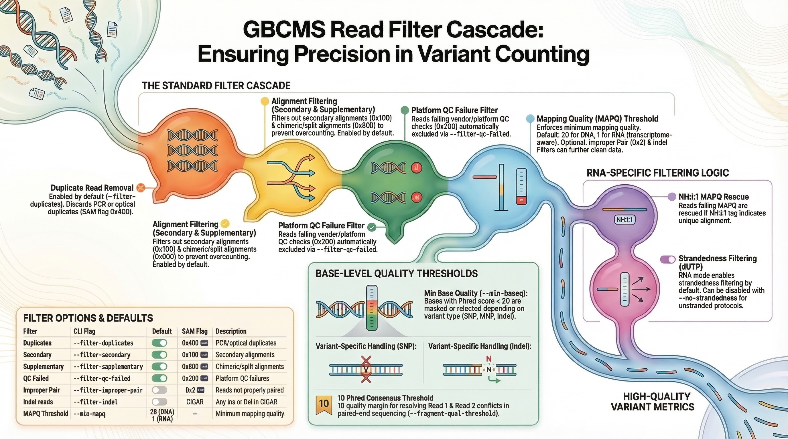

gbcms
| Description | High-performance variant counting from BAM files |
| Author(s) | MSK-ACCESS |
| Repository | https://github.com/msk-access/gbcms |
| Copyright | Developed by Ronak H Shah @ MSKCC | Built with Antigravity | AGPL-3.0 |
gbcms¶
Get Base Counts Multi-Sample — High-performance variant counting from BAM/CRAM files


What It Does¶
GBCMS extracts allele counts and variant metrics at specified positions in BAM/CRAM files:
block-beta
columns 3
VCF["📄 VCF/MAF\nVariant positions"]:1
Engine["⚡ gbcms\nPython + Rust"]:1
Counts["📊 Allele Counts\nDP · RD · AD · VAF"]:1
BAM["🗂️ BAM/CRAM Files\n(1 to N samples)"]:1
space:1
Metrics["🧬 Fragment Counts\nStrand bias · mFSD"]:1
VCF --> Engine
BAM --> Engine
Engine --> Counts
Engine --> Metrics
Visual Overview¶
Key Metrics¶
| Metric | Formula | Description |
|---|---|---|
| VAF | AD / (RD + AD) |
Variant Allele Frequency |
| Strand Bias | Fisher's exact test | Detect sequencing artifacts |
| Fragment Counts | Deduplicated pairs | PCR-aware counting |
Quick Start¶
# Install
pip install gbcms
# DNA/cfDNA counting
gbcms dna --variants variants.vcf --bam sample.bam --fasta ref.fa --output-dir results/
# RNA-seq counting
gbcms rna --variants variants.vcf --bam rna:aligned.bam --fasta ref.fa --output-dir results/
→ Full Installation Guide | → CLI Examples
Choose Your Workflow¶
flowchart TD
Start(["What data?"]):::start
Start -->|"DNA / cfDNA\nWGS / WES / Panel"| DNA(["gbcms dna"]):::dna
Start -->|"RNA-seq\n(STAR-aligned, dUTP)"| RNA(["gbcms rna"]):::rna
DNA --> NsamD{"Many samples?
≥10 BAMs"}
RNA --> NsamR{"Many samples?
≥10 BAMs"}
NsamD -->|"No"| CLI(["🖥️ CLI"]):::cli
NsamD -->|"Yes"| HPC{"HPC / SLURM?"}
NsamR -->|"No"| CLI
NsamR -->|"Yes"| HPC
HPC -->|"Yes"| NF(["🔷 Nextflow"]):::nf
HPC -->|"No"| CLI
classDef start fill:#9b59b6,color:#fff,stroke:#7d3c98,stroke-width:2px;
classDef dna fill:#27ae60,color:#fff,stroke:#1e8449,stroke-width:2px;
classDef rna fill:#3498db,color:#fff,stroke:#2471a3,stroke-width:2px;
classDef cli fill:#e67e22,color:#fff,stroke:#bf6516,stroke-width:2px;
classDef nf fill:#2c3e50,color:#fff,stroke:#1a2530,stroke-width:2px;
| Workflow | Best For | Guide |
|---|---|---|
| CLI | 1-10 samples, local/single server | Quick Start |
| Nextflow | 10+ samples, HPC/SLURM | Nextflow Guide |
Architecture¶
Python/Rust hybrid for maximum performance:
See Architecture Reference → for full diagrams covering system layers, data flow, genomic binning, coordinate system, config hierarchy, and end-to-end sequence.
→ Technical Details | → How It Works
Documentation¶
| Section | Description |
|---|---|
| Getting Started | Installation and first run |
| CLI Reference | Command-line usage |
| Nextflow Pipeline | HPC workflow |
| How It Works | Architecture, algorithms, and formats |
| Development | Contributing guide |
abbreviations
Getting Started
Choose Your Mode¶
gbcms supports two sequencing contexts. Pick the one that matches your data — the rest of the setup follows from there.
flowchart TD
Start(["What sequencing data?"]):::start
Start -->|"cfDNA · IMPACT · WGS\nWES · Panel"| DNA(["gbcms dna"]):::dna
Start -->|"STAR-aligned RNA-seq\ndUTP stranded"| RNA(["gbcms rna"]):::rna
Start -->|"Unstranded RNA-seq\n(random orientation)"| RNAL(["gbcms rna\n--no-strandedness"]):::rnal
classDef start fill:#9b59b6,color:#fff,stroke:#7d3c98,stroke-width:2px;
classDef dna fill:#27ae60,color:#fff,stroke:#1e8449,stroke-width:2px;
classDef rna fill:#3498db,color:#fff,stroke:#2471a3,stroke-width:2px;
classDef rnal fill:#2471a3,color:#fff,stroke:#1a5276,stroke-width:2px;
Use for: cfDNA (MSK-ACCESS, IMPACT), WGS, WES, targeted gene panels
Key capabilities:
- Windowed indel detection with 3-layer safeguards (±5bp, adaptively extended in repeats)
- Mutant Fragment Size Distribution (
--mfsd) for short-fragment enrichment analysis - UMI-aware fragment deduplication (
--umi-tag) - Multi-allelic sibling exclusion to prevent REF inflation at complex loci
Defaults: MAPQ 20 · base quality 20 · duplicates filtered · PairHMM standard gap penalties
Use for: STAR-aligned RNA-seq (dUTP stranded or unstranded)
Key capabilities:
- NH:i:1 MAPQ rescue for novel splice junction reads
- dUTP strandedness filtering (disable with
--no-strandednessfor unstranded libraries) - A-to-I RNA editing site flagging via REDIportal (
--rna-editing-db) - Splice junction tracking (
rna_splice_spanning_count)
Defaults: MAPQ 1 · base quality 20 · secondary/supplementary/QC-failed reads filtered · PairHMM relaxed RT gap penalties
Prerequisites¶
| Requirement | DNA | RNA |
|---|---|---|
| Python 3.10+ | ✅ | ✅ |
BAM file with .bai index |
✅ | ✅ |
Reference FASTA with .fai index |
✅ | ✅ |
| VCF or MAF with variant positions | ✅ | ✅ |
| STAR-aligned BAM (NH tag) | — | ✅ |
Gene strand annotation in MAF (gene_strand column) |
— | Recommended |
| REDIportal TABLE1 file | — | Optional |
BAM Index
If your BAM lacks an index: samtools index sample.bam
FASTA Index
If your FASTA lacks an index: samtools faidx reference.fa
Related¶
- Installation — Install via PyPI, Docker, or from source
- Quick Start — Run your first counting job (DNA and RNA examples)
- CLI Reference — DNA — Full option reference for
gbcms dna - Nextflow Pipeline — For processing many samples in parallel on HPC
abbreviations
Installation¶
Quick Install¶
System Requirements
PyPI wheels require glibc 2.34+ (Ubuntu 22.04+, RHEL 9+, Debian 12+). For older systems, see Legacy Linux.
git clone https://github.com/msk-access/gbcms.git
cd gbcms
pip install . # builds the Rust extension: needs a Rust toolchain
# Contributors: an editable install with the test, lint and docs tools
# (a PEP 735 dependency group, which needs pip>=25.1)
pip install --upgrade "pip>=25.1"
pip install -e . --group dev
Requirements¶
| Component | Requirement |
|---|---|
| Python | 3.10+ |
| OS | Linux (glibc 2.34+), macOS, Windows (WSL2) |
| Memory | 4GB+ (8GB for large BAMs) |
For Nextflow Workflow¶
- Nextflow 21.10.3+
- Docker or Singularity
Legacy Linux (RHEL 8 / HPC)¶
For RHEL 8, CentOS 8, or HPC systems with glibc < 2.34:
# Create environment with build dependencies
# Note: clangdev (not clang) provides headers needed by bindgen
micromamba create -n gbcms_env python=3.13 clangdev rust -c conda-forge
micromamba activate gbcms_env
# Set libclang path for the Rust build
export LIBCLANG_PATH=$CONDA_PREFIX/lib
# Install from source
git clone https://github.com/msk-access/gbcms.git
cd gbcms
pip install .
Why not pip install?
PyPI wheels require glibc 2.34+. On RHEL 8 (glibc 2.28), pip falls back to source compilation which requires Rust and clang headers. The conda environment provides these dependencies.
Verification¶
# Check installation
gbcms --version
# Expected: X.Y.Z (your installed version)
# Test help
gbcms --help
Docker Usage¶
docker run --rm \
-v $(pwd):/data \
ghcr.io/msk-access/gbcms:X.Y.Z \
gbcms dna \
--variants /data/variants.vcf \
--bam /data/sample.bam \
--fasta /data/reference.fa \
--output-dir /data/results/
Docker Volume
Use -v to mount your data directory.
Troubleshooting¶
See the full Troubleshooting Guide for detailed solutions.
Quick checks:
# BAM index missing
samtools index sample.bam
# FASTA index missing
samtools faidx reference.fa
# Chromosome mismatch — compare names between FASTA, BAM, VCF/MAF
grep "^>" reference.fa | head -5
samtools view -H sample.bam | grep "^@SQ" | head -5
For glibc errors, installation failures, or Docker permission issues, see Troubleshooting → Installation Issues.
Upgrade¶
Related¶
- Quick Start — Common usage patterns with DNA and RNA examples
- CLI Reference — DNA — Full option reference for
gbcms dna - CLI Reference — RNA — Full option reference for
gbcms rna - Nextflow Pipeline — Running many samples in parallel on HPC
- Troubleshooting — Installation issues and common errors
abbreviations
Quick Start¶
Get up and running in minutes. All examples below assume gbcms is installed.
Many samples on HPC?
Use the Nextflow pipeline instead of the CLI for parallel processing on a cluster.
Basic Usage¶
Output Format¶
Multiple Samples¶
Quality Filters¶
Complete Example¶
gbcms dna \
--variants variants.vcf \
--bam TumorSample:tumor.bam \
--fasta hg38.fa \
--output-dir genotyped/ \
--format maf \
--suffix .genotyped \
--threads 8 \
--min-mapq 30 \
--min-baseq 20 \
--filter-duplicates \
--filter-secondary \
--filter-supplementary \
--mfsd \
--mfsd-parquet
Output:
- genotyped/TumorSample.genotyped.maf — allele counts + 41 mFSD columns
- genotyped/TumorSample.genotyped.fsd.parquet — raw fragment size arrays
gbcms rna \
--variants mutations.maf \
--bam tumor_rna:aligned.bam \
--fasta hg38.fa \
--rna-editing-db TABLE1_hg38.txt.gz \
--format maf \
--threads 8 \
--output-dir results/
Output: results/tumor_rna.maf — standard counts + 5 RNA columns:
rna_sense_depth, rna_antisense_depth, rna_alt_sense_count,
rna_editing_site, rna_splice_spanning
Docker¶
Common CLI Options¶
| Option | Default | Description |
|---|---|---|
--variants |
Required | VCF or MAF file |
--bam |
Required | BAM file(s). Prefix with name: to set sample ID |
--bam-list |
— | File with BAM paths (one per line) |
--fasta |
Required | Reference FASTA |
--output-dir |
Required | Output directory |
--format |
vcf |
Output format (vcf or maf) |
--min-mapq |
20 (DNA) / 1 (RNA) | Minimum mapping quality |
--min-baseq |
20 | Minimum base quality |
--threads |
1 | Number of threads |
Related¶
- DNA CLI Reference — mFSD, UMI, alignment backend options
- RNA CLI Reference — Strandedness, editing DB, splice junction options
- Nextflow Pipeline — Process many samples in parallel on HPC
- Allele Classification — How the counting engine works
- Troubleshooting — Common issues and solutions
abbreviations
CLI Reference
CLI Reference¶
The gbcms command-line interface provides two primary commands for variant counting — one for DNA/cfDNA and one for RNA-seq — plus merge and normalization utilities.
Commands¶
| Command | Description |
|---|---|
| dna | Count alleles in DNA/cfDNA BAM/CRAM files |
| rna | Count alleles in RNA-seq BAM/CRAM files with transcriptome-aware filtering |
| merge | Merge per-BAM-type MAFs into a single type-prefixed output |
| normalize | Standalone variant normalization (no counting) |
| convert | VCF ↔ MAF conversion as vcf2maf / maf2vcf write it (no counting) |
| build-gtf-cache | Deprecated in 6.6.0: does nothing and warns; removed in 6.7.0. The GTF loads in a few seconds, so there is no cache to build. |
Quick Example¶
# DNA/cfDNA counting
gbcms dna \
--variants mutations.maf \
--bam sample1:sample1.bam \
--bam sample2:sample2.bam \
--fasta reference.fa \
--output-dir results/
# RNA-seq counting
gbcms rna \
--variants mutations.vcf \
--bam rna_sample:star_aligned.bam \
--fasta reference.fa \
--output-dir results/
Getting Help¶
Related¶
- Quick Start — Common usage patterns
- Nextflow Pipeline — For processing many samples
- Input Formats — VCF/MAF specifications
abbreviations
gbcms dna¶
Count alleles at variant positions across one or more DNA/cfDNA BAM/CRAM files.
Migrated from gbcms run
The deprecated gbcms run command was removed in v4.1.0. Use gbcms dna instead — all arguments are identical.
Synopsis¶
Required Arguments¶
| Option | Description |
|---|---|
--variants, -v |
VCF or MAF file with variant positions (.vcf, .vcf.gz, .vcf.bgz, or .maf). Unsupported extensions are rejected immediately. |
--bam, -b |
BAM or CRAM file path (can repeat). Optionally prefix with name: for sample naming, e.g. --bam tumor:tumor.bam. If no name given, the filename stem is used. |
--bam-list, -L |
File containing BAM/CRAM paths (one per line, optionally sample_name path). Alternative to repeated --bam. |
--fasta, -f |
Reference FASTA file (with .fai index). Required for all runs; also used for CRAM decoding. |
--lenient-bam |
Skip missing --bam paths and missing --bam-list entries, continuing with the remaining samples (default: all missing paths are reported and the run exits non-zero). A missing or unreadable --bam-list file, or a duplicate sample name, always fails regardless. |
CRAM Support (v5.3.0+)
--bam accepts both BAM (.bam) and CRAM (.cram) files transparently.
The --fasta reference is automatically used for CRAM decoding at both the Rust
engine and Python header-validation layers. No additional flags are needed.
Index discovery is automatic: gbcms searches for .bam.bai / .bai (BAM) or
.cram.crai / .crai (CRAM) next to the alignment file. You can also provide
the index path explicitly via the Nextflow samplesheet bai column.
Output Options¶
| Option | Default | Description |
|---|---|---|
--output-dir, -o |
required | Output directory |
--format |
vcf |
Output format (vcf or maf) |
--suffix |
'' |
Suffix for output filenames |
--column-prefix |
'' |
Prefix for gbcms count columns in MAF output. Only letters, digits, and underscores ([A-Za-z0-9_]) are allowed; invalid characters exit immediately. |
--preserve-barcode |
false |
Keep original Tumor_Sample_Barcode from input MAF. No-op (with warning) when input is not MAF. |
--show-normalization |
false |
Append norm_* columns showing left-aligned coordinates |
--context-padding |
5 |
Minimum flanking bases for haplotype construction. Range 1–50, enforced at parse time. Auto-increased in repeat regions when --adaptive-context is enabled. |
--adaptive-context |
true |
Dynamically increase context padding in tandem repeat regions |
--threads |
1 |
Total worker-thread budget for this run (minimum 1; 0 is rejected). All parallelism — read classification and any decode threads — stays within this budget, so gbcms never oversubscribes a small allocation. Multi-sample parallelism is the orchestrator's job (e.g. N concurrent Nextflow processes, each pinned to task.cpus), not this flag's. |
mFSD Options¶
Mutant Fragment Size Distribution (mFSD) analysis compares insert-size distributions for REF- vs ALT-classified fragments at each variant position, enabling detection of short-fragment enrichment associated with tumor-derived cfDNA (see mFSD Metrics).
| Option | Default | Description |
|---|---|---|
--mfsd |
false |
Enable mFSD analysis. Adds 41 mFSD columns (KS test, LLR, mean sizes, pairwise comparisons, derived metrics) to MAF output and 13 MFSD_* INFO fields to VCF. |
--mfsd-parquet |
false |
Write a companion <sample>.fsd.parquet with per-variant raw fragment size arrays (ref_sizes, alt_sizes). Enables downstream visualizations. Requires --mfsd. |
--mfsd-report |
false |
Generate an interactive HTML report (<sample>.mfsd_report.html) with per-variant fragment size distributions, dual-axis histograms, and graded fragment-size evidence (leans somatic, no size evidence, insufficient). Implies --mfsd and --mfsd-parquet (both are auto-enabled). See mFSD Report. |
--mfsd-report-min-alt |
3 |
Minimum ALT fragment count to include a variant in the HTML report. |
--mfsd-report-max-variants |
20 |
Maximum variants in the HTML report (selected by highest ALT count). Use -1 for no limit. |
Tip
To generate summary statistics, raw Parquet data, and an interactive HTML report:
gbcms dna --mfsd-report --format maf \
--variants variants.maf --bam tumor:tumor.bam --fasta hg19.fa -o ./results
<sample>.maf (with 41 mFSD columns), <sample>.fsd.parquet
(raw fragment sizes), and <sample>.mfsd_report.html (interactive visualization).
Using --mfsd-report auto-enables --mfsd and --mfsd-parquet.
Observation Options¶
| Flag | Default | Description |
|---|---|---|
--observations-parquet |
false |
Write a companion <sample>.observations.parquet with the per-molecule allele call at each variant (which molecule carried REF/ALT/N/OTHER). Enables read-backed phasing and allelic-imbalance analyses downstream. Counts output is unchanged. See Per-Molecule Observations. |
Rows are written from Rust, so memory stays flat at panel scale. Nothing is written unless the flag is passed.
Filtering Options¶
| Option | Default | Description |
|---|---|---|
--min-mapq |
20 |
Minimum MAPQ |
--min-baseq |
20 |
Minimum BASEQ |
--filter-duplicates |
true |
Filter duplicate reads |
--filter-secondary |
true |
Filter secondary alignments |
--filter-supplementary |
true |
Filter supplementary alignments |
--filter-qc-failed |
true |
Filter QC failed reads |
--filter-improper-pair |
false |
Filter improperly paired reads |
--filter-indel |
false |
Filter reads with indels |
--fragment-qual-threshold |
10 |
Quality difference threshold for fragment consensus (see Fragment Counting) |
BAQ Options¶
Base Alignment Quality (BAQ) heuristically downgrades base qualities near indels and splice junctions to prevent systematic errors from realignment artifacts.
| Option | Default | Description |
|---|---|---|
--apply-baq/--no-baq |
off |
Enable BAQ quality downgrade near indels and splice junctions |
Internal constants (not configurable — derived from Li 2011):
| Constant | Value | Description |
|---|---|---|
BAQ_RADIUS |
5 bp | Bases within 5 bp of an indel/splice boundary are penalized |
BAQ_PENALTY |
20 | Subtracted from BQ (clamped to 0) |
When to Enable BAQ for DNA
Enable --apply-baq when your upstream pipeline does not include BQSR, fgbio consensus, or any other base quality recalibration. In these "raw BQ" pipelines, bases near indels may retain inflated sequencer-assigned quality scores. BAQ compensates by penalizing BQ within 5 bp of indel boundaries.
Do Not Enable for Pre-Calibrated BAMs
If your DNA pipeline includes BQSR or consensus calling (e.g., fgbio, Marianas), leave BAQ off (the default). Applying BAQ on already-recalibrated BAMs may over-penalize, causing undercounting of legitimate variant evidence.
RNA Mode Default
In gbcms rna, BAQ is on by default because RNA pipelines typically lack BQSR. BAQ also penalizes bases near splice junctions (CIGAR N). See RNA Splice-Junction Handling.
UMI Options¶
Unique Molecular Identifier (UMI) support for molecule-level deduplication.
| Option | Default | Description |
|---|---|---|
--umi-tag |
(none) | BAM tag for UMI barcode (e.g. RX). Enables UMI-aware fragment grouping. |
UMI-Aware Fragment Counting
When --umi-tag is set, two reads are considered the same fragment only if they share both QNAME and UMI barcode. This prevents UMI-collapsed reads from different original molecules being incorrectly merged into a single fragment, which would deflate fragment-level allele counts.
MNP Rescue Options¶
The rescue pass is for annotated MNPs (multi-nucleotide polymorphisms) whose carriers hold
only a component of the haplotype — e.g. two SNVs on different molecules annotated as one
MNP. gbcms correctly reports such a haplotype as absent: the carriers land in partial_alt,
not alt_count. Rescue re-counts each discriminating position as an SNV and reports the
best-supported component instead. See Architecture → MNP Rescue Pass
for the full design.
| Option | Default | Description |
|---|---|---|
--rescue-mnp |
false |
Enable the rescue pass. Candidates are PASS MNPs flagged MNP_RESCUE_ELIGIBLE with partial_alt > alt_count, outside co-annotated groups, and whose full haplotype no read shows. When the best component beats the MNP's alt_count, that component's full counts (every count, fragment, strand and mFSD column) replace the row's, the row is flagged RESCUED_COMPONENT(chrom:pos:REF>ALT) in gbcms_diagnostic, and a warning is logged; the MNP's own counts and the per-position split go to gbcms_rescue. MAF and VCF output carry the same counts, flags and audit. |
--rescue-mnp-threshold |
1.0 |
Maximum discriminating/length ratio for MNP rescue eligibility (0.0–1.0). 1.0 = all MNPs are eligible (C++ gbcms compatible, default). 0.5 = conservative sparse-only mode (≤50% discriminating positions). 0.0 = disable rescue eligibility (MNP_DISC_RATIO diagnostics are still emitted). Only used when --rescue-mnp is enabled. |
Diagnostic Flags
Every MNP row carries MNP_DISC_RATIO(n/m), with or without --rescue-mnp, and
MNP_RESCUE_ELIGIBLE when n/m is at most --rescue-mnp-threshold. Both describe
the annotated MNP's shape, so a rescued row keeps them next to RESCUED_COMPONENT.
Definitions: QC Flags → Diagnostics.
A rescued row reports a component, not the annotated MNP
When reads show the whole MNP (e.g. a somatic change on top of a germline SNP), rescue
keeps the MNP's counts (outcome=haplotype_confirmed). But where the MNP itself is
absent — typically a fillout of other timepoints or normals — a germline SNP component
can still be adopted, and the rescued VAF is then the germline VAF. Read gbcms_rescue
(outcome, original counts, per-position split) before interpreting a rescued row.
Choosing the threshold
# Permissive (default) — rescue all MNPs, matching C++ gbcms behavior
gbcms dna --rescue-mnp --variants input.maf --bam sample:sample.bam --fasta ref.fa -o out/
# Conservative — rescue only sparse MNPs (≤50% discriminating positions)
gbcms dna --rescue-mnp --rescue-mnp-threshold 0.5 --variants input.maf --bam sample:sample.bam --fasta ref.fa -o out/
Homopolymer Twin Option¶
| Option | Default | Description |
|---|---|---|
--rescue-homopolymer |
false |
Dual-count the homopolymer twin. For a delins whose REF is a run of one base and whose ALT is the base after the run (CCCCCC>T), also count the run with its last base replaced (CCCCCT), and report whichever form has more ALT reads, flagged WARN_HOMOPOLYMER_DECOMP. |
Off by default: the row counts the given allele
Both forms accept near-matches, so the winner can report another allele's reads under
the row's label. By default gbcms counts the allele it is given, and when the reads carry
a different one, gbcms_diagnostic names it: OBSERVED_ALLELE when no read carries the
given allele, COEXISTING_ALLELE when it is present beside a more frequent one (see
output formats).
Debugging Options¶
| Option | Default | Description |
|---|---|---|
--verbose, -V |
false |
Enable verbose debug logging |
--trace, -T |
false |
Enable per-read Rust trace logging (slow). Implies --verbose. Shows detailed per-read classification diagnostics. |
Alignment Backend¶
Phase 3 (haplotype-based) classification uses a two-stage pipeline:
-
WFA fast-path (Wavefront Alignment,
wfa2lib-rs) — edit-distance triage against the pangenomic haplotype matrix. Resolves ~70-80% of reads instantly at O(s²) cost where s is the edit distance. If REF and ALT scores differ clearly, the read is classified immediately. -
Marginalized PairHMM (escalated only when WFA is ambiguous) — integrates per-base quality probabilities into alignment scoring, producing a log-likelihood ratio (LLR) confidence score. More sensitive in noisy, low-quality, or repeat-dense regions.
| Option | Default | Description |
|---|---|---|
--alignment-backend |
pairhmm |
Phase 3 backend: pairhmm (WFA + PairHMM, default) or sw (Smith-Waterman only, no WFA triage). Invalid values are rejected at parse time. |
--llr-threshold |
2.3 |
PairHMM LLR threshold for confident calls (≈ ln(10)) |
--gap-open-prob |
1e-4 |
PairHMM gap-open probability for non-repeat regions |
--gap-extend-prob |
0.1 |
PairHMM gap-extend probability for non-repeat regions |
--repeat-gap-open-prob |
1e-2 |
PairHMM gap-open probability for tandem repeat regions |
--repeat-gap-extend-prob |
0.5 |
PairHMM gap-extend probability for tandem repeat regions |
pairhmm vs sw
pairhmm (default) uses WFA edit-distance triage first, then escalates to PairHMM only for ambiguous reads. This is faster than running PairHMM on every read and more accurate in low-quality or repeat-dense regions.
sw runs Smith-Waterman on every Phase 3 read (no WFA pre-filter). Use only if you need exact reproducibility with versions <3.0.0.
Examples¶
gbcms dna \
--variants mutations.vcf \
--bam sample:sample.bam \ # (1)!
--fasta reference.fa \
--output-dir results/
- The
sample:prefix sets the output filename. Without it, the BAM filename stem is used.
gbcms dna \
--variants mutations.maf \
--bam tumor:tumor.bam \
--bam normal:normal.bam \
--fasta reference.fa \
--format maf # (1)!
- MAF output preserves all input MAF columns and appends gbcms count columns.
Output¶
See Output Formats for a complete column-level schema reference covering:
- VCF output:
##INFOfields,##FORMATfields, and annotated examples - MAF output: VCF→MAF vs MAF→MAF column sets,
Tumor_Sample_Barcodebehaviour, and column prefix options - mFSD columns (with
--mfsd): all 41 mFSD fields - Normalization columns (with
--show-normalization) - Companion files:
.fsd.parquet(with--mfsd-parquet) and.observations.parquet(with--observations-parquet)
Related¶
- Quick Start — Common patterns
- gbcms rna — RNA-seq counting with transcriptome-aware filtering
- gbcms normalize — Standalone normalization (no counting)
- Nextflow Pipeline — For many samples
- Input Formats — VCF/MAF specs
- Output Formats — Complete column-level output reference
- Variant Counting — How each variant type is counted
abbreviations
gbcms rna¶
Count alleles in RNA-seq BAM/CRAM files with transcriptome-aware filtering.
RNA mode extends the core DNA counting engine with filters and metrics specific to RNA-seq data: STAR-aware MAPQ rescue, dUTP strandedness filtering, splice junction tracking, A-to-I RNA editing site flagging, GTF-based transcript annotation, and amplicon library support.
When to Use¶
| Scenario | Command |
|---|---|
| cfDNA (ACCESS, IMPACT) | gbcms dna |
| WGS / WES / Panel | gbcms dna |
| STAR + dUTP (reverse) RNA-seq | gbcms rna |
| STAR + dUTP + GTF annotation | gbcms rna --gtf genes.gtf |
| Forward-stranded (fr-secondstrand) RNA-seq | gbcms rna --strandedness forward |
| Unstranded RNA-seq | gbcms rna --strandedness unstranded |
| Amplicon RNA libraries | gbcms rna --library-type amplicon |
Synopsis¶
RNA Pipeline Overview¶
flowchart LR
subgraph Inputs ["Inputs"]
direction TB
BAM["BAM/CRAM Files"]
VCF["VCF/MAF"]
FASTA["Reference"]
DB["REDIportal DB"]:::optional
GTF["GTF Annotation"]:::optional
end
subgraph Filters ["RNA Filters"]
direction TB
NH["NH:i:1 MAPQ Rescue"]:::filter
Strand["Strandedness Filter"]:::filter
end
subgraph Counting ["Allele Classification"]
direction TB
Classify["Phase 1-3 Classification"]
Sense["Sense/Antisense Tracking"]
Splice["Splice Junction Detection"]
Edit["RNA Editing Flagging"]
end
subgraph Annotation ["GTF Annotation (v5.0.0)"]
direction TB
ExonDist["Exon Boundary Distance"]
TxCount["Per-Transcript Counts"]
ASJD["Splice Junction Detection"]
end
BAM --> NH --> Strand --> Classify
VCF --> Classify
FASTA --> Classify
Classify --> Sense
Classify --> Splice
Classify --> Edit
DB -.->|"optional"| Edit
GTF -.->|"optional"| Annotation
Classify --> Annotation
Sense --> Out(["RNA VCF/MAF"]):::pass
Splice --> Out
Edit --> Out
Annotation -.-> Out
classDef filter fill:#e67e22,color:#fff,stroke:#bf6516,stroke-width:2px;
classDef optional fill:#95a5a6,color:#fff,stroke:#7f8c8d,stroke-width:1px,stroke-dasharray:4;
classDef pass fill:#27ae60,color:#fff,stroke:#1e8449,stroke-width:2px;
class NH,Strand filter;
Required Arguments¶
Shared Arguments
RNA mode shares all required arguments, output options, filtering options, BAQ options, UMI options, MNP rescue options, the homopolymer twin option, and debugging options with DNA mode. See the gbcms dna reference for full descriptions.
Provenance & CRAM Support (v5.3.0+)
RNA output includes the same provenance metadata as DNA mode — ##gbcms_command,
##reference, ##contig, and ##FILTER in VCF headers; #gbcms and #command
comment lines in MAF output. --bam accepts both BAM and CRAM files
transparently. See CRAM Support for details.
BAQ is On by Default in RNA Mode
Unlike DNA mode, --apply-baq defaults to on for RNA. BAQ penalizes bases within 5 bp of both indels and splice junctions (CIGAR N), serving as a lightweight alternative to GATK SplitNCigarReads. Disable with --no-baq if your upstream workflow already runs SplitNCigarReads or BQSR. See RNA Splice-Junction Handling.
| Option | Description |
|---|---|
--variants, -v |
VCF or MAF file |
--bam, -b |
BAM or CRAM file(s) |
--fasta, -f |
Reference FASTA (with .fai index). Also used for CRAM decoding. |
--output-dir, -o |
Output directory |
RNA-Specific Options¶
These options are only available on gbcms rna, not on gbcms dna.
GTF Annotation (v5.0.0)¶
| Option | Default | Description |
|---|---|---|
--gtf |
(none) | Path to Ensembl/GENCODE GTF annotation file, plain or gzip/BGZF (.gtf or .gtf.gz). Enables exon boundary distance, per-transcript counting, and aberrant splice junction detection. Also back-fills each variant's gene_strand — required for --enforce_strandedness and ASJD strand-discordance to do anything. |
--gtf-cache-dir |
(none) | Deprecated in 6.6.0 and ignored (warns); removed in 6.7.0. The GTF loads in a few seconds, so there is no cache. |
What --gtf Enables
When a GTF file is provided, gbcms builds a COITree-based annotation index and adds:
exon_boundary_dist— Distance (bp, unsigned) from the variant's REF span to the nearest annotated exon boundary,0when a boundary lies inside it; empty when the variant's contig has no annotation in the GTF- Per-transcript read/fragment counts —
|-separatedGENE:TX:READ_COUNTandGENE:TX:FRAG_COUNTstrings - ASJD detection — 14 columns for Aberrant Splice Junction Detection, comparing read splice junctions against annotated transcript splice sites
See RNA Annotation for full details.
GTF Format Requirements
gbcms supports both Ensembl (.gtf) and GENCODE (.gtf.gz) GTF files. The parser reads exon feature rows and uses gene_name and transcript_id attributes.
Strandedness Protocol¶
| Option | Default | Description |
|---|---|---|
--strandedness |
reverse |
RNA library strand protocol: reverse, forward, or unstranded |
Controls how a read's genomic orientation folds to the transcript strand it
originated from. This fold drives both --enforce-strandedness filtering and ASJD
strand-discordance detection.
| Value | featureCounts | Convention | Sense mate |
|---|---|---|---|
reverse (default) |
-s 2 |
dUTP / fr-firststrand | R2 |
forward |
-s 1 |
fr-secondstrand | R1 |
unstranded |
-s 0 |
none | — |
Picking the right value
reverse is the default — it matches the FORTE pipeline default and dUTP
library preps. If unsure, run RSeQC infer_experiment.py (a ~90%+ majority for
1+-,1-+,2++,2-- means reverse; 1++,1--,2+-,2-+ means forward) or check the
featureCounts -s flag your upstream pipeline used. unstranded disables strand
filtering and strand-discordance entirely (and is implied by --library-type
amplicon). An unknown value is rejected with an error rather than silently
defaulting.
Library Type (v5.0.0)¶
| Option | Default | Description |
|---|---|---|
--library-type |
capture |
RNA library preparation method: capture (IDT xGen-style, default) or amplicon |
Amplicon Mode Behavior
In amplicon libraries, R1 and R2 reads are PCR duplicates of the same template molecule — they are not independent fragment ends like in capture libraries. When --library-type amplicon is set:
- Fragment consensus bypass: R1 and R2 are treated as independent observations (XOR trick on
mol_hash), preventing incorrect merging. - Strandedness auto-disabled: Amplicon libraries are not strand-specific, so
--enforce-strandednessis automatically set toFalsewith a warning. - Effect on counts:
dpf ≈ dp(fragment counts approach read counts) because no R1/R2 merging occurs.
Strandedness Filtering¶
| Option | Default | Description |
|---|---|---|
--enforce-strandedness/--no-strandedness |
true |
Filter reads by dUTP strand orientation relative to gene strand |
Biological Context: dUTP Stranded Libraries
In dUTP-stranded RNA-seq, the second strand (synthesized with dUTP) is degraded, so sequenced reads reflect the antisense strand of the original mRNA. The strandedness filter uses the variant's gene strand, resolved from the --gtf exons at its position, to determine whether each read's orientation is consistent with the expected transcript direction.
Disable with --no-strandedness for unstranded RNA-seq libraries where read orientation is random.
Amplicon Override
When --library-type amplicon is used, --enforce-strandedness is automatically disabled regardless of the CLI flag value. Amplicon libraries are not strand-specific by design.
flowchart TD
Read(["📖 RNA Read"]) --> HasGS{"gene_strand annotated?"}
HasGS -->|No| Pass(["✅ Pass — no filter"]):::pass
HasGS -->|Yes| Check{"Read orientation\nvs gene strand?"}
Check -->|"Consistent"| Sense(["✅ Sense — counted in DP/AD/RD"]):::pass
Check -->|"Inconsistent"| Anti(["📊 Antisense — counted in rna_antisense_depth"]):::anti
classDef pass fill:#27ae60,color:#fff,stroke:#1e8449,stroke-width:2px;
classDef anti fill:#e67e22,color:#fff,stroke:#bf6516,stroke-width:2px;
RNA Editing Database¶
| Option | Default | Description |
|---|---|---|
--rna-editing-db |
(none) | Path to REDIportal TABLE1 file of known A-to-I RNA editing sites (.gz supported) |
Biological Context: A-to-I RNA Editing
ADAR (Adenosine Deaminase Acting on RNA) enzymes convert adenosine to inosine in double-stranded RNA regions. Inosine is read as guanosine by the sequencing machinery, creating apparent A→G variants that are biological RNA modifications — not somatic mutations. Flagging these sites prevents false-positive variant calls.
The REDIportal database catalogs >16 million known human A-to-I editing sites from multiple tissues and conditions.
Obtaining REDIportal
Download from REDIportal:
The file is loaded once at startup and stored as a hash set for O(1) lookup per variant.Observation Options¶
| Flag | Default | Description |
|---|---|---|
--observations-parquet |
false |
Write a companion <sample>.observations.parquet with the per-molecule allele call at each variant. Works on spliced (N-CIGAR) alignments; the rows are molecule-level, not isoform-level. See Per-Molecule Observations. |
Quality Thresholds¶
RNA mode uses different MAPQ default to accommodate STAR aligner behavior:
| Option | DNA Default | RNA Default | Rationale |
|---|---|---|---|
--min-mapq |
20 | 1 | STAR assigns MAPQ 255 to unique, 0–3 to multi-mappers. Low MAPQ threshold with NH:i:1 rescue captures novel splice junctions. |
--min-baseq |
20 | 20 | Same |
--fragment-qual-threshold |
10 | 10 | Same |
RNA Read Filters¶
RNA mode extends the standard read filter cascade with two additional checks:
NH:i:1 MAPQ Rescue¶
STAR assigns MAPQ=0 to reads that map to multiple loci. However, reads with NH:i:1 (Number of Hits = 1) are uniquely mapped despite low MAPQ — they were assigned low scores because STAR hadn't observed the splice junction before.
flowchart TD
Read(["📖 RNA Read"])
Read -->|"read.mapq"| MAPQ{"MAPQ ≥ min_mapq?\n(default: 1)"}
MAPQ -->|"Yes — MAPQ=255\nunique alignment"| Pass(["✅ Pass"]):::pass
MAPQ -->|"No — MAPQ=0\n(check NH tag)"| NH{"NH:i:1?"}
NH -->|"Yes — novel junction\nunique but low MAPQ"| Rescue(["✅ Rescued"]):::rescue
NH -->|"No — NH>1\nmulti-mapper"| Drop(["❌ Discard"]):::drop
classDef pass fill:#27ae60,color:#fff,stroke:#1e8449,stroke-width:2px;
classDef rescue fill:#f39c12,color:#fff,stroke:#d68910,stroke-width:2px;
classDef drop fill:#e74c3c,color:#fff,stroke:#c0392b,stroke-width:2px;
Why MAPQ=1 Default?
Setting --min-mapq 1 together with NH rescue ensures:
- Uniquely mapped reads (MAPQ=255): ✅ always pass
- Novel junction reads (MAPQ=0, NH=1): ✅ rescued
- True multi-mappers (MAPQ=0, NH>1): ❌ filtered
Filter Defaults¶
RNA mode uses the same filter defaults as DNA mode — duplicates, secondary, supplementary, and QC-failed reads are all filtered by default in both modes:
| Filter | DNA Default | RNA Default |
|---|---|---|
--filter-secondary |
on | on (same) |
--filter-supplementary |
on | on (same) |
--filter-qc-failed |
on | on (same) |
Known Limitation: Variants at Exon-Intron Boundaries
Junction-spanning reads are handled by the splice-aware evidence
rule:
an indel op directly after the splice N is examined structurally, but a
junction read that would need alignment-based (Phase 3) scoring — e.g.
a delins carrier whose ops sit across the junction — classifies neither
rather than being scored against a stitched sequence. (An earlier
consensus intron-snipping step that spliced ref_context for Phase 3 was
removed: it had no coordinate map, so it corrupted sequence verification
near junctions and mis-scored exon-contained reads.) This is conservative:
such reads count dp but neither allele. Deletion loci where reads
asserting splicing over the span outnumber confirmed ALT are flagged
SPLICE_SKIP_DOMINANT(n) in gbcms_diagnostic.
Inspection: --trace logs every per-read decision; the debug-level
Phase stats line reports splice_skip_excluded= per variant:
Alignment Backend¶
RNA mode uses the same two-stage Phase 3 pipeline as DNA:
- WFA fast-path (
wfa2lib-rs) — edit-distance triage; resolves ~70-80% of reads instantly. - Marginalized PairHMM (escalated when WFA is ambiguous) — uses per-base quality probabilities for confident LLR scoring.
RNA uses relaxed gap penalties to tolerate reverse transcriptase (RT) stutter artifacts:
| Option | DNA Default | RNA Default | Rationale |
|---|---|---|---|
--alignment-backend |
pairhmm |
pairhmm |
Same (WFA + PairHMM) |
--gap-open-prob |
1e-4 |
5e-3 |
RT introduces more gap artifacts than DNA polymerase |
--gap-extend-prob |
0.1 |
0.25 |
RT stutter extends gaps more frequently |
Biological Context: RT Stutter
Reverse transcriptase (used in cDNA synthesis) has lower fidelity than DNA polymerases and frequently introduces insertions/deletions at homopolymer runs and microsatellite regions. The relaxed gap penalties prevent these artifacts from being classified as ALT-supporting reads.
Complex Indel Support in RNA Mode
All complex indel classification improvements — Del+SNV routing (GC→T pattern), large deletion REF visibility, and left-alignment shifted deletion rescue — apply identically to RNA mode. The allele classification engine (variant_checks.rs) has no mode branches; RNA reads go through the same Phase 1/2/3 pipeline as DNA reads.
See Complex Indels for case studies and read-level examples.
Note on left-alignment shift (Fix 4): This fix was motivated by BWA's indel left-alignment behaviour, where the variant anchor can sit several bases left of where the CIGAR D op appears in reads. STAR does not left-align indels in the same way, so this scenario is less common in RNA BAMs — but it still applies when STAR places a CIGAR D slightly offset from the annotated position, or when the input MAF was derived from a BWA-aligned DNA call set being counted against an RNA BAM.
RNA-Specific Output Columns¶
RNA-Specific Output Columns (click to expand)
When running in RNA mode, additional columns capture transcriptome-specific metrics. These columns are absent from DNA mode output.
MAF Columns (5 additional)¶
| Column | Type | Description |
|---|---|---|
rna_sense_depth |
u32 | REF and ALT reads on the gene sense strand |
rna_antisense_depth |
u32 | REF and ALT reads on the gene antisense strand, tallied even when --enforce-strandedness keeps them out of every count |
rna_alt_sense_count |
u32 | ALT-classified reads on the sense strand |
rna_editing_site |
bool | QC flag (--rna-editing-db): definition |
rna_splice_spanning |
u32 | ALT-classified reads containing splice junctions (CIGAR N operations) spanning the variant |
VCF INFO Fields (5 additional)¶
| Field | Type | Description |
|---|---|---|
SEN |
Integer | Sense strand depth |
ANT |
Integer | REF and ALT reads on the antisense strand (tallied under enforcement too) |
ASEN |
Integer | ALT sense strand count |
RED |
Flag | Known A→I RNA editing site overlap (flag; present if true) |
SPL |
Integer | Splice-spanning ALT read count |
VCF FORMAT Fields (4 additional)¶
Per-sample fields added to the FORMAT column:
| Field | Type | Description |
|---|---|---|
SEN |
Integer | Per-sample sense depth |
ANT |
Integer | Per-sample REF and ALT reads on the antisense strand |
ASEN |
Integer | Per-sample ALT sense count |
SPL |
Integer | Per-sample splice-spanning count |
RED is INFO-only
The RED editing-site flag appears only in the VCF INFO column (as a flag field), not in the per-sample FORMAT column.
Examples¶
gbcms rna \
--variants mutations.vcf \
--bam rna_sample:star_aligned.bam \ # (1)!
--fasta reference.fa \
--output-dir results/
- STAR-aligned BAMs should have the
NHtag for multi-mapping rescue.
gbcms rna \
--variants mutations.maf \
--bam tumor_rna:aligned.bam \
--fasta hg38.fa \
--gtf Homo_sapiens.GRCh38.112.gtf.gz \ # (1)!
--format maf \
--output-dir results/
- Enables exon boundary distance, per-transcript counting, and ASJD detection. See RNA Annotation.
gbcms rna \
--variants mutations.maf \
--bam tumor_rna:aligned.bam \
--fasta hg38.fa \
--rna-editing-db TABLE1_hg38.txt.gz \ # (1)!
--format maf \
--output-dir results/
- REDIportal TABLE1 format. Download from REDIportal.
gbcms rna \
--variants mutations.vcf \
--bam amplicon_sample:amplicon.bam \
--fasta reference.fa \
--library-type amplicon \ # (1)!
--output-dir results/
- Bypasses fragment consensus (R1/R2 treated as independent). Auto-disables
--enforce-strandedness.
Differences from DNA Mode¶
| Feature | gbcms dna |
gbcms rna |
|---|---|---|
| MAPQ default | 20 | 1 (with NH rescue) |
| Gap-open probability | 1e-4 | 5e-3 (RT tolerance) |
| Gap-extend probability | 0.1 | 0.25 (RT tolerance) |
| Secondary filter | on | on (same) |
| Supplementary filter | on | on (same) |
| QC-failed filter | on | on (same) |
| BAQ default | off | on (no upstream BQSR; splice penalty) |
| Strandedness filter | N/A | enabled (dUTP) |
| RNA editing flagging | N/A | optional (--rna-editing-db) |
| GTF annotation | N/A | optional (--gtf) |
| Library type | N/A | capture (default) or amplicon |
| Output columns | Standard (DP, RD, AD, etc.) | Standard + 5 RNA columns (+17 with --gtf) |
| mFSD analysis | ✅ available | ❌ not available |
No mFSD in RNA Mode
Mutant Fragment Size Distribution analysis is specific to cfDNA and is not available in RNA mode. The --mfsd and --mfsd-parquet options are only present on gbcms dna.
Related¶
- gbcms dna — DNA/cfDNA counting
- Quick Start — Common patterns
- Output Formats — Complete VCF and MAF column-level schema (RNA columns, INFO/FORMAT fields)
- RNA Annotation — GTF annotation, per-transcript counting, ASJD detection
- Read Filters — Filter cascade details
- Counting & Metrics — How reads become counts
- Allele Classification — How each variant type is counted
abbreviations
gbcms merge¶
Merge per-BAM-type genotyped MAFs (e.g., duplex, simplex) into a single output MAF with type-prefixed count columns.
Polars Batch Engine
This command uses Polars for lazy-evaluated,
memory-efficient joins and aggregation. It operates on the complete file
(batch mode), unlike the streaming per-variant counting in gbcms dna/rna.
Quick Start¶
# Merge duplex + simplex MAFs with combined columns
gbcms merge \
--input duplex:sample1-duplex.maf \
--input simplex:sample1-simplex.maf \
--output sample1.merged.maf
# Merge 3 BAM types, no combined columns
gbcms merge \
--input duplex:sample1-duplex.maf \
--input simplex:sample1-simplex.maf \
--input standard:sample1-unfiltered.maf \
--output sample1.merged.maf \
--no-combined
Arguments¶
Required¶
| Flag | Type | Description |
|---|---|---|
--input |
TYPE:PATH |
BAM type label and path to its genotyped MAF. Repeat for each input (minimum 2). Labels become column prefixes. |
--output |
PATH |
Output path for the merged MAF. |
Optional¶
| Flag | Default | Description |
|---|---|---|
--no-combined |
false |
Skip computing simplex_duplex_* combined columns. |
--legacy-naming |
false |
Use t_{metric}_{type} column naming for genotype_variants compatibility. |
How It Works¶
flowchart LR
subgraph Inputs
D["duplex.maf"]
S["simplex.maf"]
end
subgraph Engine ["Merge Engine (Polars)"]
Scan["Lazy Scan"] --> Prefix["Auto-prefix\ncount columns"]
Prefix --> Join["Outer Join\non variant key"]
Join --> Fill["Null → 0\n(missing counts)"]
Fill --> Combine["Additive\ncombined columns"]
Combine --> SB["Fisher Strand Bias\n(Rust)"]
end
subgraph Output
M["merged.maf"]
end
D --> Scan
S --> Scan
SB --> M
Step-by-Step¶
- Scan — Each input MAF is lazily scanned with all columns as strings
- Per-input names — Every gbcms column (counts, status, diagnostics, strand bias, mFSD, RNA; the set is the writer's) is renamed to
{type}_{name}(e.g.,ref_count→duplex_ref_count). Counts written with--column-prefix(duplex_as the pipeline runs it,t_) are found under that prefix; the other columns are written unprefixed and found as they are. - Outer Join — Progressive full outer join on the variant:
Chromosome,Start_Position,Reference_Allele,Tumor_Seq_Allele2.End_Positionfollows from Start and REF and is not joined on, so inputs that write it differently for one variant still join (the output keeps the first input's, and the log names each input that differs); a variant only a later input has takes itsEnd_Positionfrom that input. When an input lists one variant twice with differentEnd_Position, it joins onEnd_Positiontoo, so each row pairs with its own counterpart. The output's columns are the first input's: withoutEnd_Positionthere, the output has none. When every input is VCF-derived (carriesvcf_pos/vcf_ref/vcf_alt), the VCF record is added to the key: two VCF records can describe one MAF record (TCT>TCGandT>Gat the changed base), and each should stay its own row. The MAF columns stay in the key, so a variant only a later input has keeps its coordinates and alleles. An input that lists one join key more than once gets a WARN, since each such row pairs with every matching row of the other inputs. Merge MAFs genotyped by the same gbcms version: merge warns when the inputs' version lines differ, and stops when one input is a VCF-input MAF from before 6.5.0 (vcf_poswithoutvcf_ref/vcf_alt) and another is not, since 6.5.0 changed VCF-input coordinates and their rows would not join. A row only a later input has takes the first input's annotation columns from the earliest later input that has it.Chromosomeis compared by the same rule counting uses to reconcile contigs (chr1~1,chrM~MT), so inputs counted from differently named variant files still join. Each contig is written one way. That is the first input's name for it, or, for a contig the first input lacks, the name used by the earliest input that has it. When a later input names contigs differently, the log says so (one INFO line per input). An input column named_contig_key, or starting with_row_,_chrom_,_end_or_ann_, is rejected: those names are reserved for the join. If one input names a contig two ways (e.g.chrMandMT), a variant listed under both joins once per name, and merge logs a WARN. - Absent rows — A row an input lacks gets
"0"for that input's read and fragment counts,""for its status columns, and empty mFSD/RNA columns; the log counts the rows each input lacks. A row an input has keeps its cells as written: a missing count stays missing. - Combined Columns — If both
simplexandduplexare present and--no-combinedis not set:- Phase 1: Additive sums (12 columns: read + fragment + strand counts);
NAwhere either flavor's cell is missing or non-numeric, warned once per column - Phase 2a: Derived totals (
total_count,total_count_fragment) - Phase 2b: Derived VAFs (
vaf,vaf_fragment) - Phase 3: Fisher's exact test for strand bias (read + fragment level, via Rust)
- Phase 1: Additive sums (12 columns: read + fragment + strand counts);
- Write — Materialized DataFrame written as tab-separated MAF, after provenance lines (its own
#gbcms/#command, and one#inputline per input with that input's version line), atomically (a temp file renamed into place). Rows follow the inputs: the first input's rows in its order, then rows only a later input has, in that input's order. The output is identical on every run.
Provenance Comment Lines (v5.3.0+)
Starting in v5.3.0, gbcms MAF output includes #gbcms and #command
comment lines before the TSV header. The merge engine handles these
automatically — Polars scan_csv is configured with comment_prefix="#",
which skips all #-prefixed lines. No manual pre-processing is needed.
Combined Columns¶
When both simplex and duplex inputs are present, 20 combined simplex_duplex_*
columns are computed (assuming all strand-level counts are present in the input):
| Phase | Column | Formula |
|---|---|---|
| Sum | simplex_duplex_ref_count |
simplex_ref_count + duplex_ref_count |
| Sum | simplex_duplex_alt_count |
simplex_alt_count + duplex_alt_count |
| Sum | simplex_duplex_ref_count_forward |
Additive |
| Sum | simplex_duplex_ref_count_reverse |
Additive |
| Sum | simplex_duplex_alt_count_forward |
Additive |
| Sum | simplex_duplex_alt_count_reverse |
Additive |
| Sum | simplex_duplex_ref_count_fragment |
Additive |
| Sum | simplex_duplex_alt_count_fragment |
Additive |
| Sum | simplex_duplex_ref_count_fragment_forward |
Additive |
| Sum | simplex_duplex_ref_count_fragment_reverse |
Additive |
| Sum | simplex_duplex_alt_count_fragment_forward |
Additive |
| Sum | simplex_duplex_alt_count_fragment_reverse |
Additive |
| Derived | simplex_duplex_total_count |
ref + alt |
| Derived | simplex_duplex_total_count_fragment |
ref_fragment + alt_fragment |
| Derived | simplex_duplex_vaf |
alt / total (0 when total=0) |
| Derived | simplex_duplex_vaf_fragment |
alt_frag / total_frag |
| Fisher | simplex_duplex_strand_bias_p_value |
Fisher 2×2 (read strand) |
| Fisher | simplex_duplex_strand_bias_odds_ratio |
Fisher 2×2 (read strand) |
| Fisher | simplex_duplex_fragment_strand_bias_p_value |
Fisher 2×2 (fragment strand) |
| Fisher | simplex_duplex_fragment_strand_bias_odds_ratio |
Fisher 2×2 (fragment strand) |
Schema-Aware
If the input MAFs do not contain strand-level columns (e.g., from an older gbcms version), only the available columns are summed. Missing metrics are logged at INFO level and skipped — the pipeline does not fail.
Mixed MNP rescue between duplex and simplex
With inputs genotyped using --rescue-mnp, a row can be rescued in one flavor
(its counts are then a component SNV's) but not the other (the MNP's own
counts), or rescued to different components. The two flavors' columns then
describe different alleles in one row, so the row's combined simplex_duplex_*
cells are NA (summing them would add two alleles). gbcms merge names every
such row in a WARNING (with or without --add-combined) and logs a per-run
count; the per-flavor counts are left unchanged. A row one flavor lacks is not
mixed. If only one flavor was genotyped with --rescue-mnp, merge logs that once
and treats every row rescued in that flavor as mixed, since the other flavor
reports the MNP there.
Check duplex_gbcms_rescue / simplex_gbcms_rescue for those rows.
Nextflow Integration¶
When running via the Nextflow pipeline, enable merge with:
nextflow run main.nf \
--input samplesheet.csv \
--variants mutations.maf \
--fasta reference.fa \
--format maf \
--merge_counts \
-profile slurm
The samplesheet should include a bam_type column:
sample,bam,bai,suffix,bam_type
sample1,sample1.duplex.bam,,-duplex,duplex
sample1,sample1.simplex.bam,,-simplex,simplex
When bam_type is set, the DNA module automatically derives --column-prefix
from the type label, so counts are pre-prefixed in the per-BAM MAF output.
Related¶
- Output Formats — Column schema reference
- Architecture — System design
- gbcms dna — Per-BAM DNA counting
abbreviations
gbcms normalize¶
Left-align and validate variants without counting reads.
Synopsis¶
Description¶
The normalize subcommand applies the same variant preparation pipeline used
by gbcms dna — MAF anchor resolution, REF validation, and bcftools-style
left-alignment — but without performing any BAM counting. The output is a
TSV file showing both the original and normalized coordinates for every variant.
This is useful for:
- Debugging — see exactly how each variant was transformed before counting
- QC — verify which variants fail REF validation
- Preprocessing — normalize a variant list before passing it to other tools
Required Arguments¶
| Option | Description |
|---|---|
--variants |
VCF or MAF file with variant positions |
--fasta |
Reference FASTA file (with .fai index) |
--output |
Output TSV file path |
Optional Arguments¶
| Option | Default | Description |
|---|---|---|
--threads, -t |
1 |
Number of threads |
--verbose, -V |
false |
Enable debug logging |
--trace, -T |
false |
Enable per-read Rust trace logging (slow). Implies --verbose. |
Output Columns¶
| Column | Description |
|---|---|
chrom |
Chromosome |
original_pos |
Original 1-based position |
original_ref |
Original REF allele |
original_alt |
Original ALT allele |
norm_pos |
Left-aligned 1-based position |
norm_ref |
Left-aligned REF allele |
norm_alt |
Left-aligned ALT allele |
variant_type |
SNP, INSERTION, DELETION, or COMPLEX — from the normalized alleles; INSERTION/DELETION only with a shared anchor base (see Input Formats) |
gbcms_status |
Verdict: PASS or FAIL |
gbcms_status_reason |
\|-separated reason tags, empty for a clean PASS (each reason) |
gbcms_diagnostic |
On a REF_MISMATCH row, REF_AT_OFFSET(k) when the REF (3+ bases) matches the reference exactly k bases from its position (every offset within 3, nearest first); otherwise empty |
was_anchor_resolved |
Whether MAF anchor resolution changed pos/ref/alt |
was_left_aligned |
Whether left-alignment shifted the variant |
was_normalized |
Combined: True if either anchor resolution or left-alignment changed the variant |
Example¶
gbcms normalize \
--variants mutations.maf \
--fasta reference.fa \
--output normalized.tsv \
--threads 4
Related¶
- gbcms dna — Full counting pipeline (with
--show-normalizationflag) - Input Formats — VCF/MAF coordinate conventions
abbreviations
gbcms convert¶
Convert variants between VCF and MAF without counting reads.
Synopsis¶
gbcms convert --variants <VCF> --output <MAF>
gbcms convert --variants <MAF> --fasta <FILE> --output <VCF>
Description¶
The convert subcommand writes the representation gbcms dna / gbcms rna
use for their own output, without a BAM:
- VCF → MAF — each ALT allele as vcf2maf
writes it: leading bases REF and ALT share are trimmed (never trailing ones),
Start_Position/End_PositionandVariant_Typefollow the trimmed alleles, and the record itself is kept invcf_pos/vcf_ref/vcf_alt. The columns are those of a VCF-input--format mafrow before its count columns. ALT alleles that cannot be counted (*, symbolic, breakends,.) are skipped the same way: the first few are logged individually, then one WARNING gives the totals by reason. - MAF → VCF — each row as maf2vcf writes it: the reference base is prepended
when an allele is
-, or when the alleles differ in length and first base (the base after, at position 1). Alleles are read as maf2vcf reads them (Tumor_Seq_Allele1whenTumor_Seq_Allele2is the reference). Records are written in input order; contigs keep the MAF's naming.
It converts representation only: REF is not checked against the reference and nothing is left-aligned (gbcms normalize does both). The rules and worked examples are in Output Formats.
Required Arguments¶
| Option | Description |
|---|---|
--variants, -v |
VCF (.vcf, .vcf.gz, .vcf.bgz) or MAF (.maf) |
--output, -o |
Output path: .maf for VCF input, .vcf for MAF input |
Optional Arguments¶
| Option | Default | Description |
|---|---|---|
--fasta, -f |
— | Reference FASTA with its .fai index (samtools faidx). Required for MAF input: maf2vcf's anchor base comes from it. A base it cannot supply is written as N and counted in a WARNING. Not used for VCF input (a WARNING says so). |
--verbose, -V |
false |
Enable debug logging |
Examples¶
# VCF -> MAF (vcf2maf coordinates)
gbcms convert --variants calls.vcf.gz --output calls.maf
# MAF -> VCF (maf2vcf records)
gbcms convert --variants mutations.maf --fasta reference.fa --output mutations.vcf
Related¶
- gbcms normalize — REF validation and left-alignment, no counting
- Output Formats — the VCF and MAF output columns
- Input Formats — VCF/MAF input conventions
abbreviations
Nextflow Pipeline
Nextflow Pipeline¶
Run gbcms at scale on HPC clusters with automatic parallelization.
Overview¶
The Nextflow workflow provides:
- DNA and RNA modes with dedicated modules
- Automatic parallelization across samples
- SLURM/HPC integration with resource management
- Containerization with Docker/Singularity
- Resume capability for failed runs
Pipeline Architecture¶
flowchart TD
CSV(["📄 samplesheet.csv"]):::input --> Parse[Parse Samplesheet]
MAF(["📄 variants.maf"]):::input --> FilterCheck{"filter_by_sample
AND .maf input?"}
Parse --> FilterCheck
FilterCheck -->|Yes| FilterMAF["FILTER_MAF
(per-sample MAF extraction)"]
FilterCheck -->|No| Ready[All samples get full variants file]
FilterMAF --> HasData{Variants found?}
HasData -->|Yes| Ready2[Join filtered MAF with BAM]
HasData -->|No| Skip(["⚪ Skip sample"]):::skip
FilterMAF --> Summary["PIPELINE_SUMMARY
(aggregate filter stats)"]
Ready --> ModeCheck{mode?}
Ready2 --> ModeCheck
ModeCheck -->|dna| DNA["GBCMS_DNA
(cfDNA/somatic counting)"]:::dna
ModeCheck -->|rna| RNA["GBCMS_RNA
(RNA-seq counting)"]:::rna
DNA --> DNAOut(["📊 DNA VCF/MAF"]):::output
RNA --> RNAOut(["📊 RNA VCF/MAF"]):::output
Summary --> SummaryOut(["📋 pipeline_summary.tsv"]):::output
classDef input fill:#3498db,color:#fff,stroke:#2471a3,stroke-width:2px;
classDef dna fill:#27ae60,color:#fff,stroke:#1e8449,stroke-width:2px;
classDef rna fill:#e74c3c,color:#fff,stroke:#c0392b,stroke-width:2px;
classDef output fill:#9b59b6,color:#fff,stroke:#7d3c98,stroke-width:2px;
classDef skip fill:#95a5a6,color:#fff,stroke:#7f8c8d,stroke-width:2px;
Quick Start¶
# DNA mode (default)
nextflow run nextflow/main.nf \
--input samplesheet.csv \
--variants variants.vcf \
--fasta reference.fa \
-profile docker
# RNA mode
nextflow run nextflow/main.nf \
--input samplesheet.csv \
--variants variants.maf \
--fasta reference.fa \
--mode rna \
-profile docker
Documentation¶
| Page | Description |
|---|---|
| Samplesheet | Input CSV format |
| Parameters | All configuration options |
| Examples | Common usage patterns |
Related¶
- CLI Reference — For processing few samples
- Troubleshooting — Common issues
abbreviations
Samplesheet Format¶
The samplesheet is a CSV file defining input samples for the Nextflow pipeline.
Basic Format¶
sample,bam,bai
sample1,/path/to/sample1.bam,/path/to/sample1.bam.bai
sample2,/path/to/sample2.bam,
sample3,/path/to/sample3.bam,/path/to/sample3.bam.bai
Columns¶
| Column | Required | Description |
|---|---|---|
sample |
Yes | Sample identifier (used in output filenames) |
bam |
Yes | Path to BAM or CRAM file |
bai |
No | Path to index file. Auto-discovers .bam.bai/.bai for BAM or .cram.crai/.crai for CRAM. |
suffix |
No | Per-sample output suffix |
bam_type |
No | BAM type label for multi-BAM merging (e.g., duplex, simplex) |
tsb |
No | Tumor_Sample_Barcode pattern(s) for MAF filtering |
Index Auto-Discovery¶
If the bai column is empty, the pipeline auto-discovers the index based on the alignment file extension:
BAM files (.bam):
<bam>.bai(e.g.,sample.bam.bai)<bam_without_extension>.bai(e.g.,sample.bai)
CRAM files (.cram, v5.3.0+):
<cram>.crai(e.g.,sample.cram.crai)<cram_without_extension>.crai(e.g.,sample.crai)
Tip
Leave the bai column empty to use auto-discovery. You can also provide an
explicit index path of any naming convention.
CRAM Support (v5.3.0+)
The bam column accepts both BAM and CRAM file paths. The --fasta reference
is automatically threaded to the Rust engine and Python layers for CRAM decoding.
No additional configuration is needed.
Per-Sample Suffix¶
For samples with multiple BAM types:
sample,bam,bai,suffix
sample1,/path/to/sample1.duplex.bam,,-duplex
sample1,/path/to/sample1.simplex.bam,,-simplex
sample1,/path/to/sample1.unfiltered.bam,,-unfiltered
Output files: sample1-duplex.maf, sample1-simplex.maf, sample1-unfiltered.maf
Multi-Sample MAF Filtering¶
When using --filter_by_sample with a multi-sample MAF as --variants, each sample's variants are filtered by Tumor_Sample_Barcode.
Exact Match (default)¶
When no tsb column is provided, the sample column is matched exactly against Tumor_Sample_Barcode:
Regex Match¶
Use the tsb column for pattern matching (e.g., patient-level filtering):
P-0012345 matches any Tumor_Sample_Barcode containing that substring (e.g., P-0012345-T01-IM7, P-0012345-T02-IM7).
Comma-Separated Multi-Select¶
Select specific samples with comma-separated patterns:
Duplicate rows (matched by multiple patterns) are automatically deduplicated.
Note
Samples with 0 matching variants are skipped and reported in pipeline_summary.tsv.
Multi-BAM Type Merging¶
When --merge_counts is enabled, samples with a bam_type column are grouped by sample ID
and merged into a single output MAF with type-prefixed count columns.
sample,bam,bai,suffix,bam_type
sample1,/path/to/sample1.duplex.bam,,,duplex
sample1,/path/to/sample1.simplex.bam,,,simplex
When bam_type is set:
- The
--column-prefixis auto-derived from the type label (e.g.,duplex_) - The output suffix is auto-derived as
-{bam_type}(e.g.,sample1-duplex.maf) unless an explicitsuffixcolumn value is provided - After per-BAM genotyping, the pipeline groups MAFs by sample and runs
gbcms merge - Combined
simplex_duplex_*columns are computed when both types are present
Suffix auto-derivation
When bam_type is set, you do not need to set suffix — it is automatically
derived as -{bam_type}. Only set suffix explicitly if you need a custom value
that differs from the bam_type label.
Minimum 2 BAM types per sample
Merge requires at least 2 inputs per sample. Samples with only 1 BAM type skip the merge step and output the single MAF directly.
See Merge CLI for details on the merge algorithm.
Related¶
- Parameters — All pipeline options
- Examples — Common usage patterns
- Troubleshooting — Common issues
abbreviations
Nextflow Parameters¶
Complete reference for all pipeline parameters.
Required Parameters¶
| Parameter | Description |
|---|---|
--input |
Path to samplesheet CSV |
--variants |
Path to VCF/MAF variants file |
--fasta |
Reference FASTA (with .fai index). Also used for CRAM decoding. |
Mode¶
| Parameter | Default | Description |
|---|---|---|
--mode |
dna |
Analysis mode: dna (cfDNA/somatic) or rna (RNA-seq with transcriptome-aware filtering) |
Output Options¶
| Parameter | Default | Description |
|---|---|---|
--outdir |
results |
Output directory |
--format |
vcf |
Output format (vcf or maf) |
--suffix |
'' |
Suffix for output filenames |
--column_prefix |
'' |
Prefix for gbcms count columns in MAF output |
--preserve_barcode |
false |
Keep original Tumor_Sample_Barcode from input MAF |
mFSD Options (DNA only)¶
| Parameter | Default | Description |
|---|---|---|
--mfsd |
false |
Enable mFSD analysis — adds 41 mFSD columns to MAF and 13 MFSD_* INFO fields to VCF. See mFSD metrics. |
--mfsd_parquet |
false |
Write a companion <sample>.fsd.parquet with raw per-variant fragment size arrays. Requires --mfsd. |
--mfsd_report |
false |
Generate an interactive HTML report with per-variant fragment size distributions. Implies --mfsd and --mfsd_parquet. See mFSD Report. |
--observations_parquet |
false |
Write a companion <sample>.observations.parquet recording which molecule carried which allele at each variant. Enables read-backed phasing and allelic-imbalance analyses. Counts output is unchanged. See Per-Molecule Observations. |
--mfsd_report_min_alt |
3 |
Minimum ALT fragment count to include a variant in the HTML report. |
--mfsd_report_max_variants |
20 |
Maximum variants in the HTML report. Use -1 for no limit. |
Quality & Filtering Options¶
| Parameter | Default | Description |
|---|---|---|
--min_mapq |
20 |
Minimum mapping quality for DNA counting |
--rna_min_mapq |
1 |
Minimum mapping quality for RNA counting. Defaults to 1 to match the gbcms rna CLI: STAR gives uniquely-mapped reads MAPQ 255 but 2–4-locus multi-mappers MAPQ 3/1, so a DNA-style floor of 20 silently drops those primaries (~16% of reads genome-wide on a FORTE sample; up to ~6% of depth at an individual locus). Raise it to 20 for unique-only RNA counting. |
--min_baseq |
20 |
Minimum base quality |
--fragment_qual_threshold |
10 |
Quality margin for fragment consensus — when R1/R2 disagree on a non-INDEL variant, the higher-quality allele wins only if the difference exceeds this. INDEL conflicts with structural CIGAR evidence bypass this threshold. |
--context_padding |
5 |
Minimum flanking bases for Phase 3 alignment (auto-increased in repeats) |
--adaptive_context |
true |
Dynamically increase context padding in tandem repeat regions |
--filter_duplicates |
true |
Filter duplicate reads |
--filter_secondary |
true |
Filter secondary alignments |
--filter_supplementary |
true |
Filter supplementary alignments |
--filter_qc_failed |
true |
Filter QC failed reads |
--filter_improper_pair |
false |
Filter improperly paired reads |
--filter_indel |
false |
Filter reads with indels |
--filter_by_sample |
false |
Filter multi-sample MAF by Tumor_Sample_Barcode (details) |
--show_normalization |
false |
Add norm_* columns showing left-aligned coordinates in output |
--rescue_mnp |
false |
Enable MNP rescue pass — for MNPs whose partial evidence dominates (partial_alt > alt_count), reports the best-supported component SNV's counts |
--rescue_homopolymer |
false |
Dual-count the homopolymer twin and report the form with more ALT reads (WARN_HOMOPOLYMER_DECOMP). Off: the row counts the given allele, and OBSERVED_ALLELE names the allele the reads carry. |
--rescue_mnp_threshold |
1.0 |
Maximum disc/len ratio for MNP rescue eligibility (0.0–1.0). 1.0 = all MNPs eligible (C++ compatible). 0.5 = conservative sparse-only mode. 0.0 = disable rescue eligibility (diagnostics still emitted). |
UMI & BAQ Options¶
| Parameter | Default | Description |
|---|---|---|
--umi_tag |
'' |
UMI BAM tag for deduplication (e.g., XM, RX). When set, reads sharing the same UMI are grouped as a single observation. |
--apply_baq |
false (DNA) / true (RNA) |
Apply Base Alignment Quality downgrade. Reduces false positives near indels and splice junctions (CIGAR N). See BAQ Options. |
RNA-Specific Options¶
These parameters are only used when --mode rna is specified.
| Parameter | Default | Description |
|---|---|---|
--rna_editing_db |
'' |
Path to REDIportal editing database file (e.g., TABLE1_hg38_v3.txt). Flags ALT sites that overlap known A→I RNA editing positions. |
--enforce_strandedness |
true |
Enforce strand-specific library prep. Disable with false for unstranded RNA-seq libraries (--no-strandedness equivalent). |
--strandedness |
'reverse' |
RNA library strand protocol: 'reverse' (dUTP/fr-firststrand, featureCounts -s 2 — the FORTE default), 'forward' (fr-secondstrand, -s 1), or 'unstranded' (-s 0). Sets the read→transcript-strand fold used by --enforce_strandedness and ASJD strand-discordance; 'unstranded' disables both. |
--library_type |
'capture' |
'capture' (default) or 'amplicon'. Amplicon mode treats R1 and R2 as independent observations (no fragment-level consensus) and auto-disables strandedness — use it for amplicon/primer-based RNA panels where mates aren't independent fragments. |
RNA mode defaults
RNA mode uses different PairHMM gap penalties by default (gap_open=5e-3, gap_extend=0.25) to tolerate RT-induced stutter at homopolymers. These can be overridden via the alignment backend parameters below.
GTF Index Caching (RNA) — deprecated¶
The GTF index cache is gone in 6.6.0: each GBCMS_RNA task loads the GTF (plain or .gtf.gz) in a few seconds (2 s for a whole Ensembl GTF), so the GBCMS_BUILD_GTF_CACHE step was removed.
| Parameter | Default | Description |
|---|---|---|
--gtf_cache |
null |
Deprecated in 6.6.0 and ignored; the pipeline warns when it is set. Removed in 6.7.0. |
Cohorts on shared storage: pass the .gtf.gz
Every task reads the GTF. The Ensembl GRCh38 GTF is 1.46 GB plain and 61 MB
gzipped, so --gtf Homo_sapiens.GRCh38.111.gtf.gz keeps per-task reads below
what the old cache file was (96–125 MB) for about 0.4 s more decoding.
Alignment Backend (Advanced)¶
| Parameter | Default | Description |
|---|---|---|
--alignment_backend |
pairhmm |
Phase 3 alignment backend: pairhmm (WFA2 + PairHMM, default) or sw (Smith-Waterman). See CLI Reference. |
--llr_threshold |
2.3 |
PairHMM log-likelihood ratio threshold for confident calls |
--gap_open_prob |
1e-4 |
PairHMM gap-open probability for non-repeat regions |
--gap_extend_prob |
0.1 |
PairHMM gap-extend probability for non-repeat regions |
--gap_open_prob_repeat |
1e-2 |
PairHMM gap-open probability for tandem repeat regions |
--gap_extend_prob_repeat |
0.5 |
PairHMM gap-extend probability for tandem repeat regions |
Merge Options¶
These parameters control the multi-BAM merge step. Requires a bam_type column in the samplesheet.
| Parameter | Default | Description |
|---|---|---|
--merge_counts |
false |
Enable multi-BAM merge — combine per-type MAFs into a single output with type-prefixed count columns. Requires bam_type in samplesheet. |
--merge_add_combined |
true |
When both duplex and simplex inputs are present, compute additive simplex_duplex_* combined columns (20 columns including strand bias). |
--merge_legacy_naming |
false |
Use t_{metric}_{type} naming (genotype_variants compatible). |
Resource Limits¶
| Parameter | Default | Description |
|---|---|---|
--max_cpus |
16 |
Maximum CPUs per job |
--max_memory |
128.GB |
Maximum memory per job |
--max_time |
240.h |
Maximum runtime per job |
Performance Benchmarks¶
Representative metrics from cfDNA duplex BAM samples:
| Sample Type | BAM Size | Variants | Runtime | CPUs |
|---|---|---|---|---|
| ctDNA (plasma) | 1.3 GB | 608 | ~25s | 4 |
| Plasma control | 776 MB | 608 | ~20s | 4 |
Execution Profiles¶
| Profile | Description |
|---|---|
docker |
Local with Docker containers |
singularity |
HPC with Singularity |
slurm |
SLURM cluster with Singularity |
local |
No container (requires local install) |
Advanced¶
task.ext.args — Arbitrary CLI Arguments
Any CLI option not exposed as a Nextflow parameter can be passed via task.ext.args in your config:
See DNA CLI Reference or RNA CLI Reference for all available options.
Related¶
- Samplesheet — Input format
- Examples — Usage patterns
- DNA CLI Reference — Underlying DNA command
- RNA CLI Reference — Underlying RNA command
abbreviations
Nextflow Examples¶
Common usage patterns for the gbcms Nextflow pipeline.
DNA Mode (Default)¶
Local with Docker¶
nextflow run nextflow/main.nf \
--input samplesheet.csv \
--variants variants.vcf \
--fasta reference.fa \
--outdir results \
-profile docker
SLURM Cluster¶
nextflow run nextflow/main.nf \
--input samplesheet.csv \
--variants variants.vcf \
--fasta reference.fa \
--outdir results \
-profile slurm
CRAM Files¶
CRAM files are transparently supported in both DNA and RNA modes. The --fasta parameter is required for CRAM decoding. The pipeline automatically discovers .crai index files.
nextflow run nextflow/main.nf \
--input samplesheet_cram.csv \
--variants variants.vcf \
--fasta reference.fa \
--outdir results \
-profile docker
RNA Mode¶
Basic RNA-seq¶
nextflow run nextflow/main.nf \
--input samplesheet.csv \
--variants variants.maf \
--fasta reference.fa \
--mode rna \
--format maf \
-profile docker
RNA with Editing Database¶
nextflow run nextflow/main.nf \
--input samplesheet.csv \
--variants variants.maf \
--fasta reference.fa \
--mode rna \
--format maf \
--rna_editing_db /path/to/TABLE1_hg38_v3.txt \
--enforce_strandedness \
-profile docker
MAF Output¶
nextflow run nextflow/main.nf \
--input samplesheet.csv \
--variants input.maf \
--fasta reference.fa \
--format maf \
-profile docker
Strict Filtering¶
Enable additional read filters beyond the defaults (duplicates, secondary, supplementary, and QC-failed are already on by default):
nextflow run nextflow/main.nf \
--input samplesheet.csv \
--variants variants.vcf \
--fasta reference.fa \
--filter_improper_pair true \
--filter_indel true \
-profile docker
UMI-Aware Counting¶
nextflow run nextflow/main.nf \
--input samplesheet.csv \
--variants variants.vcf \
--fasta reference.fa \
--umi_tag XM \
-profile docker
Multi-Sample MAF Filtering¶
Filter a multi-sample MAF so each BAM/CRAM only processes its own variants:
nextflow run nextflow/main.nf \
--input samplesheet.csv \
--variants multi_sample.maf \
--fasta reference.fa \
--format maf \
--filter_by_sample \
-profile docker
With patient-level filtering via tsb column in samplesheet:
sample,bam,tsb
patient_A,/path/to/A.bam,P-0012345
patient_B,/path/to/B.cram,"P-0067890-T01,P-0067890-T02"
See Samplesheet — Multi-Sample MAF Filtering for details.
Resume Failed Run¶
nextflow run nextflow/main.nf \
--input samplesheet.csv \
--variants variants.vcf \
--fasta reference.fa \
-profile docker \
-resume
Custom Resource Limits¶
nextflow run nextflow/main.nf \
--input samplesheet.csv \
--variants variants.vcf \
--fasta reference.fa \
--max_cpus 8 \
--max_memory 32.GB \
-profile docker
Related¶
- Samplesheet — Input format
- Parameters — All options
- CLI Quick Start — For few samples
abbreviations
How It Works
Architecture¶
gbcms uses a hybrid Python/Rust architecture for maximum performance.
System Overview¶
flowchart TB
subgraph Python [🐍 Python Layer]
CLI[CLI - cli.py] -->|dna / rna| Pipeline[Orchestration - pipeline.py]
CLI -->|merge| Merge[Merge Engine - merge.py]
Pipeline --> Reader[Input Adapters]
Pipeline --> Writer[Output Writers]
Merge --> BatchIO[Batch I/O - io/batch.py]
end
subgraph Rust [🦀 Rust Layer]
Counter[count_bam_binned - counting/engine.rs] --> CIGAR[CIGAR Parser]
Counter --> RNA[RNA Filters - rna.rs]
Counter --> Pangenome[Haplotype Matrix - pangenome.rs]
Counter --> WFA[WFA Fast Path - wfa_router.rs]
Counter --> PairHMM[PairHMM Backend - pairhmm.rs]
Counter --> Stats[Strand Bias - stats.rs]
Counter --> Annot[Annotation Index - annotation/]:::annot
ParquetWriter[write_fsd_parquet - parquet_writer.rs]
end
Pipeline -->|PyO3| Counter
Counter -->|BaseCounts| Pipeline
Pipeline -->|mfsd-parquet| ParquetWriter
Merge -->|fisher_exact_2x2| Stats
classDef pythonStyle fill:#3776ab,color:#fff,stroke:#2c5f8a,stroke-width:2px;
classDef rustStyle fill:#dea584,color:#000,stroke:#c48a6a,stroke-width:2px;
classDef annot fill:#27ae60,color:#fff,stroke:#1e8449,stroke-width:2px;
class Python pythonStyle;
class Rust rustStyle;
Data Flow¶
flowchart LR
subgraph Input
VCF["VCF/MAF"]
BAM["BAM/CRAM Files"]
FASTA["Reference FASTA"]
end
subgraph Process
Load["Load Variants"]
Prepare["Prepare\n(validate + left-align + decomp detect)"]
Count["Count Reads"]
Diag["Diagnostics\n(gbcms_diagnostic flags)"]
Rescue["Rescue\n(--rescue-mnp)"]:::optional
end
subgraph Output ["Required Output"]
Result["VCF/MAF + Counts"]
end
subgraph OptOut ["Optional Output (--mfsd-parquet)"]
Parquet[".fsd.parquet"]
end
VCF --> Load --> Prepare
FASTA --> Prepare
Prepare --> Count
BAM --> Count
Count --> Diag
Diag -.->|"--rescue-mnp"| Rescue
Diag --> Result
Rescue --> Result
Count -.->|"--mfsd-parquet"| Parquet
classDef optional fill:#f39c12,color:#fff,stroke:#d68910,stroke-width:2px;
Genomic Binning¶
To minimise BAM I/O, the Rust engine groups co-located variants into genomic bins before counting. A single bam.fetch() is issued per bin, and reads fetched for that region are classified against all variants in the bin in one pass. For clustered inputs (e.g. a MAF with hundreds of variants on the same gene) this reduces BAM seeks from O(N) per-variant to O(B) per-bin — typically 5-20× fewer I/O operations.
This design mirrors the original C++ GBCMS --max_block_size / --max_block_dist architecture, re-implemented as a pure Rust streaming algorithm.
flowchart LR
Variants(["📋 Variants (any order)"]):::start --> Sort["Sort indices\nby chrom + pos"]
Sort --> NewBin["Open new bin\nat variant pos"]
NewBin --> Extend{"Next variant\nwithin window\n& same chrom?"}
Extend -->|"Yes"| MaxCheck{"≥ 200 variants\nin bin?"}
MaxCheck -->|"No — extend"| GrowBin["Add variant\nextend bin_end"]
GrowBin --> Extend
MaxCheck -->|"Yes — split"| NewBin
Extend -->|"No / new chrom"| Pad["Pad bin:\nmax(repeat_span+2, 5)bp"]
Pad --> Fetch["bam.fetch(bin_start, bin_end)\n— 1 I/O per bin ⚡"]:::io
Fetch --> Classify["Classify each read\nagainst all variants in bin\n(Rayon parallel across bins)"]:::parallel
Classify --> Out(["📊 BaseCounts per variant"]):::pass
classDef start fill:#9b59b6,color:#fff,stroke:#7d3c98,stroke-width:2px;
classDef io fill:#3498db,color:#fff,stroke:#2471a3,stroke-width:2px;
classDef parallel fill:#27ae60,color:#fff,stroke:#1e8449,stroke-width:2px;
classDef pass fill:#27ae60,color:#fff,stroke:#1e8449,stroke-width:2px;
Binning Parameters¶
| Parameter | Value | Notes |
|---|---|---|
BIN_WINDOW |
10,000 bp | A floor, not a maximum. A bin covers at least this span from its first variant (and that variant's whole REF span); each variant added extends its end to the variant's span plus half a window, so variants closer than that chain the bin further. A variant at or past the end starts a new bin. |
BIN_MAX_VARIANTS |
200 | Maximum variants per bin. Split enforced to prevent O(V × R) blowup in the shared-read classification loop; in dense inputs it, not the span, ends a bin. |
| Bin padding | max(repeat_span + 2, 5) bp |
Ensures reads overlapping bin edges are captured. Uses each variant's detected tandem-repeat span. |
| Parallelism | Rayon par_iter() over bins |
Each thread owns its own BamReader handle; no locking required across bins. |
| Output order | Preserved | Variants are sorted by index internally; results are written back in original input order. |
Performance Implication
For a MAF with 500 variants on TP53 (a 19kb gene), the engine produces 3 bins (the 200-variant cap) instead of 500 individual bam.fetch() calls. On high-depth targeted panels this can reduce wall-clock counting time by 5-20×.
The bin span is a soft floor; it is never capped
Measured by replaying the rule on real inputs (2026-10-05): per-sample variant lists (141,845 samples, 1.04M bins) have a median span of 10 kb, p99 11.6 kb and a maximum of 29 kb (1.6% of bins past the window, none split at the variant cap). One input holding a whole cohort's variants chains further: the ACCESS union (14,296 variants) reaches p99 36 kb, max 47 kb (4.7x the window); the IMPACT union (424,572 variants) p99 23 kb, max 44 kb, where the 200-variant cap ends 1,458 bins first.
The span only sets how much one fetch reads. It is not capped: a bin's fetch must hold every member's full read window, the anchor variant's included (a cap that cut the end short dropped reads aligned past a long deletion).
Not a CLI flag
BIN_WINDOW and BIN_MAX_VARIANTS are internal performance constants — they do not affect output values. Binning invariance holds them to that: every count is identical under any bin window or cap, one variant per bin, or one variant per call (tests/test_binning_invariance.py, a Rust property test, and the per-variant check in every counting test).
Coordinate System¶
All coordinates normalized to 0-based, half-open internally:
flowchart LR
VCF["VCF (1-based)"] -->|"-1 (e.g. VCF:100 → internal:99)"| Internal["Internal (0-based)"]
MAF["MAF (1-based)"] -->|"-1"| Internal
Internal -->|"→ Rust engine"| Rust["gbcms._rs"]
Rust -->|"+1 (e.g. internal:99 → output:100)"| Output["Output (1-based)"]
| Format | System | Example |
|---|---|---|
| VCF input | 1-based | chr1:100 |
| Internal | 0-based | chr1:99 |
| Output | 1-based | chr1:100 |
Formulas¶
Variant Allele Frequency (VAF)¶
Where: - AD = Alternate allele read count - RD = Reference allele read count
Strand Bias (Fisher's Exact Test)¶
| Forward Reverse |
-----+--------------------+
Ref | a b |
Alt | c d |
-----+--------------------+
p-value = two-sided exact Fisher test (R's fisher.test), any depth
Low p-value (< 0.05) indicates potential strand bias artifact; at deep coverage, read the odds ratio for the size of the imbalance.
Structural Invariants¶
The Rust counting engine (BaseCounts) maintains these invariants at all times:
| Invariant | Formula | Purpose |
|---|---|---|
| ALT decomposition | any_alt = AD + partial_alt |
any_alt decomposes into full ALT matches and partial-only matches |
| ALT monotonicity | any_alt >= AD |
Reads with any ALT evidence ≥ reads with full ALT match |
| Depth decomposition | DP >= RD + AD + partial_alt + n_count |
DP includes all read categories; gap = reads classified as neither |
Diagnostic Output Fields¶
Three diagnostic fields are always present in VCF (FORMAT tags) and MAF output:
| Field | VCF Tag | Description |
|---|---|---|
any_alt |
AAD |
Reads with ALT evidence at ≥1 discriminating position |
partial_alt |
PAD |
Reads matching ALT at some but not all positions — now populated for all variant types including INDELs (via structural evidence propagation) |
n_count |
NAD |
Reads with N base at ≥1 discriminating position (duplex masking QC) |
N bases are strictly uninformative — they increment n_count for QC monitoring but are excluded from RD, AD, any_alt, and partial_alt. See Counting Metrics for full details.
Module Structure¶
src/gbcms/
├── cli.py # Typer CLI (dna, rna, merge, normalize, convert commands)
├── pipeline.py # Orchestration (~450 LOC)
├── merge.py # Multi-BAM MAF merge engine (Polars lazy joins)
├── normalize.py # Standalone normalization workflow
├── convert.py # Standalone VCF <-> MAF conversion (vcf2maf / maf2vcf)
├── core/
│ └── kernel.py # Coordinates + VCF <-> MAF representation, type labels
├── io/
│ ├── input.py # VcfReader, MafReader (streaming)
│ ├── output.py # VcfWriter, MafWriter (mode-aware: DNA/RNA columns)
│ ├── reference.py # Reference bases for MAF -> VCF anchors
│ └── batch.py # Polars batch I/O (read/scan/write MAF, read Parquet)
├── models/
│ └── core.py # Pydantic configs (GbcmsDnaConfig, GbcmsRnaConfig, MergeConfig)
└── utils/
└── logging.py # Structured logging
rust/src/
├── lib.rs # PyO3 module exports
├── annotation/ # v5.0.0: GTF annotation index (COITree, splice masks)
│ ├── mod.rs # AnnotationIndex struct, COITree queries
│ ├── gtf.rs # GTF loader (plain or gzip/BGZF, variant-guided streaming)
│ └── gtf_line.rs # One GTF line's exon fields (noodles-gtf's grammar)
├── counting/
│ ├── mod.rs # Submodule re-exports
│ ├── engine.rs # Main loop, genomic binning, BAQ, UMI
│ ├── variant_checks.rs # check_snp/mnp/ins/del/complex + Phase 3 dispatch
│ ├── alignment.rs # Smith-Waterman implementation
│ ├── pairhmm.rs # PairHMM alignment backend (marginalized)
│ ├── pangenome.rs # Haplotype matrix construction
│ ├── wfa_router.rs # WFA2 fast-path alignment
│ ├── rna.rs # RNA validation, splicing, editing site lookup
│ ├── fragment.rs # Re-export of shared::fragment (backward compat)
│ ├── mfsd.rs # Mutant Fragment Size Distribution analysis
│ ├── parquet_writer.rs # write_fsd_parquet() — native Parquet via ZSTD
│ └── utils.rs # Helpers, reconstruction, soft-clip
├── normalize/
│ ├── mod.rs # Submodule re-exports
│ ├── engine.rs # Normalization pipeline
│ ├── left_align.rs # bcftools-style left-alignment
│ ├── decomp.rs # Homopolymer decomposition
│ ├── fasta.rs # Reference sequence fetcher
│ ├── repeat.rs # Tandem repeat detection
│ └── types.rs # NormResult enum
├── shared/
│ ├── mod.rs # Submodule re-exports
│ ├── fragment.rs # FragmentEvidence, quality consensus, UMI grouping
│ ├── stats.rs # Fisher's exact test (strand bias), BH correction
│ ├── filters.rs # ReadFilter struct, FilterCounts (BAM flag checks)
│ ├── baq.rs # BAQ heuristic (Li 2011)
│ └── bam_utils.rs # median_qual, find_read_pos
└── types.rs # Variant, BaseCounts, PyO3 bindings
Configuration¶
All settings via mode-specific Pydantic models:
flowchart TB
Base["GbcmsBaseConfig"]:::base --> DnaConfig["GbcmsDnaConfig"]
Base --> RnaConfig["GbcmsRnaConfig"]
DnaConfig --> DnaD["mode=dna\nMAPQ=20"]
RnaConfig --> RnaD["mode=rna, MAPQ=1\npairhmm relaxed RT gaps"]
RnaConfig --> RnaX["enforce_strandedness\nrna_editing_db\nlibrary_type\ngtf"]
Base --> Filters["ReadFilters"]
Base --> Quality["QualityThresholds"]
Base --> Output2["OutputConfig"]
Base --> Align["AlignmentConfig"]
Filters --> FD["secondary · duplicates\nsupplementary · qc_failed\nimproper_pair · indel"]
Quality --> QD["min_mapq · min_baseq\nfragment_qual_threshold"]
Output2 --> OD["output_dir · format · suffix\ncolumn_prefix · mfsd · mfsd_parquet"]
Align --> AD["backend: pairhmm|sw\nllr_threshold · gap_*_prob"]
classDef base fill:#9b59b6,color:#fff,stroke:#7d3c98,stroke-width:2px;
See models/core.py for definitions.
Full Pipeline: End-to-End Example¶
Here's how a single variant is processed through the complete pipeline:
sequenceDiagram
participant CLI as CLI (Python)
participant Pipeline as Pipeline
participant Reader as VCF/MAF Reader
participant Kernel as Coordinate Kernel
participant Rust as Rust Engine
participant BAM as BAM File
CLI->>Pipeline: run(config)
Pipeline->>Reader: load variants
Reader->>Kernel: normalize coordinates
Kernel-->>Reader: 0-based Variant objects
Reader-->>Pipeline: List[Variant]
loop For each BAM sample
Pipeline->>Rust: count_bam_binned(bam, variants, config)
loop For each genomic bin (parallel via Rayon)
Rust->>BAM: fetch(chrom, pos−5, pos+ref_len+5)
BAM-->>Rust: Iterator of reads
loop For each read
Note over Rust: Apply filter cascade
Note over Rust: Dispatch to type checker
Note over Rust: Phase 1+2 haplotype reconstruction
Note over Rust: Phase 2.5 edit-distance fast-path
Note over Rust: Phase 3 WFA triage → PairHMM LLR
Note over Rust: Update read + fragment counts
end
Note over Rust: Compute Fisher strand bias
end
Rust-->>Pipeline: Vec[BaseCounts]
Pipeline->>Pipeline: _compute_diagnostics()
opt --rescue-mnp enabled
Pipeline->>Pipeline: _rescue_mnp_pass() — identify candidates
Pipeline->>Rust: count_bam_binned(synthetic SNPs)
Rust-->>Pipeline: Vec[BaseCounts] for SNPs
Pipeline->>Pipeline: Adopt best component's BaseCounts, populate gbcms_rescue
end
end
Pipeline->>Pipeline: Write output (VCF/MAF)
MNP Rescue Pass (--rescue-mnp, v4.3.0)¶
Rescue is for annotated MNPs whose carriers hold only a component of the haplotype —
typically SNVs on different molecules (trans, separate subclones, or a merged-SNV
annotation). The MNP check correctly reports such a haplotype as absent: each carrier
matches ALT at some discriminating positions and REF at others, so it lands in
partial_alt. Rescue re-counts every discriminating position as an SNV and reports the
best-supported component. In RNA mode with --gtf, each component is counted over its
MNP's REF span for the exon-edge BAQ rule, so the components and the MNP row are counted
under one rule and a rescued row reports the MNP's exon_boundary_dist.
Why Python, Not Rust?¶
The original design spec proposed implementing rescue in Rust. The final implementation uses Python orchestration calling the existing Rust counting engine. This was a deliberate architectural decision:
flowchart LR
subgraph Python ["🐍 Python — Orchestration"]
Filter["Filter candidates\n(PASS + MNP_RESCUE_ELIGIBLE\n+ partial_alt > ad, ungrouped,\nhaplotype not confirmed)"]
Build["Build synthetic SNPs\nfrom disc positions"]
Map["Map counts back\nadopt best component"]
Audit["Populate gbcms_rescue\naudit trail"]
end
subgraph Rust ["🦀 Rust — Counting"]
Prepare["prepare_variants()\nREF validation"]
Count["count_bam_binned()\nBAM I/O + read classification"]
end
Filter --> Build --> Prepare
Prepare --> Count
Count --> Map --> Audit
classDef pythonStyle fill:#3776ab,color:#fff,stroke:#2c5f8a,stroke-width:2px;
classDef rustStyle fill:#dea584,color:#000,stroke:#c48a6a,stroke-width:2px;
class Python pythonStyle;
class Rust rustStyle;
| Concern | If implemented in Rust | Actual (Python + Rust) |
|---|---|---|
| BAM I/O | Rust (fast) | Rust via count_bam_binned() — same speed |
| Read classification | Rust (fast) | Rust — unchanged |
| Candidate filtering | Would duplicate Python diagnostic logic | Python — direct access to gbcms_diagnostic |
| Synthetic variant creation | New Rust API surface needed | Python — uses existing rs.Variant() |
| Config access | Entire config struct across FFI boundary | Python — self.config.* already available |
| Audit trail formatting | Awkward string manipulation in Rust | Python — natural |
| Unit testing | Hard to mock BAM interactions | Python — SimpleNamespace mocks |
| Performance impact | Negligible improvement | < 1 second added to 30–120s pipeline |
Key Insight
The rescue engine is an orchestration layer, not a counting engine. The expensive
work (BAM I/O, read classification, allele counting) is still 100% Rust. Python
decides what to re-count and what to do with the results — typically 5–50
synthetic SNPs per sample, handled in a single batched count_bam_binned() call.
Rescue Candidate Criteria¶
A variant is a rescue candidate when all conditions are met:
| # | Condition | Rationale |
|---|---|---|
| 1 | gbcms_status is PASS |
FAIL variants have unreliable coordinates |
| 2 | MNP_RESCUE_ELIGIBLE in gbcms_diagnostic |
Emitted only for MNPs (ref_len == alt_len > 1) with disc/len ≤ --rescue-mnp-threshold (default 1.0 = all MNPs; 0.5 = conservative sparse-only mode). |
| 3 | partial_alt > ad |
The haplotype is dominated by component evidence. Not ad == 0: masked per-position evaluation counts a component carrier whose other discriminating base is low-BQ as full ALT, and one such read must not block rescue. |
| 4 | Not in a co-annotated group (multi_allelic_group unset) |
Grouped reads are exclusively assigned against siblings; a sibling-free component re-count would hand contested reads back. Such rows get outcome=skipped_grouped. |
| 5 | mnp_confirmed_alt == 0 |
mnp_confirmed_alt counts MNP ALT reads in which every discriminating base was read (none masked, none N) — reads that show the whole haplotype. A read with an indel inside the block never counts: its sequence at the locus is a different allele, not the annotated one (the complex path may still count it toward ad, which makes condition 3 harder to meet). Any such read means the BAM shows the annotated allele (e.g. a somatic change on a germline SNP's haplotype), and adopting a component would report a different allele, so the row keeps the MNP's counts with outcome=haplotype_confirmed and no re-count. Every correct rescue seen in real data had zero such reads; an error-made one needs a specific high-quality substitution at another changed base. (An error allowance scaled by partial_alt was tried and rejected: on ACCESS it adopted a germline SNP.) |
Rescue Strategy: Adopt the Best Component¶
MNP: GAGGG → AAGGA (5bp; discriminating offsets 0 and 4 → 2/5)
MNP evaluation: ref 486, alt 1, partial_alt 88 (carriers hold only the first G>A;
counts illustrative, TERT-shaped)
Components, counted as SNVs with the sample's own settings:
5:1295250 G>A → ad=88
5:1295254 G>A → ad=1
Best component beats the MNP's ad (88 > 1) → the row reports the 5:1295250 G>A SNV's
BaseCounts wholesale.
gbcms_rescue: method=decomposed;outcome=rescued;original_ref=486;original_alt=1;
original_partial=88;original_confirmed=0;adopted=5:1295250(G>A);
positions=5:1295250(G>A):88+5:1295254(G>A):1
Ties go to the leftmost position. Adopting the component's whole BaseCounts (not
just its ad) keeps the row one coherent genotype: every count, fragment, strand,
strand-bias, mFSD and RNA column comes from one counting pass, so all counting invariants
hold, and gbcms_diagnostic is recomputed from the adopted counts. Grafting only the ALT
side onto the MNP record would mix two classifications — fragment consensus lets a
neither-read abstain, so one fragment can be MNP-REF and component-ALT at once.
Consequences to keep in mind when reading a rescued row:
ref_count/total_countare the component's: reads carrying only another component count as REF at the adopted position, and reads covering that position without spanning the whole block count toward depth.- A component can be a germline SNP merged into a somatic MNP. Where reads show the
MNP, rescue keeps it (criterion 5); where the MNP is absent (e.g. a fillout of other
timepoints or normals), the germline component can still be adopted and the row's VAF
is then the germline VAF.
gbcms_rescueshows the per-position split. - With
--apply-baq, BAQ can lower base qualities near indels so a read carrying the whole MNP stops counting as showing it (a changed base is masked). Unobserved on the validation data (no candidate MNP sat next to an indel), but at such loci readoriginal_confirmedingbcms_rescuewith care. - Labels (
RESCUED_COMPONENT, the audit, logs) use the contig as the output row writes it — an input MAF's ownChromosome(e.g.chr1). gbcms mergewith duplex + simplex: when the two flavors' rescue outcomes differ, each row is named in a WARNING — thesimplex_duplex_*columns then add counts of different alleles — with a per-run count; counts are left unchanged.- With
--observations-parquet, the Parquet records the MNP evaluation; a rescued row's counts come from the adopted component (logged per sample). - With
--mfsd-parquet, a rescued row's record keeps the MNP's coordinates but carries the adopted component's fragment sizes — consistent with the row's mFSD columns; join to the MAF/VCFgbcms_rescueto tell rescued rows apart (logged per sample).
Audit Trail (gbcms_rescue)¶
gbcms_rescue is empty for non-candidates and is reset for every sample (the prepared
variant list is shared across the BAMs of a run). For candidates:
| Outcome | Meaning | Counts written |
|---|---|---|
rescued |
The best component beats the MNP's ad; gbcms_diagnostic gains RESCUED_COMPONENT(chrom:pos:REF>ALT) and a warning is logged |
The adopted component's |
skipped_grouped |
The MNP is in a co-annotated group (its reads are assigned against the siblings) | The MNP's |
haplotype_confirmed |
At least one read shows the whole haplotype (mnp_confirmed_alt > 0): the BAM shows the annotated allele |
The MNP's |
no_improvement |
No component beats the MNP's ad: the partial evidence was not component carriers (e.g. reads with an indel inside the block, which the complex path counts as REF with nearby-indel evidence). Rescue correctly declines |
The MNP's |
ref_validation_failed |
No component SNV survived preparation (an anomaly: the MNP itself passed REF validation); logged as a warning | The MNP's |
MNP_DISC_RATIO(n/m) and MNP_RESCUE_ELIGIBLE describe the annotated MNP's shape, so a rescued row keeps them next to RESCUED_COMPONENT(...): rows still awaiting review after a rescue run are those with MNP_RESCUE_ELIGIBLE and without RESCUED_COMPONENT (equivalently, gbcms_rescue outcome other than rescued). The flags: QC Flags → Diagnostics.
original_ref / original_alt / original_partial / original_confirmed always carry the
MNP's own counts (original_confirmed is its mnp_confirmed_alt).
A position whose synthetic SNV failed preparation is listed as …:ref_fail, never 0.
Positions are joined with +, never ,: the VCF carries this string as the Number=1 GR
INFO value (with ; written as |), and VCF parsers split values at commas. The MAF
column and the VCF GR/GD values carry identical content.
Comparison with Original GBCMS¶
| Feature | Original GBCMS | gbcms |
|---|---|---|
| Counting algorithm | Region-based chunking, position matching | Per-variant CIGAR traversal |
| Indel detection | Exact position match only | Windowed scan (±5bp) with 3-layer safeguards: sequence identity, closest match, reference context validation |
| Complex variants | Optional via --generic_counting |
Always uses haplotype reconstruction |
| Complex quality handling | Exact match only (no quality awareness) | Masked comparison — bases below --min-baseq are masked out, ambiguity detection prevents false positives |
| Base quality filtering | No base quality threshold | Default --min-baseq 20 (Phred Q20) |
| MNP handling | Not explicit | Dedicated check_mnp with contiguity check |
| Fragment counting | Optional (--fragment_count), majority-rule |
Always computed, quality-weighted consensus with INDEL structural priority |
| Positive strand counts | Optional (--positive_count) |
Always computed |
| Strand bias | Not computed | Fisher's exact test (read + fragment level) |
| Fractional depth | --fragment_fractional_weight |
Not implemented |
| Parallelism | OpenMP block-based | Rayon per-variant |
Related¶
- Allele Classification — How each variant type is counted
- RNA Annotation — GTF annotation, per-transcript counting, ASJD detection
- RNA Splice-Junction Handling — How gbcms handles splice-boundary artifacts vs GATK SplitNCigarReads
- Variant Normalization — How variants are prepared before counting
- Input Formats — VCF and MAF specifications
- Glossary — Term definitions
abbreviations
Input Formats¶
gbcms accepts VCF and MAF files as variant input.
VCF (Variant Call Format)¶
Standard VCF format with required fields:
Requirements¶
- Tab-separated
#CHROM,POS,REF,ALTcolumns required- 1-based positions
ALT Alleles¶
Each ALT allele of a record is genotyped as its own variant (a multi-allelic
record gives one output row per ALT). An ALT allele that names no sequence to
count is skipped, not genotyped: * (an overlapping deletion), symbolic alleles
(<DEL>, <INS>, ...), breakends, a missing ALT (.), and any other allele with
a base outside A/C/G/T/N. A record whose REF is not a base sequence
(an empty REF reads as .) is skipped the same way. The first few skips are
logged individually as WARNINGs and the totals once per file, by reason. An ALT
containing N is kept: preparation reports it as a FAIL row (ALT_CONTAINS_N),
and an ALT equal to its REF likewise (ALT_EQUALS_REF).
Variant Types¶
A record's type label comes from its alleles: INSERTION / DELETION only when
the one-base allele is the other's first base (the shared anchor, e.g. T>TGT,
TAA>T); every other unequal pair (a delins such as TTAC>A or C>TA) and every
multi-base substitution is COMPLEX. gbcms normalize reports this label.
Counting does not read it: reads are classified by the alleles themselves.
MAF (Mutation Annotation Format)¶
Standard MAF format with required columns:
Hugo_Symbol Chromosome Start_Position End_Position Reference_Allele Tumor_Seq_Allele2
TP53 chr17 7577120 7577120 C T
KRAS chr12 25398284 25398284 G A
Required Columns¶
| Column | Description |
|---|---|
Chromosome |
Chromosome name |
Start_Position |
1-based start position |
End_Position |
1-based end position (optional: gbcms places a variant by Start_Position and its alleles; MAF output keeps the input's value) |
Reference_Allele |
Reference allele |
Tumor_Seq_Allele2 |
Alternate allele |
Tumor_Seq_Allele1 is optional (see below).
MAF Alleles¶
Alleles are read as maf2vcf reads them:
- The variant allele is
Tumor_Seq_Allele2, orTumor_Seq_Allele1whenTumor_Seq_Allele2is empty or equal to the reference (older MAFs put the variant there). How many rows were read that way is logged as a WARNING. - An allele made only of
-,?or0is a placeholder for an empty allele and is read as-. - A row whose variant allele still equals its reference describes no change;
preparation reports it as a
FAILrow (ALT_EQUALS_REF) rather than counting it. - An allele that is not a base sequence (anything but
A,C,G,TandNin either case, or-), such as an IUPAC code or a stray character from a hand edit, makes the row aFAILrow (NON_SEQUENCE_ALLELE): kept in MAF output, not counted. Lowercase bases are bases. - A
Tumor_Seq_Allele1that differs from both the reference and Allele2 is not a second allele: one row, one allele (vcf2maf's reading). cBioPortal picks Allele1 for such rows.
MAF Indel Normalization¶
MAF represents indels using - dashes, while gbcms internally uses VCF-style anchor-based coordinates. When a MAF file contains insertions (Reference_Allele = -) or deletions (Tumor_Seq_Allele2 = -), gbcms automatically converts them at input time.
Reference FASTA Required
MAF indel conversion requires --fasta to fetch the anchor base from the reference genome. Without it, indel variants cannot be normalized and will be skipped.
flowchart TD
MAF(["📄 MAF Row"]):::start --> Check{"REF or ALT is '-'?"}
Check -->|"No — SNP/MNP"| Direct["VCF POS = Start_Position"]
Check -->|"Yes — Indel"| Type{"Which is '-'?"}
Type -->|"REF = '-' (Insertion)"| InsResult["POS = Start_Position\nAnchor @ Start_Position (from FASTA)\nREF = anchor\nALT = anchor + inserted seq"]
Type -->|"ALT = '-' (Deletion)\n-1 for anchor"| DelResult["POS = Start_Position − 1\nAnchor @ Start_Position−1 (from FASTA)\nREF = anchor + deleted seq\nALT = anchor"]
Direct --> Out(["🧬 Internal Variant"]):::pass
InsResult --> Out
DelResult --> Out
classDef start fill:#9b59b6,color:#fff,stroke:#7d3c98,stroke-width:2px;
classDef pass fill:#27ae60,color:#fff,stroke:#1e8449,stroke-width:2px;
Insertion Example¶
Insert TG after chr1:100 (where the reference base at position 100 is A):
| Field | MAF | VCF (internal) |
|---|---|---|
| Position | Start_Position = 100 |
POS = 100 |
| REF | - |
A (fetched from FASTA) |
| ALT | TG |
ATG (anchor + inserted seq) |
Deletion Example¶
Delete CG at chr1:101–102 (where the reference base at position 100 is A):
| Field | MAF | VCF (internal) |
|---|---|---|
| Position | Start_Position = 101 (first deleted base) |
POS = 100 (anchor) |
| REF | CG |
ACG (anchor + deleted seq) |
| ALT | - |
A (anchor only) |
Position Shift for Deletions
For insertions, Start_Position already points to the anchor base. For deletions, Start_Position points to the first deleted base, so gbcms shifts back by one position to find the anchor. A deletion at Start_Position 1 has no base before it: the base after it is appended instead (the VCF spec's form at position 1, as gbcms's VCF output writes it), and the row is counted as the same event given as VCF is.
A MAF row whose alleles are both sequences (an SNP, an MNP, or a delins such as
TTAC>A) is used as written, at Start_Position, with no anchor base.
Variant Left-Normalization¶
gbcms automatically left-aligns indels and complex variants during the preparation step. For full details on the normalization algorithm, homopolymer decomposition detection, and REF validation, see Variant Normalization.
Left-Align Your Variants
Inconsistently normalized variants reduce the effectiveness of windowed indel detection. While the ±5bp window will catch most aligner-shifted indels, left-alignment ensures the anchor position is consistent with standard conventions.
Reference FASTA¶
- Must have corresponding
.faiindex - The reference is looked up by the variant's contig under any name that contig goes by:
as written, with or without a
chrprefix, and, for the mitochondrion, as any ofM/chrM/chrMT/MT. The FASTA and the variant file therefore reconcile the same way the BAM does (see below). A variant whose contig is absent from the FASTA under all of these names is rejected with verdictFAILand reasonFETCH_FAILED.
BAM/CRAM Requirements¶
- Must have corresponding index (
.bam.baior.baifor BAM;.cram.craior.craifor CRAM) - Coordinate-sorted
- Chromosome naming is auto-reconciled:
chr-prefix differences (chr1↔1) and mitochondrial aliases (M/chrM/chrMT/MT) between the BAM and the variant file are normalized automatically. Only a contig with no match in the BAM is skipped — and gbcms logs a one-timeWARNfor it, rather than silently returning zero counts. - Reconciliation is internal only: the output keeps the variant file's own contig naming
(MAF
Chromosome/vcf_region, VCFCHROMand its##contiglines, rescue labels, mFSD Parquet). When the variant file's naming differs from the reference's or a BAM's, one INFO line per run names both. The Observations Parquet (--observations-parquet) echoes the internal (normalized) contig name.
CRAM Support (v5.3.0+)
Both --bam and --bam-list accept CRAM files transparently.
The --fasta reference is automatically used for CRAM decoding.
Index discovery is automatic — see Samplesheet.
Related¶
- DNA CLI Reference — Usage examples
- Variant Normalization — How variants are prepared
- Allele Classification — How counting works
- Glossary — Term definitions
abbreviations
Output Formats¶
gbcms writes one output file per BAM sample. The output format, column composition, and sample-naming strategy all depend on the CLI flags used.
Quick Reference
Output file path: {--output-dir}/{sample_name}{--suffix}.{vcf|maf}
sample_name is set by the name: prefix on --bam (e.g. --bam tumor:tumor.bam)
or falls back to the BAM filename stem.
How the Output Path Is Decided¶
Every output (MAF, VCF, the merged MAF, gbcms convert and gbcms normalize
files, the Parquet files and the mFSD report) is written to a temp file beside
it (.<name>.partial) and renamed into place once complete. A run that fails
leaves nothing at the output path and removes its temp file.
The diagram below shows every decision point from CLI flags to the final output column set. Follow your input type and desired output format to see exactly what you get.
flowchart TD
Input(["Input variants"]):::start
Input --> InputType{"Input type?"}
InputType -->|"VCF / VCF.GZ"| VCFIn["VCF-origin
no metadata"]:::vcf
InputType -->|MAF| MAFIn["MAF-origin
full row metadata"]:::maf
FmtChoice{"--format?"}
VCFIn --> FmtChoice
MAFIn --> FmtChoice
FmtChoice -->|vcf| VCFWriter["VcfWriter"]:::writer
FmtChoice -->|maf| MAFWriter["MafWriter"]:::writer
VCFWriter --> ModeVCF{"Mode?"}
ModeVCF -->|dna| DNAVCF["VCF: standard INFO + FORMAT"]:::dna
ModeVCF -->|rna| RNAVCF["VCF: + SEN ANT ASEN RED SPL"]:::rna
MAFWriter --> ModeMAF{"Mode?"}
ModeMAF -->|dna| DNAMAFPath{"Input?"}
ModeMAF -->|rna| RNAMAFPath{"Input?"}
DNAMAFPath -->|"VCF-origin"| DNAVMAF["GDC MAF columns + gbcms counts"]:::dna
DNAMAFPath -->|"MAF-origin"| DNAMMAF["All original columns + gbcms counts"]:::dna
RNAMAFPath -->|"VCF-origin"| RNAVMAF["GDC MAF columns + gbcms counts
+ 5 rna_* columns"]:::rna
RNAMAFPath -->|"MAF-origin"| RNAMMAF["All original columns + gbcms counts
+ 5 rna_* columns"]:::rna
classDef start fill:#9b59b6,color:#fff,stroke:#7d3c98,stroke-width:2px
classDef vcf fill:#2471a3,color:#fff,stroke:#1a5276,stroke-width:2px
classDef maf fill:#117a65,color:#fff,stroke:#0e6655,stroke-width:2px
classDef writer fill:#7d6608,color:#fff,stroke:#6d5f07,stroke-width:2px
classDef dna fill:#1a5276,color:#fff,stroke:#154360,stroke-width:2px
classDef rna fill:#1e8449,color:#fff,stroke:#196f3d,stroke-width:2px
VCF Output (--format vcf)¶
A standards-compliant VCFv4.2 file with one row per variant per sample.
File Header¶
The ##fileformat, ##source, and ##INFO/##FORMAT meta-lines are
written once. Provenance metadata (##gbcms_command, ##reference,
##contig, ##FILTER) is included when available. RNA-specific
meta-lines are only included when running gbcms rna — the header is
self-describing.
##fileformat=VCFv4.2
##source=gbcms v5.3.0
##gbcms_command=gbcms dna --bam tumor:tumor.bam --fasta ref.fa --threads 4
##reference=file:///path/to/ref.fa
##contig=<ID=chr1,length=248956422>
##contig=<ID=chr2,length=242193529>
##FILTER=<ID=PASS,Description="All filters passed">
##INFO=<ID=DP,Number=1,Type=Integer,Description="Total Depth">
##INFO=<ID=GS,Number=1,Type=String,Description="gbcms verdict: PASS or FAIL">
##INFO=<ID=GSR,Number=1,Type=String,Description="gbcms status reason tags, |-separated (. when none)">
##INFO=<ID=GD,Number=1,Type=String,Description="gbcms post-counting diagnostic flags">
##INFO=<ID=GR,Number=1,Type=String,Description="gbcms rescue audit trail">
##INFO=<ID=AAD,Number=1,Type=Integer,Description="Any ALT Depth (any_alt = ad + partial_alt)">
##INFO=<ID=PAD,Number=1,Type=Integer,Description="Partial ALT Depth">
##INFO=<ID=NAD,Number=1,Type=Integer,Description="N-base Depth (duplex masking QC)">
##INFO=<ID=SB_PVAL,Number=1,Type=Float,Description="Fisher strand bias p-value">
##INFO=<ID=SB_OR,Number=1,Type=Float,Description="Fisher strand bias odds ratio">
##INFO=<ID=FSB_PVAL,Number=1,Type=Float,Description="Fisher fragment strand bias p-value">
##INFO=<ID=FSB_OR,Number=1,Type=Float,Description="Fisher fragment strand bias odds ratio">
##FORMAT=<ID=GT,Number=1,Type=String,Description="Genotype">
##FORMAT=<ID=DP,Number=1,Type=Integer,Description="Total read depth">
##FORMAT=<ID=AD,Number=R,Type=Integer,Description="Allelic depths (ref,alt)">
##FORMAT=<ID=ADF,Number=R,Type=Integer,Description="Allelic depths on forward strand (ref_fwd,alt_fwd)">
##FORMAT=<ID=ADR,Number=R,Type=Integer,Description="Allelic depths on reverse strand (ref_rev,alt_rev)">
##FORMAT=<ID=VAF,Number=1,Type=Float,Description="Variant allele fraction (read level)">
##FORMAT=<ID=FAD,Number=R,Type=Integer,Description="Fragment allelic depths (ref_frag,alt_frag)">
##FORMAT=<ID=FADF,Number=R,Type=Integer,Description="Fragment depths on forward strand">
##FORMAT=<ID=FADR,Number=R,Type=Integer,Description="Fragment depths on reverse strand">
##FORMAT=<ID=FAF,Number=1,Type=Float,Description="Variant allele fraction (fragment level)">
##FORMAT=<ID=AAD,Number=1,Type=Integer,Description="Any ALT depth (alt + partial_alt)">
##FORMAT=<ID=PAD,Number=1,Type=Integer,Description="Partial ALT depth">
##FORMAT=<ID=NAD,Number=1,Type=Integer,Description="N-base depth">
#CHROM POS ID REF ALT QUAL FILTER INFO FORMAT <sample_name>
Provenance headers (v5.3.0)
##gbcms_command, ##reference, ##contig, and ##FILTER lines
are new in v5.3.0. ##contig lines are auto-populated from the
.fai index of the reference FASTA when available, written under the
variant file's naming (e.g. the reference's 1 is declared as chr1
when the input says chr1, keeping the reference length) so every
record's CHROM is declared; a contig the reference lacks is declared
without a length.
##fileformat=VCFv4.2
##source=gbcms v5.3.0
##gbcms_command=gbcms rna --bam rna_sample.bam --fasta ref.fa
##reference=file:///path/to/ref.fa
##contig=<ID=chr1,length=248956422>
##FILTER=<ID=PASS,Description="All filters passed">
##INFO=<ID=DP,...>
##INFO=<ID=GS,...>
##INFO=<ID=GD,...>
##INFO=<ID=GR,...>
##INFO=<ID=AAD,...>
##INFO=<ID=PAD,...>
##INFO=<ID=NAD,...>
##INFO=<ID=SB_PVAL,...>
##INFO=<ID=SB_OR,...>
##INFO=<ID=FSB_PVAL,...>
##INFO=<ID=FSB_OR,...>
##INFO=<ID=SEN,Number=1,Type=Integer,Description="Reads on the transcript sense strand">
##INFO=<ID=ANT,Number=1,Type=Integer,Description="REF and ALT reads on the antisense strand, tallied even where strandedness enforcement keeps them out of every count">
##INFO=<ID=ASEN,Number=1,Type=Integer,Description="ALT reads on the transcript sense strand">
##INFO=<ID=RED,Number=0,Type=Flag,Description="Locus is a candidate A-to-I RNA editing site">
##INFO=<ID=SPL,Number=1,Type=Integer,Description="ALT reads spanning a splice junction (CIGAR N)">
##FORMAT=<ID=GT,...>
##FORMAT=<ID=DP,...>
##FORMAT=<ID=AD,...>
##FORMAT=<ID=ADF,...>
##FORMAT=<ID=ADR,...>
##FORMAT=<ID=VAF,...>
##FORMAT=<ID=FAD,...>
##FORMAT=<ID=FADF,...>
##FORMAT=<ID=FADR,...>
##FORMAT=<ID=FAF,...>
##FORMAT=<ID=AAD,...>
##FORMAT=<ID=PAD,...>
##FORMAT=<ID=NAD,...>
##FORMAT=<ID=SEN,Number=1,Type=Integer,Description="Sense strand depth">
##FORMAT=<ID=ANT,Number=1,Type=Integer,Description="REF and ALT reads on the antisense strand, tallied even where strandedness enforcement keeps them out of every count">
##FORMAT=<ID=ASEN,Number=1,Type=Integer,Description="ALT sense strand count">
##FORMAT=<ID=SPL,Number=1,Type=Integer,Description="Splice-spanning ALT count">
#CHROM POS ID REF ALT QUAL FILTER INFO FORMAT <sample_name>
Fixed Fields¶
| Column | Source | Notes |
|---|---|---|
CHROM |
Variant chromosome | The input's own naming (e.g. chr1 stays chr1 against a 1-named reference or BAM) |
POS |
Variant position | 1-based (VCF convention) |
ID |
Original VCF ID field |
. when input is MAF (no ID column) |
REF |
Reference allele | VCF input: as written. MAF input: as maf2vcf writes it (below) |
ALT |
Alternate allele | VCF input: as written. MAF input: as maf2vcf writes it (below) |
QUAL |
. |
Always missing — gbcms does not perform variant calling |
FILTER |
. |
Not set |
MAF input written as VCF follows maf2vcf
A MAF row is written as the record maf2vcf
writes: when an allele is -, or the two alleles differ in length and in
their first base, the reference base before them is prepended (the base at
Start_Position for a - insertion, whose Start is the base before the
insertion) and POS moves to it. Anything else is written as-is at
Start_Position. An event at position 1 has no base before it, so the base
after it is appended instead (VCF spec; maf2vcf skips such rows). The anchor
base comes from --fasta; one the reference cannot supply is written as N
and counted in a WARNING. The MAF alleles are read as maf2vcf reads them
(see Input Formats); unlike maf2vcf, a
differing Tumor_Seq_Allele1 is not written as a second ALT. A row whose
allele is not a base sequence (FAIL NON_SEQUENCE_ALLELE, or an empty
allele, FAIL EMPTY_ALLELE), or a deletion spanning its whole contig (no base
before or after it to anchor a record; FAIL FETCH_FAILED), is written as the
symbolic record <NON_SEQUENCE> at Start_Position, REF the reference base
there (declared in a ##ALT header line), so the VCF stays valid. A MAF
deletion at Start_Position 1 is otherwise counted in the base-after form.
MAF Start Ref > Alt |
VCF POS REF > ALT |
|---|---|
462 AA > - |
461 TAA > T |
581 - > GT |
581 T > TGT |
701 TTAC > A |
700 TTTAC > TA |
942 AAA > T |
941 GAAA > GT |
1183 T > G |
1183 T > G |
Counting is unaffected. Before counting, the engine anchors - alleles to
this same record; other MAF alleles (e.g. 701 TTAC > A) it counts as
written, an equivalent description of the same change. gbcms convert
writes these records without counting.
INFO Fields¶
The INFO column is a semicolon-separated list of KEY=VALUE pairs.
| Field | Type | Description |
|---|---|---|
DP |
Integer | Total read depth at position |
GS |
String | gbcms verdict: PASS or FAIL. |
GSR |
String | Status reason tags, \|-separated (the gbcms_status_reason value); . when none. Each reason: QC Flags → Verdict and status reasons. |
GD |
String | Diagnostic flags (the gbcms_diagnostic value), \|-separated; . when none. Each flag: QC Flags → Diagnostics. |
GR |
String | Rescue audit trail (the gbcms_rescue value with ; written as \|); . for non-candidates. Outcomes: QC Flags → MNP rescue. |
AAD |
Integer | Any ALT Depth — reads with ALT evidence at ≥1 discriminating position. Invariant: AAD = AD + PAD |
PAD |
Integer | Partial ALT Depth — reads matching ALT at some but not all discriminating positions. Populated for all variant types including INDELs (via Phase 3 structural evidence propagation). |
NAD |
Integer | N-base Depth — reads with N base at ≥1 discriminating position (duplex masking QC metric) |
SB_PVAL |
Float | Fisher's exact test p-value for read-level strand bias |
SB_OR |
Float | Fisher's exact test odds ratio for read-level strand bias |
FSB_PVAL |
Float | Fragment-level strand bias p-value |
FSB_OR |
Float | Fragment-level strand bias odds ratio |
| Field | Type | Description |
|---|---|---|
SEN |
Integer | Total reads on the transcript sense strand |
ANT |
Integer | REF and ALT reads on the antisense strand (tallied even when strandedness enforcement excludes them from counts) |
ASEN |
Integer | ALT reads on the sense strand |
SPL |
Integer | ALT reads spanning a splice junction (reads with N CIGAR op) |
RED |
Flag | Present when the locus overlaps a known A-to-I RNA editing site (requires --rna-editing-db) |
| Field | Type | Description |
|---|---|---|
MFSD_DELTA_ALT_REF |
Float | mean(ALT) − mean(REF) fragment size delta (bp) |
MFSD_KS_ALT_REF |
Float | 2-sample KS D-statistic (ALT vs REF fragments) |
MFSD_PVAL_ALT_REF |
Float | KS test p-value (ALT vs REF) |
MFSD_ALT_LLR |
Float | Log-likelihood ratio for ALT fragments vs healthy/tumor Gaussian model, mean per fragment |
MFSD_REF_LLR |
Float | Log-likelihood ratio for REF fragments, mean per fragment |
MFSD_ALT_COUNT |
Integer | ALT-classified fragments in 50–1000 bp size window |
MFSD_REF_COUNT |
Integer | REF-classified fragments in 50–1000 bp size window |
MFSD_SUB_NUC_REF_FRAC |
Float | Sub-nucleosomal (<150 bp) fraction of REF fragments |
MFSD_SUB_NUC_ALT_FRAC |
Float | Sub-nucleosomal (<150 bp) fraction of ALT fragments |
MFSD_SUB_NUC_ENRICHMENT |
Float | Sub-nucleosomal enrichment (ALT frac / REF frac); ctDNA indicator |
MFSD_MONO_NUC_REF_FRAC |
Float | Mono-nucleosomal (150–200 bp) fraction of REF fragments |
MFSD_MONO_NUC_ALT_FRAC |
Float | Mono-nucleosomal (150–200 bp) fraction of ALT fragments |
These fields are emitted only when gbcms rna --gtf <file> is provided.
| Field | Type | Description |
|---|---|---|
EBD |
Integer | Distance from the REF span to the nearest annotated exon boundary, 0 when a boundary lies inside it (. when no GTF) |
TXRC |
String | Per-transcript read counts. Format: ENST:AD,RD,DP\|ENST:AD,RD,DP |
TXFC |
String | Per-transcript fragment counts. Format: ENST:ADF,RDF,DPF\|ENST:ADF,RDF,DPF |
ASJD |
Flag | Allele-Specific Junction Divergence detected |
ASJDP |
Float | ASJD raw Fisher exact p-value |
ASJDQ |
Float | ASJD BH-corrected q-value |
ASJDRJ |
String | REF dominant junction (start-end) |
ASJDAJ |
String | ALT dominant junction (start-end) |
ASJDRM |
String | REF splice motif (GT-AG/GC-AG/AT-AC/OTHER/UNKNOWN) |
ASJDAM |
String | ALT splice motif |
ASJDRK |
Integer | REF junction in GTF (1/0) |
ASJDAK |
Integer | ALT junction in GTF (1/0) |
ASJDNR |
Integer | REF reads on dominant junction |
ASJDNA |
Integer | ALT reads on dominant junction |
ASJDD |
String | ASJD diagnostic flags (pipe-separated) |
| Field | Type | Description |
|---|---|---|
NORM_POS |
Integer | Left-aligned VCF position (1-based) after normalization |
NORM_REF |
String | Left-aligned REF allele |
NORM_ALT |
String | Left-aligned ALT allele |
Each record of MAF input names the MAF row it came from, so a result can be
looked up by its input (VCF input's MAF output carries vcf_pos, vcf_ref
and vcf_alt the same way). Values are percent-encoded where an INFO value
cannot hold a character as written (;, =, ,, %, :, whitespace).
The alleles are the row's as written, a placeholder such as 0 or --
included (preparation reads it as -); an empty one is ., the VCF missing
value, and a literal . is written %2E.
| Field | Type | Description |
|---|---|---|
MAF_START |
Integer | Start_Position of the MAF row |
MAF_REF |
String | Reference_Allele of the MAF row |
MAF_ALT |
String | The MAF row's variant allele (Tumor_Seq_Allele2, or Tumor_Seq_Allele1 when Allele2 is empty or the reference) |
FORMAT Fields¶
FORMAT column: GT:DP:AD:ADF:ADR:VAF:FAD:FADF:FADR:FAF:AAD:PAD:NAD
| Tag | Values | Description |
|---|---|---|
GT |
0/0 or 0/1 |
Diploid genotype — 0/1 when any ALT reads present |
DP |
integer | Total read depth (single integer, VCF spec) |
AD |
ref,alt |
Allelic depths — ref_total,alt_total (Number=R) |
ADF |
ref_fwd,alt_fwd |
Forward strand per allele (bcftools convention) |
ADR |
ref_rev,alt_rev |
Reverse strand per allele |
VAF |
float | Variant allele fraction at read level |
FAD |
ref_frag,alt_frag |
Fragment allelic depths (Number=R) |
FADF |
ref_frag_fwd,alt_frag_fwd |
Fragment forward strand per allele |
FADR |
ref_frag_rev,alt_frag_rev |
Fragment reverse strand per allele |
FAF |
float | Variant allele fraction at fragment level |
AAD |
integer | Any ALT Depth (reads with any ALT evidence) |
PAD |
integer | Partial ALT Depth (partial ALT match only) |
NAD |
integer | N-base Depth (reads with N at discriminating position) |
FORMAT column: GT:DP:AD:ADF:ADR:VAF:FAD:FADF:FADR:FAF:AAD:PAD:NAD:SEN:ANT:ASEN:SPL
All DNA fields above (including AAD, PAD, NAD), plus:
| Tag | Values | Description |
|---|---|---|
SEN |
integer | Sense-strand read depth |
ANT |
integer | REF and ALT reads on the antisense strand (tallied under strandedness enforcement too) |
ASEN |
integer | ALT count on sense strand |
SPL |
integer | Splice-junction-spanning ALT count |
Annotated Example¶
#CHROM POS ID REF ALT QUAL FILTER INFO FORMAT sample1
chr7 55174772 rs121913527 T A . . DP=312;GS=PASS;GD=.;AAD=22;PAD=0;NAD=3;SB_PVAL=2.4000e-01;SB_OR=1.3000;FSB_PVAL=3.1000e-01;FSB_OR=1.1000 GT:DP:AD:ADF:ADR:VAF:FAD:FADF:FADR:FAF:AAD:PAD:NAD 0/1:312:290,22:145,10:145,12:0.0705:145,5:72,5:73,6:0.0735:22:0:3 # (1)!
DP=312total reads;GS=PASSnormalization status;GD=.no diagnostic flags;AAD=22reads with any ALT evidence;PAD=0no partial matches (SNP — always 0);NAD=3reads with N at variant position. FORMATDP=312total depth (single int).AD=290,22→ 290 REF + 22 ALT reads.ADF=145,10→ forward strand.ADR=145,12→ reverse strand.VAF=0.0705(read level).FAD=145,5→ fragment counts.FAF=0.0735(fragment level).
MAF Output (--format maf)¶
A tab-separated file following GDC MAF conventions. One row per variant per sample.
Provenance Comment Lines (v5.3.0)¶
Starting in v5.3.0, both DNA and RNA MAF output includes #-prefixed
comment lines before the TSV header row. These lines provide provenance
metadata for reproducibility:
| Line | Content |
|---|---|
#gbcms vX.Y.Z (commit) |
gbcms version and the commit of the build that produced this file (the commit is absent when the build had neither git nor GBCMS_BUILD_COMMIT). Development builds carry a .devN version, so two builds of one version are told apart. VCF output's ##source carries the same. |
#command ... |
Full CLI command used (only when available) |
Reading MAF files with provenance headers
When parsing gbcms MAF output, skip lines starting with # before
reading the TSV header. In Python: lines = [l for l in f if not l.startswith('#')].
Most R read.table/read_tsv functions handle # comments natively
via the comment parameter. The gbcms merge command handles these
comment lines automatically.
Two Output Paths¶
The set of columns in the first row of the header depends on whether the input was a VCF or a MAF.
gbcms generates a GDC-compatible MAF from scratch, since VCF records have no MAF metadata. The following fixed headers are always present:
| Column | Description |
|---|---|
Hugo_Symbol |
Empty — not populated from VCF input |
Chromosome |
Chromosome name, in the input VCF's own naming (vcf_region likewise) |
Start_Position |
1-based MAF start position (vcf2maf's, below) |
End_Position |
1-based MAF end position (vcf2maf's, below) |
Strand |
Empty |
Variant_Classification |
Empty — gbcms does not annotate effects |
Variant_Type |
SNP, DNP, TNP, ONP, INS or DEL, from the trimmed alleles |
Reference_Allele |
MAF REF: shared leading bases trimmed, - when nothing is left |
Tumor_Seq_Allele1 |
The MAF reference allele (as Reference_Allele): the heterozygous convention MSK's sign-out uses on every row, and maf2vcf's reading of an empty Allele1; gbcms genotypes no sample GT |
Tumor_Seq_Allele2 |
MAF ALT: shared leading bases trimmed, - when nothing is left |
Tumor_Sample_Barcode |
BAM sample name (from --bam name:path) |
Matched_Norm_Sample_Barcode |
Empty |
vcf_id |
Original VCF ID field (empty when the VCF has .) |
vcf_pos |
Original VCF 1-based POS |
vcf_region |
chr:pos tracking field |
vcf_ref |
Original VCF REF |
vcf_alt |
Original VCF ALT — this row's allele (a multi-allelic record gives one row per ALT) |
Then all gbcms count columns are appended.
Coordinates follow vcf2maf
Each record is converted exactly as vcf2maf
converts it: leading bases REF and ALT share are trimmed (trailing ones
never are), moving Start_Position right; an allele trimmed to nothing
becomes -. Equal lengths after the trim are SNP/DNP/TNP/ONP by
length. Otherwise it is INS (ALT longer) or DEL: the row spans its REF
bases, and an insertion whose REF trimmed to - spans the two bases around
the insertion point. A delins with no shared first base keeps every base.
Bases are compared case-insensitively (the VCF spec's view); vcf2maf
compares them as written, so only mixed-case alleles can differ.
VCF POS REF > ALT |
MAF Start–End Ref > Alt |
Variant_Type |
|---|---|---|
461 TAA > T |
462–463 AA > - |
DEL |
581 T > TGT |
581–582 - > GT |
INS |
701 TTAC > A |
701–704 TTAC > A |
DEL |
821 C > TA |
821–821 C > TA |
INS |
1181 TCT > TCG |
1183–1183 T > G |
SNP |
2021 TC > TCGG |
2022–2023 - > GG |
INS |
The norm_* columns of --show-normalization are written the same way
from the left-aligned variant. gbcms convert writes these columns
without counting.
All original input MAF columns are preserved exactly (values never overwritten, column order never changed). gbcms count columns are appended after the last original column.
Column Pass-Through Guarantee
Every column in your input MAF — including custom lab-specific columns
like patient_id, assay_version, pipeline provenance fields, etc. —
appears unchanged in the output. Only new gbcms columns are added.
Tumor_Sample_Barcode Behaviour¶
rsIDs in Tumor_Sample_Barcode?
If you see rsIDs (e.g. rs121913527) in Tumor_Sample_Barcode, the
likely cause is that your input MAF already has rsIDs in that column
and you ran with --preserve-barcode. The fix is either to not use
--preserve-barcode, or to pre-clean the input MAF.
| Input | --preserve-barcode |
Tumor_Sample_Barcode value |
|---|---|---|
| VCF → MAF | any | BAM sample_name (always — VCF has no barcode) |
| MAF → MAF | false (default) |
BAM sample_name overwrites original |
| MAF → MAF | true |
Original value from input MAF row |
gbcms Count Columns¶
Every flag these columns can carry, with what to do about it, is on one page: QC Flags.
These columns are always appended regardless of input format.
| Column | Type | Description |
|---|---|---|
gbcms_status |
String | Verdict: exactly PASS or FAIL. |
gbcms_status_reason |
String | Reason tag(s), \|-separated; empty for a clean PASS; reasons stack. Identical string in the VCF GSR INFO. Each reason: QC Flags → Verdict and status reasons. |
gbcms_diagnostic |
String | Diagnostic flags, semicolon-separated; empty when none. Set after counting on a PASS row; on a FAIL row only REF_AT_OFFSET. Each flag: QC Flags → Diagnostics. |
gbcms_rescue |
String | Conditional — only present when --rescue-mnp is enabled. MNP rescue audit trail, empty for non-candidates. Format: method=decomposed;outcome=<o>;original_ref=R;original_alt=A;original_partial=P;original_confirmed=C[;adopted=chr:pos(R>A)][;positions=chr:pos(R>A):<ad\|ref_fail>+...] (positions joined with + so the VCF GR value parses as one string). original_* are always the MNP's own counts; original_confirmed counts reads that showed the whole haplotype. Outcomes: QC Flags → MNP rescue; the pass: Architecture → MNP Rescue Pass. |
ref_count |
Integer | REF read depth. For an indel, only reads that can tell the alleles apart count (informative reads); reads ending inside its repeat tract count in total_count only |
alt_count |
Integer | ALT read depth |
any_alt |
Integer | Any ALT Depth — reads with ALT evidence at ≥1 discriminating position. Invariant: any_alt = alt_count + partial_alt |
partial_alt |
Integer | Partial ALT Depth — partial or structural ALT evidence that is not a full match. For MNP/complex: reads matching ALT at some but not all discriminating positions. For pure indels: reads whose CIGAR proves an indel of a different length (or a same-length insert with different bases) at the anchor — a distinct allele in the same tract — plus Phase-3 structural-evidence propagation. PARTIAL_DOMINANT in gbcms_diagnostic marks loci where this exceeds alt_count. |
n_count |
Integer | N-base Depth — reads with N base at ≥1 discriminating position (duplex masking QC metric) |
total_count |
Integer | Total read depth (DP) |
vaf |
Float | Read-level variant allele fraction |
ref_count_forward |
Integer | REF reads on forward strand |
ref_count_reverse |
Integer | REF reads on reverse strand |
alt_count_forward |
Integer | ALT reads on forward strand |
alt_count_reverse |
Integer | ALT reads on reverse strand |
strand_bias_p_value |
Float | Fisher's exact test p-value (read-level) |
strand_bias_odds_ratio |
Float | Fisher's exact test odds ratio (read-level) |
ref_count_fragment |
Integer | REF fragment count |
alt_count_fragment |
Integer | ALT fragment count |
total_count_fragment |
Integer | Total fragment count |
vaf_fragment |
Float | Fragment-level variant allele fraction |
ref_count_fragment_forward |
Integer | REF fragments on forward strand |
ref_count_fragment_reverse |
Integer | REF fragments on reverse strand |
alt_count_fragment_forward |
Integer | ALT fragments on forward strand |
alt_count_fragment_reverse |
Integer | ALT fragments on reverse strand |
fragment_strand_bias_p_value |
Float | Fragment-level strand bias p-value |
fragment_strand_bias_odds_ratio |
Float | Fragment-level strand bias odds ratio |
All count columns above (except gbcms_status, gbcms_diagnostic, gbcms_rescue, and strand bias) are
prefixed with t_:
| Column | Example |
|---|---|
t_ref_count |
80 |
t_alt_count |
20 |
t_total_count |
100 |
t_vaf |
0.2000 |
t_ref_count_fragment |
45 |
| ... | ... |
Use --column-prefix t_ for downstream tools that expect the legacy
t_ref_count / t_alt_count column naming.
Any prefix matching [A-Za-z0-9_] is accepted:
gbcms dna --column-prefix plasma_ ...
# → plasma_ref_count, plasma_alt_count, plasma_total_count, ...
Note
gbcms_status, gbcms_diagnostic, gbcms_rescue, and the four strand_bias_* columns are never
prefixed — they are always unique even when count columns share a prefix.
RNA-Specific MAF Columns¶
RNA mode only
These 5 columns are appended only when using gbcms rna. They do not
appear at all in DNA mode output.
| Column | Type | Description |
|---|---|---|
rna_sense_depth |
Integer | REF and ALT reads on the transcript sense strand at this position |
rna_antisense_depth |
Integer | REF and ALT reads on the antisense strand (first-class, over the anchor). Under --enforce-strandedness (the RNA default) these reads are kept out of REF, ALT, depth, fragments and the other counts, but are still classified and tallied here, so the column is the same with --no-strandedness. Exceptions: --rescue-homopolymer and --rescue-mnp choose between counts by ALT depth, so the adopted form (and this column) can differ between the modes; loci without a gene strand (intergenic, or genes of both strands over the locus) report 0, as every read there counts as sense. |
rna_alt_sense_count |
Integer | ALT reads on the sense strand |
rna_editing_site |
Boolean | QC flag (requires --rna-editing-db): definition |
rna_splice_spanning |
Integer | ALT reads whose alignment spans a splice junction (N CIGAR operation) |
GTF-Aware MAF Columns (v5.0.0)¶
RNA mode + --gtf only
These columns are appended only when using gbcms rna --gtf <file>. They are
completely absent without the --gtf flag — no empty/NA placeholders.
Exon Boundary Distance¶
| Column | Type | Description |
|---|---|---|
exon_boundary_dist |
Integer | Distance (bp) from the variant's REF span to the nearest annotated exon boundary, exonic and intronic alike (unsigned): the least distance from any REF base. 0 = a boundary lies inside the REF span. The span is the normalized (left-aligned, VCF-style) REF: one base for an SNV or insertion, and from the VCF anchor base for a pure deletion. A rescued MNP row (--rescue-mnp) reports the MNP's distance. Empty when the variant's contig has no annotation in the GTF. |
Per-Transcript Counts¶
| Column | Type | Description |
|---|---|---|
transcript_read_counts |
String | Pipe-separated per-transcript read-level count triplets. Format: ENST...:AD,RD,DP\|ENST...:AD,RD,DP. Example: ENST00000269305:11,140,162\|ENST00000445888:7,95,108. Empty when no GTF or no overlapping transcripts. |
transcript_fragment_counts |
String | Same format as transcript_read_counts but with fragment-level counts: ENST...:ADF,RDF,DPF. Fragment counts ≤ read counts for each transcript. |
Aberrant Splice Junction Detection (ASJD)¶
| Column | Type | Description |
|---|---|---|
asjd_flag |
Boolean | QC flag: definition |
asjd_pval |
Float | Raw Fisher exact test p-value comparing REF vs ALT junction usage |
asjd_qval |
Float | Benjamini-Hochberg corrected q-value (FDR control across all variants) |
asjd_ref_junction |
String | Dominant REF junction coordinates (start-end: 0-based, half-open intron — start is the first intron base, end the first base of the downstream exon), empty if no junction |
asjd_alt_junction |
String | Dominant ALT junction coordinates (start-end: 0-based, half-open intron — start is the first intron base, end the first base of the downstream exon), empty if no junction |
asjd_ref_motif |
String | Splice motif at REF junction: GT-AG, GC-AG, AT-AC, OTHER, or UNKNOWN |
asjd_alt_motif |
String | Splice motif at ALT junction (same categories) |
asjd_ref_known |
Boolean | True if the REF dominant junction matches a GTF-annotated intron |
asjd_alt_known |
Boolean | True if the ALT dominant junction matches a GTF-annotated intron |
asjd_n_ref_junc |
Integer | REF fragments on the dominant junction (deduped per QNAME) |
asjd_n_alt_junc |
Integer | ALT fragments on the dominant junction (deduped per QNAME) |
asjd_n_ref_total |
Integer | Total REF fragments with any splice junction (deduped per QNAME) |
asjd_n_alt_total |
Integer | Total ALT fragments with any splice junction (deduped per QNAME) |
asjd_diagnostic |
String | Semicolon-separated QC flags (see ASJD Diagnostic Flags) |
ASJD Diagnostic Flags¶
All counts below are per fragment (a molecule's R1 and R2 are deduped to one vote).
| Flag | Condition | Meaning |
|---|---|---|
LOW_ALT_JUNC |
asjd_n_alt_total < 5 |
Insufficient ALT junction evidence |
LOW_REF_JUNC |
asjd_n_ref_total < 10 |
Insufficient REF baseline |
NOVEL_ALT_JUNC |
ALT dominant junction differs from REF and is unannotated | ALT uses an unannotated junction |
NON_CANONICAL_MOTIF |
ALT junction differs from REF and its motif is not GT-AG/GC-AG/AT-AC | Likely mapping artifact |
STRAND_DISCORDANT |
ALT junction differs from REF, asjd_n_alt_junc ≥ 5, and minority transcript-strand fraction ≥ 0.30 |
Mixed transcript-strand support → alignment artifact. A --no-strandedness diagnostic: under enforcement (the default) antisense reads never reach the junction tally wherever the gene strand is resolved, intronic loci included. Where both strands' genes cover the locus (no strand), the tally reads every read; a junction belongs to one gene's intron, so a mixed-strand junction stays suspicious there. Disabled for --strandedness unstranded. |
MULTI_JUNCTION |
ALT fragments use > 2 distinct junctions | Complex splicing event |
RETENTION_DOMINANT(n) |
Variant's REF span reaches within 2bp of an annotated intron boundary (a donor/acceptor site of a transcript on the variant's gene strand — transcript termini and antisense genes excluded); n ≥ 10 fragments splice over the locus (CIGAR N spans it — excluded as no-observation) and outnumber the allele-classified fragments, which are mostly junction-free |
The reads that genotype this locus are the intron-retaining minority: vaf is the VAF within that population, not allelic balance. An allele-specific retention shows a very high vaf here; a neutral splice-site variant shows roughly the allelic fraction of the unspliced reads. Explains LOW_REF_JUNC;LOW_ALT_JUNC at such loci — the junction evidence exists but is on the excluded reads. |
NOVEL_JUNC_AT_SPLICE_LOSS(n@start-end) |
Same splice-site gate; the top unannotated junction on the spliced-over fragments is anchored (±5bp) to an annotated intron boundary on the gene strand, is not the deletion itself written as a splice (same length, at the locus), and is carried by n ≥ 5 fragments — more than confirm ALT |
The mutant allele's splicing outcome (an exon skip or alternative-site junction) is visible while alt_count is not — typically a splice-destroying variant whose carriers splice around the locus. start-end is a 0-based, half-open intron interval (the asjd_*_junction convention). |
The floors are ASJD's own junction-evidence minimums (LOW_REF_JUNC /
LOW_ALT_JUNC). When RETENTION_DOMINANT is present, any junction flags
alongside it (NOVEL_ALT_JUNC, MULTI_JUNCTION, …) describe the
allele-classified reads — by the marker's own condition the junction-bearing
minority of an intron-retaining population — not the spliced majority, which
only the ASJD-2 markers report.
Library Type Behavioral Note (v5.0.0)¶
Amplicon Mode
When --library-type amplicon is used, fragment counts (dpf, rdf, adf,
ref_count_fragment, alt_count_fragment) will approximate read counts (dp, rd, ad,
ref_count, alt_count). This is expected — amplicon mode bypasses R1/R2 fragment
consensus merging, treating each read as an independent observation.
This does not affect DNA mode output — library_type is an RNA-only parameter.
mFSD MAF Columns (--mfsd only)
41 columns are appended when --mfsd is set. They are completely absent
without the flag (not NA-filled):
| Column | Type | Description |
|---|---|---|
mfsd_ref_count |
Integer | REF-classified fragments in 50–1000 bp window |
mfsd_alt_count |
Integer | ALT-classified fragments |
mfsd_nonref_count |
Integer | Non-REF, non-ALT fragments |
mfsd_n_count |
Integer | Fragments with no valid insert size |
mfsd_alt_llr |
Float | Log-likelihood ratio, mean per fragment (ALT fragments; positive = tumor-like) |
mfsd_ref_llr |
Float | Log-likelihood ratio, mean per fragment (REF fragments) |
mfsd_ref_mean |
Float | Mean fragment size for REF class (bp); NA when the class is empty |
mfsd_alt_mean |
Float | Mean fragment size for ALT class (bp); NA when the class is empty |
mfsd_nonref_mean |
Float | Mean fragment size for non-REF class (bp); NA when the class is empty |
mfsd_n_mean |
Float | Mean fragment size for N class (bp); NA when the class is empty |
mfsd_delta_alt_ref |
Float | mean(ALT) − mean(REF) delta (bp) |
mfsd_ks_alt_ref |
Float | KS D-stat (ALT vs REF) |
mfsd_pval_alt_ref |
Float | KS p-value (ALT vs REF) |
mfsd_qval_alt_ref |
Float | Benjamini-Hochberg FDR q-value for the ALT-vs-REF KS p-value (sample-wide correction) |
mfsd_delta_alt_nonref |
Float | mean(ALT) − mean(non-REF) delta |
mfsd_ks_alt_nonref |
Float | KS D-stat (ALT vs non-REF) |
mfsd_pval_alt_nonref |
Float | KS p-value |
mfsd_delta_ref_nonref |
Float | mean(REF) − mean(non-REF) delta |
mfsd_ks_ref_nonref |
Float | KS D-stat |
mfsd_pval_ref_nonref |
Float | KS p-value |
mfsd_delta_alt_n |
Float | mean(ALT) − mean(N) delta |
mfsd_ks_alt_n |
Float | KS D-stat |
mfsd_pval_alt_n |
Float | KS p-value |
mfsd_delta_ref_n |
Float | mean(REF) − mean(N) delta |
mfsd_ks_ref_n |
Float | KS D-stat |
mfsd_pval_ref_n |
Float | KS p-value |
mfsd_delta_nonref_n |
Float | mean(non-REF) − mean(N) delta |
mfsd_ks_nonref_n |
Float | KS D-stat |
mfsd_pval_nonref_n |
Float | KS p-value |
mfsd_error_rate |
Float | non-REF fraction of valid mFSD fragments |
mfsd_n_rate |
Float | N-class fraction |
mfsd_size_ratio |
Float | mean(ALT) / mean(REF) |
mfsd_quality_score |
Float | 1 − error_rate − n_rate |
mfsd_alt_confidence |
String | QC flag: definition |
mfsd_ks_valid |
Boolean | QC flag: definition |
mfsd_sub_nuc_ref_frac |
Float | Sub-nucleosomal (<150 bp) fraction of REF fragments |
mfsd_sub_nuc_alt_frac |
Float | Sub-nucleosomal (<150 bp) fraction of ALT fragments |
mfsd_sub_nuc_enrichment |
Float | Sub-nucleosomal enrichment (ALT frac / REF frac); ctDNA indicator |
mfsd_mono_nuc_ref_frac |
Float | Mono-nucleosomal (150–200 bp) fraction of REF fragments |
mfsd_mono_nuc_alt_frac |
Float | Mono-nucleosomal (150–200 bp) fraction of ALT fragments |
mfsd_ch_flag |
Boolean | QC flag: definition |
Normalization MAF Columns (--show-normalization only)
| Column | Type | Description |
|---|---|---|
{prefix}norm_Start_Position |
Integer | Left-aligned MAF start position |
{prefix}norm_End_Position |
Integer | Left-aligned MAF end position |
{prefix}norm_Reference_Allele |
String | Left-aligned REF allele |
{prefix}norm_Tumor_Seq_Allele2 |
String | Left-aligned ALT allele |
The {prefix} matches --column-prefix (default: no prefix).
Merged MAF Output (gbcms merge)¶
When multiple BAM types (e.g., duplex, simplex) are genotyped separately and merged
via gbcms merge, the output MAF contains type-prefixed columns plus optional
combined metrics.
Type-Prefixed Columns¶
Each input MAF's gbcms columns are prefixed with the BAM type label. That is
every column gbcms writes, in any mode: counts, status, diagnostics, and the
mFSD and RNA columns (duplex_mfsd_ref_mean); merge takes the set from the
writer itself:
| Input Label | Example Columns |
|---|---|
duplex |
duplex_ref_count, duplex_alt_count, duplex_vaf, ... |
simplex |
simplex_ref_count, simplex_alt_count, simplex_vaf, ... |
Annotation columns (e.g., Hugo_Symbol, Chromosome) are taken from the first
input and not duplicated. A row only a later input has takes them from the
earliest later input that has the row (the column set stays the first input's;
a row the first input has keeps its own values). For an input that lacks a row,
the row's read and fragment counts are 0, its status columns empty, and its
other per-input columns (mFSD, RNA) empty; the log counts the rows each input
lacks; a row whose flavors' MNP rescue outcomes differ has NA combined cells
(they would add different alleles). An input written with --column-prefix (duplex_ as the pipeline runs
it, or t_) has its counts under that name and its status, strand-bias, mFSD and
RNA columns unprefixed: merge finds each and keeps it per input. Rows are joined on Chromosome (in any naming),
Start_Position, Reference_Allele and Tumor_Seq_Allele2, and VCF-input MAFs
also on the VCF record. End_Position follows from Start and REF and is not
joined on: a row keeps the first input's, or that of the earliest input that has
the row, and an input that writes it differently is logged. When an input lists
one variant twice with different End_Position, it joins on End_Position too.
The output's columns are the first input's, so without End_Position in the
first input there is none in the output.
Combined simplex_duplex_* Columns¶
When both simplex and duplex inputs are present (and --no-combined is not
set), 20 combined columns are appended. Duplex and simplex consensus molecules
are distinct — counts are additive across BAM types with no double-counting.
| Phase | Columns | Count | Method |
|---|---|---|---|
| Additive sums | Read counts, strand counts, fragment counts, fragment strand counts | 12 | simplex_{x} + duplex_{x} |
| Derived totals | total_count, total_count_fragment |
2 | ref + alt |
| Derived VAFs | vaf, vaf_fragment |
2 | alt / total (0/0 → 0.0), four decimals as the writers write them |
| Strand bias | strand_bias_p_value, strand_bias_odds_ratio, fragment_strand_bias_p_value, fragment_strand_bias_odds_ratio |
4 | Rust Fisher exact 2×2 test |
A missing count is not a zero: when either flavor's cell is missing or not a
finite number (empty, NA, nan, inf, text) in a row it has, the combined
cell is NA, as are the totals, VAFs and strand bias built from it, and merge
warns once per column with the number of rows. (A row an input lacks counts 0
for it.)
Schema-Aware
If strand-level columns are absent from the input MAFs (e.g., older gbcms versions), only the available metrics are computed. Missing columns are logged and skipped — the pipeline does not fail.
Provenance and versions¶
The merged MAF starts with its own provenance (#gbcms v…, #command …) and one
line per input with that input's version line: #input duplex: gbcms v6.6.0
(9c371263) (/path/to/duplex.maf). Merge warns when the inputs come from
different gbcms versions or builds (their counts may follow different rules),
and stops when one input is a VCF-input MAF from before 6.5.0 (vcf_pos without
vcf_ref/vcf_alt) and another is not: 6.5.0 changed the coordinates and
alleles of VCF-input rows, so their rows would not join.
Per-Sample File Naming¶
| Component | Source |
|---|---|
sample_name |
name from --bam name:path; falls back to BAM filename stem |
--suffix |
Literal string appended before the extension (e.g. .genotyped) |
| Extension | vcf or maf depending on --format |
Examples:
--bam tumor:tumor.bam --suffix .fillout --format maf
# → tumor.fillout.maf
--bam tumor.bam --format vcf
# → tumor.vcf (stem = "tumor")
Companion Parquet file (--mfsd-parquet)
When --mfsd-parquet is also set (alongside --mfsd), a second file is
written alongside the main output:
It contains per-variant raw fragment size arrays (ref_sizes, alt_sizes)
for downstream mFSD visualisations (density plots, empirical CDF comparisons).
Written natively by Rust — no pyarrow dependency required.
Companion Parquet file (--observations-parquet)
When --observations-parquet is set, a per-molecule file is written alongside
the main output:
One row per fragment per variant — variant_index, chrom, pos, ref, alt,
molecule_hash, allele, best_qual, min_mapq — recording which molecule carried
which allele, and how confidently its reads were placed. Because a molecule
seen at two variants shares a molecule_hash,
the rows can be joined across loci for read-backed phasing and allelic
imbalance. Counts output is unchanged. Written natively by Rust, so memory
stays flat at panel scale. See
Per-Molecule Observations.
Missing Values¶
| Format | Missing value sentinel |
|---|---|
| MAF columns | NA |
| VCF INFO numeric fields | . (VCF spec) |
A value is NA/. when the count supporting it is zero (e.g. mfsd_alt_mean
when no ALT fragments were observed) or when the input variant was rejected
during preparation (all counts are zero-filled in that case).
Strand bias with ≤1 ALT read (v5.3.0)
When a variant has 0 or 1 ALT reads, the Fisher strand bias test lacks statistical power. In this case:
SB_OR/FSB_OR→.(VCF) orNA(MAF) — odds ratio is undefinedSB_PVAL/FSB_PVAL→1.0— no evidence of strand bias
Prior to v5.3.0, these fields could contain inf (VCF spec violation)
or 0.0 (incorrect p-value due to floating-point underflow).
Related¶
- Input Formats — VCF and MAF input requirements
- Counting & Metrics — How counts are computed from reads
- gbcms dna — DNA mode CLI reference
- gbcms rna — RNA mode CLI reference
- Variant Normalization — How variants are prepared before counting
- Allele Classification — How each read is classified as REF/ALT/neither
abbreviations
QC Flags¶
Every flag, reason and class gbcms writes is defined here, once. Other pages include these tables (snippet sections of this file) or link to them, so a definition is written in one place. Two tests keep it that way: one fails when a flag the code emits is missing from this page, the other when a flag is defined anywhere else in the docs.
Where flags appear. MAF columns are listed first, then the VCF field. In VCF,
; inside a value is written |.
| Family | MAF column | VCF field | Mode |
|---|---|---|---|
| Verdict and status reasons | gbcms_status, gbcms_status_reason |
INFO GS, GSR |
all |
| Diagnostics | gbcms_diagnostic |
INFO GD |
all (some RNA, some PairHMM only) |
| MNP rescue | gbcms_rescue |
INFO GR |
--rescue-mnp |
| ASJD splice flags | asjd_diagnostic, asjd_*_motif |
not in VCF | RNA with --gtf |
| QC columns | rna_editing_site, asjd_flag, mfsd_ks_valid, mfsd_alt_confidence, mfsd_ch_flag |
INFO RED; mFSD INFO |
RNA; --mfsd |
| mFSD report classes | — (HTML report) | — | --mfsd-report |
| Record shapes in VCF output | — | ALT <NON_SEQUENCE>, INFO MAF_*, NORM_* |
MAF input; --show-normalization |
Verdict and status reasons¶
gbcms_status is the verdict: PASS (counted) or FAIL (not counted; zero
counts, the row kept). gbcms_status_reason lists |-separated reasons, empty
for a clean PASS; reasons stack (WARN_REF_CORRECTED|MULTI_ALLELIC), and the
same string is in the VCF GSR INFO. How each is decided:
Variant Normalization.
| Reason | Verdict | Set when | What to do |
|---|---|---|---|
| (empty) | PASS | The variant validated against the reference | — |
WARN_REF_CORRECTED |
PASS | The REF matches the reference at ≥90% of its bases; the reference bases are used downstream (the original REF is kept in original_ref) |
Check the input's REF; counts are for the corrected REF |
WARN_HOMOPOLYMER_DECOMP |
PASS | With --rescue-homopolymer: the variant spans a homopolymer, was dual-counted with a corrected allele, and the corrected allele won |
The row reports that allele's counts, not the given one |
MULTI_ALLELIC |
PASS | Another input row is a different ALT at the same locus; sibling-ALT exclusion is active | None; each row counts its own ALT |
TRACT_CLUSTER |
PASS | The variant shares a repeat-tract scan window with a co-annotated length-changing variant (spans need not touch); sibling exclusion and exclusive ALT assignment are active | None; read the rows together |
REF_MISMATCH |
FAIL | The REF matches the reference at under 90% of its bases | Check the build and coordinates; REF_AT_OFFSET(k) in gbcms_diagnostic says where the REF sits when it is a few bases off |
FETCH_FAILED |
FAIL | The reference region could not be read (contig not in the FASTA, past its end) | Check contig naming and the FASTA |
EMPTY_ALLELE |
FAIL | REF or ALT is empty (a malformed indel; a MAF dash allele is -) |
Fix the input row |
NON_SEQUENCE_ALLELE |
FAIL | An allele is not a base sequence (an IUPAC code, a stray character; - outside MAF input); kept in MAF output, written as <NON_SEQUENCE> in VCF output |
Fix the input row |
ALT_EQUALS_REF |
FAIL | ALT equals REF (any case; - for both in a MAF): no change to count |
Fix the input row |
ALT_CONTAINS_N |
FAIL | The ALT contains an N base |
Fix the input row |
Diagnostics¶
gbcms_diagnostic (VCF GD) says what the reads, or the reference, show about
a row. Semicolon-separated in MAF, | in VCF; empty when none. Set after counting
on a PASS row; on a FAIL row only REF_AT_OFFSET. Parametric flags count under
their base name in the run log. Examples: ZERO_ALT,
PARTIAL_DOMINANT;MNP_DISC_RATIO(2/5);MNP_RESCUE_ELIGIBLE.
| Flag | Mode | Set when | What to do |
|---|---|---|---|
ZERO_ALT |
all | No read carries the ALT (no confirmed ALT reads) | None, or check the input allele (see OBSERVED_ALLELE) |
PARTIAL_DOMINANT |
all | partial_alt exceeds alt_count. For a pure indel, partial_alt includes reads whose CIGAR shows an indel of a different length in the same tract, so this usually means a coexisting allele the annotation does not describe |
Inspect (--trace shows per-read lengths) |
MNP_DISC_RATIO(n/m) |
all | Every MNP row: n positions where REF and ALT differ, of its m bases |
Describes the MNP's shape |
MNP_RESCUE_ELIGIBLE |
all | n/m is at most --rescue-mnp-threshold: the MNP is a rescue candidate |
With --rescue-mnp, rescue runs on it |
HIGH_N_FRACTION(f) |
all | More than 5% of the depth (f) has N at the locus |
A masking hotspot (duplex); counts are thinner |
CLIP_CANDIDATES(n) |
all | An insertion with no confirmed ALT where n (≥ 2) reads carry a soft clip ≥ 8 bp whose boundary lies within the insert's duplication reach (anchor ± insert length + 10): carriers the aligner may have written as clips rather than insertions |
Inspect in IGV |
OBSERVED_ALLELE(chrom:pos:REF>ALT:n/0) |
all | No read carries the given allele exactly, and n reads carry this allele (canonical VCF form, 1-based POS) |
The input is likely mis-described; the counts stay the given allele's |
COEXISTING_ALLELE(chrom:pos:REF>ALT:n/m) |
all | The given allele is present (m reads carry it exactly), but more reads (n) carry another allele in the same stretch, e.g. a germline indel or stutter in a repeat |
A caveat for reading the VAF |
SW_FALLBACK(n) |
PairHMM backend | n depth reads could not be evaluated by the haplotype matrix (the reference context is missing or does not contain them): scored by the Smith-Waterman fallback where it can run, else left NEITHER (one WARN per variant names why) |
The row's counts came partly from another scorer, or miss reads |
SPLICE_SKIP_DOMINANT(n) |
RNA | A deletion-type locus where more reads splice over the deleted span (CIGAR N, no observation) than confirm ALT; RNA aligners write large deletions as splices (STAR: ≥ alignIntronMin, default 21 bp) |
alt_count 0 may hide carriers written as junction reads |
NON_DISCRIMINATING_LOCUS |
PairHMM backend | A nearby germline sibling combination reconstructs the reference haplotype (e.g. a homopolymer deletion cancelled by an adjacent insertion of the same base), so REF and ALT are the same sequence and reads tie to NEITHER | Explains zero REF and ALT at a covered locus |
RESCUED_COMPONENT(chrom:pos:REF>ALT) |
--rescue-mnp |
The row's counts are that component SNV's, not the annotated MNP's | Read gbcms_rescue |
REF_AT_OFFSET(k) |
all (FAIL rows) | A REF_MISMATCH row's REF (3+ bases) matches the reference exactly k bases from its position (every such offset within 3, nearest first, /-separated) |
Correct the input's coordinates; the row is not moved or counted |
OBSERVED_ALLELE and COEXISTING_ALLELE both need n ≥ 3, n > m, n ≥ 5%
of the scanned reads, and an allele that is not already an input row. n and m
are taken over the reads the counts read (first-class reads the mapping rule
admits: in RNA a unique mapper, NH:i:1, below --min-mapq; under strandedness
enforcement, sense reads only), so they compare with alt_count and ref_count.
MNP rescue¶
gbcms_rescue (VCF GR), with --rescue-mnp only, is an audit trail:
method=decomposed;outcome=<outcome>;original_ref=R;original_alt=A;original_partial=P;original_confirmed=C[;adopted=chr:pos(R>A)][;positions=…].
See Architecture → MNP Rescue Pass.
| Outcome | Meaning | Counts written |
|---|---|---|
rescued |
The best component beats the MNP's ad; gbcms_diagnostic gains RESCUED_COMPONENT(chrom:pos:REF>ALT) and a warning is logged |
The adopted component's |
skipped_grouped |
The MNP is in a co-annotated group (its reads are assigned against the siblings) | The MNP's |
haplotype_confirmed |
At least one read shows the whole haplotype (mnp_confirmed_alt > 0): the BAM shows the annotated allele |
The MNP's |
no_improvement |
No component beats the MNP's ad: the partial evidence was not component carriers (e.g. reads with an indel inside the block, which the complex path counts as REF with nearby-indel evidence). Rescue correctly declines |
The MNP's |
ref_validation_failed |
No component SNV survived preparation (an anomaly: the MNP itself passed REF validation); logged as a warning | The MNP's |
ASJD splice flags¶
RNA with --gtf. asjd_diagnostic lists QC flags, semicolon-separated; counts
are per fragment (a molecule's R1 and R2 are one vote). Motifs (asjd_ref_motif,
asjd_alt_motif) are GT-AG, GC-AG, AT-AC, OTHER or UNKNOWN. The ASJD
columns: Output Formats.
| Flag | Condition | Meaning |
|---|---|---|
LOW_ALT_JUNC |
asjd_n_alt_total < 5 |
Insufficient ALT junction evidence |
LOW_REF_JUNC |
asjd_n_ref_total < 10 |
Insufficient REF baseline |
NOVEL_ALT_JUNC |
ALT dominant junction differs from REF and is unannotated | ALT uses an unannotated junction |
NON_CANONICAL_MOTIF |
ALT junction differs from REF and its motif is not GT-AG/GC-AG/AT-AC | Likely mapping artifact |
STRAND_DISCORDANT |
ALT junction differs from REF, asjd_n_alt_junc ≥ 5, and minority transcript-strand fraction ≥ 0.30 |
Mixed transcript-strand support → alignment artifact. A --no-strandedness diagnostic: under enforcement (the default) antisense reads never reach the junction tally wherever the gene strand is resolved, intronic loci included. Where both strands' genes cover the locus (no strand), the tally reads every read; a junction belongs to one gene's intron, so a mixed-strand junction stays suspicious there. Disabled for --strandedness unstranded. |
MULTI_JUNCTION |
ALT fragments use > 2 distinct junctions | Complex splicing event |
RETENTION_DOMINANT(n) |
Variant's REF span reaches within 2bp of an annotated intron boundary (a donor/acceptor site of a transcript on the variant's gene strand — transcript termini and antisense genes excluded); n ≥ 10 fragments splice over the locus (CIGAR N spans it — excluded as no-observation) and outnumber the allele-classified fragments, which are mostly junction-free |
The reads that genotype this locus are the intron-retaining minority: vaf is the VAF within that population, not allelic balance. An allele-specific retention shows a very high vaf here; a neutral splice-site variant shows roughly the allelic fraction of the unspliced reads. Explains LOW_REF_JUNC;LOW_ALT_JUNC at such loci — the junction evidence exists but is on the excluded reads. |
NOVEL_JUNC_AT_SPLICE_LOSS(n@start-end) |
Same splice-site gate; the top unannotated junction on the spliced-over fragments is anchored (±5bp) to an annotated intron boundary on the gene strand, is not the deletion itself written as a splice (same length, at the locus), and is carried by n ≥ 5 fragments — more than confirm ALT |
The mutant allele's splicing outcome (an exon skip or alternative-site junction) is visible while alt_count is not — typically a splice-destroying variant whose carriers splice around the locus. start-end is a 0-based, half-open intron interval (the asjd_*_junction convention). |
The floors are ASJD's own junction-evidence minimums (LOW_REF_JUNC /
LOW_ALT_JUNC). When RETENTION_DOMINANT is present, any junction flags
alongside it (NOVEL_ALT_JUNC, MULTI_JUNCTION, …) describe the
allele-classified reads — by the marker's own condition the junction-bearing
minority of an intron-retaining population — not the spliced majority, which
only the ASJD-2 markers report.
QC columns¶
Columns whose value is itself a flag. Each column's place in the output is in Output Formats; this is its definition.
| Column | Mode | Value | What to do |
|---|---|---|---|
rna_editing_site (VCF RED) |
RNA, --rna-editing-db |
True when the locus overlaps a known A-to-I editing site |
An A>G / T>C call there is likely editing, not a somatic mutation |
asjd_flag |
RNA, --gtf |
True when REF and ALT junction usage differ (Fisher p < 0.05; asjd_qval is BH-corrected across variants) |
Candidate allele-specific splicing; read asjd_diagnostic |
mfsd_ks_valid |
--mfsd |
True when both ALT and REF have ≥ 5 fragments in the size window (50–1000 bp), so the KS test ran; when False the KS statistics are NA |
Do not read the KS columns when False |
mfsd_alt_confidence |
--mfsd |
How much ALT data there is: TESTABLE with ≥ 5 ALT fragments in the size window (the KS minimum), SPARSE with 1–4, NONE with none |
Not a reliability grade: at 5 fragments a real size shift is detected only about 8% of the time |
mfsd_ch_flag |
--mfsd |
True when the variant falls in a clonal-hematopoiesis (CH) gene (from Hugo_Symbol) |
A prior, not fragment evidence; matched-normal data decide CH |
mFSD report classes¶
The --mfsd-report HTML grades each variant's fragment-size evidence (see
mFSD Report): the ALT fragments against the REF fragments at the
same locus in the same plasma sample. It is graded evidence, never an origin call;
the KS threshold is on the BH-FDR q-value across the sample's variants
(mfsd_qval_alt_ref), not the raw p-value. Nothing leans toward CH: at the fragment
counts a targeted cfDNA panel produces, a tumor variant usually looks like REF too
(on labeled ACCESS plasma, about 30% of tumor variants below 50 ALT fragments did),
so similar sizes are no evidence for clonal hematopoiesis. Matched-normal (buffy
coat) data decide CH; a CH-associated gene is shown as a note and changes nothing.
flowchart TD
Start(["Variant"]) --> AltCheck{"ALT fragments ≥
--mfsd-report-min-alt?"}
AltCheck -->|"No"| Insufficient(["INSUFFICIENT"]):::grey
AltCheck -->|"Yes"| KSValid{"KS test ran?
(mfsd_ks_valid)"}
KSValid -->|"No"| Insufficient
KSValid -->|"Yes"| Shorter{"KS q < 0.05, ALT shorter
where the size distributions
differ most?"}
Shorter -->|"Yes"| Somatic(["LEANS-SOMATIC"]):::green
Shorter -->|"No"| None(["NO-SIZE-EVIDENCE"]):::blue
classDef green fill:#27ae60,color:#fff,stroke:#1e8449,stroke-width:2px;
classDef blue fill:#7f8c8d,color:#fff,stroke:#616a6b,stroke-width:2px;
classDef grey fill:#95a5a6,color:#fff,stroke:#7f8c8d,stroke-width:2px;
| Class | Rule | What it means |
|---|---|---|
LEANS-SOMATIC |
KS q < 0.05 and the ALT fragments shorter where the two size distributions differ most (the ALT ECDF above the REF ECDF at the KS statistic) | ALT fragments significantly shorter than REF: increased confidence the variant is tumor-derived (on labeled ACCESS plasma, duplex fragments: 22 of 97 tumor variants, 0 of 39 white-cell variants) |
NO-SIZE-EVIDENCE |
The KS test ran and the ALT fragments are not significantly shorter (including a significantly longer ALT) | The sizes do not separate ALT from REF; not evidence for clonal hematopoiesis |
INSUFFICIENT |
The KS test did not run (mfsd_ks_valid False: a class has fewer than 5 fragments) |
Too few fragments for the size test |
Variants with fewer ALT fragments than --mfsd-report-min-alt are left out of the
report.
In VCF, the mFSD summary is in INFO: MFSD_REF_COUNT, MFSD_ALT_COUNT,
MFSD_REF_LLR, MFSD_ALT_LLR, MFSD_DELTA_ALT_REF, MFSD_KS_ALT_REF,
MFSD_PVAL_ALT_REF, MFSD_QVAL_ALT_REF, MFSD_SUB_NUC_REF_FRAC,
MFSD_SUB_NUC_ALT_FRAC, MFSD_SUB_NUC_ENRICHMENT, MFSD_MONO_NUC_REF_FRAC and
MFSD_MONO_NUC_ALT_FRAC (Output Formats → INFO).
Record shapes in VCF output¶
| Field | Set when | Meaning |
|---|---|---|
ALT <NON_SEQUENCE> |
MAF input, a row with no VCF allele: an allele that is not a base sequence (or empty), or a deletion spanning its whole contig | The row is FAIL (reason in GSR); REF is the reference base at POS |
INFO MAF_START, MAF_REF, MAF_ALT |
MAF input | The MAF row the record came from, as written: look a result up by its input |
INFO NORM_POS, NORM_REF, NORM_ALT |
--show-normalization |
The left-aligned record gbcms counted |
abbreviations
Variant Normalization¶
How gbcms prepares variants before counting — validation, left-alignment, and homopolymer decomposition.
Overview¶
Before counting any reads, every variant passes through the preparation pipeline in prepare_variants(). This ensures consistent, biologically correct coordinates regardless of how the input was generated.
flowchart LR
Input(["📄 Input Variant"]):::start --> S1["Step 1: MAF Anchor"]
S1 --> S2["Step 2: REF Validation"]
S2 -->|"REF_MISMATCH"| Fail(["❌ Rejected"]):::fail
S2 -->|"PASS*"| S3["Step 3: Left-Alignment"]
S3 --> S4["Step 4: ref_context Fetch"]
S4 --> S5["Step 5: Homopolymer Detection"]
S5 --> Output(["✅ PreparedVariant"]):::pass
classDef start fill:#9b59b6,color:#fff,stroke:#7d3c98,stroke-width:2px;
classDef step fill:#3498db,color:#fff,stroke:#2471a3,stroke-width:2px;
classDef fail fill:#e74c3c,color:#fff,stroke:#c0392b,stroke-width:2px;
classDef pass fill:#27ae60,color:#fff,stroke:#1e8449,stroke-width:2px;
class S1,S2,S3,S4,S5 step;
Each input variant produces exactly one PreparedVariant, even if validation fails — this guarantees output row count always matches input.
Step 1: MAF Anchor Resolution¶
MAF files represent indels using - dashes. gbcms converts them to VCF-style anchor-based coordinates, which requires fetching the anchor base from the reference FASTA.
| Indel Type | MAF REF | MAF ALT | VCF REF | VCF ALT | Anchor Source |
|---|---|---|---|---|---|
| Insertion | - |
TG |
A |
ATG |
Fetch base at Start_Position |
| Deletion | CG |
- |
ACG |
A |
Fetch base at Start_Position − 1 |
When Is This Step Triggered?
Only for MAF input (is_maf=true) when REF or ALT is -, or when REF and ALT have different lengths (complex indels). VCF input skips this step entirely.
FETCH_FAILED
If the anchor base cannot be fetched (e.g., chromosome not in FASTA), the variant's
gbcms_status is set to FAIL with reason FETCH_FAILED, and it is excluded from counting.
Step 2: REF Validation¶
The REF allele is compared against the reference genome at the stated position. An exact match passes immediately. If the exact match fails, a similarity score is computed — variants with ≥90% base match are corrected to the FASTA REF and proceed to counting.
flowchart TD
Fetch["Fetch ref bases at pos"] --> Exact{"Exact match?"}
Exact -->|"Yes"| Pass(["✅ PASS"]):::pass
Exact -->|"No"| Sim["Compute similarity\n(matching bases / max length)"]
Sim --> Thresh{"≥ 90%?"}
Thresh -->|"Yes"| Corrected(["⚠️ PASS + WARN_REF_CORRECTED\nFASTA REF used downstream"]):::warn
Thresh -->|"No"| Fail(["❌ FAIL + REF_MISMATCH\n→ excluded from counting"]):::fail
classDef pass fill:#27ae60,color:#fff,stroke:#1e8449,stroke-width:2px;
classDef warn fill:#f39c12,color:#fff,stroke:#d68910,stroke-width:2px;
classDef fail fill:#e74c3c,color:#fff,stroke:#c0392b,stroke-width:2px;
When a variant gets a WARN_REF_CORRECTED reason (verdict stays PASS), the MAF's REF allele is replaced with the FASTA sequence for all downstream steps (left-alignment, haplotype construction). The original MAF REF is preserved in original_ref for auditing.
Real-World Example: EGFR Exon 19 Deletion
A 27bp complex EGFR deletion had 26/27 bases matching the FASTA (96%), with only the last base differing due to a MAF annotation artifact. Without tolerance, this variant was silently rejected with zero counts. With tolerant validation, it passes with a WARN_REF_CORRECTED reason and produces valid counts.
Common Causes of REF_MISMATCH
- Wrong reference genome version (GRCh37 vs GRCh38)
- Chromosome naming mismatch (
chr1vs1) - Variant was called against a different reference build
- Upstream normalization changed coordinates incorrectly
- MAF annotation artifact (trailing base error) — now handled by tolerant validation
A REF written a few bases off: REF_AT_OFFSET(k)
REF validation compares only at the stated position. When a REF_MISMATCH
row's REF (3 or more bases, as the row gives it) matches the reference
exactly within 3 bases of its position, gbcms_diagnostic says where:
REF_AT_OFFSET(-1) means one base before. In a repeat every such offset is
listed, nearest first (REF_AT_OFFSET(-1/+1)). The row stays FAIL and is not
counted: gbcms counts the allele as given and does not move it. A shorter
REF is not placed, since a 2-base REF matches within 3 bases by chance
about one time in three. In the MSK sign-out data, 87 of 154 REF_MISMATCH
rows sit 1–3 bases off, most of them legacy indels at Start−1 whose alleles
still carry the VCF anchor base (Start advanced as if it were trimmed).
Step 3: Left-Alignment¶
For indels and complex variants, gbcms applies bcftools-style left-alignment to ensure consistent positioning in repetitive regions.
| Parameter | Value | Description |
|---|---|---|
norm_window |
100bp initial, up to 2500bp | Initial window for leftward search. Doubles on edge-hit (exponential retry). |
max_norm_window |
2500bp | Safety cap for centromeric/telomeric regions |
| Trigger | ref_len ≠ alt_len or both >1bp |
SNPs are never left-aligned |
Every reference window prep fetches (the left-align window, ref_context, the
adaptive repeat scan, an indel's shift region and the event reference) is clamped
to the contig: near a contig end it holds the bases that exist. The FASTA reader
rejects a window that passes the end. So before 6.6.0, each window failed within
its own reach of a contig end: left-alignment within about 100bp, ref_context
within its padding, the shift region within 256bp and the event reference within
60bp. Exact fetches (REF validation, a MAF anchor) are not clamped: a REF running
past the end fails validation.
Dynamic Window Expansion
If a variant shifts all the way to the window edge during left-alignment, it may not have fully converged. The engine automatically doubles the window (100 → 200 → 400 → ... → 2500bp) and retries. This ensures correct normalization even for variants in massive tandem repeats (e.g., centromeric regions) without penalizing the common case.
Every variant that reaches REF validation gets a type label derived from its
final alleles (after anchor resolution, REF correction and alignment), with the
same rule the readers use. A row rejected before that (EMPTY_ALLELE,
NON_SEQUENCE_ALLELE, ALT_EQUALS_REF, a failed MAF anchor fetch) keeps the
reader's label.
| Condition | Assigned Type |
|---|---|
ref_len == 1 && alt_len == 1 |
SNP |
ref_len == 1 && alt_len > 1 and ALT starts with the REF base |
INSERTION |
ref_len > 1 && alt_len == 1 and REF starts with the ALT base |
DELETION |
Otherwise (a delins such as TTAC>A or C>TA, or an MNP) |
COMPLEX |
Counting never reads this label — reads are classified by the alleles — so it is
what gbcms normalize reports, not an input to counting.
Debugging Normalization
Use gbcms normalize to see exactly how each variant was transformed. The output TSV shows original and normalized coordinates side by side, plus granular flags: was_anchor_resolved (MAF dash-allele conversion), was_left_aligned (left-shifting), and was_normalized (either one).
Step 4: ref_context Fetch (Adaptive)¶
For indels and complex variants, a flanking reference sequence is fetched around the (possibly normalized) position. This context serves two purposes:
- Windowed indel detection — Safeguard 3 uses
ref_contextto verify that shifted indels delete/insert the expected reference bases - Phase 3 alignment — the context is used to build REF and ALT haplotypes for dual-haplotype alignment (WFA triage → PairHMM). See Phase 3: Alignment Fallback.
Adaptive Context Padding¶
By default, gbcms dynamically adjusts the context padding based on nearby tandem repeats. This prevents ambiguous SW alignments in repetitive regions where a fixed padding might consist entirely of the repeat motif.
Multi-Anchor Footprint Sweep¶
Historically, scanning only the variant's strict anchor base caused miscalculations for left-aligned INDELs, as the trailing INDEL mutations generated by BWA mapping often fell outside the default 5bp padding window.
The engine now performs a Multi-Anchor Footprint Sweep. It scans across the entire variant footprint (pos through pos + ref_len) looking for tandem repeats, and extracts the maximum necessary padding to clear the repeat entirely.
flowchart LR
SweepFootprint["Sweep variant footprint\n(pos → pos + ref_len)"] --> RepFound{"Tandem repeat\nfound?"}
RepFound -->|"Yes (span = S)"| Formula["padding = max(5, S/2 + 3)\ncapped at 50bp"]
RepFound -->|"No"| Default["padding = 5bp (default)"]
Formula --> Fetch["Fetch ref_context"]
Default --> Fetch
| Parameter | CLI Flag | Default | Description |
|---|---|---|---|
context_padding |
--context-padding |
5 | Minimum flanking bases on each side (range: 1–50) |
adaptive_context |
--adaptive-context |
✅ enabled | Dynamically increase padding across the footprint in repeat regions |
Example: Poly-A Insertion¶
Variant: chr7:100 A→AAAAAAAAAAAAA (12bp poly-A insertion)
Footprint: chr7:100-101
Flanking: ...AAAAAAAAAA[anchor]AAAAAAAAAA...
Sweep Detected: homopolymer max span=20bp → padding = max(5, 20/2+3) = 13bp
Fixed padding=5: AAAAA + REF/ALT + AAAAA (all A's — ambiguous, BWA alignments drop)
Adaptive padding=13: GCTTAAAAA... + REF/ALT + ...AAAAATTGAC (anchored)
Supported Repeat Types¶
| Type | Example | Motif Size | Detection Range |
|---|---|---|---|
| Homopolymer | AAAAAAA |
1bp | ≥2 copies |
| Dinucleotide | CACACACA |
2bp | ≥2 copies |
| Trinucleotide | CAGCAGCAG |
3bp | ≥2 copies |
| Up to hexanucleotide | GGCCCCGGCCCC |
4–6bp | ≥2 copies |
Disabling Adaptive Context
Use --no-adaptive-context to fall back to fixed padding. This may be useful for strict reproducibility against older versions.
SNPs Don't Need Context
SNPs are checked by a simple single-base comparison, so ref_context is not fetched for them. This saves unnecessary FASTA lookups.
Step 5: Homopolymer Decomposition Detection¶
Some variant callers merge nearby events in a homopolymer run into one complex variant with an inflated deletion, e.g. CCCCCC→T where the reads show a smaller change at the run's end. With --rescue-homopolymer, gbcms also counts a corrected allele for such calls and reports whichever of the two more reads support.
Off by default: the row counts the given allele
gbcms takes the input allele as correct. By default the row reports the given allele's counts. When the reads carry a different allele, gbcms_diagnostic names it: OBSERVED_ALLELE(chrom:pos:REF>ALT:n/0) when no read carries the given allele, COEXISTING_ALLELE(...:n/m) when the given allele is present beside a more frequent one. Prep still builds the corrected allele; it is counted only with --rescue-homopolymer.
The twin became opt-in because its arbitration is not an exact haplotype match. At the case it was built for (SOX2, below), the reads carry CCCCT, a 1bp deletion plus C→T, not the twin CCCCCT. The twin wins there by tolerance. At other real twin loci it claims most of the called allele's own exact carriers. OBSERVED_ALLELE names CCCCT exactly.
Detection Criteria¶
All four conditions must be met:
flowchart LR
C1{"C1: REF is homopolymer?\n(all same base, ≥3bp)"}
C2{"C2: Net deletion?\n(ref_len > alt_len)"}
C3{"C3: ALT last base ==\nnext ref base after span?"}
C4{"C4: ALT last base ≠\nhomopolymer base?"}
Detected(["🔍 Decomposition detected"]):::detect
Skip(["⏭️ Skip — not a decomposition"]):::skip
C1 -->|Yes| C2
C2 -->|Yes| C3
C3 -->|Yes| C4
C4 -->|Yes| Detected
C1 -->|No| Skip
C2 -->|No| Skip
C3 -->|No| Skip
C4 -->|No| Skip
classDef detect fill:#f39c12,color:#fff,stroke:#d68910,stroke-width:2px;
classDef skip fill:#95a5a6,color:#fff,stroke:#7f8c8d,stroke-width:2px;
Corrected Allele Construction¶
When detected, a corrected ALT allele is built by keeping every base of the run but the last and replacing that last base with the base that follows the run. The corrected allele has the same length as REF:
Example: REF = CCCCCC, ALT = T, next_ref_base = T
Step 1: homopolymer base = C
Step 2: Confirmed: alt_last (T) == next_ref_base (T), T ≠ C
Step 3: corrected_alt = C × (ref_len - 1) + alt_last = CCCCC + T = CCCCCT
Dual-Counting Flow¶
With --rescue-homopolymer (prepare_variants(..., rescue_homopolymer=True)), the corrected variant is stored in PreparedVariant.decomposed_variant; without it, prep builds no twin. During counting, both the original and corrected alleles are counted independently. The result with the higher alt_count wins:
flowchart TD
Input(["⚡ Decomposition detected"]):::warn
Input -->|"in parallel"| CountOrig
Input -->|"in parallel"| CountDecomp
CountOrig["count (original: CCCCCC→T)"]
CountDecomp["count (corrected: CCCCCC→CCCCCT)"]
CountOrig --> Compare
CountDecomp --> Compare
Compare{"corrected AD > original AD?"}
Compare -->|"Yes"| UseDecomp["Return corrected counts"] --> FlagWarn["reason +=\nWARN_HOMOPOLYMER_DECOMP"]:::warn
Compare -->|"No"| UseOrig["Return original counts"] --> FlagPass["gbcms_status = PASS"]:::pass
classDef warn fill:#f39c12,color:#fff,stroke:#d68910,stroke-width:2px;
classDef pass fill:#27ae60,color:#fff,stroke:#1e8449,stroke-width:2px;
The corrected allele is scored as unique sequence (repeat_span 0). In RNA with a GTF it takes the original's gene strand, so --enforce-strandedness applies to it as to the original. WARN_HOMOPOLYMER_DECOMP is set per sample: a row carries it only when that sample's corrected allele won.
A heuristic arbitration
The flag appears only when the corrected allele got more ALT support than the called one. If the original gets more, it is used as-is with a normal PASS status. The comparison is not an exact haplotype match, though. Reads at real loci carry several forms: the called delins, the corrected allele, a 1bp deletion plus the change, or other alleles of the run. Both classifiers can claim reads of forms neither describes exactly. Inspect the reads at flagged loci; a redesign is tracked in the project plan.
Real-World: SOX2
SOX2 at chr3:181430901: CCCCCC→T (6bp→1bp, net −5bp). The reads carry CCCCT.
- Default: the row reports CCCCCC→T (alt=3), and gbcms_diagnostic names CCCCT.
- With --rescue-homopolymer: the corrected CCCCCC→CCCCCT (alt=79) wins, and the row reports gbcms_status = PASS, gbcms_status_reason = WARN_HOMOPOLYMER_DECOMP.
Validation Status Reference¶
Status is carried in two fields: a verdict, gbcms_status (exactly PASS or
FAIL), and a |-separated reason list, gbcms_status_reason (empty for a clean
PASS). Both appear in the MAF (two columns) and the VCF INFO (GS = verdict,
GSR = reasons). | is used (never ;/,, which are VCF-unsafe), so the reason
string is byte-identical in the MAF and the VCF.
| Reason | Verdict | Set when | What to do |
|---|---|---|---|
| (empty) | PASS | The variant validated against the reference | — |
WARN_REF_CORRECTED |
PASS | The REF matches the reference at ≥90% of its bases; the reference bases are used downstream (the original REF is kept in original_ref) |
Check the input's REF; counts are for the corrected REF |
WARN_HOMOPOLYMER_DECOMP |
PASS | With --rescue-homopolymer: the variant spans a homopolymer, was dual-counted with a corrected allele, and the corrected allele won |
The row reports that allele's counts, not the given one |
MULTI_ALLELIC |
PASS | Another input row is a different ALT at the same locus; sibling-ALT exclusion is active | None; each row counts its own ALT |
TRACT_CLUSTER |
PASS | The variant shares a repeat-tract scan window with a co-annotated length-changing variant (spans need not touch); sibling exclusion and exclusive ALT assignment are active | None; read the rows together |
REF_MISMATCH |
FAIL | The REF matches the reference at under 90% of its bases | Check the build and coordinates; REF_AT_OFFSET(k) in gbcms_diagnostic says where the REF sits when it is a few bases off |
FETCH_FAILED |
FAIL | The reference region could not be read (contig not in the FASTA, past its end) | Check contig naming and the FASTA |
EMPTY_ALLELE |
FAIL | REF or ALT is empty (a malformed indel; a MAF dash allele is -) |
Fix the input row |
NON_SEQUENCE_ALLELE |
FAIL | An allele is not a base sequence (an IUPAC code, a stray character; - outside MAF input); kept in MAF output, written as <NON_SEQUENCE> in VCF output |
Fix the input row |
ALT_EQUALS_REF |
FAIL | ALT equals REF (any case; - for both in a MAF): no change to count |
Fix the input row |
ALT_CONTAINS_N |
FAIL | The ALT contains an N base |
Fix the input row |
Reasons stack: a PASS variant can carry WARN_REF_CORRECTED|WARN_HOMOPOLYMER_DECOMP.
Filtering Behavior
The pipeline filters on gbcms_status == "PASS", so every PASS variant — with or
without warning reasons — proceeds to counting. FAIL variants are excluded from
counting but still written to the output with their FAIL verdict and reason
(and zero counts), so the rejection reason is in the output file, not only the log.
Limitations¶
- Left-alignment only — gbcms left-aligns but does not right-align. If your input is right-aligned, the windowed scan (±5bp) may still catch it, but left-alignment is recommended.
- Dynamic normalization window — Starting at 100bp, the window automatically doubles (up to 2500bp) when a variant shifts to the window edge. In practice, this covers even variants in centromeric/telomeric repeats. Variants shifted beyond 2500bp won't be corrected.
- Homopolymer detection is conservative — only triggers for homopolymer REF ≥3bp with a clear D(n)+SNV pattern. Other miscollapsed events are not detected.
Related¶
- gbcms normalize — CLI command for standalone normalization
- Input Formats — VCF/MAF coordinate conventions
- Allele Classification — How reads are classified after normalization
abbreviations
Read Filters¶
Which reads are excluded before allele classification — the filter cascade, CLI flags, and defaults.
Visual Overview


Filter Cascade¶
Every read from the BAM passes through a filter cascade before being checked for allele support. Reads failing any enabled filter are discarded. The order matches the Rust engine implementation.
flowchart LR
Start(["📖 BAM Read"]):::start
U0{"⓪ Unmapped?\n0x4 (always)"}:::on
subgraph Auto ["🟢 Auto-On (default enabled)"]
direction LR
F1{"① Duplicate?\n0x400"}:::on
F2{"② Secondary?\n0x100"}:::on
F3{"③ Supplementary?\n0x800"}:::on
F4{"④ QC Failed?\n0x200"}:::on
F1 -->|No| F2
F2 -->|No| F3
F3 -->|No| F4
end
subgraph Opt ["⚙️ Optional (off by default)"]
direction LR
O1{"⑤ Improper pair?\n--filter-improper-pair"}:::off
O2{"⑥ Contains indel?\n--filter-indel"}:::off
O1 -->|No| O2
end
S1{"⑦ No bases or qualities?\nSEQ / QUAL '*' (always)"}:::on
F5{"⑧ MAPQ < threshold\n(20 DNA / 1 RNA)"}:::on
Start --> U0
U0 -->|No| F1
U0 -->|Yes| Drop
F4 -->|No| O1
O2 -->|No| S1
S1 -->|No| F5
F5 -->|Pass| Clip["✂️ Clip to fragment end"]:::on
Clip --> Done(["✅ Allele Classifier"]):::pass
F1 -->|Yes| Drop(["❌ Discard"]):::drop
F2 -->|Yes| Drop
F3 -->|Yes| Drop
F4 -->|Yes| Drop
O1 -->|"Yes (if enabled)"| Drop
O2 -->|"Yes (if enabled)"| Drop
S1 -->|Yes| Drop
F5 -->|Below threshold| Drop
classDef start fill:#9b59b6,color:#fff,stroke:#7d3c98,stroke-width:2px;
classDef on fill:#27ae60,color:#fff,stroke:#1e8449,stroke-width:2px;
classDef off fill:#95a5a6,color:#fff,stroke:#7f8c8d,stroke-width:2px;
classDef pass fill:#27ae60,color:#fff,stroke:#1e8449,stroke-width:2px;
classDef drop fill:#e74c3c,color:#fff,stroke:#c0392b,stroke-width:2px;
Unmapped records. A record flagged unmapped (0x4) is not an alignment. An
aligner places it at its mate's position with MAPQ 0, sometimes with a CIGAR, so
it would otherwise reach a variant there: in mq0_count by default, and as a read
at --min-mapq 0. It is always dropped first (step ⓪), in every mode. Its mapped
mate still counts (one mapped read of a pair is a read), and mapped MAPQ-0
alignments stay countable at --min-mapq 0, as pseudogene loci such as PMS2 need.
samtools/bcftools mpileup and GATK (MappedReadFilter) drop unmapped reads too.
Records without bases or qualities. A record stored with no sequence
(SEQ *) shows no allele. Aligners write some secondary alignments this way, and
a stripped BAM can hold primaries like it. A record with bases but no qualities
(QUAL *, stored as 0xFF bytes) gives its bases no error rate, so no rule can
weigh them (GATK's WellformedReadFilter rejects it too). Either is always dropped
right after the flag filters (step ⑦), in every mode and counting path, and
counted in neither depth, fragments nor mq0_count. Each counting pass logs one
WARNING for each kind, with the number of bin fetches that skipped one (bin
windows overlap, so a record can count more than once).
A read ends at its fragment end. When the insert is shorter than the read,
the read runs on past its mate's 5' end into adapter (read-through). For a pair
whose fragment is well defined (mate mapped on the same contig, the pair facing
inward), the bases past the fragment end are hard-clipped as the read enters the
counting pass, as if the read had been trimmed, so no rule sees them as bases or
as reach, and a reverse read's start moves past any aligned bases it loses. TLEN
is read as BWA-MEM, samtools fixmate and Picard write it, from the forward read's
5' end to the reverse read's, positive on the forward read; an outward-facing
pair (as at a tandem-duplication junction) defines no fragment. Tags are kept.
Only adapter-like bases are clipped: soft-clipped, or at most two aligned past
the boundary (an aligner's chance extension into adapter), none inserted. A read
whose bases go on aligning past the boundary, or hold an insertion there, keeps
them: TLEN is a reference distance, so it leaves out the inserted bases of an
ITD and a mate's clipped 5' bases, and those bases are the molecule's. GATK hard-clips adapter at the same
boundary, and fgbio ClipBam's --clip-bases-past-mate does it as a separate step.
See Read Judgment (RJ-10 to RJ-12).
Filter Options¶
| Filter | CLI Flag | Default | SAM Flag | Description |
|---|---|---|---|---|
| Duplicates | --filter-duplicates |
On | 0x400 |
PCR/optical duplicates |
| Secondary | --filter-secondary |
On | 0x100 |
Secondary alignments (see note) |
| Supplementary | --filter-supplementary |
On | 0x800 |
Chimeric/split alignments (see note) |
| QC Failed | --filter-qc-failed |
On | 0x200 |
Platform QC failures |
| Improper Pair | --filter-improper-pair |
Off | 0x2 (inverted) |
Reads not properly paired |
| Indel reads | --filter-indel |
Off | CIGAR-based | Any Ins or Del in CIGAR |
| MAPQ threshold | --min-mapq |
20 (DNA) / 1 (RNA) | — | Minimum mapping quality |
Secondary and supplementary affect fragment counts, never read-level depth
These two behave differently from the rest. A secondary or supplementary alignment
shares a QNAME with its primary, so it is never a first-class read-level
observation: it does not contribute to dp, rd or ad however the flags are set.
Counting one would report two reads where a single physical read exists.
Turning the filter off admits them to fragment-level evidence (dpf, rdf,
adf) and to the per-molecule observation export. That
cannot double-count — fragments are keyed by QNAME hash, so a primary and its
supplementary collapse into one — and it is what makes a locus reached only by a
supplementary segment visible at all. Such a locus otherwise reports dpf=0 despite a
molecule demonstrably covering it, which is why a molecule spanning a large deletion
was invisible to cross-locus phasing.
Consequence worth knowing: with the filter off, an admitted supplementary raises dpf
while leaving dp unchanged. The two measure different things and stop moving together.
--filter-improper-pair can discard everything
Some UMI-collapsed pipelines emit reads with no PROPER_PAIR flag at all — measured
at 0.0% across every alignment type in one MSK-ACCESS version, despite 100% of reads
being paired. Enabling this filter there removes every read, silently. It defaults
to off for that reason.
Quality Thresholds¶
Beyond the read-level filters above, gbcms also applies base-level quality thresholds during allele classification:
| Parameter | CLI Flag | Default | Description |
|---|---|---|---|
| Min base quality | --min-baseq |
20 | Bases below this are masked or rejected |
| Fragment consensus threshold | --fragment-qual-threshold |
10 | Quality margin for R1/R2 conflict resolution |
How Base Quality Is Used
The effect of --min-baseq varies by variant type:
- SNP: Read is rejected if the base at the variant position has quality < threshold
- MNP: Read is rejected if any base in the MNP region has quality < threshold
- Insertion/Deletion (windowed scan): Inserted/deleted bases below threshold are masked (treated as wildcards) rather than rejecting the entire read
- Complex (exact carriers): Bases at or above the threshold must match the allele; every base is also weighed by its quality, and an ALT call needs the read's evidence for ALT over REF to reach at least what one base at the threshold gives (about 2.5 log10 at 20), so a read whose window is mostly low quality cannot be called ALT on one clear base
- Complex (Phase 3 SW): Low-quality bases are replaced with
N, which scores 0 against any base
Comparison with Original GBCMS¶
Filter Non-Primary
The original GBCMS has a single --filter_non_primary flag. gbcms splits this into --filter-secondary and --filter-supplementary for finer control. Both default to on in gbcms (stricter than the original behavior, which was off).
| Feature | Original GBCMS | gbcms |
|---|---|---|
| Base quality filtering | No threshold | Default --min-baseq 20 |
| Duplicate filtering | Optional | On by default |
| Non-primary filter | Single flag (default off) | Split: secondary + supplementary (both On) |
| QC-failed filter | Optional | On by default |
| Indel read filter | Optional | Optional (off by default) |
Fetch Window¶
gbcms fetches reads from a dynamic window around each variant position — not just at the exact position. The window defaults to ±5bp but scales with the variant's repeat span to capture indels that aligners shift beyond 5bp in long homopolymers and microsatellite regions. The formula is max(5, repeat_span + 2).
Variant: chr1:100 A→ATG (insertion, repeat_span=0)
BAM fetch window: [95, 106) ← ±5bp (default)
Variant: chr1:200 A→AT (insertion in 15bp poly-A, repeat_span=15)
BAM fetch window: [183, 206) ← ±17bp (repeat_span + 2)
Anchor Overlap Gate
Although reads are fetched from the wider window, only reads that overlap the variant's anchor position (or are classified as REF/ALT via shifted indel matching) contribute to the DP count. This prevents DP inflation from reads that were brought in by the window padding but don't actually cover the variant.
RNA-Specific Filters¶
RNA mode (gbcms rna) extends the standard filter cascade with two additional checks.
NH:i:1 MAPQ Rescue¶
STAR's MAPQ depends only on how many loci a read aligns to equally well: 255 for
one, 3 for two, 1 for three or four, 0 for five or more. When --min-mapq 1 (RNA
default), reads that fail the MAPQ threshold are checked for the NH:i:1 tag
(Number of Hits = 1). If present, the read is uniquely aligned and rescued.
flowchart TD
Read(["📖 RNA Read"])
Read -->|"read.mapq"| MAPQ{"MAPQ ≥ min_mapq?\n(default: 1)"}
MAPQ -->|"Yes — MAPQ=255\nunique alignment"| Pass(["✅ Pass"]):::pass
MAPQ -->|"No — MAPQ=0\n(check NH tag)"| NH{"NH:i:1?"}
NH -->|"Yes — novel junction\nunique but low MAPQ"| Rescue(["✅ Rescued"]):::rescue
NH -->|"No — NH>1\nmulti-mapper"| Drop(["❌ Discard"]):::drop
classDef pass fill:#27ae60,color:#fff,stroke:#1e8449,stroke-width:2px;
classDef rescue fill:#f39c12,color:#fff,stroke:#d68910,stroke-width:2px;
classDef drop fill:#e74c3c,color:#fff,stroke:#c0392b,stroke-width:2px;
When the rescue applies
For STAR an NH:i:1 read is always MAPQ 255, so the rescue matters for
aligners whose MAPQ can be low for a uniquely aligned read; it keeps those
reads in the counts rather than silently discarding them.
Why the RNA default is --min-mapq 1¶
The RNA default keeps reads STAR placed at two to four loci (MAPQ 3 or 1), each counted once, at its primary alignment (secondary alignments are filtered). This is deliberate (operator, 2026-10-03), because junction reads tie between a gene and its processed pseudogene: a spliced read from the parent gene aligns equally well, unspliced, to the intronless retrocopy.
Measured on the FORTE truth set (33 samples, 94 rows) and the STAR probes (3 samples, 978 rows), with the counts at the default as the reference:
| Threshold | What it keeps | Effect |
|---|---|---|
--min-mapq 255 (unique only) |
one locus | Truth: ALT −12, REF −25, depth −83. PIK3CA E545K (exon 9, which has a pseudogene copy on chr22) loses 10 of 159 ALT reads. Probes: depth −2.2%, ASJD junction fragments −1.6% |
--min-mapq 1 (default) |
up to four loci | Keeps 122 of the truth set's 143 multimapping junction reads; spliced reads are 80% of the two-locus reads against 53% of unique ones, gathered at PTEN (PTENP1), B2M and TP53 |
--min-mapq 0 |
five or more loci too | Truth: ALT +6 and REF +33, all at rows consistent with the samples' alleles; probes: depth +0.3%. No ASJD call changes |
Allele-specific expression pipelines (GTEx v8, phASER, ASEReadCounter as used
there) count only unique STAR alignments and pair that with a remapping test for
allele bias (WASP). For a genotyper counting given alleles, that filter would cost
real carriers at genes with pseudogenes. Use --min-mapq 0 deliberately for
pseudogene-family genes, as for PMS2 in DNA; it admits reads with five or more
equally good placements, so it is not the default.
Strandedness Filter¶
For dUTP-stranded RNA-seq libraries, reads are classified by their orientation relative to the gene strand annotation. Both sense and antisense REF and ALT reads are counted (they contribute to rna_sense_depth and rna_antisense_depth respectively), but only sense-strand reads contribute to the primary DP/RD/AD counts when --enforce-strandedness is enabled.
With the default --strandedness reverse (dUTP, featureCounts -s 2), R1 and
single-end reads come from the opposite strand of the transcript, and R2 from the
same strand (forward swaps them):
| Read | Orientation | Gene Strand | Classification |
|---|---|---|---|
| R1 / single-end | Reverse | + | Sense |
| R1 / single-end | Forward | + | Antisense |
| R1 / single-end | Forward | − | Sense |
| R1 / single-end | Reverse | − | Antisense |
| R2 | Forward | + | Sense |
| R2 | Reverse | + | Antisense |
Tip
Disable strandedness filtering with --no-strandedness for unstranded RNA-seq libraries.
BAQ Quality Downgrade¶
When --apply-baq is enabled, base qualities near CIGAR indels and splice junctions (CIGAR N/RefSkip) are heuristically downgraded to prevent inflated quality scores from causing false-positive allele classifications.
Parameters (Internal Constants)¶
These are not configurable via CLI — they are fixed values derived from Li (2011):
| Constant | Value | Description |
|---|---|---|
BAQ_RADIUS |
5 bp | Bases within 5 bp of an indel or splice junction boundary are penalized |
BAQ_PENALTY |
20 | Subtracted from BQ (clamped to 0, never negative) |
The effective aggressiveness of BAQ is controlled by --min-baseq (default 20): a base with BQ 30 near a splice junction becomes BQ 10 after BAQ, which is below the default --min-baseq threshold and is therefore excluded from allele evidence.
The variant's own indel is spared. When the variant being counted is not an SNV, a read's insertion or deletion that touches the variant's own event (where its alleles can differ, grown through repeats, plus two flank bases) is that variant's evidence, not an alignment artifact beside it, so the bases around it are not penalized. Otherwise, at Q37 (NovaSeq 6000 bins, unbinned or recalibrated data) every ALT read of a small insertion or delins would fall below --min-baseq while REF reads, with no indel, kept full quality. Splice junctions, and indels elsewhere in the read (a germline indel beside an SNV), are penalized as before. At Q40 (Q40 − 20 = 20) the difference does not arise.
Mode Defaults¶
| Mode | Default | CLI Override | Rationale |
|---|---|---|---|
gbcms dna |
off | --apply-baq to enable |
DNA BAMs typically go through BQSR or consensus calling, which already recalibrates BQ. Enabling BAQ on top may double-penalize. |
gbcms rna |
on | --no-baq to disable |
RNA BAMs typically do not go through BQSR or consensus calling. BAQ penalizes bases near splice junctions, mimicking GATK SplitNCigarReads' overhang clipping. |
When to Enable BAQ for DNA¶
Enable --apply-baq on gbcms dna when the upstream pipeline does not include:
- GATK BQSR (Base Quality Score Recalibration)
- Consensus-based deduplication (fgbio, Marianas, Gencore)
- Any other base quality recalibration step
In these "raw BQ" scenarios, bases near indels may retain inflated sequencer-assigned quality scores that lead to false-positive allele calls. BAQ applies a -20 penalty within 5 bp of indel boundaries to compensate.
Do Not Enable for Pre-Calibrated BAMs
If your DNA pipeline includes BQSR or consensus calling, leave BAQ off (the default). Applying BAQ on already-recalibrated BAMs may over-penalize, causing undercounting of legitimate variant evidence.
RNA: Splice Junction Penalty¶
In RNA mode, BAQ additionally penalizes bases near CIGAR N (RefSkip) operations — splice junctions. This is a lightweight alternative to running GATK SplitNCigarReads upstream. See RNA Splice-Junction Handling for details.
Related¶
- Allele Classification — How reads passing filters are classified
- Counting & Metrics — Read-level and fragment-level counts
- DNA CLI Reference — DNA parameter options
- RNA CLI Reference — RNA-specific parameter options
abbreviations
RNA Splice-Junction Handling¶
The Problem: Alignment Artifacts at Exon Boundaries¶
RNA-seq aligners (STAR, HISAT2) produce splice-aware alignments with
CIGAR N (RefSkip) operations spanning introns. Bases near these splice
junctions may be misaligned — the aligner sometimes extends a few bases
into the intron ("overhang"), creating false variant calls at exon
boundaries.
Reference: ...EXON1=====][INTRON...intron...INTRON][=====EXON2...
Read: ...EXON1=====XX YYYY=====EXON2...
^^ ^^^^
overhang (2bp) overhang (4bp)
may be misaligned may be misaligned
The Evidence Rule: What a RefSkip Means¶
Before any artifact handling, gbcms applies one semantic rule to every
spliced read: a read testifies about a variant only through aligned
bases (or a D op) at the discriminating positions. A CIGAR N
asserts spliced-out reference — unlike D, it is not a claim that the
molecule lacks those bases; it is a claim that the read observes
nothing there (samtools pileup reports zero coverage inside an N gap).
Concretely (splice_skip_triage in variant_checks.rs, applied before
per-type classification):
- A read whose
Nspans every discriminating position — the deleted span of a deletion, both junction flanks of an insertion, every REF base of an SNV/MNP/complex — classifies neither and is excluded from DP and fragment depth entirely. It is not "neither at the locus"; it is not at the locus. An intronic position inside a spliced-out intron therefore gets depth only from pre-mRNA reads, matching pileup. (At an anchor-preserved deletion this is deliberately stricter than pileup depth at POS — the anchor base may be aligned, but the event is still unobserved, and an unobservant read in DP only deflates VAF.) One caveat this creates: RNA aligners represent large deletions as splices (STAR writes any deletion ≥alignIntronMin, default 21bp, asN), so genuine large-deletion carriers can arrive N-represented and be excluded. Deletion loci where such exclusions exceed confirmed ALT are flaggedSPLICE_SKIP_DOMINANT(n)ingbcms_diagnostic— inspect them in IGV before trustingAD=0. - The excluded population is not discarded silently. With
--gtf, ASJD reads it at splice-site variants and reports what it shows inasjd_diagnostic:RETENTION_DOMINANT(n)when spliced-over fragments dominate a junction-free classified population (the counts then describe intron-retaining reads only —vafis the retention-population VAF), andNOVEL_JUNC_AT_SPLICE_LOSS(n@start-end)when an anchored, unannotated junction on those reads outnumbers confirmed ALT (the mutant allele's exon-skip or alternative-site outcome). See RNA Annotation → Diagnostic Flags. - A
Dop remains deletion evidence; anNop never is. The same 100bp gap counts ALT when the aligner writesD(100)and counts nothing when it writesN(100)— the call must not flip on the aligner's representation choice. (Pre-rule, the N form fell through the anchor fast path as definitive REF.) - An indel op directly after a splice
N(M-N-D-M,M-N-I-M— an event at an exon boundary reached through the junction) gets the same anchor/windowed inspection as an op after anMblock. The anchor base itself may be spliced out; the evidence is attributed to the nearest aligned or inserted base. A windowed candidate (not at the anchor) counts ALT only when it is the read's one change across the variant's discrimination window: aDwritten just after anNthat covers part of that window is where the aligner ended theN(the read's bases are those of a reference read spliced a few bases later), so such a read counts toward depth only (it counted ALT from its CIGAR before 6.6.0). - Span-aligned REF testimony: at a pure-deletion locus whose anchor base is spliced out, a junction read whose aligned bases cover the entire deleted span demonstrates the deletion is absent — it counts REF (the span, not the anchor, is the discriminating fact; presence, not per-base identity, same coverage standard as the anchor fast path). Partial span coverage stays neither, and a read carrying a competing indel candidate in the scan window keeps its arbitration path. Typical population: deletion annotations left-aligned to the last intronic base at an acceptor — at a validated FORTE locus this reclassifies 823 of 824 anchor-spliced junction reads to REF (the one residual covers only part of the span and stays neither).
- Phase 3 never scores across a splice:
extract_raw_read_windowrefuses windows that anNoverlaps (a contiguous slice would stitch the exon arms into a junction-chimeric sequence in which the missing intron reads as deletion evidence). - A complex variant's exact-carrier windows for a read spliced in their flank or padding are built over the reference spliced at the read's own junctions (RJ-19, C32 #213): the read's bases past a splice are the next exon's, so both alleles' haplotypes continue there (the far exon read from the FASTA), and repeat growth and flank are measured on that spliced sequence. A length change that pushes an exon's last bases past the junction shows against the next exon instead of fitting a window cut at the exon edge (on FORTE splice probes, spurious ALT 19 → 4), and the read must hold the spliced flank as any read holds its flank (reads reaching one or two bases past the junction hold none: −0.95% of REF at probes 0–1 bp from the edge). A read spliced through the bases where the alleles differ shows neither and counts toward depth only.
- A splice is not reference coverage (RJ-17, R5 #198): a pure-indel read is informative only when one aligned block between splices spans the window, REF and ALT alike. A read spliced inside an indel's change interval is depth only (the event may sit in the skipped intron), and so is a deletion written right after a read's splice (its bases equal REF spliced at an acceptor further on).
- An RNA read's soft clip that reaches an exon edge or a junction end (annotated, or one the variant's reads splice at), or whose aligned bases end within five bases of one, is not allele evidence (RJ-18, C15 #173): STAR clips a junction overhang it cannot splice, so such a clip holds the next exon's bases. Any other clip is the read's own bases, read as in DNA.
- A junction that starts inside a complex event's differing bases and runs past
them (or ends inside them) splices the haplotypes at the event's edge (RJ-19),
so a delins carrier counts whether the aligner wrote
X D NorX N.
Reads without N ops never enter this triage — DNA-mode classification
is untouched. Per-variant exclusion counts are logged at debug level in
the Phase stats line (splice_skip_excluded=).
Community Approach: GATK SplitNCigarReads¶
GATK addresses this by physically modifying the BAM before variant calling:
- Splits reads at each CIGAR
Nboundary into separate alignment records (e.g.,45M 5000N 55M→ Fragment 145M+ Fragment 255M). - Hard-clips overhangs if they contain >1 mismatch within a ≤40bp window.
- Reassigns MAPQ 255 → 60 for downstream caller compatibility.
This produces a clean BAM where no read contains N operators, at the
cost of losing the original read structure.
gbcms Approach (No BAM Modification)¶
gbcms handles splice-junction artifacts without modifying the BAM: the evidence rule above governs what a spliced read may testify to, and heuristic BAQ handles overhang misalignment.
Removed: consensus intron snipping of ref_context
An earlier step drained consensus introns from ref_context in place
so Phase 3 could score junction reads against a mature-mRNA haplotype.
It had no coordinate map — the context shrank while
ref_context_start stayed genomic — so every position-indexed check
right of a snipped intron (shifted-deletion sequence verification, the
large-deletion band's context guard, haplotype offsets) read garbage,
so exon-contained reads were scored against haplotypes whose offsets
no longer matched their genomic coordinates, and pre-mRNA /
intron-retention reads against a haplotype missing bases their
sequence genuinely contains. It was removed; ref_context is always
genomic.
Splice-aware Phase-3 scoring, if real-data measurement shows it is
needed, requires an explicit genomic→spliced coordinate map with
junction-compatible extraction (tracked in issue #94).
Heuristic BAQ Near Splice Junctions (--apply-baq)¶
apply_heuristic_baq() in baq.rs penalizes base qualities within
5bp of CIGAR N/RefSkip operations:
- Subtracts 20 from BQ at bases near splice boundaries
- Bases that drop below
--min-baseq(default 20) are effectively filtered from variant evidence - This mimics GATK SplitNCigarReads' overhang clipping without removing bases — a softer approach that preserves information
Exon-boundary exception (with --gtf). At a variant whose REF span comes
within 5bp of an annotated exon boundary (exon_boundary_dist), the penalty
would land on exactly the reads that splice there, which are the evidence at an
exon edge. BAQ is therefore skipped for that variant. The distance is measured
from the whole REF span, so an MNP or deletion reaching into an exon's last
five bases is covered even when its first base is farther out. The main counts,
the per-transcript counts, ASJD and each --rescue-mnp component re-count all
use this one rule, so at an exon edge a transcript's counts match the variant's
counts, as they do elsewhere. Away from a boundary, BAQ applies in every view.
A DEBUG line names each variant form where it is skipped.
Default behavior:
| Mode | --apply-baq default |
Rationale |
|---|---|---|
gbcms dna |
False (off) |
DNA BAMs typically go through BQSR or consensus calling (fgbio/Marianas), which already recalibrates BQ |
gbcms rna |
True (on) |
RNA BAMs typically do not go through BQSR or consensus calling; raw sequencer BQ values are preserved |
When to Use --no-baq in RNA Mode¶
Disable BAQ if your upstream workflow already handles splice-boundary quality adjustment:
- SplitNCigarReads: If you run GATK SplitNCigarReads before gbcms,
the overhang problem is already resolved. Use
--no-baqto avoid double-penalization. - BQSR: If your pipeline runs GATK Base Quality Score Recalibration, base qualities are already machine-learning-calibrated. BAQ on top may over-penalize.
- Consensus-based deduplication: If your pipeline uses fgbio or similar consensus calling (not typical for RNA), BQ values reflect consensus agreement. BAQ is unnecessary.
When BAQ Is Most Valuable¶
BAQ provides the most benefit when the upstream workflow does not run:
- GATK SplitNCigarReads (overhang clipping)
- GATK BQSR (quality recalibration)
- Consensus-based deduplication (e.g., fgbio)
In these pipelines, raw sequencer BQ values are preserved all the way
to gbcms. A base near a splice boundary may have BQ 30+ even if it is
a misalignment artifact. The -20 BAQ penalty brings it below the
min_baseq=20 threshold, effectively filtering it from variant
evidence.
Technical Details¶
BAQ Parameters¶
| Parameter | Value | Description |
|---|---|---|
BAQ_RADIUS |
5 bp | Bases within 5bp of indel/splice boundary are penalized |
BAQ_PENALTY |
20 | Subtracted from BQ (clamped to 0, never negative) |
Performance¶
BAQ is applied lazily — apply_heuristic_baq() returns None for
reads without indels or splice junctions (no allocation). For RNA BAMs
where most reads have splice junctions, the cost is one CIGAR walk per
read plus a quality vector copy, which is negligible compared to PairHMM
alignment.
Trace Logging¶
When --trace is enabled, BAQ logs per-read adjustments:
Defense in Depth: Splice Bleed Protection¶
"Splice bleed" occurs when a read has only 2–3 bases on one side of a splice junction. The aligner may force those bases to align to the wrong exon, creating false variant evidence at exon boundaries.
Worst-Case Example¶
A known SNP (G→A) sits at the first base of Exon 2:
Exon boundary
│
│ Known SNP: G→A
│ ↓
Genome: ...INTRON────┤──[G]CGTACGTACGT...
│ Exon 2
Read A: ════╗══[A]═══════════════ → ALT ✅ real variant
╚ (CIGAR: 10M 3000N 40M)
Read B: ════════════─╗──[A]── → ALT 🟡 splice bleed!
╚ (CIGAR: 30M 3000N 3M)
↑
Only 3 bases in Exon 2.
The [A] may be from intronic
sequence, not a real ALT.
Read C: ═════════════╗══[G]═══════════════ → REF ✅
╚ (CIGAR: 20M 3000N 30M)
How gbcms Catches Read B: 5 Defense Layers¶
For a splice-bled base to produce a false positive, all 5 layers must fail simultaneously — which is exceedingly rare:
┌────────────────────────────────────────────────────────────────────┐
│ Defense Layers │
├────────────────────────────────────────────────────────────────────┤
│ │
│ Layer 1: MAPQ filter (--min-mapq, default 1 for RNA) │
│ └── STAR gives MAPQ=0 to reads it can't confidently place. │
│ Reads with very short exonic overlap are often multi-mapped. │
│ │
│ Layer 2: Base quality filter (--min-baseq, default 20) │
│ └── Bled bases typically receive low BQ from the aligner because │
│ the alignment evidence is ambiguous near the splice site. │
│ │
│ Layer 3: PairHMM quality-weighted classification │
│ └── Even if a bled base passes the BQ filter, PairHMM evaluates │
│ the FULL read against REF/ALT haplotypes. The 2–3 uncertain │
│ bases are outweighed by 30+ properly aligned bases on the │
│ other side. LLR typically falls below threshold → NEITHER. │
│ │
│ Layer 4: splice_spanning_count (tracked in output) │
│ └── Downstream QC can flag variants where ALL ALT evidence comes │
│ from splice-spanning reads (rna_splice_spanning in MAF/VCF). │
│ │
│ Layer 5: BAQ splice-proximity penalty (--apply-baq, on for RNA) │
│ └── Subtracts 20 from BQ within 5bp of splice junctions. A base │
│ with BQ 30 near a splice site becomes BQ 10, which is below │
│ --min-baseq 20 → excluded from allele evidence entirely. │
│ │
└────────────────────────────────────────────────────────────────────┘
Why All 5 Layers Must Fail¶
For a splice-bled base to cause a false ALT call:
- The variant must sit within 1–2 bp of the exon boundary
- The aligner must give the bled base MAPQ ≥ 1 (Layer 1 pass)
- The aligner must give the bled base BQ ≥ 20 (Layer 2 pass)
- BAQ must fail to bring BQ below 20 — but BAQ subtracts 20 from bases within 5bp of the splice junction, so a base needs BQ ≥ 40 to survive (Layer 5 pass)
- PairHMM must give the read LLR ≥ 2.3 despite only 2–3 bases of evidence on the bled side (Layer 3 pass)
- The wrong base must happen to match the known ALT allele (1/3 chance for SNPs)
In practice, Layers 2 and 5 together require BQ ≥ 40 at the bled position, which is exceptionally unlikely for a 2–3 base overhang.
abbreviations
RNA Annotation¶
GTF-based transcript annotation for RNA-seq variant counting (v5.0.0).
Requires --gtf
All features described on this page are enabled only when a GTF annotation file
is provided via --gtf on the gbcms rna command. Without --gtf, RNA mode
operates identically to v4.2.0 — no annotation columns are added.
With --gtf, GTF mode appends 17 columns total: exon_boundary_dist (1),
transcript_read_counts + transcript_fragment_counts (2), and the 14 ASJD fields
(7 metrics × 2 alleles).
gene_strand is the keystone
Parsing the GTF also back-fills each variant's gene_strand (the transcript's
+/- strand). This is what makes strand-aware features work: without it,
--enforce_strandedness and the ASJD strand-discordance test are silent no-ops
(every read reads as sense, so antisense_depth stays 0). Strand-specific counting
therefore requires --gtf, not just --strandedness.
The strand comes from the exons over the variant's position, all stranded exons agreeing. A position no stranded exon covers (intronic, including the donor +1/+2 and acceptor −1/−2 splice sites) takes the strand of the transcripts spanning it, from first exon start to last exon end, all agreeing. Where both strands' genes cover a position (exons, or transcripts at an intronic position) there is no strand: both genes' transcripts carry the allele, so every read counts. REDItools' annotation mode resolves a site the same way and leaves mixed strands undetermined. A run-level WARNING names the variants left without a strand (the first ten, then a count).
Loading cost
The GTF is loaded per run, plain or gzip/BGZF-compressed. Measured on a whole
genome: 2.0 s for Ensembl 111 (2.4 s from .gtf.gz), 4.0 s for GENCODE v50
basic and 6.5 s for GENCODE v50 comprehensive; fewer variant chromosomes load
less. There is no cache to build (--gtf-cache-dir and build-gtf-cache are
deprecated in 6.6.0 and do nothing).
GTF Requirements¶
gbcms supports Ensembl and GENCODE GTF annotation files.
Supported Formats¶
| Source | Format | Example |
|---|---|---|
| Ensembl | .gtf or .gtf.gz |
Homo_sapiens.GRCh38.112.gtf.gz |
| GENCODE | .gtf.gz |
gencode.v46.annotation.gtf.gz |
Download¶
# Ensembl (recommended for GRCh38)
wget https://ftp.ensembl.org/pub/release-112/gtf/homo_sapiens/Homo_sapiens.GRCh38.112.gtf.gz
# GENCODE
wget https://ftp.ebi.ac.uk/pub/databases/gencode/Gencode_human/release_46/gencode.v46.annotation.gtf.gz
Parsing Details¶
The GTF loader (rust/src/annotation/) reads plain or gzip/BGZF files (detected
from the content, not the extension) and keeps the exon rows of the variant
chromosomes, extracting:
seqname(column 1) → chromosome (withchrprefix normalization)start,end(columns 4-5) → 1-based exon coordinates, stored 0-based half-openstrand(column 7) →+,-or unstranded.transcript_idattribute → transcript identifier (a GENCODE.Nversion is stripped)
Each exon row is checked column by column with noodles-gtf's grammar (the parser
used before 6.6.0): positive integer coordinates, a numeric or . score, +/-/.
strand, a ./0/1/2 frame, and key value; attributes (an unquoted value ends at
its ;). Whitespace runs may separate a key from its value. A row with start after
end, a coordinate past 2,147,483,647, a missing or empty transcript_id (after the
version is stripped), or bytes that are not UTF-8 text is not loaded. Rejected rows
are counted in one warning that names the first one's line number and reason.
Chromosome Normalization
Chromosomes are normalized by stripping the chr prefix for internal matching
(e.g., chr1 → 1). This ensures compatibility regardless of whether the BAM
uses UCSC (chr1) or Ensembl (1) naming.
Variant-Guided Filtering¶
To minimize memory usage, the GTF parser only loads chromosomes that contain variants. If your variant file has variants on 3 chromosomes out of 25 in the GTF, only those 3 are indexed.
Annotation Index Architecture¶
The annotation index is built once at pipeline startup and shared across all
counting threads via Arc<AnnotationIndex>.
flowchart LR
GTF["GTF File"] --> Parse["parse_gtf()"]
Variants["Variant Chroms"] --> Parse
Parse --> Index["AnnotationIndex"]
Index --> COI["COITree per Chrom"]
Index --> SpliceMask["Splice Sites per Transcript"]
COI --> ExonDist["exon_boundary_dist()"]
COI --> TxLookup["Overlapping Transcripts"]
SpliceMask --> ASJD["Splice Junction Comparison"]
| Component | Data Structure | Purpose |
|---|---|---|
COITree |
Interval tree per chromosome | O(log n + k) exon overlap queries |
SpliceMask |
HashSet<(chrom, start, end)> per transcript |
O(1) splice site lookup for ASJD |
Arc<AnnotationIndex> |
Thread-safe shared reference | Zero-copy sharing across Rayon threads |
Feature 1: Exon Boundary Distance¶
For each variant, gbcms computes the distance (bp) from its REF span to the nearest
annotated exon boundary on its contig, across all transcripts: the least distance from
any REF base, and 0 when a boundary lies inside the span (as in Ensembl VEP's overlap
test). The span is the REF as gbcms normalizes it, left-aligned and trimmed as in a VCF,
so it can differ from the row's coordinates. For an SNV or an insertion (a one-base
REF) it is the distance from that base. A pure deletion's span starts at its VCF anchor
base, so its distance to a boundary on its left is one less than VEP's, which drops the
anchor. The distance is unsigned: exonic and intronic positions both count up from the
edge. A boundary is an exon's first base or
the first intron base after it, so an exon's last base is at distance 1. The contig is
matched in any naming (chr1 ~ 1, chrM ~ MT).
| Value | Meaning |
|---|---|
| N > 0 | The nearest REF base is N bases from the nearest exon edge (exonic or intronic side) |
| 0 | A REF base is exactly at an exon boundary, or the REF span crosses one |
| empty | The variant's contig has no annotation in the GTF |
Before 6.6.0 the distance was measured from the variant's first base only (#106).
Output column: exon_boundary_dist (MAF)
Clinical Relevance
Variants near exon-intron boundaries (|distance| ≤ 2-5 bp) may affect
splicing by disrupting splice donor/acceptor sites. The exon_boundary_dist
column enables downstream filtering for splice-proximal variants.
Feature 2: Per-Transcript Counting¶
When --gtf is provided, the engine counts ALT reads and fragments
per overlapping transcript. This resolves ambiguity when a variant
overlaps multiple transcripts with different exon structures.
Algorithm¶
- For each variant, query the
COITreeto find all transcripts whose exons hold the variant position (an exon's first through last base; the intron bases beside it are not the exon's). - For each overlapping transcript, extract the splice site mask.
- During counting, reads are attributed to transcripts based on splice junction compatibility:
- A read's CIGAR
Noperations (splice junctions) are compared against the transcript's annotated splice sites. - Reads with matching splice junctions are counted toward that transcript.
- Alleles are classified under the same base-quality rules as the main counts, including the exon-boundary BAQ exception (RNA Splice-Junction Handling). For the transcript every read is compatible with, the per-transcript counts match the variant's counts. The exception is when the main counts took a decomposed form of the variant or were adjusted for sibling alleles, since per-transcript counting classifies the variant as written.
Output Columns¶
| Column | Format | Example |
|---|---|---|
transcript_read_counts |
ENST:AD,RD,DP\|... |
ENST00000269305:11,140,162\|ENST00000445888:7,95,108 |
transcript_fragment_counts |
ENST:ADF,RDF,DPF\|... |
ENST00000269305:6,72,83\|ENST00000445888:4,48,55 |
Invariant
For each transcript: fragment_count ≤ read_count (fragments are
R1/R2 consensus; reads are individual observations).
Feature 3: Aberrant Splice Junction Detection (ASJD)¶
ASJD compares the splice junctions observed in reads against the annotated splice sites from the GTF to detect potential aberrant splicing.
How It Works¶
flowchart TD
Read(["📖 Splice-Spanning Read"]) --> Extract["Extract CIGAR N junctions"]
Extract --> Compare{"Junction in annotation?"}
Compare -->|"Yes"| Annotated["Annotated junction count++"]
Compare -->|"No"| Novel["Novel junction count++"]
Annotated --> Summary["Per-variant ASJD summary"]
Novel --> Summary
For each variant:
- All reads with CIGAR
Noperations (splice junctions) are collected. - Each observed junction
(chrom, start, end)is looked up in the GTF splice mask. - Junctions present in the annotation are annotated; absent ones are novel.
- Counts are stratified by allele (REF vs ALT) for differential analysis.
- Counts are deduped per fragment (by QNAME): a molecule whose R1 and R2 both span the same junction votes once, so the junction totals and the strand-discordance test reflect independent fragments, not mates.
- Each allele's dominant junction is the one with the most fragments. A tie is not a divergence. When a REF top junction and an ALT top junction are the same splice event, each allele reports its own of that pair and no test is run. "Same" means both ends within 5bp, the tolerance ASJD uses throughout; an exact match is preferred. Otherwise each allele reports, among its tied junctions, the one the other allele's fragments use most (the leftmost only on a further tie), and Fisher's exact test compares the two. The verdict therefore follows the reads, not the coordinates. The choice is deterministic: the same input always gives the same junctions and p-value.
- Alleles are classified under the main counts' base-quality rules, including the exon-boundary BAQ exception, so the spliced reads at an exon-edge variant are ASJD evidence rather than masked.
Output Columns (14 ASJD)¶
The 14 ASJD fields are part of the 17 columns GTF mode adds (alongside
exon_boundary_dist and the two per-transcript count columns).
See Output Formats → ASJD for the complete column reference.
Diagnostic Flags¶
The asjd_diagnostic column provides semicolon-separated QC flags. All junction
counts are per fragment (a molecule's R1 and R2 are deduped to one vote):
| Flag | Condition | Meaning |
|---|---|---|
LOW_ALT_JUNC |
asjd_n_alt_total < 5 |
Insufficient ALT junction evidence |
LOW_REF_JUNC |
asjd_n_ref_total < 10 |
Insufficient REF baseline |
NOVEL_ALT_JUNC |
ALT dominant junction differs from REF and is unannotated | ALT uses an unannotated junction |
NON_CANONICAL_MOTIF |
ALT junction differs from REF and its motif is not GT-AG/GC-AG/AT-AC | Likely mapping artifact |
STRAND_DISCORDANT |
ALT junction differs from REF, asjd_n_alt_junc ≥ 5, and minority transcript-strand fraction ≥ 0.30 |
Mixed transcript-strand support → alignment artifact. A --no-strandedness diagnostic: under enforcement (the default) antisense reads never reach the junction tally wherever the gene strand is resolved, intronic loci included. Where both strands' genes cover the locus (no strand), the tally reads every read; a junction belongs to one gene's intron, so a mixed-strand junction stays suspicious there. Disabled for --strandedness unstranded. |
MULTI_JUNCTION |
ALT fragments use > 2 distinct junctions | Complex splicing event |
RETENTION_DOMINANT(n) |
Variant's REF span reaches within 2bp of an annotated intron boundary (a donor/acceptor site of a transcript on the variant's gene strand — transcript termini and antisense genes excluded); n ≥ 10 fragments splice over the locus (CIGAR N spans it — excluded as no-observation) and outnumber the allele-classified fragments, which are mostly junction-free |
The reads that genotype this locus are the intron-retaining minority: vaf is the VAF within that population, not allelic balance. An allele-specific retention shows a very high vaf here; a neutral splice-site variant shows roughly the allelic fraction of the unspliced reads. Explains LOW_REF_JUNC;LOW_ALT_JUNC at such loci — the junction evidence exists but is on the excluded reads. |
NOVEL_JUNC_AT_SPLICE_LOSS(n@start-end) |
Same splice-site gate; the top unannotated junction on the spliced-over fragments is anchored (±5bp) to an annotated intron boundary on the gene strand, is not the deletion itself written as a splice (same length, at the locus), and is carried by n ≥ 5 fragments — more than confirm ALT |
The mutant allele's splicing outcome (an exon skip or alternative-site junction) is visible while alt_count is not — typically a splice-destroying variant whose carriers splice around the locus. start-end is a 0-based, half-open intron interval (the asjd_*_junction convention). |
The floors are ASJD's own junction-evidence minimums (LOW_REF_JUNC /
LOW_ALT_JUNC). When RETENTION_DOMINANT is present, any junction flags
alongside it (NOVEL_ALT_JUNC, MULTI_JUNCTION, …) describe the
allele-classified reads — by the marker's own condition the junction-bearing
minority of an intron-retaining population — not the spliced majority, which
only the ASJD-2 markers report.
Performance and Memory¶
Memory¶
| Input | Approximate Memory |
|---|---|
| Ensembl GRCh38 full GTF | ~200 MB for full index |
| With variant-guided filtering (typical) | ~5-20 MB (3/25 chroms) |
Time¶
| Operation | Cost |
|---|---|
| GTF parsing + index build | 5-15 seconds (one-time) |
| Per-variant annotation lookup | O(log n) via COITree |
| Per-read splice junction check | O(1) via HashSet |
The GTF is loaded once
The annotation index is built once at pipeline startup and shared immutably across all counting threads. There is no per-variant or per-BAM parsing overhead.
Related¶
- RNA Command —
--gtfCLI option - Output Formats — GTF-aware column reference
- RNA Splice Handling — the splice-aware evidence rule and BAQ
- Architecture — System overview with annotation layer
abbreviations
Allele Classification¶
What call each read shape gets, and the decision behind it, is specified in Read Judgment; this page describes how the engine computes it.
How gbcms classifies each read as supporting the reference allele, the alternate allele, or neither.
Detailed Visual Reference (PDF)
Dispatch¶
After passing read filters, each read is dispatched to a type-specific allele checker based on the variant's allele lengths (ref_len × alt_len), not on the variant_type string. This makes dispatch robust against inconsistent upstream type labels:
flowchart LR
Fetch(["📥 Fetch Reads"]):::fetch --> Filter(["🔍 Apply Filters"]):::filter
Filter --> Dispatch{{"Dispatch\nref_len × alt_len?"}}
Dispatch -->|"1 × 1"| SNP["check_snp"]
Dispatch -->|"N × N"| MNP["check_mnp"]
Dispatch -->|"1 × N"| INS["check_insertion"]
Dispatch -->|"N × 1, alt[0]==ref[0]"| DEL["check_deletion"]
Dispatch -->|"N × 1, alt[0]≠ref[0]\nor complex"| CPX["check_complex"]
MNP -.->|"inconclusive"| CPX
INS -.->|"Phase 3 fallback"| CPX
DEL -.->|"del_len ≥ 5, S3 fail"| CPX
SNP --> Count(["📊 Update Counts"]):::count
INS --> Count
DEL --> Count
MNP --> Count
CPX --> Count
classDef fetch fill:#4a90d9,color:#fff,stroke:#2c6fad,stroke-width:2px;
classDef filter fill:#e67e22,color:#fff,stroke:#bf6516,stroke-width:2px;
classDef count fill:#27ae60,color:#fff,stroke:#1e8449,stroke-width:2px;
Allele-Length and Anchor-Base Routing
Dispatch uses ref_allele.len() and alt_allele.len() as the primary selector. For N×1 variants (deletion format) and 1×N variants (insertion format), it additionally checks whether the anchor base substitutes (alt_allele[0] ≠ ref_allele[0]):
- Pure deletion (
alt[0] == ref[0]) →check_deletion— e.g.,AC→Awhere anchor A is preserved - Complex Del+SNV (
alt[0] ≠ ref[0]) → the exact-carrier rule — e.g.,GC→Twhere anchor G also substitutes to T - Pure insertion (
alt[0] == ref[0]) →check_insertion— e.g.,A→AC - Complex Ins+SNV (
alt[0] ≠ ref[0]) → the exact-carrier rule — e.g.,C→TA,A→CCC. Before 6.6.0 these went tocheck_insertion, which compares only the inserted bases, so reads that keep the anchor counted ALT (on WES, 156 of 463 ALT reads at 10 such loci; #121)
This distinction is critical: the pure-indel CIGAR safeguards cannot correctly classify reads that simultaneously carry the anchor substitution. The exact-carrier rule reads the substituted anchor as part of the allele.
check_deletion falls back to Phase 3 only for an in-band large deletion (≥50bp, another length within 3bp) whose deleted bases differ (see Deletion — Windowed Safeguards); a same-length deletion of another haplotype is a distinct allele.
SNP (Single Nucleotide Polymorphism)¶
A single base substitution — the simplest and most common variant type.
| Property | Value |
|---|---|
| Detection | len(REF) == 1 && len(ALT) == 1 |
| Position | 0-based index of the substituted base |
| Quality check | Base quality at the position must meet --min-baseq |
Algorithm¶
flowchart TD
Start(["🧬 SNP Check"]):::start --> Walk["Walk CIGAR to variant pos"]
Walk --> CigarOp{"CIGAR op at pos\nis M or X?"}
CigarOp -->|"No (I/D/N/S)"| Neither0(["Neither — no consumable base"]):::neither
CigarOp -->|"Yes"| Found{"Position found?"}
Found -->|No| Neither1(["Neither"]):::neither
Found -->|Yes| BQ{"Base quality ≥ min_baseq?"}
BQ -->|No| Neither2(["Neither"]):::neither
BQ -->|Yes| NCheck{"Base is N?"}
NCheck -->|Yes| NeitherN(["Neither (has_n_base=true)\n→ n_count++"]):::nbase
NCheck -->|No| Compare["Compare base to REF and ALT"]
Compare --> IsRef{"base == REF?"}
IsRef -->|Yes| Ref(["✅ REF"]):::ref
IsRef -->|No| IsAlt{"base == ALT?"}
IsAlt -->|Yes| Alt(["🔴 ALT"]):::alt
IsAlt -->|No| Neither3(["Neither"]):::neither
classDef start fill:#9b59b6,color:#fff,stroke:#7d3c98,stroke-width:2px;
classDef ref fill:#27ae60,color:#fff,stroke:#1e8449,stroke-width:2px;
classDef alt fill:#e74c3c,color:#fff,stroke:#c0392b,stroke-width:2px;
classDef neither fill:#95a5a6,color:#fff,stroke:#7f8c8d,stroke-width:2px;
classDef nbase fill:#e67e22,color:#fff,stroke:#d35400,stroke-width:2px;
N-Base Guard (Defense-in-Depth)
N bases (e.g., from duplex collapsing via fgbio) are explicitly checked after the BQ gate and treated as uninformative — they are classified as neither REF nor ALT and signal has_n_base=true, causing the engine to increment n_count (NAD in VCF). This is defense-in-depth: fgbio assigns BQ ≈ 2 to duplex-masked positions (caught by the BQ gate), but raw BAMs may have arbitrary BQ for N bases.
Visual Example¶
Variant: chr1:100 C→T (SNP)
Reference: 5'─ ...G A T C G A T C G A... ─3'
98 99 100 101
▲
variant pos
Read 1: 5'─ ...G A T [T] G A T C... ─3' → ALT ✅
↑
base=T matches ALT
Read 2: 5'─ ...G A T [C] G A T C... ─3' → REF ✅
↑
base=C matches REF
Read 3: 5'─ ...G A T [A] G A T C... ─3' → Neither
↑
base=A ≠ REF or ALT
Insertion¶
Bases inserted after an anchor position. The anchor is the last reference base before the inserted sequence.
| Property | Value |
|---|---|
| Detection | len(REF) == 1 && len(ALT) > 1, the ALT keeping the anchor base |
| Position | 0-based index of the anchor base |
| Quality check | Quality-masked sequence comparison |
Algorithm¶
The insertion check uses a single CIGAR walk with four detection strategies:
Part A — CIGAR-Based Strict Detection¶
flowchart LR
Start(["🧬 Insertion Check"]):::start --> Walk["Walk CIGAR → left to right"]
Walk --> MatchBlk{"Match block contains anchor?"}
MatchBlk -->|No| WinCheck(["→ Windowed Scan"]):::next
MatchBlk -->|Yes| Bwd{"Anchor at block start\nAND prev op = Ins?"}
Bwd -->|Yes| BwdMatch{"Same haplotype?\n(quality-masked)"}
BwdMatch -->|Yes| BWAlt(["🔴 ALT — backward"]):::alt
BwdMatch -->|No| Fwd
Bwd -->|No| Fwd{"Anchor at block end?"}
Fwd -->|No| RefCov["Mark ref coverage"]
Fwd -->|Yes| Next{"Next op = Ins?"}
Next -->|No| RefCov
Next -->|Yes| LenQ{"Length matches?"}
LenQ -->|Yes| SeqQ{"Seq matches?\n(quality-masked)"}
SeqQ -->|Yes| StrictAlt(["🔴 ALT — strict"]):::alt
SeqQ -->|"Confident mismatch"| Third(["⚪ Neither + partial\n(third allele)"]):::partial
SeqQ -->|"No base readable\n(N or < min_baseq)\nor insert past read end"| FlagURA["Flag has_unreadable_insert"]:::partialflag
LenQ -->|No| Trunc{"Truncation of expected insert?\n(≥4bp, ≥90% identity,\nboth non-low-complexity)"}
Trunc -->|Yes| TruncAlt(["🔴 ALT — truncated same event"]):::alt
Trunc -->|No| WLPartial(["⚪ Neither + partial\n(distinct allele)"]):::partial
FlagURA --> RefCov
RefCov --> WinCheck
classDef start fill:#9b59b6,color:#fff,stroke:#7d3c98,stroke-width:2px;
classDef next fill:#3498db,color:#fff,stroke:#2471a3,stroke-width:2px;
classDef alt fill:#e74c3c,color:#fff,stroke:#c0392b,stroke-width:2px;
classDef partial fill:#8e44ad,color:#fff,stroke:#6c3483,stroke-width:2px;
classDef fallback fill:#f39c12,color:#fff,stroke:#d68910,stroke-width:2px;
Wrong-Length and Wrong-Sequence Insertions at the Anchor
An I op at the exact anchor that does not verify against the expected insert is never silently REF and never the queried ALT:
- Wrong length, truncation of the expected insert — sequencers lose bases from long insertions, so reads carry shorter I ops whose bases match a slice of the expected insert. Gates: observed ≥4bp and strictly shorter than expected, ≥90% identity to the best-matching window, both sequences non-low-complexity (in a repeat tract every wrong-length insert matches trivially, and there different lengths are distinct slippage alleles), and at least one inserted base readable (RJ-20; the band itself reads the letters at any quality). Passing all gates → ALT (same event).
- Wrong length, anything else — a distinct allele in the same tract (the +A vs +AA
slippage ladder) → neither +
partial_alt. Phase 3 must not arbitrate: its haplotype window is length-blind inside repeat tracts. - Right length, confident base mismatch (mismatches on ≥
--min-baseqbases) — a same-length third allele → neither +partial_alt. Phase 3 must not arbitrate here either: alignment scoring promotes a wrong-sequence insert to ALT because it still beats the gapped REF alignment. - Right length, no readable inserted base (each N or below
--min-baseq, or the insert runs past the read end) — the read carries the insertion's length, not its sequence: flaghas_unreadable_insert, and the read is neither +partial_altunless the variant is also written readably elsewhere in it (RJ-20). Never Phase 3: REF pays for the gap there, so length alone would win ALT.
See Wrong-Length Pure Indels for the full rule and its validation.
Part B — Windowed Scan + S1/S2/S3 Safeguards¶
flowchart TD
WinIn(["→ from CIGAR walk"]):::entry --> CheckWin{"Ins within window?\n(±max(5, repeat_span+2),\nor in the shift region; or a readable\nsame-length insert with a placement,\nbase by base or scored, inside the\ndiscrimination window: RJ-21/RJ-22)"}
CheckWin -->|No| Continue["Continue CIGAR walk"]
CheckWin -->|Yes| SameLen{"Same length?"}
SameLen -->|Yes| Readable{"Any of its own\ninserted bases readable?\n(RJ-20)"}
Readable -->|"No, inside the\ndiscrimination window"| FlagUR["Flag has_unreadable_insert"]:::partialflag
Readable -->|"No, outside it,\nanother indel in the window"| FlagWL
Readable -->|"No, outside it:\nseparate event"| Continue
FlagUR --> Continue
Readable -->|Yes| Places["Every placement it can take\nas well (slide: the base placed\nonto the reference must fit it)"]
Places --> AnyAlt{"A placement shows the ALT\nby read bases? (at the junction\nas the strict path; or the variant's\nhaplotype, the only change)"}
AnyAlt -->|Yes| S2["S2: Track closest match"]
S2 --> Continue
AnyAlt -->|No| Change{"The variant written with\nanother change, or another\nindel in the window?"}
Change -->|Yes| FlagWL
Change -->|No| Spells{"The read's bases spell\nthe ALT across the window?"}
Spells -->|Yes| S2
Spells -->|No| InDW3{"A placement inside the\ndiscrimination window?"}
InDW3 -->|Yes| FlagAA["Flag another_allele_in_window"]:::partialflag
FlagAA --> Continue
InDW3 -->|No| Scored{"Every junction scored by its\nreadable mismatches: a fewest-\nmismatch placement inside? (RJ-22)"}
Scored -->|Yes| FlagAA
Scored -->|"No: separate event"| Continue
SameLen -->|No| FlagWL["Flag has_distinct_allele_nearby\n(any size)"]:::partialflag
FlagWL --> Continue
Continue --> MoreOps{"More CIGAR ops?"}
MoreOps -->|Yes| CheckWin
MoreOps -->|No| Eval{"Windowed candidate found?"}
Eval -->|Yes| WinAlt(["🔴 ALT — windowed"]):::alt
Eval -->|No| URCheck{"has_unreadable_insert?"}
URCheck -->|Yes| URPartial(["⚪ Neither + partial\n(length, not sequence)"]):::partial
URCheck -->|No| AACheck{"another_allele_in_window?"}
AACheck -->|Yes| AAPartial(["⚪ Neither + partial\n(another allele, RJ-21/RJ-22)"]):::partial
AACheck -->|No| WLCheck{"has_distinct_allele_nearby\nAND ref coverage?"}
WLCheck -->|"Yes, the read changes\nthe discrimination window"| WLPartial(["⚪ Neither + partial\n(another allele, RJ-7)"]):::partial
WLCheck -->|"Yes, outside the window"| RefSep(["✅ REF\n(a separate event, RJ-8)"]):::ref
WLCheck -->|No| HasRef{"Anchor covered by M?"}
HasRef -->|Yes| Ref(["✅ REF"]):::ref
HasRef -->|No| AnchorSpan{"Read spans anchor?\n(e.g. soft-clip at anchor)"}
AnchorSpan -->|Yes| CPXA(["🔄 Phase 3"]):::fallback
AnchorSpan -->|No| Neither(["⧯ Neither"]):::neither
classDef entry fill:#3498db,color:#fff,stroke:#2471a3,stroke-width:2px;
classDef ref fill:#27ae60,color:#fff,stroke:#1e8449,stroke-width:2px;
classDef alt fill:#e74c3c,color:#fff,stroke:#c0392b,stroke-width:2px;
classDef neither fill:#95a5a6,color:#fff,stroke:#7f8c8d,stroke-width:2px;
classDef partial fill:#8e44ad,color:#fff,stroke:#6c3483,stroke-width:2px;
classDef partialflag fill:#8e44ad,color:#fff,stroke:#6c3483,stroke-width:2px;
classDef fallback fill:#f39c12,color:#fff,stroke:#d68910,stroke-width:2px;
Windowed Scan Safeguards¶
Three layers of validation prevent false-positive windowed matches:
| Safeguard | Check | Purpose |
|---|---|---|
| S1 | Inserted length matches the expected insert | Wrong-length insertions are distinct alleles |
| S2 | Closest match wins (minimum distance from anchor) | When multiple candidates exist, picks the most likely |
| S3 | The placement gives the variant's haplotype: with X the expected insert, Y the read's and S the reference between the two junctions, X + S = S + Y (Y right of X) or S + X = Y + S (left), and the placement is the read's only change across the discrimination window (another gap, insertion or splice there is another haplotype); read bases below --min-baseq, or N, match anything, at least one read. An ALT that also substitutes its anchor base (A>CCC) has no equivalent placement |
The read's own bases carry the allele wherever the aligner put it in a repeat: the same bases in a homopolymer, a rotation (AC for CA) in an STR. Before 6.6.0 S3 compared the reference base before the insertion with the anchor base, never equal inside a repeat, so carriers written elsewhere in the repeat counted REF (#189) |
Two Windowed Flags with Different Outcomes
- A windowed insertion of the right length with a readable base of its own is judged
by its bases (RJ-21, since 6.6.0) over every placement it can take as well as the
aligner's: it slides a junction when the base it places onto the reference fits it
(the same base, or a masked one), so an absorbed sequencing error or a compensating
mismatch slides back. ALT when a placement shows the ALT by read bases (at the junction
as the strict path judges an insert there, or the variant's haplotype) or the read's
bases across the window spell the ALT; otherwise another allele when a placement sits
inside the discrimination window (
another_allele_in_window), a separate event when none does. Readable mismatches beside the insert (the anchor read as another base, say) can block that slide while a placement inside the window is as good as the written one, so before calling it a separate event every junction it can reach is scored by the read's readable mismatches: a fewest-mismatch placement inside the window makes it another allele too, never REF and never ALT (RJ-22, since 6.6.0; a recurring other allele looks the same to one read). Whether it can be read at all is its own bases' question (RJ-20). Never Phase 3, whose closer haplotype let length win ALT and absorbed other alleles into REF. The strict path keeps its junction ALT when a slide could absorb a flank substitution into another insert: the given ALT plus one substitution, SNV-level as for a REF read (RJ-22). has_distinct_allele_nearby— the windowed scan found an insertion of the wrong length (flagged at any size, so REF can never silently absorb it), or the variant's bases placed where they give another haplotype inside its discrimination window. Resolved without Phase 3: where the event slides (repeat_span ≥ 2, or a shift region wider than the event, as a long-period duplication's) it is a distinct allele → neither +partial_alt; in unique context, unless the read carries an indel inside the discrimination window, the anchor-covering M is definitive REF and the stray insertion is surfaced aspartial_altalongsiderd.
The variant's bases inserted outside its discrimination window (after the base past a run, or before the anchor) are a separate event: the read shows the window as reference and counts REF, as it did before 6.6.0. The same holds for an ALT that also substitutes its anchor base, which no placement elsewhere gives.
The scan reaches every placement of the variant
The windowed scan covers max(5, repeat_span + 2) bases each side of the anchor and every
placement of the variant in its shift region: every junction of an insertion, every start
of a deletion up to the last one that gives its haplotype (a start further inside the
deleted span is another deletion). repeat_span counts only motifs of up to 6 bases, so a
longer duplication (an 8bp insertion over two copies of itself) slides further than it;
before 6.6.0 its carriers written past that reach counted REF. Tract-cluster grouping
reaches as far, so co-annotated rows the scan can see are grouped.
The placement must be the read's only change across the window
A shifted placement counts ALT only when it is the read's one change across the variant's
discrimination window: another deletion, insertion or splice there gives another haplotype
(a +AA read for a +A row, a deletion cancelled by an insertion, a split −4 read for a −2
row). Such a read is a distinct allele: neither + partial_alt in a repeat. Window bases
past the read's end are not required here, as at the variant's own position.
Visual Example¶
Variant: chr1:100 G→GTG (insertion of TG after anchor G, inside a TG repeat)
Reference: 5'─ ...A T G T G T G C... ─3'
99 100 101 102 103 104 105
▲
anchor pos (repeat context — shifted placements stay equivalent)
Read 1 (ALT, strict): CIGAR = 5M 2I 5M
5'─ ...A T G [T G] T G T G C... ─3'
└──┘
inserted bases at anchor → ALT ✅ (strict)
Read 2 (ALT, windowed): CIGAR = 7M 2I 3M
5'─ ...A T G T G [T G] T G C... ─3'
└──┘
insertion shifted +2bp (one repeat unit): the same haplotype
(TG + TG = TG + TG) → ALT ✅ (windowed); at +1bp it reads GT, a
rotation, and is the same haplotype too
Read 3 (REF): CIGAR = 10M
5'─ ...A T G T G T G C... ─3'
↑
no insertion after anchor → REF ✅
Deletion¶
Bases deleted after an anchor position. Mirrors insertion but looks for Del CIGAR operations.
| Property | Value |
|---|---|
| Detection | len(REF) > 1 && len(ALT) == 1 AND alt[0] == ref[0] (pure deletion) |
| Position | 0-based index of the anchor base |
| Quality check | Quality-masked ref-context comparison |
Complex Del+SNV: Routed to check_complex
When len(REF) > 1 && len(ALT) == 1 but the anchor base also substitutes (alt[0] ≠ ref[0]), the variant is a complex Del+SNV and is routed directly to check_complex — not check_deletion. This handles variants such as:
- SOX9
GC→T: anchor G substitutes to T, C is deleted. D(1) reads classified as ALT via Phase 3 haplotype alignment. - ABL1
AG→T: anchor A substitutes to T, G is deleted.
check_deletion's CIGAR safeguards compare anchor bases assuming the anchor is preserved. For these variants, the anchor changes — feeding them to check_deletion would incorrectly classify all DEL reads as REF (alt=0).
Algorithm¶
Same single-walk strategy as insertion, with four additional features:
-
Placement-aware large-deletion band — For large deletions (≥50bp), a wrong-length D at the anchor still counts as the annotated event when the read deletes essentially the whole expected span: at most 3 expected-span bases retained, and at most 3 bases deleted/inserted outside the span (within the scan region, and at least the discrimination window). This accepts single-op breakpoint wobble AND split representations (
D(60)+2M+D(40)for a ~100bp deletion) in pure CIGAR space, while rejecting net-matching but displaced deletions whose M ops across the span prove the event is absent. The 50bp threshold is an artifact-size prior: slippage/stutter/alignment artifacts are small, so an observed ≥50bp D op is essentially always a real deletion in that molecule — the band only decides which event it belongs to. (Validated pure large deletions, 12–539bp, all align as a single exact-length D at the anchor, so the ≤3bp slop is insurance, not an observed need.) -
Wrong-length rule — A wrong-length D at the anchor that fails the band is a distinct allele in the same tract → neither +
partial_alt, never Phase 3. See Wrong-Length Pure Indels. -
A windowed deletion that fails S3 — an exact-length deletion elsewhere is ALT when the read's bases spell the ALT despite where its gap sits (compensating mismatches); otherwise, at 5bp or more, another allele (
has_distinct_allele_nearby). Only an in-band deletion (≥50bp, another length) whose deleted bases differ flagshas_in_band_mismatchfor Phase-3 arbitration. Short deletions (<5bp) that fail S3 remain CIGAR-definitive REF — they are almost certainly unrelated spurious deletions. See Case 3 in the Complex Indels guide. -
Haplotype fallback — When no CIGAR match is found and the read doesn't cover the anchor with a Match op (e.g., a soft-clip at the anchor), falls back to Phase 3 for haplotype-based comparison — but only when the read actually spans the anchor position. Reads mapping entirely inside a large deleted span carry no information about the variant and are classified neither.
Part A — CIGAR-Based Strict + Band Detection¶
flowchart LR
Start(["🧬 Deletion Check"]):::start --> Walk["Walk CIGAR → left to right"]
Walk --> MatchBlk{"Match block contains anchor?"}
MatchBlk -->|No| WinCheck(["→ Windowed Scan"]):::next
MatchBlk -->|Yes| AtEnd{"Anchor at block end?"}
AtEnd -->|No| RefCov["Mark ref coverage"]
AtEnd -->|Yes| NextDel{"Next op = Del?"}
NextDel -->|No| RefCov
NextDel -->|Yes| LenMatch{"Length matches exactly?"}
LenMatch -->|Yes| StrictAlt(["🔴 ALT — strict"]):::alt
LenMatch -->|No| Band{"≥50bp AND read deletes\nthe expected span?\n(≤3 retained, ≤3 outside)"}
Band -->|Yes| BandAlt(["🔴 ALT — in-band\n(wobble / split representation)"]):::alt
Band -->|No| WLPartial(["⚪ Neither + partial\n(distinct allele)"]):::partial
RefCov --> WinCheck
classDef start fill:#9b59b6,color:#fff,stroke:#7d3c98,stroke-width:2px;
classDef next fill:#3498db,color:#fff,stroke:#2471a3,stroke-width:2px;
classDef alt fill:#e74c3c,color:#fff,stroke:#c0392b,stroke-width:2px;
classDef partial fill:#8e44ad,color:#fff,stroke:#6c3483,stroke-width:2px;
Part B — Windowed Scan + S1/S2/S3 Safeguards¶
flowchart TD
WinIn(["→ from CIGAR walk"]):::entry --> CheckWin{"Del within window?\n(±max(5, repeat_span+2),\nor a placement in the shift region)"}
CheckWin -->|No| Continue["Continue walk"]
CheckWin -->|Yes| S1{"S1: Length check"}
S1 -->|"Exact match, or\n≥50bp with |Δlen| ≤ 3"| S3{"S3: Same haplotype?\n(in-band: bases over the overlap)"}
S1 -->|"Wrong length, ≥5bp"| FlagWL["Flag has_distinct_allele_nearby"]:::partialflag
S1 -->|"Wrong length, <5bp"| Continue
S3 -->|Yes| Only{"The read's only change\nacross the window?"}
Only -->|Yes| S2["S2: Track closest"]
Only -->|No| FlagWL
S3 -->|No| DSpells{"Exact length and the read's\nbases spell the ALT?"}
DSpells -->|Yes| S2
DSpells -->|"No, exact length ≥ 5"| FlagWL
DSpells -->|"No, in-band ≥ 50bp"| FlagIB["Flag has_in_band_mismatch\n(Phase 3)"]:::fallback
DSpells -->|"No, < 5bp"| Continue
S2 --> Continue
FlagIB --> Continue
FlagWL --> Continue
Continue --> MoreOps{"More ops?"}
MoreOps -->|Yes| CheckWin
MoreOps -->|No| Eval(["→ Evaluation"]):::next
classDef entry fill:#3498db,color:#fff,stroke:#2471a3,stroke-width:2px;
classDef next fill:#3498db,color:#fff,stroke:#2471a3,stroke-width:2px;
classDef fallback fill:#f39c12,color:#fff,stroke:#d68910,stroke-width:2px;
classDef partialflag fill:#8e44ad,color:#fff,stroke:#6c3483,stroke-width:2px;
Part C — Evaluation¶
flowchart TD
EvalIn(["→ from windowed scan"]):::entry --> Win{"Windowed match found?"}
Win -->|Yes| WinAlt(["🔴 ALT — windowed"]):::alt
Win -->|No| Spans{"Ref coverage at anchor?"}
Spans -->|No| AnchorSpan{"Read spans anchor?\n(e.g. soft-clip at anchor)"}
AnchorSpan -->|Yes| CPX(["🔄 Phase 3"]):::fallback
AnchorSpan -->|No| Neither(["⧯ Neither\n(no variant information)"]):::neither
Spans -->|Yes| IBCheck{"has_in_band_mismatch?"}
IBCheck -->|Yes| CPXP(["🔄 Phase-3 arbitration\n(partial propagated on non-ALT)"]):::fallback
IBCheck -->|No| WLCheck{"has_distinct_allele_nearby?"}
WLCheck -->|"Yes, the read changes\nthe discrimination window"| WLPartial(["⚪ Neither + partial\n(another allele, RJ-7)"]):::partial
WLCheck -->|"Yes, outside the window"| RefSep(["✅ REF\n(a separate event, RJ-8)"]):::ref
WLCheck -->|No| Ref(["✅ REF"]):::ref
classDef entry fill:#3498db,color:#fff,stroke:#2471a3,stroke-width:2px;
classDef ref fill:#27ae60,color:#fff,stroke:#1e8449,stroke-width:2px;
classDef alt fill:#e74c3c,color:#fff,stroke:#c0392b,stroke-width:2px;
classDef neither fill:#95a5a6,color:#fff,stroke:#7f8c8d,stroke-width:2px;
classDef partial fill:#8e44ad,color:#fff,stroke:#6c3483,stroke-width:2px;
classDef fallback fill:#f39c12,color:#fff,stroke:#d68910,stroke-width:2px;
Windowed Scan Safeguards¶
Three layers of validation prevent false-positive windowed matches:
| Safeguard | Check | Purpose |
|---|---|---|
| S1 | Deleted length matches expected ref_len − 1 exactly, or is within the ≥50bp ±3bp band |
Wrong-length deletions never match; ≥5bp ones flag has_distinct_allele_nearby (distinct-allele candidates), <5bp ones are alignment noise (CIGAR-definitive) |
| S2 | Closest match wins (minimum distance from anchor) | When multiple candidates exist, picks the most likely |
| S3 | An exact-length deletion gives the variant's haplotype: the reference between the two placements repeats with period len (the same bases in a homopolymer, a rotation such as AC for CA in an STR), and it is the read's only change across the discrimination window (otherwise a distinct allele). An in-band (≥50bp) length compares the deleted bases over the overlapping span |
Verifies the shifted Del is the same event. Before 6.6.0 S3 compared the deleted bases themselves, so a rotated STR placement under 5bp counted REF (#189) |
| del_len ≥ 5 guard | A same-length Del that fails S3 counts ALT when the read's bases across the window spell the ALT (the aligner misplaced the gap with compensating mismatches); otherwise, at ≥5bp, it is a distinct allele (has_distinct_allele_nearby). An in-band (≥50bp) one whose bases differ flags has_in_band_mismatch |
Short (1–4bp) Dels failing S3 are almost certainly spurious noise — CIGAR remains definitive. A same-length one ≥5bp gives another haplotype: Phase 3 called such reads ALT (44–94% of synthetic cases; on the RC set every one it reached was another allele by its bases), so it is partial evidence instead (#191) |
has_in_band_mismatch Phase 3 Fallback
Only an in-band large deletion (≥50bp, another length within 3bp) whose deleted bases differ over the overlap flags has_in_band_mismatch and goes to Phase-3 haplotype arbitration (WFA+PairHMM under the default backend), propagating partial_alt evidence when Phase 3 does not confirm ALT. A same-length deletion that gives another haplotype is judged by the read's bases: ALT when they spell the ALT across the window (the aligner wrote the gap elsewhere with compensating mismatches), otherwise, at ≥5bp, a distinct allele, not Phase 3 (before 6.6.0 Phase 3 often called it ALT; #191). A deletion the aligner wrote elsewhere in the event's shift region (left-alignment moves the caller's anchor left of the reads' D) gives the same haplotype and passes S3 directly.
Example: TP53 GACCGTGCAAGT→- (12bp) — left-alignment moves the anchor 3bp left of the actual D(12) position in reads. That placement gives the same haplotype, so S3 (same haplotype) accepts it; before 6.6.0 S3 compared the deleted bases, failed, and Phase 3 classified these reads as ALT.
Short deletions (1–4bp) failing S3 use CIGAR-definitive REF: a 1bp Del that gives another haplotype is almost certainly an unrelated noise deletion, not a left-alignment artifact.
No Interior REF for Large Deletions
Reads that map entirely within a large deleted span never see the anchor junction and carry no information about whether the deletion is present. They are classified neither — an earlier interior-REF shortcut was removed because it massively inflated rd (claiming thousands of interior reads as REF evidence for a ~1kb deletion). Only reads spanning the anchor position contribute to any count.
Visual Example¶
Variant: chr1:100 GTG→G (deletion of TG after anchor G, inside a TG repeat)
Reference: 5'─ ...A T G T G T G C... ─3'
99 100 101 102 103 104 105
▲
anchor pos (repeat context — shifted placements stay equivalent)
Read 1 (ALT, strict): CIGAR = 5M 2D 5M
5'─ ...A T G ── ── T G C... ─3'
└─────┘
2bp deletion at anchor → ALT ✅ (strict)
Read 2 (ALT, windowed): CIGAR = 7M 2D 3M
5'─ ...A T G T G ── ── C... ─3'
└─────┘
deletion shifted +2bp (one repeat unit): S1 length matches,
S3 ref bases at shifted position (TG) match expected TG → ALT ✅ (windowed)
Read 3 (REF): CIGAR = 12M
5'─ ...A T G T G T G C... ─3'
↑
no deletion after anchor → REF ✅
Wrong-Length Pure Indels (partial_alt)¶
A read whose CIGAR proves a pure indel of a different length at the variant anchor is evidence of a different allele — never definitive REF, and never the queried ALT. This is the load-bearing rule for repeat-tract loci, where coexisting distinct-length populations are distinct slippage alleles (a 1bp germline slippage allele coexisting with an annotated 2bp somatic deletion; a trinucleotide-repeat deletion ladder). Counting every tract-touching indel as the annotated event inflated VAF several-fold at such loci.
The rule¶
| Evidence at/near the anchor | Classification |
|---|---|
| Exact-length, sequence-verified indel | ALT (structural) |
≥50bp deletion within the placement-aware band (≤3 span bases retained, ≤3 changed outside — covers breakpoint wobble and split D+M+D representations) |
ALT (structural) |
| Insertion that is a truncation of the expected insert (≥4bp, ≥90% identity, both sequences non-low-complexity, at least one base readable) | ALT (structural) |
| Any other wrong-length pure indel at the anchor | Neither + partial_alt |
| Same-length insertion with confidently mismatching bases | Neither + partial_alt (third allele) |
Same-length insertion with no readable inserted base (each N or below --min-baseq), at the anchor or shifted inside the discrimination window |
Neither + partial_alt (RJ-20: the length, not the sequence) |
| The same outside the discrimination window | A separate event (RJ-8): REF unless the read has another indel in the window |
| A shifted same-length insertion with a readable base of its own | Judged over every placement it can take as well (RJ-21): ALT when one shows the ALT by read bases (at the junction as the strict path would, or the variant's haplotype) or the read's bases spell the ALT across the window; else neither + partial_alt when a placement sits inside the discrimination window, or a fewest-mismatch placement does with every junction it can reach scored by its readable mismatches (RJ-22: readable mismatches beside the insert block the slide); a separate event (REF) when none does |
| Windowed wrong-length op inside the discrimination window (any of the read's indels there) | Neither + partial_alt (RJ-7; deletions only when the op is ≥5bp — 1–4bp windowed Ds are alignment noise → plain REF; insertions at any size) |
| Windowed wrong-length op outside the window, the window free of the read's indels | REF, a separate event with no partial evidence (RJ-8) |
Phase 3 deliberately does not arbitrate the definitive wrong-length/wrong-sequence cases:
its haplotype window is length-blind inside repeat tracts, and alignment scoring promotes a
wrong-sequence insert to ALT because it still beats the gapped REF alignment. Delins/complex
variants are unaffected — they route to check_complex, whose Phase-3 realignment correctly
resolves split and mismatch-absorbed representations of one event.
Why the 50bp gate¶
The gate is an artifact-size prior, not an event-rarity claim: slippage, stutter, and alignment artifacts produce small spurious indel ops, while a read essentially never acquires a ≥50bp deletion by artifact. Above the gate, an observed big D op is trusted as a real deletion in that molecule and the band decides whether it is the annotated event; below it, wrong-length ops are artifacts or genuine distinct slippage alleles, so no length tolerance is extended.
Reading the output¶
At an affected locus, alt_count reflects only exact-support reads, and the distinct-allele
evidence appears in partial_alt/any_alt. When partial evidence dominates
(partial_alt > alt_count), the variant is flagged PARTIAL_DOMINANT in
gbcms_diagnostic — at pure-indel loci this usually means the locus carries a coexisting
allele the annotation does not describe (at ≥50bp deletion loci, a real different large
event). Per-read indel lengths are visible with --trace.
Splice-Aware Evidence (RNA)¶
Spliced reads (CIGAR N) pass through a triage before any of the
per-type checkers: a read testifies only through aligned bases (or a D
op) at the discriminating positions, and an N spanning all of them
means the read observes nothing there — it classifies neither AND is
excluded from DP/fragment depth (samtools-pileup semantics). D is
deletion evidence; N never is, so the call cannot flip on the
aligner's D-vs-N representation choice. Indel ops directly after a
splice N (M-N-D-M) get the same anchor/windowed inspection as ops
after an M block, and Phase 3 never scores across a splice (window
extraction and check_complex reconstruction both refuse N-crossing
windows rather than stitch exon arms into a junction-chimeric
sequence). At a pure-deletion locus whose anchor is spliced out, a
junction read covering the entire deleted span with aligned bases
counts REF (span-aligned REF testimony — the deletion is demonstrably
absent); partial coverage or competing indel evidence keeps the read on
its existing path. Details: RNA Splice-Junction
Handling.
MNP (Multi-Nucleotide Polymorphism)¶
Multiple adjacent bases substituted simultaneously.
| Property | Value |
|---|---|
| Detection | len(REF) == len(ALT) && len(REF) > 1 |
| Position | 0-based index of the first substituted base |
| Quality check | Per-position masked evaluation at discriminating positions only (where REF ≠ ALT). N bases and low-BQ bases are masked independently. |
Algorithm¶
The MNP checker uses masked per-position evaluation — each discriminating position is independently assessed, and only unmasked positions vote for the final classification.
flowchart TD
Start(["🧬 MNP Check"]):::start --> Find["Find read position of first base"]
Find --> Found{"Position found?"}
Found -->|No| CPX
Found -->|Yes| Cover{"Read covers entire MNP region?"}
Cover -->|No| CPX
Cover -->|Yes| Contig{"No indels within MNP block?"}
Contig -->|"Indel found"| CPX
Contig -->|"Contiguous"| PerPos["Per-position masked evaluation"]
PerPos --> Loop{"For each discriminating pos\n(where REF ≠ ALT)"}
Loop --> Mask{"BQ < min_baseq\nOR base is N?"}
Mask -->|Yes| Masked["Position masked\n(cannot vote)"]
Mask -->|No| Vote{"Unmasked: compare\nbase to REF/ALT"}
Vote --> AltVote["ALT vote"]
Vote --> RefVote["REF vote"]
Vote --> OtherVote["Other vote"]
Masked --> NextPos( )
AltVote --> NextPos
RefVote --> NextPos
OtherVote --> NextPos
NextPos --> MorePos{"More positions?"}
MorePos -->|Yes| Loop
MorePos -->|No| Classify
Classify{"All unmasked = 0?"}
Classify -->|Yes| LowQ(["⬜ LowQuality\nNeither + partial tracked"]):::neither
Classify -->|No| AllAlt{"All unmasked\nmatch ALT?"}
AllAlt -->|Yes| Alt(["🔴 ALT"]):::alt
AllAlt -->|No| AllRef{"All unmasked\nmatch REF?"}
AllRef -->|Yes| Ref(["✅ REF"]):::ref
AllRef -->|No| Third(["⬜ ThirdAllele\n(partial_alt tracked)"]):::neither
CPX(["🔄 check_complex\n(Phase 3 fallback)"]):::fallback
classDef start fill:#9b59b6,color:#fff,stroke:#7d3c98,stroke-width:2px;
classDef ref fill:#27ae60,color:#fff,stroke:#1e8449,stroke-width:2px;
classDef alt fill:#e74c3c,color:#fff,stroke:#c0392b,stroke-width:2px;
classDef neither fill:#95a5a6,color:#fff,stroke:#7f8c8d,stroke-width:2px;
classDef fallback fill:#f39c12,color:#fff,stroke:#d68910,stroke-width:2px;
Masked Per-Position Strategy
Each discriminating position (where REF[i] ≠ ALT[i]) is independently evaluated:
- Mask check: If
BQ < --min-baseqOR base is N → position is masked (cannot vote) - Vote: Unmasked positions vote REF, ALT, or other based on the actual base
- Classify: Based on unmasked vote totals
This is an improvement over C++ GBCMS baseCountDNP, which gates on min(BQ) across all positions. For GC-rich regions (e.g., TERT promoter) or long ONPs with few discriminating positions, the old strategy dropped reads due to low quality at positions that don't matter for classification.
Non-discriminating positions (where REF[i] == ALT[i]) are completely ignored — they carry no information for allele classification.
N-Base Handling at Discriminating Positions
N bases at discriminating positions are masked regardless of their reported base quality (defense-in-depth). An N base matching ALT is not counted as ALT evidence — it is uninformative. If any discriminating position has an N base, has_n_base=true is set on the classification result, causing the engine to increment n_count (NAD in VCF) for duplex masking QC.
Classification Outcomes¶
| Condition | Result | partial_alt | has_n_base |
|---|---|---|---|
| All unmasked match ALT | ALT | 0 | true if any N at discrim. pos |
| All unmasked match REF | REF | 0 | true if any N at discrim. pos |
| Mixed unmasked (some ALT, some REF/other) | ThirdAllele → Neither (terminal) | positions_matching_alt |
true if any N at discrim. pos |
| All discriminating positions masked | LowQuality → Neither (terminal) | positions_matching_alt |
true if any N at discrim. pos |
| Read doesn't cover / has indel in block | Structural → check_complex | 0 | false |
Partial ALT Tracking
When a read has mixed unmasked votes (some match ALT, some match REF or other), the count of ALT-matching unmasked positions is recorded as positions_matching_alt. This feeds into the engine's partial_alt counter (PAD in VCF), enabling diagnostic analysis of reads with partial evidence of the mutation.
Contiguity Check¶
The contiguity check is performed first (before quality or sequence comparison) as a fail-fast for structural issues. gbcms compares the read positions of the first and last MNP base — if the distance doesn't equal len - 1, an indel exists within the block and the read is routed to check_complex for haplotype-based resolution.
Phase 3 Fallback Conditions
check_complex is invoked only for structural issues:
- Read position not found in CIGAR walk
- Read doesn't cover the entire MNP region
- Indel detected within the MNP block (contiguity check)
These indicate a complex variant misannotated as an MNP. LowQuality and
ThirdAllele results are terminal: they return neither with partial_alt
tracking and are deliberately NOT routed to check_complex (matching the C++
baseCountDNP no-fallback behavior) — haplotype alignment cannot manufacture
confidence about positions the quality mask rejected.
Complex (Indel + Substitution)¶
Variants where REF and ALT differ in both sequence and length. It also covers complex Del+SNV variants (N×1 with a substituted anchor), complex Ins+SNV variants (1×N with a substituted anchor, since 6.6.0) and MNP reads that carry an indel inside the block.
The exact-carrier rule¶
A read is REF or ALT for a complex variant only when its own bases carry that allele across the whole event. Nothing is inferred: gbcms counts the allele it is given.
- The window is the event plus two reference bases of flank on each side.
- The event is every base where REF and ALT can differ over all equivalent placements: the union of the minimal difference trimmed from the left first and from the right first, grown through any tandem repeat touching either end on either allele (unit 1–6 bases, or the length change). An aligner may place an indel anywhere in such a repeat, including a run the ALT's own bases continue: for
TA>ACCafterAAA, the inserted A can sit anywhere in the run. So a delins in or beside a repeat is judged over its whole ambiguity. - The shorter allele's window is padded with reference flank until both are the same length. That way neither allele is favoured by where reads start.
- The window is read where it sits. It is read from the read position aligned to the window's first reference base, and back from the one aligned to its last; the closer reading counts. The flank bases are outside the event, so they align the same way on either allele. Inside the event the read's bases are taken as one stretch, so where the aligner put an indel or a soft clip does not matter, and an indel it placed past one flank leaves the other in place. A copy of the window elsewhere in the read is never a match.
- Masked bases. Bases below
--min-baseq(and N) match anything. This is the only tolerance, and it is the same quality rule every backend applies.n_countcounts a read only when an N sits among the compared bases. - Outcome. A read decides only when it holds both the REF and the ALT window.
| The read | Result |
|---|---|
| matches the ALT window only | ALT |
| matches the REF window only | REF |
| matches both (only through masked bases) | neither |
| matches neither, and is closer to ALT | neither, counted as partial_alt |
| matches neither, and is not closer to ALT | neither |
| cannot hold both windows (it ends in or next to the event) | depth only: no allele, no partial_alt, no mFSD class |
A read one confident base off the given ALT carries a different allele. A read that ends inside the event cannot show either, like a pure-indel read ending inside its tract.
- Long events. When the windows exceed 50 bases, no read can hold them whole. Both alleles are then judged by equal-length junction windows at each end, read inward from the flank: through one base past the first base where the alleles differ, and through the shorter allele when it fits in 50 bases, so a short ALT is read base by base. The left junction reads it from the left flank; the right one from just before its first difference, so repeat growth on the left does not favour the longer allele's reads. A read must match the same allele at every junction it holds; a mismatch at one rules it out.
- MNP reads with an indel. An MNP read with an insertion or deletion in the block or right beside it, or a clip in it, is judged by this rule; an aligner may write a block shifted by one base as an insertion before it and a deletion after. Its ALT calls with every window base read count toward mnp_confirmed_alt. Other MNP reads, including those with an indel further off (a germline one nearby), are compared base by base.
- Carriers in soft-clipped bases (DNA). A read the rule decides from its own bases, with a window that reads its soft-clipped bases, counts even when its aligned span stops short of the variant position, provided every base read lies inside a well-defined fragment (past the fragment end a clip is adapter). Undecided clipped reads stay out of depth. See counting metrics.
- Spliced reads (RNA). A read spliced in a window's flank or padding is judged on windows built over the reference spliced at its own junctions (the far exon read from the FASTA): its next bases come from the next exon, so both alleles continue there, and growth and flank are measured on the spliced sequence. A junction starting inside the bases where the alleles differ and running past them (or ending inside them) splices the haplotypes at the event's edge; any other splice through those bases leaves the read depth only. An RNA read's soft clip that reaches an exon edge or junction end is not read (it may hold the next exon's bases); other clips are.
- Same on both backends. The rule uses no alignment scoring, so pairhmm and sw give identical counts for complex variants.
- When the rule cannot run. prepare_variants fetches reference until it holds the event, grown through any repeat, with its flank and padding (up to 16,384 bases each side, clamped at a contig end: the window holds the bases that exist). A variant without that reference (one built without prepare_variants, or an event whose two flank bases would pass a contig end) keeps the previous classifier below. Every variant of a normal run is prepared. A record stored without its bases (SEQ *) is not read.
Why not a tolerant score
Local alignment, likelihoods and an edit-distance margin all credit near-matches to the given allele. On real complex variants, those scores credited reads carrying other alleles, and reads that end inside the event. VarDict's rescue and Mutect2's --alleles mode do the same. gbcms reports the given allele's exact support and names a different allele the reads carry in gbcms_diagnostic (OBSERVED_ALLELE / COEXISTING_ALLELE).
Previous classifier (variants without a reference; pure-indel Phase 3)¶
The phases below still classify complex variants the exact-carrier rule cannot judge (see above). They are also the Phase-3 fallback that check_insertion and check_deletion use for pure indels. They are a three-phase algorithm with quality-aware matching and Smith-Waterman fallback.
| Property | Value |
|---|---|
| Detection | Fallback for all other combinations; also N×1 with alt[0] ≠ ref[0] |
| Position | 0-based index of the first reference base |
| Quality check | Masked comparison — bases below --min-baseq are masked |
REF Fallback for Large Deletion-Direction Variants
When check_complex is invoked for a deletion-direction variant (ref_len > alt_len) and is_worth_realignment() returns false (the read has a clean M-only CIGAR with no indels in the variant window), Phase 3 is skipped. Instead, gbcms checks whether any M-block covers the anchor position AND the anchor base quality meets --min-baseq. If both hold, the read is classified as REF; an M-covered anchor with a low-quality base returns neither.
Without this fallback, REF reads for large deletions (e.g., NF2 ~100bp DEL) would be misclassified as 'neither' — clean REF reads naturally have no CIGAR evidence warranting realignment, so skipping Phase 3 without a REF fallback silently drops all REF counts.
See Case 2 in the Complex Indels guide for the full worked example.
Phase Overview¶
stateDiagram-v2
direction LR
[*] --> Phase1 : read enters check_complex
Phase1 : Phase 1\nHaplotype Reconstruction\n─ CIGAR walk → read_seq
Phase2 : Phase 2\nMasked Comparison\n─ quality-masked haplotype match
Phase25 : Phase 2.5\nEdit Distance\n─ Levenshtein fast-path
Phase3 : Phase 3\nWFA → PairHMM\n─ dual-haplotype alignment
Phase1 --> Phase2 : always
Phase2 --> REF : exact REF match
Phase2 --> ALT : exact ALT match
Phase2 --> Neither : ambiguous, or partial ALT bases
Phase2 --> Phase25 : recon matches NEITHER allele length
Phase2 --> Phase3 : case mismatch (no partial) / skip guards
Phase25 --> REF : edit dist REF wins (>1 margin)
Phase25 --> ALT : edit dist ALT wins (>1 margin)
Phase25 --> Phase3 : tied or guard-skipped
Phase3 --> REF : confident REF call
Phase3 --> ALT : confident ALT call
Phase3 --> Neither : below threshold
REF : ✅ REF
ALT : 🔴 ALT
Neither : ⚪ Neither
Phase 1 + 2 Detail¶
flowchart TD
Start(["🧬 Complex Check"]):::start --> Walk["Walk CIGAR → rebuild read_seq"]
Walk --> Ops{"CIGAR op type?"}
Ops -->|"M / = / X"| Match["Append overlapping bases + quals"]
Ops -->|"I"| InsOp["Append inserted bases + quals"]
Ops -->|"D / N"| Del["Advance ref_pos only"]
Ops -->|"S (soft-clip)"| SC{"Overlaps variant?"}
SC -->|Yes| SCAdd["Append soft-clipped bases"]
SC -->|No| SCSkip["Skip"]
Match --> LoopBack( )
InsOp --> LoopBack
Del --> LoopBack
SCAdd --> LoopBack
SCSkip --> LoopBack
LoopBack --> |"more ops?"| Ops
LoopBack --> |"done"| Guards
Guards["Post-reconstruction guards"]
Guards --> LargeGuard{"ref_len > max(50, read_len/3)
AND recon < 10% of ref?"}
LargeGuard -->|Yes| P3Skip(["→ Phase 3 directly"]):::next
LargeGuard -->|No| LenRatio{"ref_len > 2 × alt_len AND
recon matches ALT length only?"}
LenRatio -->|Yes| P3Direct(["→ Phase 3 directly"]):::next
LenRatio -->|No| LenCheck{"Recon length matches?"}
LenCheck -->|"ALT and REF"| CaseA["Case A: Dual compare
+ ambiguity detection"]
LenCheck -->|"ALT only"| CaseB["Case B: ALT-only compare"]
LenCheck -->|"REF only"| CaseC["Case C: REF-only compare"]
LenCheck -->|"Neither"| P25(["→ Phase 2.5"]):::next
CaseA --> Ambig{"Reliable bases
match BOTH?"}
Ambig -->|Yes| Neither1(["⚪ Neither — ambiguous"]):::neither
Ambig -->|No| Matches{"Which allele?"}
Matches -->|ALT| Alt1(["🔴 ALT"]):::alt
Matches -->|REF| Ref1(["✅ REF"]):::ref
Matches -->|"Neither, some reliable
ALT-matching bases"| NeitherP(["⚪ Neither + partial"]):::neither
Matches -->|"Neither, none"| P3F(["→ Phase 3"]):::next
CaseB --> AltMatch{"0 mismatches on
reliable bases?"}
AltMatch -->|Yes| Alt2(["🔴 ALT"]):::alt
AltMatch -->|"No, some reliable
ALT-matching bases"| NeitherP
AltMatch -->|"No, none"| P3F
CaseC --> RefMatch{"0 mismatches on
reliable bases?"}
RefMatch -->|Yes| Ref2(["✅ REF"]):::ref
RefMatch -->|No| P3F
classDef start fill:#9b59b6,color:#fff,stroke:#7d3c98,stroke-width:2px;
classDef next fill:#3498db,color:#fff,stroke:#2471a3,stroke-width:2px;
classDef ref fill:#27ae60,color:#fff,stroke:#1e8449,stroke-width:2px;
classDef alt fill:#e74c3c,color:#fff,stroke:#c0392b,stroke-width:2px;
classDef neither fill:#95a5a6,color:#fff,stroke:#7f8c8d,stroke-width:2px;
Phase 2.5 Detail — Edit Distance Fast-Path¶
flowchart TD
P25in(["→ from Phase 2
(recon matches NEITHER allele length)"]):::entry
P25in --> ReconLen{"recon_len ≥ 2?"}
ReconLen -->|No| P3(["→ Phase 3"]):::next
ReconLen -->|Yes| SizeGuard{"REF ≤ 50bp AND ALT ≤ 50bp?"}
SizeGuard -->|No| P3
SizeGuard -->|Yes| RatioGuard{"ref_len > 2 × alt_len?"}
RatioGuard -->|Yes| P3
RatioGuard -->|No| EditDist["Compute Levenshtein distance
to REF and ALT alleles"]
EditDist --> EDMargin{"> 1 edit margin?"}
EDMargin -->|"ALT closer"| Alt25(["🔴 ALT"]):::alt
EDMargin -->|"REF closer"| Ref25(["✅ REF"]):::ref
EDMargin -->|"Tied"| P3
classDef entry fill:#9b59b6,color:#fff,stroke:#7d3c98,stroke-width:2px;
classDef next fill:#3498db,color:#fff,stroke:#2471a3,stroke-width:2px;
classDef ref fill:#27ae60,color:#fff,stroke:#1e8449,stroke-width:2px;
classDef alt fill:#e74c3c,color:#fff,stroke:#c0392b,stroke-width:2px;
Phase 3 Detail — WFA → PairHMM (see Alignment Fallback)¶
flowchart LR
P3in(["→ from Phase 2.5"]):::entry --> Extract["Extract raw read window"]
Extract --> Backend{"--alignment-backend?"}
Backend -->|"pairhmm (default)"| WFA["WFA edit-distance triage
vs pangenomic haplotypes"]
WFA --> WFAClear{"Clear winner?"}
WFAClear -->|"Yes (~70-80%)"| WFADone{"Which allele?"}
WFADone -->|ALT| AltW(["🔴 ALT"]):::alt
WFADone -->|REF| RefW(["✅ REF"]):::ref
WFAClear -->|"Ambiguous"| HMM["Marginalized PairHMM LLR"]
HMM --> LLR{"LLR > threshold?"}
LLR -->|Confident| HMMDone{"Which allele?"}
LLR -->|"Below threshold"| N4(["⚪ Neither"]):::neither
HMMDone -->|ALT| AltH(["🔴 ALT"]):::alt
HMMDone -->|REF| RefH(["✅ REF"]):::ref
Backend -->|"sw"| SW["Semiglobal SW alignment
vs REF + ALT haplotypes"]
SW --> Margin{"Score diff ≥ 2?"}
Margin -->|"Confident"| ConfCheck{"Dual-trigger?
(borderline / poor)"}
Margin -->|"Tied"| N3(["⚪ Neither"]):::neither
ConfCheck -->|No| SWDone{"Which allele?"}
ConfCheck -->|Yes| LocalSW["Local SW alignment
(soft-clips bad flanks)"]
LocalSW --> LocalDone{"Score diff ≥ 2?"}
LocalDone -->|ALT| AltL(["🔴 ALT"]):::alt
LocalDone -->|REF| RefL(["✅ REF"]):::ref
LocalDone -->|"Tied"| N2(["⚪ Neither"]):::neither
SWDone -->|ALT| AltS(["🔴 ALT"]):::alt
SWDone -->|REF| RefS(["✅ REF"]):::ref
classDef entry fill:#9b59b6,color:#fff,stroke:#7d3c98,stroke-width:2px;
classDef ref fill:#27ae60,color:#fff,stroke:#1e8449,stroke-width:2px;
classDef alt fill:#e74c3c,color:#fff,stroke:#c0392b,stroke-width:2px;
classDef neither fill:#95a5a6,color:#fff,stroke:#7f8c8d,stroke-width:2px;
Phase 1: Haplotype Reconstruction¶
Walks the CIGAR to rebuild what the read shows for the genomic region [pos, pos + ref_len). Each CIGAR operation contributes differently:
| CIGAR Op | Action | Example |
|---|---|---|
| M / = / X | Append overlapping bases and qualities | Standard aligned bases |
| I | Append inserted bases if ref_pos is within variant region |
Captures insertions |
| D / N | Advance ref_pos without appending |
Deletions skip |
| S | Append if ref_pos overlaps variant window |
Recovers soft-clipped evidence |
| H / P | No action | Hard clips have no sequence |
Phase 2: Masked Comparison¶
Instead of exact matching, bases with quality below --min-baseq or N bases are masked out — they cannot vote for either allele. Three cases based on reconstructed sequence length:
N-Base Detection in Reconstructed Haplotype
During Phase 1 reconstruction, if any base in the reconstructed sequence at a discriminating position is N, it is masked alongside low-BQ bases. If any N base is detected in the variant region, has_n_base=true is set, causing the engine to increment n_count (NAD in VCF). N bases are treated identically to BQ=0 in the masked comparison — they cannot contribute evidence for either allele.
| Case | Condition | Behavior |
|---|---|---|
| A | recon == alt == ref length |
Dual compare + ambiguity detection |
| B | recon == alt length only |
ALT-only masked compare |
| C | recon == ref length only |
REF-only masked compare |
Ambiguity Detection (Case A)
When reliable bases match both REF and ALT (possible when they differ only at masked positions), the read is discarded rather than guessed. This prevents false calls at positions where low-quality bases happen to match one allele.
Large-REF Guard
For variants with REF longer than max(50, read_len/3), if the (non-empty) reconstruction is <10% of the REF length (e.g., 1bp recon for a 1024bp deletion), Phase 2 is skipped entirely and the read goes straight to Phase 3. A tiny reconstruction would trivially match a short ALT allele, causing overcounting.
Phase 2.5: Edit Distance¶
When the reconstruction's length matches neither allele (so no Case A/B/C comparison is possible), gbcms measures the Levenshtein edit distance between the reconstruction and each allele. It runs only for small alleles (REF and ALT both ≤50bp, ref_len ≤ 2×alt_len). A failed Case A/B comparison never reaches this phase — it returns Neither (with partial_alt when reliable ALT-matching bases exist) or falls to Phase 3. This catches cases where the reconstruction is off by 1-2 bases due to an incomplete variant definition:
| Parameter | Value | Rationale |
|---|---|---|
| Margin | >1 edit | Prevents noise on very short strings |
| Min recon length | 2 bases | Single-base reconstructions are too short for reliable edit distance |
Phase 2.5 is Supplementary
Phase 2.5 helps edge cases with longer reconstructions. For variants like EPHA7 where the strict reconstruction is only 1bp ("C"), the recon_len >= 2 guard skips Phase 2.5 entirely — the fix comes from Phase 3's local fallback instead.
Phase 3: Alignment Fallback¶
When Phase 2 and Phase 2.5 both fail, the engine expands to the full ref_context window and performs dual-haplotype alignment against both REF and ALT haplotypes.
Default backend: pairhmm (two-stage WFA + PairHMM)
- Pangenomic haplotype matrix — build
REF_hapandALT_hapextended with flanking context - WFA fast-path triage (
wfa2lib-rs) — edit-distance alignment resolves ~70-80% of reads instantly at O(s²) cost; if the edit-distance gap between REF and ALT is unambiguous, the read is classified immediately - Marginalized PairHMM (escalated only when WFA is ambiguous) — integrates per-base quality probabilities into alignment scoring, producing a Log-Likelihood Ratio (LLR) confidence score; default threshold 2.3 ≈ ln(10)
Alternative backend: sw
Runs Smith-Waterman directly on every Phase 3 read (no WFA pre-filter):
- Build haplotypes:
REF_hap = left_ctx + REF + right_ctx,ALT_hap = left_ctx + ALT + right_ctx - Mask: Replace low-quality bases with
N(scores 0 against any base) - Align: Semiglobal alignment — read (query) is fully consumed, haplotype (text) has free overhangs
- Score: ALT wins if
alt_score ≥ ref_score + 2; REF wins ifref_score ≥ alt_score + 2 - Dual-trigger check: For indel/complex variants, if the semiglobal result is low-confidence, retry with local alignment
| Parameter | pairhmm |
sw |
|---|---|---|
| Fast-path | WFA edit-distance (~70-80% resolved) | None (every read goes to full alignment) |
| Confidence score | LLR (quality-weighted) | Score margin ≥ 2 |
| Tunable gap probs | Yes (--gap-open-prob etc.) |
Fixed affine: a k-base gap scores −5 − k |
| Default threshold | --llr-threshold 2.3 |
Margin ≥ 2 |
When to use sw
Use --alignment-backend sw only if you need exact reproducibility with gbcms <3.0.0. The pairhmm default is faster (WFA pre-filter) and more accurate in low-quality or repeat-dense regions (quality-weighted LLR scoring).
Dual-Trigger Local Fallback¶
For complex variants (both alleles > 1bp with different lengths), semiglobal alignment can produce confident but incorrect calls when the MAF/VCF definition is incomplete (e.g., a complex variant missing an adjacent SNV). The ALT haplotype then has a "frameshifted flank" — right-context bases that don't match the biological read. Semiglobal forces gap penalties through this invalid flank.
[!NOTE] The dual-trigger only applies to complex variants (e.g.,
TCC→CT,ATGA→CATG), not to pure insertions or deletions. Pure indels are well-handled by semiglobal alignment, and applying local fallback would risk false positives in homopolymer regions.
Two conditions detect low-confidence semiglobal results:
| Trigger | Condition | Purpose |
|---|---|---|
| Borderline | abs(alt_score - ref_score) ≤ margin + 1 |
Score difference barely decisive |
| Poor quality | max(scores) < read_len / 2 |
Both haplotypes heavily penalized |
When either trigger fires, the engine retries with local alignment (Aligner::local()), which soft-clips the bad flank and finds the best matching substring without penalizing overhangs on either side.
Performance: Aligner Reuse
SW aligners are created once per variant (in every counting path) and reused for all of its reads. The bio::alignment::pairwise::Aligner reuses internal DP buffers, avoiding repeated heap allocation.
Raw Read Window Extraction
Phase 3 uses extract_raw_read_window() instead of CIGAR-projected extraction. For complex variants (e.g., TCC→CT represented as DEL+INS in CIGAR), CIGAR projection produces a hybrid sequence matching neither haplotype. Raw extraction returns the contiguous read bases that SW can correctly classify.
Ambiguous Tie — Unbiased VAF Preservation¶
For small Complex and MNP variants, biological reads heavily affected by surrounding genetic polymorphism can result in 50% partial matches against the Alternate array. Mathematically, this scores an exact numerical tie between the REF and ALT haplotypes (alt_score = 11, ref_score = 11).
These ambiguous reads are routed to neither (is_ref = false, is_alt = false). They still contribute to physical Total Depth (DP) via the anchor overlap gate, but do not inflate RD or AD. This preserves an unbiased VAF = AD / (RD + AD) — critical for low-VAF cfDNA detection where even small RD inflation can push a variant below the clinical Limit of Detection.
Informative Reads for Indels¶
An indel inside a repeat can sit anywhere along its shift-equivalence region: the stretch it slides over without changing the haplotype (the whole tract for a homopolymer, every full and partial copy for an STR, the event itself in unique sequence). A read that starts or ends inside that region reads the same with or without the event, so the aligner places no gap and IGV cannot show which allele it carries. Counting such a read as REF biases VAF down. For a 1bp deletion in a 10-base homopolymer, with 10 REF and 10 ALT reads spanning the tract and 10 of each ending inside it, VAF came out 25% instead of 50%.
A REF call on a pure insertion or deletion therefore needs an informative read. Reading inward from one flank of the region, REF and ALT agree until one base, the first discriminating base. The read must cover that flank base and run one base past the first discriminating base on that side. Either side will do.
| Event | First discriminating base (left / right) | Needs, in practice |
|---|---|---|
Deletion of L bases over region [lo, hi) |
hi − L / lo + L − 1 |
Homopolymer: the tract and both flanks. Deletion longer than a read: one junction plus two bases. |
Insertion over boundaries lo..=hi |
hi / lo − 1 |
The whole stretch, both flanks, and one more base on either side. |
The extra base past the discriminating one is an aligner margin. An ALT read ending on the discriminating base keeps a single terminal mismatch (cheaper than a clip) and would look like REF. With one more base, the mismatches cost more than the gap or the clip.
Prep measures each pure indel's region over its own reference fetch, sized to
the event (Variant.shift_region). A tandem duplication (an ITD, for example)
slides over its whole duplicated segment, which can be far longer than the
repeat context kept for alignment.
A read spans a window with one aligned block, between its splices (RJ-17, 6.6.0): a splice is not reference coverage, so an RNA read spliced inside the window shows none of it past the splice, as a read ending there shows none.
Reads that fail the rule count toward DP and DPF but are neither REF nor ALT,
the same as GATK's AD, which counts only informative reads. The rule does not
apply to substitution-bearing events (SNV, MNP, delins): they have no shift
region, and their first base already discriminates.
The ALT side (6.6.0, #188). An ALT call stands from the CIGAR alone when the
read spans C10's windows read on the ALT haplotype, [lo − 1, hi + 2) or
[lo − 2, hi + 1). For an insertion these are its REF windows. For a deletion
they are an insertion's, because a carrier's reference extent counts its own gap:
spanning the REF windows, a −AA carrier in a run of six A's may hold only
G AAAA, which fits both alleles. Otherwise the call stands only when the read's
own bases tell the alleles apart: read where
they sit, rightwards from its aligned base left of the window or leftwards from
its aligned base right of it, the read must read, unmasked, a base where the
alleles differ, every base up to it fitting the ALT. There is no margin base past
it (C10's margin guards CIGAR-only REF calls against a hidden terminal mismatch;
here the deciding base itself is read, on a read the CIGAR already calls ALT). A carrier
that ends inside the repeat holds only shared bases, so its gap alone is
placement: it counts toward depth only. A long insertion's carrier spends its
span inside the insert and often cannot reach the far flank, yet its inserted
bases discriminate, so its bases decide. A masked base where the alleles first
differ is skipped: a later unmasked one where they differ decides. Past the
reference fetched around the event a base decides nothing.
One change across the window (6.6.0, #188). An indel at the variant's own
junction counts ALT only when the read carries no other insertion or deletion
across the discrimination window; a cancelled pair or a split longer allele
(+A and +A for a +A row) is a distinct allele, partial evidence. The order the
aligner writes an I/D pair in does not matter: a deletion right after an
insertion (M I D M), or an insertion right after a deletion (M D I M), is
inspected as one right after an aligned block is; a deleted anchor followed by
an insertion is judged by the read's bases (a re-inserted anchor with the insert
is the ALT). A same-length insertion of other bases beside another indel in the
window is another allele, not Phase 3's to arbitrate. At 50bp or more the
large-deletion band judges the read, counting every change across the
discrimination window. Splices there remain the RNA rules' business.
Multi-Allelic Behavior¶
When multiple variants have overlapping REF spans at the same locus, reads carrying one variant's ALT allele could be incorrectly counted as REF for another variant. The engine addresses this with a two-phase approach:
Phase 1: Annotation¶
During normalization, assign_multi_allelic_groups() groups co-annotated variants with a fixed-point sweep over sorted (chrom, pos) coordinates, under two criteria: variants whose REF spans intersect (any types — tagged MULTI_ALLELIC), and length-changing variants whose scan windows (max(5, repeat_span+2) each side) overlap (tagged TRACT_CLUSTER when window-only). Groups close transitively and may be non-contiguous in position order; members share a multi_allelic_group ID and the tag is appended to gbcms_status_reason (the verdict stays PASS). Within a group the engine assigns AD exclusively: a read's ALT call is demoted to partial_alt when a sibling explains it strictly better by span-explanation cost, or exactly as well as the row's ALT does (the two alleles differ only at bases the read has masked, so the read is either), and an alignment-phase ALT not confirmed exactly by the read's own span reconstruction is demoted as ambiguous; anchor-exact CIGAR evidence is never contested.
One allele given on two rows is not its own sibling: the same row given verbatim (a cohort MAF listing a recurrent indel once per sample), or one allele written two ways (a repeat unit inserted at either end of the repeat, which normalization makes one variant). Before 6.6.0 each twin was the other's: an indel carrier the aligner wrote anywhere but the junction fit both exactly, so it counted at neither row, while one written at the junction counted at both (and --rescue-mnp skipped an MNP given twice as grouped). Each row's sibling list now holds one entry per other allele and never its own, so each row counts every carrier; the rows keep their group and tag. A row given verbatim is noted at INFO; one allele given two ways warns, naming the rows.
Phase 2: Sibling ALT Exclusion¶
During counting, a read classified as REF for a variant is checked against the
siblings whose change lies inside the variant's discrimination window: its
shift-equivalence region (see Informative Reads for Indels;
the span for other variants) plus one base on each side. For each such sibling,
the full check_allele_with_qual() pipeline determines whether the read carries
the sibling's ALT. If it does, the read is excluded from REF for the current
variant and counted as partial_alt.
A carrier of a sibling whose change lies outside the window shows the reference across every base that could tell this variant's alleles apart, so it stays REF, as IGV shows it and as GATK counts REF at a site unless an event overlaps it.
The exclusion runs before fragment evidence is recorded, so ref_count and
ref_count_fragment drop the same molecules. The main and per-transcript read loops
apply the same rule.
This prevents systematic REF inflation at multi-allelic loci, preserving unbiased VAF estimation.
SW Gap Penalties¶
Phase 3's Smith-Waterman aligners use fixed affine gap penalties:
SW_GAP_OPEN = -6, SW_GAP_EXTEND = -1 (match +1, mismatch −1, N scores 0). bio 4
counts a gap's first base in the open penalty (a k-base gap scores
SW_GAP_OPEN + SW_GAP_EXTEND·(k − 1), rust-bio#660), so −6 is bio 3's −5 open plus one
extension: a k-base gap scores −5 − k, as it did.
They are documented constants, not tuned per locus: an earlier
dynamic_sw_gap_extend logistic curve rounded to −1 for every repeat_span,
and traced real runs (ACCESS duplex, MSI-high) confirmed SW scores nothing
under the default backend on well-formed input, so the curve was removed
(issue #92).
Smith-Waterman has two roles:
- The explicit scorer under
--alignment-backend sw— the primary Phase-3 engine there, kept for cross-backend concordance. There are no SW gap flags. - A last-resort fallback under the default
pairhmmbackend, used only when the pangenomic haplotype matrix cannot be built for a variant (its reference context is missing because prep's fetch failed, does not contain it, or the ALT haplotype cannot be constructed) — i.e. upstream input was malformed. The fallback is kept but never silent: each affected variant logs one WARN naming the reason and outcome, and the row carriesSW_FALLBACK(n)ingbcms_diagnostic(n = depth-contributing reads the matrix could not evaluate). Where SW cannot build its haplotypes either — always the case without a reference context — those reads end as NEITHER, and the flag is how that loss becomes visible. (MNPs carry no reference context by design and use no Phase 3, so their reads are never counted here.)
The PairHMM gap flags retune PairHMM probabilities only; they never reach the SW penalties.
The repeat_span is computed during normalization using find_tandem_repeat() at the
first changed base of the alleles (not the shared anchor, which sits one base left of a
left-aligned tract) and stored on the Variant struct. It drives the PairHMM gap
blending, the windowed-scan width, and adaptive context padding (the SW penalties are
constants and do not use it).
MSI-High Tumors
In microsatellite-unstable tumors, insertions/deletions within long homopolymer or dinucleotide repeats are common. Under the default pairhmm backend, repeat tolerance comes from PairHMM's repeat-scaled gap probabilities and from the wrong-length rule's tract-aware handling — not from the SW gap penalty, which is constant (see above).
Limitations¶
-
Windowed scan range — Indels shifted beyond the context padding from their expected position won't be detected by the CIGAR-based check. Phase 3 can catch some of these via
ref_context, but only if the read shows evidence (indels/clips) near the variant. Adaptive context padding (enabled by default) utilizes a multi-anchor footprint sweep to dramatically widen the padded detection bounds natively for INDEL clusters. -
Score margin ≥ 2 — The SW margin is fixed at 2 points to prevent ambiguous calls. Reads failing to achieve definitive spacing are routed to neither — they contribute to
DPbut not toRDorAD, preserving unbiased VAF. -
Soft-clip recovery — Phase 1 includes soft-clipped bases that overlap the variant window, but only when
ref_posis within the variant region. Soft clips at the edge of reads far from the variant are not considered. -
MNP strict matching — MNP evaluation is per-position and terminal: LowQuality and ThirdAllele results return neither (with
partial_alttracking) and are deliberately not rescued by the complex chain. Only structural issues (no coverage, indel inside the block) fall back tocheck_complex. -
Incomplete variant definitions — When the MAF/VCF represents a complex event incompletely (e.g.,
TCC→CTomitting an adjacent SNV), reads may carry a different CIGAR signature than expected. The dual-trigger local fallback in Phase 3 mitigates this by soft-clipping "frameshifted flanks" caused by the definition mismatch.
Related¶
- Variant Normalization — How variants are prepared before classification
- Read Filters — Which reads reach the allele checker
- Counting & Metrics — How classifications become counts
- Glossary — Term definitions
abbreviations
Read Judgment¶
How gbcms decides what one read says about one variant: REF, ALT, partial evidence of another allele, or depth only. This page is the spec: a table of read shapes and the call each gets, with the decision behind every call. The algorithms that implement it are in Allele Classification.
The table is executable. tests/read_judgment_cases.py builds every shape
(synthetic, four reads each) and tests/test_read_judgment_spec.py checks the
engine's call for each one. A decided case fails when the engine breaks its
rule. An open case pins today's call until its decision lands, so a change to
it shows in review instead of slipping in with an unrelated fix.
How a change to read judgment is made¶
- Spec first. A change to how reads are judged starts here: the shapes it affects, their call today, the proposed call, and the evidence (the read census's verdict on each shape, real-data counts adjudicated per read, and what other tools do: GATK, samtools/bcftools, fgbio, VarDict, Strelka2, freebayes, bam-readcount, LoFreq and the original GetBaseCounts, plus the domain's own tools (for RNA: GATK's RNA practice, STAR, ASE counters, RNA variant and editing callers) and the published literature, saying where a tool's handling is not documented). The census changes in step with a rule about read inputs (what a read contributes), so for such a rule it cannot be the evidence: check the bases in question themselves and the mates' alignments, ITD and indel rows first. Other tools' practice is a floor, not a ceiling: where none sets a standard, or the measurements support a better rule, propose that rule and say where and why it departs from practice.
- Decide. The operator decides; the decision gets an entry in the register below, naming any earlier decision it amends.
- Then code. The implementation turns the case table's open cells into decided ones. A test expectation that changes is part of the decision, never a side effect of the fix.
Principles¶
- Count the given allele; judge bases, not placement. A read is ALT only when its own bases carry the ALT, and REF only when its bases show REF where the alleles differ. Alignments can be wrong, so the CIGAR's placement of an indel never decides a call on its own (AGENTS.md invariant 7).
- Informative reads only. A read that cannot tell the alleles apart (one that starts or ends inside an indel's repeat tract, or holds no window of a complex variant) counts toward depth only.
- One oracle. For pure indels, the read census (
tests/census.py) judges each read by its bases alone; the engine's pure-indel counts are checked against it.
Decision register¶
Decided¶
| ID | Rule | Source |
|---|---|---|
| RJ-1 | REF only from reads that span an informative window; a read starting or ending inside the tract is depth only. | C10 #157 |
| RJ-2 | ALT only where the read's own bases hold the ALT: carriers ending inside the tract are depth only; a read with another indel in the window on the strict path, or a same-length deletion spelling another allele, is another allele; reads that keep the anchor of an anchor-changing insertion are another allele. | #161, cluster 1 (#188, #191, #192, #121) |
| RJ-3 | Reads starting (or ending) on a pure indel's flank are read from the flank when they read that base (unmasked, the reference's). A deciding base past a contig edge leaves the read depth only, counted and warned. | H3 #204 |
| RJ-4 | Complex variants (delins, anchor-changing indels, MNP reads with an indel at the block) count exact carriers: the read's bases across the whole event with two flank bases; long events by junction windows. | C1 #141 |
| RJ-5 | A REF read that is ALT for a co-annotated sibling whose event lies inside this row's discrimination window is not REF here (partial evidence), for reads and fragments alike. | C2 #119 |
| RJ-6 | Wrong-length pure indels are another allele (partial evidence); deletions of 50bp or more match within a 3-base band. | #91 |
| RJ-7 | A read with another insertion or deletion inside the discrimination window (not the ALT at another placement) is not REF: neither, with partial evidence. Extends RJ-5 from annotated siblings to any indel. | C26 #200, operator 2026-10-01 |
| RJ-8 | Another insertion or deletion outside the window, of any length, is a separate event: the read is REF where its bases across the window are REF, with no partial evidence. | C26 #200, operator 2026-10-01 |
| RJ-9 | A long complex event's junction windows are read on inward as far as the read reaches; a read whose later bases contradict an allele is not that allele. A read ending inside the event is judged by the bases it has (one base-identical to REF counts REF). | C25 #199, operator 2026-10-01 |
| RJ-10 | A read ends at its fragment end: bases past it (read-through into adapter, insert shorter than the read) are neither bases nor reach, in every read and rule, the census included. They are hard-clipped as the read enters counting, as if trimmed (a masked base would still fill a window as a match). Only an inward-facing pair defines a fragment (TLEN positive on the forward read), and only adapter-like bases are clipped: soft-clipped, or at most two aligned past the boundary, none inserted. More are the molecule's: TLEN, a reference distance, leaves out an ITD's inserted bases and a mate's clipped 5' bases. | C17 #176, operator 2026-10-02 (adapter-like bases only, same day) |
| RJ-11 | A record with absent base qualities (QUAL *, stored as 0xFF) is dropped by the read filter and warned once per BAM, as a record without bases is. |
C19 #182, operator 2026-10-02 |
| RJ-12 | An unmapped record (flag 0x4) is not an alignment: dropped by the read filter. A mapped read whose mate is unmapped still counts, and mapped MAPQ-0 alignments stay countable (--min-mapq 0, pseudogene loci such as PMS2). |
O7 #183, operator 2026-10-02 |
| RJ-13 | Soft-clipped bases inside the fragment are the read's own bases, judged by the same rules (an RNA read's clips are not evidence, RJ-18); split reads (SA) join their molecule and count once across the given breakpoints. Policy adopted now, built in 6.7.0. | C15 #173, C7 #144, C18 #177, operator 2026-10-02 |
| RJ-14 | The ALT written across several insertion or deletion ops in the discrimination window counts ALT when the read's bases between its nearest aligned flanks are the ALT (masked bases fit, at least one base read; for an insertion, one of its own inserted bases, RJ-20), the ops' placement only a tie-break as in RJ-15: judged by its bases before the wrong-length and one-change rules read its ops. Amends RJ-2 and RJ-7. | C27 #201, operator 2026-10-02 |
| RJ-15 | A read whose own deletion covers the anchor is judged by its bases between its nearest aligned flanks: ALT, or REF, when they equal that allele (masked bases fit; at least one base read; for an insertion's ALT, one of its own inserted bases, RJ-20), the aligner's placement of its gap only a tie-break (a reference written as the anchor deleted and re-inserted is REF); otherwise neither, with partial evidence. Never Phase 3's closer haplotype. Deletion and insertion rows alike. | C28 #202, operator 2026-10-02 |
| RJ-16 | An exact-carrier ALT call needs evidence: its clearly read bases fit the ALT (as before), and its bases, each weighed by its quality (a base matches with 1 − e and mismatches with e/3), favour ALT over REF by at least what one base read at --min-baseq gives (about 2.5 log10 at 20). Bases matching both alleles cancel, so the evidence is the weight of the bases that mismatch REF less those that mismatch ALT, over the windows and, for a long event, the read's bases past them. A low-quality base counts for little instead of fitting either allele. |
C16 #174, operator 2026-10-03 |
| RJ-17 | A splice is not reference coverage: a pure-indel read is informative (RJ-1, RJ-2) only when one of its aligned blocks between splices spans the window, REF and ALT alike. A read spliced inside the change interval shows none of it past the splice (the event may sit in the skipped intron) and is depth only, as a read ending there is; a deletion written right after the read's splice has no aligned flank (its bases equal REF spliced at an acceptor further on) and is depth only. Amends RJ-1 and RJ-2. | R5 #198, operator 2026-10-04 |
| RJ-18 | An RNA read's soft clip that reaches an exon edge or a junction end (annotated, or one the variant's reads splice at), or whose aligned bases end within five bases of one, is not allele evidence: STAR soft-clips a junction overhang it cannot splice, so such a clip holds the next exon's bases. Any other clip is the read's own bases (a local aligner clips a mismatching end) and is read as in DNA. A clip admits no RNA read. Amends RJ-13 for RNA. | C15 #173, operator 2026-10-04 (refined after review, same day) |
| RJ-19 | A spliced read is judged against the haplotypes spliced at its own junctions: the exact-carrier windows (event, growth, flank, padding) are built over the reference spliced where the read splices, the far exon's bases read from the reference, so bases a length change pushes past the junction show against the next exon, and the read must hold the spliced flank as any read holds its flank. Every junction the windows reach is followed (a short exon between two is read through). A junction starting inside the bases where the alleles differ and running past them (or ending inside them) splices the haplotypes at the event's edge, so the bases decide however the aligner wrote the gap; such a read is also REF spliced where it splices (an alternative donor or acceptor, or a splice site the event straddles), so it counts ALT only when its bases favour ALT over that reading too, by one --min-baseq base's evidence, and is otherwise depth only. Any other splice through those bases leaves the read depth only. |
C32 #213, operator 2026-10-04 |
| RJ-20 | An insertion's ALT needs one of the read's own inserted bases read: not N and at or above --min-baseq, the one quality gate every base passes. A read whose inserted bases are all N (fgbio masks a duplex disagreement to N at Q2) or all below --min-baseq carries the insertion's length, not its sequence: neither, with partial evidence, on every path (at the junction, at another placement inside the discrimination window, across several ops, after a deleted anchor, a truncation), never Phase 3, where REF pays for the gap so length alone wins ALT. An unreadable insert written outside the discrimination window cannot be the variant: a separate event (RJ-8). It does not slide (RJ-21 judges a readable insert by its placements). In a run the aligner writes the masked base as the insertion, so the read's own inserted bases are its I-op bases, net of the reference bases its deletions beside them re-insert (counted, not placed: a masked re-inserted anchor still nets one readable base). A read whose readable inserted bases match the ALT is ALT however many are masked; a truncation needs one readable base, and its identity band reads its letters at any quality as before. The read census holds the same rule. |
C35 #240, operator 2026-10-06 |
| RJ-21 | A windowed insertion of the variant's length with a readable base of its own is judged by the read's bases, never Phase 3's closer haplotype (where REF pays for the gap, so length won ALT against the bases, and another allele could be absorbed into REF), and over the best placements it can take, not only the aligner's: the insert slides a junction when the base it places onto the reference fits it (the same base, or a masked one), and a slide that takes in a read mismatch resolves it, so an absorbed sequencing error or a compensating mismatch slides back; only the placements with the fewest mismatches count. It is ALT when a placement shows the ALT by read bases (at the variant's junction as the strict path judges an insert there, its one readable base possibly a flank base taken in, as RJ-20 allows; or the variant's haplotype elsewhere in a repeat, the read's only change across the window) or when the read's bases across the window spell the ALT; otherwise it is another allele (neither, with partial evidence) when a placement sits inside the discrimination window, and a separate event (RJ-8) when none does. A readable insert written past the scan window is scanned when a placement reaches the window. Whether it can be read is its own inserted bases' question (RJ-20): an insert with no readable base does not slide, so it is judged where the aligner wrote it while a readable one with a masked edge base slides (an asymmetry RJ-20's homopolymer decision requires). Both backends give the same call. Amends RJ-8 (an insert's placement is where it can sit) and RJ-20 (the unreadable outside-window case). The census trusts the aligned flank: it misreads a readable insert written just outside the window that can sit inside it, and a compensating mismatch on the flank. | C36 #243, operator 2026-10-06 |
| RJ-22 | A readable insert of the variant's length is never a separate event while one of its fewest-mismatch placements sits inside the discrimination window, every junction it can reach scored by the read's readable mismatches there (through the read's contiguous aligned bases, up to 64 junctions each way), not only the junctions a slide reaches base by base: readable mismatches beside the insert (the anchor read as another base, say) block that slide, but are resolved once the insert passes the base that does not fit, so a placement inside the window can be as good as the written one. Such a read carries another allele (neither, with partial evidence), never REF; and never ALT, though that placement may show the ALT's bases, since a per-read rule cannot tell one molecule's error from a recurring other allele. The strict path keeps its junction ALT when a slide could absorb a flank substitution into another insert: the read is the given ALT plus one substitution, as a REF read with a substitution in the window stays REF. An insert with no readable base is unchanged (RJ-20), and the same haplotype written inside a run still slides to the junction as RJ-21 judges it (not seen in the measured data). Amends RJ-8 and RJ-21. The census trusts the aligned flank, so it reads such a carrier as REF; and it needs the window to be one allele exactly, so it reads a junction ALT with a substitution in the window as neither (its first limit). | C37 #245, operator 2026-10-07 |
Open¶
None.
Evidence behind RJ-7 to RJ-9 (2026-10-01): on 105 changed DNA and WES rows the read census counts 57,199 REF reads; develop counted 60,619 and the decided rules 57,218. The largest moves are deep slippage loci (a BRCA2 cluster where an unannotated 1bp deletion in an A run sits inside two annotated rows' windows; a T run). RJ-9 changed no row on RC, FORTE or WES.
Evidence behind RJ-10 to RJ-13 (2026-10-02). A survey of every harness input
(RC DNA, FORTE, WES) found 1,197 reads with event bases past their fragment end
at 384 rows (0.03% of reads), 61 unmapped records placed on events (27 rows), and
no records with absent qualities or hard-clipped admitted reads. Masking adapter
bases alone (measured: 244 rows, ALT −63, REF −128) left reach: a read whose
molecule ends inside a repeat still counted REF on its adapter, hence RJ-10 clips.
An adversarial review found soft-clipping with masked qualities still left reach
in complex and MNP windows (a forward molecule ending on the event's first base
counted ALT, unlike the same read trimmed), and an outward pair's TLEN read as a
fragment; the clip now removes the bases and needs an inward pair. That build
lost 13 ALT reads at an FLT3 ITD: TLEN, a reference distance, left out the
molecule's 66 inserted bases. On the 12,239 read-through reads of the changed
rows, one aligned base past the boundary mismatched the reference 75% of the time
(adapter; 9,174 reads), two 30%, ten or more 0.7% (the molecule; 97 reads), and
446 reads held inserted bases past it (three aligned bases mismatched 9%, so
they are mostly the molecule). Hence only adapter-like bases are clipped. The
final rule changes 182 rows (ALT −57, REF −81); the first base past the
boundary is A, the adapter's first base, in 97% of clipped reads, and 52 of the
54 lost SNV ALT reads showed that A.
At --min-mapq 0 an unmapped mate carrying a CIGAR counted as an ALT read. Other
tools: GATK hard-clips adapter at the insert-size boundary and drops reads whose
bases and qualities differ in length (WellformedReadFilter) and unmapped reads
(MappedReadFilter); fgbio ClipBam clips bases past the mate (soft, soft with
mask, or hard); samtools and bcftools mpileup always discard unmapped reads, null
overlapping mates' duplicate bases by quality 0, and bcftools caps base quality at
max-BQ; bam-readcount filters nothing by default; VarDict, Strelka2, freebayes,
LoFreq and GetBaseCounts document none of these cases.
Evidence behind RJ-14 and RJ-15 (2026-10-02). RJ-14 changed no row on RC DNA, FORTE or WES (144 of 144 files byte-identical); it decides synthetic shapes the read census calls ALT. RJ-15 was prototyped three ways and measured against develop and the census on the same inputs: - strict, as C22 (an unmasked base wherever the alignment's haplotype differs from the ALT): ALT −26, of which 22 are reads with a masked base at the deleted anchor that the census and develop count ALT (the same bases placed one base along take the strict path and count ALT); - the pure-indel ALT-by-bases rule, which stops at the first deciding base: false ALT at insertion rows (a BRCA2 row 9 → 35, census 17); - the rule adopted: ALT net 0 on RC DNA (±1 read at 6 rows, all masked-base edge cases), −2 on WES; REF +57 at the BRCA2 cluster, every row toward the census (reads that were a co-annotated row's false ALT now count REF where their bases across this row's window are REF). Summed distance to the census on the changed indel rows: REF 344 → 251, ALT 40 → 44.
Evidence behind RJ-16 (2026-10-02/03). Synthetic delins probes in covered sequence, where no read carries the ALT, found spurious ALT reads in data whose reads are not consensus-collapsed: FORTE RNA 2.0 per million reads (70 at the exon-edge and mid-exon probes), IMPACT 1.8 per million, one in WES; none in ACCESS duplex or simplex. Each was a read whose clearly read bases fit the ALT while most of its window was low quality (masked bases fit either allele). Three rules were measured on the probes and on every complex DNA/WES row with ALT reads (1,185 real ALT reads): every event base read (RNA probes 70 → 16, DNA 8 → 0; 46 real reads lost), at most one masked event base (RNA 31, DNA 0; 15 lost), and the quality-weighted evidence adopted (thresholds 2–3 log10: RNA 15–19, IMPACT 1, WES 0; 1–2 real reads lost). A survey: GATK HaplotypeCaller and Mutect2 weigh every base by its quality in each read's likelihood (bases below Q18 down to Q6) and count a read toward AD only if its best allele leads by 0.2 log10; Strelka2 (indel posterior ≥ 0.51) and bcftools (per-read indel quality) use per-read evidence too; the counting tools use hard base-quality cutoffs; none treats a low-quality base as fitting either allele.
An adversarial review of group 2 found three defects, fixed before merge: a read whose bases are exactly REF, written as the anchor deleted and re-inserted, had counted partial (RJ-15 now counts it REF, as its bases say); the evidence had compared REF and ALT readings over different read bases, so a shared flank base's quality could flip a call, and had skipped a long event's bases past its junction windows (both fixed by the mismatch-weight form above). A pre-existing limit remains: a REF molecule with one clear error just outside the window that its ALT reading is anchored away from can still count ALT (6.7.0).
Evidence behind RJ-17 to RJ-19 (2026-10-03/04), on FORTE RNA: the truth cohort
(94 signed-out rows), the T9 exon-edge indel probes (978 rows) and the C1 splice
probes (7,224 delins rows at exon-edge distances 0–4 and mid-exon controls, where
no read carries the ALT; run on local slices of the probe regions, byte-identical
to the full BAMs). Each rule was a separate prototype against the same base.
- RJ-17 changed no truth row. At the T9 probes it moved 24,703 REF reads to depth
on 30 rows, 24,695 of them normally spliced reads ending at the exon edge inside
a 12–60 bp splice-crossing deletion: their bases fit both alleles (the deletion's
first discriminating base or its margin lies past the splice). vaf is
alt_count / (ref_count + alt_count), so at such a deletion with carriers it
rises to the VAF among the reads that show the event (unspliced ones), as
RETENTION_DOMINANT describes; the T9 rows have no carriers and the truth set
has no such row, so no measured vaf moved.
- RJ-18, first as "an RNA clip is never evidence", changed no truth row; at the
splice probes spurious ALT 19 → 16, and 4,290 of 31.6 million REF reads
(0.01–0.02% in every stratum) became depth only. Refined (below): a clip is
read unless it reaches an exon edge or junction end; the three spurious ALT
reads stay removed and 337 of those REF reads come back.
- RJ-19 changed no truth or T9 row; at the splice probes spurious ALT 19 → 4
(exon edge 0–1 bp 14 → 2, 2–4 bp 5 → 2). REF −0.95% at edge 0–1 bp probes, from
reads reaching only one or two bases past the junction, which hold no spliced
flank; −0.11% at 2–4 bp, −0.01% at the controls. Re-judging the residual
spliced ALT reads' loci against haplotypes spliced at each read's junction,
1 of 7,461 reads fit the ALT. A first prototype that replaced the genomic
window's intronic bases one for one with the next exon's (instead of building
the windows over the spliced reference) required bases a repeat grew into the
intron and doubled the REF loss.
An adversarial review of group 3 found: transcript spans keyed by ID alone (an
ID reused on another chromosome, as PAR copies or version-stripped RefSeq IDs,
gave intergenic sites a strand; spans are now per transcript, chromosome and
strand); spliced windows that spliced only the nearest junction (REF reads
through a 3 bp exon counted 0; every junction reached is now followed); a
worker silently falling back when the reference could not be opened (now an
error); a delins carrier whose aligner wrote its junction starting inside the
event counted depth only while the same bases written X D N counted ALT (now
spliced at the event's edge); and RJ-18's first form dropping mid-exon clips, which are a local
aligner's clipped mismatching ends, the read's own bases (an MNP carrier whose
second base lies in such a clip counted ALT before group 3 and not after; now
read again: splice probes 261 rows, REF +337, partial +26, no ALT). A second
review of those follow-ups found the gap form calling REF molecules ALT or
partial: a read spliced at an alternative donor or acceptor inside the event,
or at a splice site the event straddles, skips the event's bases and so fits
the shorter ALT spliced at the event's edge (a pure-REF probe showed 50% VAF
with its kept base masked). Such a read is REF as aligned at its own junction;
it now counts ALT only over that reading too, else depth only (the 22 splice-
probe rows the gap form had first changed, REF +7 and partial +19, were such
molecules and are back to depth only; the probes hold no carriers). With every
rule, against the branch point: splice probes spurious ALT 19 → 2, REF −0.39%
(−121,786, almost all at probes 0–1 bp from an exon edge), partial −453.
A survey: GATK's RNA workflow splits reads at N (SplitNCigarReads), so each piece
ends at its exon edge and HaplotypeCaller counts a piece toward AD only when its
bases favour an allele (a read partly overlapping a tandem repeat is
uninformative), and runs with -dont-use-soft-clipped-bases; its overhang fixer
compares a short overhang only with the intron's reference. bcftools never uses
a spliced read for indels. phASER, WASP and ASEReadCounter never read clips.
JACUSA masks bases within 6 nt of a read's own junction, SNPiR and REDItools drop
sites within 4 bp of annotated junctions; none confirms a junction-adjacent base
against the next exon, which RJ-19 does.
Other tools: GATK, Strelka2 and freebayes judge a read by its bases against haplotypes, so a split ALT counts ALT; bam-readcount, LoFreq and the original GetBaseCounts count CIGAR ops. A read deleting the anchor goes to GATK's spanning-deletion allele or another candidate where one exists, is its own haplotype in freebayes, a separate allele in VarDict and depth only in GetBaseCounts; a closer-haplotype credit, as Phase 3 gave, appears only in the likelihood tools without such a bucket.
Evidence behind RJ-22 (2026-10-07): every read call at insertion rows traced on develop, each read judged by its local haplotype, on RC (ABRA2-realigned), FORTE (STAR) and the WES loci (BWA only, the control with no realigner). - The strict path's junction ALT with a substitution a slide absorbs: RC 28 of 12,015 junction ALT reads (FLT3 ITDs, a BRCA2 AAG row), WES 1 of 1,647, FORTE 0. 24 of the 29 substitutions appear in no other read and 5 also in non-carriers (an SNV on the haplotype); at every row the given ALT is the dominant non-REF haplotype and no other allele recurs. BWA had soft-clipped 19 of the 28 and written 9 with the insert elsewhere in the tract; ABRA2 moves a read only onto a contig with strictly fewer mismatches, and a singleton gets no contig of its own. - The carrier counted REF, measured with the fixed build against develop's outputs: RC 19 reads at 2 rows, both BRCA2 13:32906888 G>GA (an 8-A haplotype, the anchor read as A plus an inserted A, in 11 or more reads across two samples, which ABRA2 wrote one and two junctions left); WES 2 (one fragment, a singleton anchor substitution); FORTE 2, one written past the scan window at the far end of a GCT tract. All REF to partial; no ALT or depth changed. Scoring the placements for ALT as well would credit the recurring allele (AD 23 → 28 and 28 → 40), so they decide only another allele against a separate event.
A survey: GATK prunes haplotypes seen in fewer than two reads and force-calls the given alleles beside the discovered ones, so a read with one molecule's substitution supports the given ALT; ABRA2 places it on the given allele's contig; bcftools treats every same-length insertion as one allele; GetBaseCountsMultiSample and bam-readcount count the CIGAR at the junction, and count a carrier with the gap elsewhere as REF.
The cases¶
Each group below is a set of shapes in read_judgment_cases.py, run at pure
indels in homopolymers, dinucleotide repeats, duplications and unique sequence,
and at anchor-changing events before an A run.
| Group | Shapes | Status |
|---|---|---|
| REF reads | spanning the tract; ending inside it | decided (RJ-1) |
| Carriers | exact carrier; the ALT at another placement in the tract | decided (RJ-2) |
| Complex, whole windows | REF, substitution only, anchor kept with a length change, exact carrier; ending inside the run, on the base after it, past it (10-A run) | decided (RJ-4) |
| Siblings | a co-annotated SNV inside the span; outside the window | decided (RJ-5) |
| Other indels inside the window | D1 or I1 near the anchor, D2 after it | decided (RJ-7) |
| Other indels outside the window | D1, D5 or I1 past the tract; a carrier with one | decided (RJ-8) |
| Complex, long events | the same read haplotypes before a 60-A run | decided (RJ-9) |
| The ALT across ops | a deletion written as two; a 1-base deletion in a run written D2 + I1 (at the anchor, inside the run); a 1-base insertion written I2 + D1 | decided (RJ-14) |
| Read inputs | read-through adapter base on an SNV (ALT, REF); absent qualities; a hard-clipped read at the previous complex classifier (with an unclipped control) | decided (RJ-10, RJ-11; C29 #207 is a bug fix) |
| Anchor deleted | the anchor deleted, with or without an insertion; an insertion row's anchor deleted | decided (RJ-15) |
| Unreadable inserts | +1 in a run with its inserted base N at the anchor or inside the run, or a letter below --min-baseq; a 10-base insert all N, all below --min-baseq, half masked (ALT); the anchor deleted and re-inserted with the insert unreadable |
decided (RJ-20) |
| Inserts of other bases | a 10-base insert of other bases one junction left and four right (REF); an 8-base one inside its duplicated tract (another allele); the ALT written one junction off with a compensating mismatch (ALT); the ALT with an error at its first inserted base, written one junction right (another allele) | decided (RJ-21) |
| Inserts behind a substitution | +1 in a run, the ALT at the junction with a substitution in the run (ALT); the ALT with its anchor substituted, written one junction left, in a run and as a 10-base insert (another allele) | decided (RJ-22) |
Run python tests/read_judgment_cases.py for the full table: every case's call,
with the read census's verdict next to each pure-indel case.
abbreviations
Counting & Metrics¶
How allele classifications become counts — read-level metrics, fragment counting, strand bias, and output columns.
Overview¶
After each read is classified as REF, ALT, or neither, gbcms accumulates counts at two levels: individual reads and collapsed fragments. It then computes strand bias statistics using Fisher's exact test.
flowchart LR
Class(["🧬 Classification"]):::start
subgraph ReadLevel ["📖 Read-Level Path"]
direction LR
RL1["Read Counts\nDP / RD / AD"] --> SB["Strand Bias\n(Fisher's test)"]
end
subgraph FragLevel ["🔗 Fragment-Level Path"]
direction LR
FL1["Fragment Tracking\n(QNAME hash)"] --> FL2["Quality Consensus\n(R1 vs R2 resolve)"] --> FL3["Fragment Counts\nDPF / RDF / ADF"] --> FSB["Fragment Strand Bias\n(Fisher's test)"]
end
Class --> ReadLevel
Class --> FragLevel
classDef start fill:#9b59b6,color:#fff,stroke:#7d3c98,stroke-width:2px;
classDef metrics fill:#3498db,color:#fff,stroke:#2471a3,stroke-width:2px;
class SB,FSB metrics;
Read-Level Counting¶
Each read passing filters is counted independently. No deduplication is applied at this level.
flowchart TD
Fetch(["📥 Fetch reads ±5bp window"]) --> Classify["🧬 Allele classification"]
Classify --> Anchor{"Read start ≤ variant POS?"}
Anchor -->|"Yes — normal"| DP["✅ Count in DP"]
Anchor -->|"No"| ClassCheck{"Classified as REF or ALT?"}
ClassCheck -->|"Yes — shifted indel"| DPShifted["✅ Count in DP"]:::shifted
ClassCheck -->|"No"| Skip(["⏭️ Skip — outside footprint"]):::skip
DP --> Allele{"Allele?"}
DPShifted --> Allele
Allele -->|REF| RD["RD += 1"]:::ref
Allele -->|ALT| AD["AD += 1"]:::alt
Allele -->|Neither| Neither["DP only (no RD/AD)"]:::neither
classDef ref fill:#27ae60,color:#fff,stroke:#1e8449,stroke-width:2px;
classDef alt fill:#e74c3c,color:#fff,stroke:#c0392b,stroke-width:2px;
classDef neither fill:#95a5a6,color:#fff,stroke:#7f8c8d,stroke-width:2px;
classDef skip fill:#bdc3c7,color:#000,stroke:#95a5a6;
classDef shifted fill:#e67e22,color:#fff,stroke:#bf6516,stroke-width:2px;
Anchor Overlap Standard
DP gating uses single-position anchor overlap: read_start ≤ variant.pos. This matches the depth definition used by Mutect2, VarDictJava, and samtools mpileup — depth is measured at the variant position, not across the entire REF allele span. Reads fetched from the wider ±5bp window that don't overlap the anchor are excluded from DP unless classified as REF/ALT via shifted indel detection.
Carriers in soft-clipped bases (complex variants, DNA)
Aligners soft-clip an ALT read whose allele sits near its end, while the REF reads beside it align in full; counting only aligned overlap would drop those carriers and read VAF low. For variants the exact-carrier rule judges (delins, Del+SNV, and MNP reads with an indel or a clip at the block), a read whose aligned span stops short of POS is counted — in DP, REF/ALT and fragments — when the rule decides it from its own bases with an aligned window anchor, and a window it was decided on reads its soft-clipped bases. An unclipped read that misses POS (one starting inside a long deletion) stays out: no ALT read can start there. Every base read must lie inside a well-defined fragment (paired, mate mapped on the same contig in the opposite orientation, TLEN set): past the fragment end a clip is adapter. A clipped read the rule cannot decide stays out, so DP gains only informative reads. DNA only: an RNA read's clip may hold the next exon's bases. Admitted reads appear in the --trace log (admitted ... by its soft-clipped bases) and as a per-variant debug count.
Splice-Skip Exclusion (RNA)
A read whose CIGAR N (RefSkip) spans every discriminating position of a variant observes nothing there, so it is excluded from DP and fragment depth entirely, even when its genomic span (which includes the N) crosses the anchor. At skipped positions this matches samtools pileup's zero coverage exactly (an intronic locus in a spliced-out intron gets depth only from pre-mRNA reads). At an anchor-preserved deletion it is deliberately stricter than pileup depth at POS: a read whose M ends on the anchor base and splices over the deleted span would be counted by pileup at the anchor, but it carries no information about the event, and keeping it in DP would deflate VAF with unobservant reads. Either way the REF/ALT ledger stays independent of the aligner's D-vs-N representation choice. See RNA Splice-Junction Handling for the full evidence rule. Per-variant exclusion totals appear in the debug-level Phase stats log line (splice_skip_excluded=), and deletion-type loci where exclusions exceed confirmed ALT are flagged SPLICE_SKIP_DOMINANT(n) in gbcms_diagnostic.
Read Metrics¶
| Metric | Description |
|---|---|
| DP | Total depth — all mapped, quality-filtered reads whose alignment start ≤ variant POS, regardless of allele classification. Includes reads that are neither REF nor ALT (e.g., third alleles at multi-allelic sites). DP ≥ RD + AD. |
| RD / AD | Reference / Alternate read counts |
| DP_fwd / DP_rev | Strand-specific total depth |
| RD_fwd / RD_rev | Strand-specific reference counts |
| AD_fwd / AD_rev | Strand-specific alternate counts |
Fragment Counting¶
Fragment counting collapses read pairs into a single observation per fragment. This is critical for cfDNA sequencing (like MSK-ACCESS) where the same DNA fragment is sequenced from both ends — counting reads would double-count each fragment.
Fragment Tracking¶
Fragments are tracked using QNAME hashing — each read's QNAME is hashed to a u64 key for memory-efficient lookup. The FragmentEvidence struct records the best base quality seen for REF and ALT across both reads in the pair, plus a sticky has_structural_alt flag that captures whether any read had a direct CIGAR I/D op matching the target INDEL.
Phase A — Fragment Tracking (per-read pass):
flowchart LR
Read(["📖 Read passes filters"]):::start --> Hash["Hash QNAME → u64 key"]
Hash --> Seen{"Fragment seen before?"}
Seen -->|No| Create["Create FragmentEvidence\n{ref_qual=0, alt_qual=0}"]
Seen -->|Yes| Update["Update best quality score"]
Create --> Store["Store allele + base quality"]
Update --> Store
Store --> Next(["→ next read …"]):::next
classDef start fill:#3498db,color:#fff,stroke:#2471a3,stroke-width:2px;
classDef next fill:#3498db,color:#fff,stroke:#2471a3,stroke-width:2px;
Phase B — Quality-Weighted Consensus (after all reads loaded):
flowchart TD
ForEach(["For each unique fragment"]):::start --> HasBoth{"Both REF and ALT evidence?"}
HasBoth -->|No| Direct["Assign to whichever allele was seen"]
HasBoth -->|Yes| Structural{"Structural INDEL evidence?\n(CIGAR I/D op on ALT read)"}
Structural -->|Yes| StructAlt(["🔴 Count as ALT\n(structural priority)"]):::structural
Structural -->|No| QualCheck{"Quality difference > threshold?"}
QualCheck -->|"REF qual >> ALT"| Ref(["✅ Count as REF"]):::ref
QualCheck -->|"ALT qual >> REF"| Alt(["🔴 Count as ALT"]):::alt
QualCheck -->|"Within threshold"| Discard(["⚪ Discard — ambiguous"]):::discard
Direct --> Count
StructAlt --> Count
Ref --> Count
Alt --> Count
Discard --> DPF["Counted in DPF only"]:::info
Count["Update RDF / ADF / DPF + strand counts"]
classDef start fill:#3498db,color:#fff,stroke:#2471a3,stroke-width:2px;
classDef ref fill:#27ae60,color:#fff,stroke:#1e8449,stroke-width:2px;
classDef alt fill:#e74c3c,color:#fff,stroke:#c0392b,stroke-width:2px;
classDef structural fill:#9b59b6,color:#fff,stroke:#7d3c98,stroke-width:2px;
classDef discard fill:#95a5a6,color:#fff,stroke:#7f8c8d,stroke-width:2px;
classDef info fill:#3498db25,stroke:#3498db;
Quality-Weighted Consensus¶
When R1 and R2 of a fragment disagree (one supports REF, the other ALT), the engine resolves the conflict:
| Scenario | Condition | Result |
|---|---|---|
| Structural INDEL | ALT read has direct CIGAR I/D op match | Count as ALT (unconditionally) |
| REF wins | best_ref_qual > best_alt_qual + threshold |
Count as REF |
| ALT wins | best_alt_qual > best_ref_qual + threshold |
Count as ALT |
| Ambiguous | Quality difference ≤ threshold | Discard (neither REF nor ALT) |
The threshold is configurable via --fragment-qual-threshold (default: 10).
INDEL Structural Priority
For insertions and deletions, the quality comparison between R1 and R2 is semantically meaningless — both reads report the anchor base quality (the base adjacent to the INDEL), not the quality of "was an INDEL detected here." When one read has a CIGAR I/D operator matching the target variant, it wins unconditionally. This priority applies to both insertions (I op) and deletions (D op), and recovers ~2-5% of fragment-level INDEL evidence that was previously discarded as ambiguous. Variants classified through Phase 3 alignment (complex variants, wrong-length INDELs) are not affected — they use quality-weighted consensus as before.
Why Discard Instead of Defaulting to REF?
Assigning ambiguous fragments to REF would systematically deflate VAF by inflating the reference count. In cfDNA sequencing where true variants can be at 0.1–1% VAF, this bias could mask real mutations. Discarding preserves an unbiased VAF estimate at the cost of slightly reduced power.
Fragment Orientation¶
Fragment strand is determined by read 1 orientation (preferred) or read 2 if read 1 is not available. This is consistent with standard library preparation conventions.
Fragment Metrics¶
| Metric | Description |
|---|---|
| DPF | Fragment depth — all unique fragments (including discarded) |
| RDF / ADF | Reference / Alternate fragment counts (resolved only) |
| RDF_fwd / RDF_rev | Strand-specific reference fragment counts |
| ADF_fwd / ADF_rev | Strand-specific alternate fragment counts |
Quality Signal: DPF − (RDF + ADF)
Discarded fragments are counted in DPF but not in RDF or ADF. The gap DPF − (RDF + ADF) reveals how many ambiguous fragments exist — a useful quality metric. A large gap suggests a noisy or error-prone site.
VAF Calculation¶
Where AD and RD are the read-level alternate and reference counts. Fragment-level VAF can be similarly computed as ADF / (RDF + ADF).
Strand Bias (Fisher's Exact Test)¶
Strand bias is detected by building a 2×2 contingency table from strand-specific counts and running Fisher's exact test:
| · | Fwd strand | Rev strand |
|---|---|---|
| REF | RD_fwd (a) |
RD_rev (b) |
| ALT | AD_fwd (c) |
AD_rev (d) |
flowchart LR
Counts(["2×2 Strand Counts"]):::start --> Fisher["Fisher's Exact Test"]
Fisher --> PVal["SB_pval"]
Fisher --> OR["SB_OR"]
PVal --> Interp{"p < 0.05?"}
Interp -->|Yes| Bias(["⚠️ Possible Strand Bias"]):::warn
Interp -->|No| NoBias(["✅ No Strand Bias"]):::pass
classDef start fill:#3498db,color:#fff,stroke:#2471a3,stroke-width:2px;
classDef warn fill:#e74c3c,color:#fff,stroke:#c0392b,stroke-width:2px;
classDef pass fill:#27ae60,color:#fff,stroke:#1e8449,stroke-width:2px;
Computed at both levels:
| Metric | Level | Description |
|---|---|---|
| SB_pval / SB_OR | Read | Strand bias from individual reads |
| FSB_pval / FSB_OR | Fragment | Strand bias from collapsed fragments |
The p-value is the exact two-sided Fisher test as R's fisher.test defines it: the
sum of the probabilities of every table with the observed margins that is no more
likely than the observed table (with R's tie tolerance, 1 + 10⁻⁷). It is computed in
log space, so it is exact at any depth. Before 6.6.0 it was 0 once both strands were
deep (from about 1,030 reads on a strand-balanced table), and strongly biased tables
were floored near 10⁻¹⁰.
Depth and effect size
The p-value is computed on the raw counts. At deep coverage a small strand
imbalance is statistically clear, so the p-value can be small while the bias is
slight. Read the odds ratio (SB_OR, FSB_OR) for the size of the imbalance.
GATK's FisherStrand instead scales tables above 400 reads down to 200 before
testing; gbcms reports the exact p of the observed table.
Paired-End Data: Use FSB, Not SB
For paired-end sequencing (e.g., MSK-ACCESS), R1 and R2 from the same fragment are not independent observations. Read-level SB (SB_pval) artificially doubles the sample size N in the Fisher's test contingency table, producing deflated p-values that can falsely flag true variants as strand bias artifacts. Clinical filtering pipelines should use FSB_pval (fragment-level), which correctly treats each physical fragment as a single independent observation.
Strand Bias Example
If a variant has AD_fwd=15, AD_rev=1, that's suspicious — almost all ALT-supporting reads are on the forward strand. Fisher's test would yield a low p-value, flagging this as a potential artifact.
Complete Output Column Reference¶
The core counting fields of the BaseCounts struct returned by count_bam_binned() — the binned counting entry point that groups variants into ~10kb genomic bins for a single bam.fetch() per bin before classifying reads. See Architecture → Genomic Binning for how bins are built. (The gated mFSD, RNA, and ASJD fields — plus QC fields like mq0_count, alt_dist_end_median/ref_dist_end_median, and non_discriminating_locus — are documented in their own sections above and in the output-formats reference.)
| Column | Type | Description |
|---|---|---|
dp |
u32 | Total read depth — reads overlapping the variant anchor position, including 'neither' reads |
rd |
u32 | Reference read count |
ad |
u32 | Alternate read count |
dp_fwd / dp_rev |
u32 | Strand-specific total depth |
rd_fwd / rd_rev |
u32 | Strand-specific reference counts |
ad_fwd / ad_rev |
u32 | Strand-specific alternate counts |
dpf |
u32 | Fragment depth (all fragments) |
rdf |
u32 | Reference fragment count |
adf |
u32 | Alternate fragment count |
rdf_fwd / rdf_rev |
u32 | Strand-specific reference fragment counts |
adf_fwd / adf_rev |
u32 | Strand-specific alternate fragment counts |
sb_pval |
f64 | Read-level strand bias p-value |
sb_or |
f64 | Read-level strand bias odds ratio |
fsb_pval |
f64 | Fragment-level strand bias p-value |
fsb_or |
f64 | Fragment-level strand bias odds ratio |
used_decomposed |
bool | True if corrected homopolymer allele was used |
any_alt |
u32 | Reads with any ALT evidence at ≥1 discriminating position (DMP-compatible) |
partial_alt |
u32 | Partial/structural ALT evidence short of a full match: MNP/complex reads matching ALT at some but not all discriminating positions, and pure-indel reads carrying a wrong-length (or same-length wrong-sequence) indel at the anchor — a distinct allele in the same tract |
n_count |
u32 | Reads with N base at ≥1 discriminating position (duplex masking diagnostic) |
Diagnostic Column Invariants¶
The diagnostic columns maintain strict structural invariants:
| Invariant | Formula | Rationale |
|---|---|---|
| Decomposed ALT | any_alt = ad + partial_alt |
Separates full from partial ALT evidence |
| ALT bound | any_alt >= ad |
partial_alt is non-negative |
| Depth bound | DP >= RD + AD |
partial_alt and n_count are diagnostic overlays, not depth partitions: a REF-classified read with nearby structural evidence counts in BOTH rd and partial_alt, and n_count increments independently of classification |
VCF INFO/FORMAT Tags¶
| Tag | Scope | Type | Description |
|---|---|---|---|
AAD |
INFO + FORMAT | Integer | Any ALT depth (any_alt) |
PAD |
INFO + FORMAT | Integer | Partial ALT depth (partial_alt) |
NAD |
INFO + FORMAT | Integer | N-base depth (n_count) |
N-Base Handling¶
N bases arise from:
- Duplex masking (fgbio): disagreeing R1/R2 bases → masked to N (BQ ≈ 2)
- Sequencer failure: uncalled bases
N bases are strictly uninformative — they do NOT contribute to RD, AD, any_alt, or partial_alt. They are tracked separately via n_count to enable:
- QC:
n_count / DPratio flags duplex masking hotspots - mFSD: N-classified fragments form a separate size class for distribution analysis
mFSD — Mutant Fragment Size Distribution¶
mFSD compares insert-size distributions for REF-classified vs ALT-classified fragments at each variant position. Short-fragment enrichment in the ALT class indicates tumor-derived cfDNA.
Enabled with --mfsd. All 41 columns (and their VCF INFO equivalents) are absent from output without this flag.
Fragment Classes¶
| Class | Definition |
|---|---|
REF |
Fragment supporting the reference allele, valid insert size (50–1000 bp) |
ALT |
Fragment supporting the alternate allele, valid insert size |
NonREF |
Fragment supporting a third allele, or with no REF/ALT consensus (neither REF nor ALT, not N) |
N |
Fragment where the base at the variant position was called N |
A fragment whose reads all start or end inside an indel's repeat tract carries no readable allele (informative reads). It counts in fragment depth but in none of the four classes.
MAF Columns (41 total)¶
Raw Counts¶
| Column | Description |
|---|---|
mfsd_ref_count |
Fragments classified REF with valid insert size |
mfsd_alt_count |
Fragments classified ALT with valid insert size |
mfsd_nonref_count |
Fragments classified as a third allele |
mfsd_n_count |
Fragments with base N at the variant position |
Log-Likelihood Ratios¶
| Column | Description |
|---|---|
mfsd_alt_llr |
Fragment-size LLR for ALT fragments, the mean per fragment of log(P_tumor/P_healthy) (n is mfsd_alt_count). Positive = tumor-like (short fragments). NA when the class is empty. |
mfsd_ref_llr |
Fragment-size LLR for REF fragments, mean per fragment. NA when the class is empty. |
Mean Fragment Sizes¶
| Column | Description |
|---|---|
mfsd_ref_mean |
Mean insert size (bp) for REF fragments. NA when class is empty. |
mfsd_alt_mean |
Mean insert size (bp) for ALT fragments. NA when class is empty. |
mfsd_nonref_mean |
Mean insert size (bp) for NonREF fragments. NA when class is empty. |
mfsd_n_mean |
Mean insert size (bp) for N fragments. NA when class is empty. |
Pairwise KS Statistics (6 pairs × 3 values = 18 columns, + 1 FDR q-value)¶
Each pair yields: delta (mean difference in bp), ks (KS D-statistic), pval (KS p-value).
When either class has fewer than 5 fragments the test does not run
(mfsd_ks_valid = False): ks is NA and pval is 1.0000, a placeholder;
delta is still the mean difference when both classes have fragments. Read
mfsd_ks_valid before the KS columns.
The
pvalis the exact two-sample KS p-value whenever the two classes span at most 10⁷ lattice cells (n·m) — every class pair a targeted panel produces — and the asymptotic Kolmogorov series with Stephens' finite-sample correction above. Exact matters where cfDNA decides: a few ALT fragments against thousands of REF fragments, where the uncorrected series overstates p (about 1.7x at 5 ALT fragments near p = 0.05, and up to 45x for a strong shift). Fragment sizes are integers, so ties are common; the exact p-value treats sizes as continuous, which is conservative with ties. Below a handful of fragments the test has little power (about 8% at 5 ALT fragments on real cfDNA), so a non-significant p is not evidence of "no shift".
| Pairs |
|---|
ALT vs REF: mfsd_delta_alt_ref, mfsd_ks_alt_ref, mfsd_pval_alt_ref |
ALT vs NonREF: mfsd_delta_alt_nonref, mfsd_ks_alt_nonref, mfsd_pval_alt_nonref |
REF vs NonREF: mfsd_delta_ref_nonref, mfsd_ks_ref_nonref, mfsd_pval_ref_nonref |
ALT vs N: mfsd_delta_alt_n, mfsd_ks_alt_n, mfsd_pval_alt_n |
REF vs N: mfsd_delta_ref_n, mfsd_ks_ref_n, mfsd_pval_ref_n |
NonREF vs N: mfsd_delta_nonref_n, mfsd_ks_nonref_n, mfsd_pval_nonref_n |
An additional column, mfsd_qval_alt_ref, carries the Benjamini-Hochberg FDR
q-value for the ALT-vs-REF KS p-value, corrected across all variants with a valid
ALT-vs-REF test in the sample. The mFSD report's LEANS-SOMATIC class uses this
q-value, not the raw p-value. When the KS test did not run it stays the p-value
placeholder (1.0000) and is left out of the correction; a variant on a contig
absent from the BAM is likewise left out.
Derived Metrics¶
| Column | Description |
|---|---|
mfsd_error_rate |
NonREF / total_mFSD fragments. NA when total = 0. |
mfsd_n_rate |
N / total_mFSD fragments. NA when total = 0. |
mfsd_size_ratio |
mean(ALT) / mean(REF). NA when REF mean = 0 or ALT count = 0. |
mfsd_quality_score |
1 − error_rate − n_rate. NA when either rate is NA. |
mfsd_alt_confidence |
QC flag: definition |
mfsd_ks_valid |
QC flag: definition |
Nucleosomal Fractions¶
| Column | Description |
|---|---|
mfsd_sub_nuc_ref_frac |
Sub-nucleosomal (<150 bp) fraction of REF fragments |
mfsd_sub_nuc_alt_frac |
Sub-nucleosomal (<150 bp) fraction of ALT fragments |
mfsd_sub_nuc_enrichment |
Sub-nucleosomal enrichment (ALT frac / REF frac); ctDNA indicator |
mfsd_mono_nuc_ref_frac |
Mono-nucleosomal (150–200 bp) fraction of REF fragments |
mfsd_mono_nuc_alt_frac |
Mono-nucleosomal (150–200 bp) fraction of ALT fragments |
CH Gene Flag¶
| Column | Description |
|---|---|
mfsd_ch_flag |
QC flag: definition |
VCF INFO Fields (13 total)¶
Added to ##INFO header and per-variant INFO column when --mfsd is set.
| INFO key | Type | Description |
|---|---|---|
MFSD_DELTA_ALT_REF |
Float | mean(ALT) − mean(REF) in bp |
MFSD_KS_ALT_REF |
Float | KS D-statistic (ALT vs REF) |
MFSD_PVAL_ALT_REF |
Float | KS p-value (ALT vs REF) |
MFSD_QVAL_ALT_REF |
Float | Benjamini-Hochberg FDR q-value for the ALT-vs-REF KS p-value |
MFSD_ALT_LLR |
Float | Fragment-size LLR for ALT fragments, mean per fragment |
MFSD_REF_LLR |
Float | Fragment-size LLR for REF fragments, mean per fragment |
MFSD_ALT_COUNT |
Integer | ALT-classified fragment count |
MFSD_REF_COUNT |
Integer | REF-classified fragment count |
MFSD_SUB_NUC_REF_FRAC |
Float | Sub-nucleosomal (<150 bp) fraction of REF fragments |
MFSD_SUB_NUC_ALT_FRAC |
Float | Sub-nucleosomal (<150 bp) fraction of ALT fragments |
MFSD_SUB_NUC_ENRICHMENT |
Float | Sub-nucleosomal enrichment (ALT frac / REF frac); ctDNA indicator |
MFSD_MONO_NUC_REF_FRAC |
Float | Mono-nucleosomal (150–200 bp) fraction of REF fragments |
MFSD_MONO_NUC_ALT_FRAC |
Float | Mono-nucleosomal (150–200 bp) fraction of ALT fragments |
Parquet Output (--mfsd-parquet)¶
When --mfsd-parquet is also set, a companion <sample>.fsd.parquet is written with raw arrays:
| Column | Type | Description |
|---|---|---|
chrom |
String | Chromosome |
pos |
Int64 | 1-based position |
ref |
String | Reference allele |
alt |
String | Alternate allele |
ref_sizes |
List\<Int32> | Insert sizes (bp) of all REF fragments |
alt_sizes |
List\<Int32> | Insert sizes (bp) of all ALT fragments |
Written natively by the Rust engine (no pyarrow dependency).
RNA-Specific Output Columns¶
When running in RNA mode (gbcms rna), additional columns capture transcriptome-specific metrics. These columns are absent from DNA mode output.
Biological Context¶
RNA-seq reads exhibit orientation biases (dUTP strandedness), splice junctions (CIGAR N operations representing intron skips), and post-transcriptional modifications (A-to-I editing by ADAR enzymes). These metrics enable downstream filtering of RNA-specific artifacts and biological characterization of variants.
MAF Columns (5 additional)¶
| Column | Type | Description |
|---|---|---|
rna_sense_depth |
u32 | REF and ALT reads aligning to the gene sense strand |
rna_antisense_depth |
u32 | REF and ALT reads aligning to the gene antisense strand |
rna_alt_sense_count |
u32 | ALT-classified reads on the sense strand |
rna_editing_site |
bool | QC flag (--rna-editing-db): definition |
rna_splice_spanning |
u32 | ALT-classified reads containing splice junctions (CIGAR N) spanning the variant |
VCF Fields¶
| Field | Scope | Type | Description |
|---|---|---|---|
SEN |
INFO + FORMAT | Integer | Sense strand depth |
ANT |
INFO + FORMAT | Integer | Antisense strand depth |
ASEN |
INFO + FORMAT | Integer | ALT sense strand count |
RED |
INFO only | Flag | Variant overlaps a known A→I RNA editing site (A>G on + strand or T>C on − strand) |
SPL |
INFO + FORMAT | Integer | Splice-spanning ALT read count |
Using RNA Columns for Filtering
- Strandedness ratio:
rna_sense_depth / (rna_sense_depth + rna_antisense_depth)— values near 0 or 1 indicate strong strand bias, consistent with dUTP libraries - Editing site flag: Variants at known A→I sites (
rna_editing_site = True) are likely RNA editing, not somatic mutations - Splice-spanning ALT:
rna_splice_spanning > 0indicates the variant is supported by reads crossing exon-exon boundaries
UMI-Aware Fragment Counting¶
When --umi-tag is specified (e.g., --umi-tag RX), fragment identity incorporates the UMI barcode in addition to the QNAME:
| Mode | Fragment Key | Use Case |
|---|---|---|
| Default | QNAME hash | Standard paired-end sequencing |
| UMI-aware | QNAME + UMI hash | UMI-tagged libraries (fgbio, gencore) |
Why UMI-Aware Grouping?
In UMI-tagged libraries, multiple original molecules can share the same QNAME after consensus calling. Without UMI-aware grouping, reads from different molecules would be incorrectly merged into a single fragment, deflating fragment-level allele counts and distorting VAF.
Comparison with Original GBCMS¶
| Feature | Original GBCMS | gbcms |
|---|---|---|
| Counting algorithm | Region-based chunking, position matching | Per-variant CIGAR traversal |
| Indel detection | Exact position match only | Windowed scan (±5bp) with 3-layer safeguards |
| Complex variants | Optional via --generic_counting |
Always uses haplotype reconstruction |
| Complex quality handling | Exact match only | Masked comparison — unreliable bases excluded |
| Base quality filtering | No threshold | Default --min-baseq 20 |
| MNP handling | Not explicit | Dedicated check_mnp with contiguity check |
| Fragment counting | Optional (--fragment_count), majority-rule |
Always computed, quality-weighted consensus with INDEL structural priority |
| Positive strand counts | Optional (--positive_count) |
Always computed |
| Strand bias | Not computed | Fisher's exact test (read + fragment level) |
| Fractional depth | --fragment_fractional_weight |
Not implemented |
| Parallelism | OpenMP block-based | Rayon per-bin — variants grouped into ~10kb windows, 1 bam.fetch() per bin |
| RNA mode | Not available | Dedicated gbcms rna with transcriptome filters |
| UMI support | Not available | --umi-tag for molecule-level deduplication |
Related¶
- Output Formats — Column schemas for VCF and MAF output (DNA and RNA)
- Allele Classification — How reads are classified
- Read Filters — Which reads reach counting
- Architecture — System design
- Glossary — Term definitions
abbreviations
mFSD Report¶
Interactive HTML report for per-variant Mutant Fragment Size Distribution analysis.
Overview¶
The --mfsd-report flag generates a self-contained HTML file alongside standard VCF/MAF output. The report provides an interactive visual diagnostic for evaluating fragment size distributions at each variant position, helping distinguish tumor-derived cfDNA from clonal hematopoiesis (CH) artifacts.
Quick Start
This produces three outputs: a MAF with 41 mFSD columns, a.fsd.parquet with raw fragment arrays, and a .mfsd_report.html for interactive visualization.
CLI Options¶
| Flag | Default | Description |
|---|---|---|
--mfsd-report |
false |
Generate an interactive HTML report. Implies --mfsd and --mfsd-parquet (both are auto-enabled). |
--mfsd-report-min-alt |
3 |
Minimum ALT fragment count to include a variant in the report. Variants below this threshold are excluded. |
--mfsd-report-max-variants |
20 |
Maximum number of variants to include. Variants are selected by highest ALT count. Use -1 for no limit. |
Auto-Enabled Dependencies
Using --mfsd-report automatically enables --mfsd and --mfsd-parquet if they are not already set. There is no need to specify all three flags explicitly.
Report Sections¶
1. Header & Sample Info¶
The report title displays the sample name (from --bam sample_id:path or derived from the BAM filename). A theme toggle (☀/🌙) switches between light and dark modes.
2. Summary Dashboard¶
Three metric cards give an at-a-glance overview of the fragment-size evidence:
Each card counts the variants in one class: LEANS-SOMATIC, NO-SIZE-EVIDENCE and INSUFFICIENT (defined in QC Flags, shown below).
3. Caveat Banner¶
A clinical disclaimer noting that the fragment-size evidence is graded, not diagnostic, and should not be used as the sole basis for clinical decisions; matched-normal (buffy coat) sequencing decides CH.
4. Per-Variant Analysis Cards¶
Each qualifying variant gets a dedicated card containing:
- Variant identity: Gene symbol, genomic coordinates, allele change
- Fragment-size evidence: Class badge (LEANS-SOMATIC / NO-SIZE-EVIDENCE / INSUFFICIENT) with its explanation, and a note when the gene is CH-associated
- Key statistics table: Subnucleosomal enrichment, KS p-value, mean fragment sizes (REF vs ALT), delta, log-likelihood ratio
- Dual-axis histogram: Interactive Plotly chart showing:
- Bar chart (left y-axis): Fragment count per size bin (REF in blue, ALT in red)
- KDE curve (right y-axis): Smoothed density estimate overlaid for both alleles
Fragment-size Evidence¶
The report grades each variant's fragment-size evidence from the ALT and REF fragments at the same locus: the KS test's FDR q-value across the sample's variants (mfsd_qval_alt_ref, not the raw p-value) and the sub-nucleosomal shares. It is graded evidence, never an origin call; a CH-associated gene is shown as a note:
flowchart TD
Start(["Variant"]) --> AltCheck{"ALT fragments ≥
--mfsd-report-min-alt?"}
AltCheck -->|"No"| Insufficient(["INSUFFICIENT"]):::grey
AltCheck -->|"Yes"| KSValid{"KS test ran?
(mfsd_ks_valid)"}
KSValid -->|"No"| Insufficient
KSValid -->|"Yes"| Shorter{"KS q < 0.05, ALT shorter
where the size distributions
differ most?"}
Shorter -->|"Yes"| Somatic(["LEANS-SOMATIC"]):::green
Shorter -->|"No"| None(["NO-SIZE-EVIDENCE"]):::blue
classDef green fill:#27ae60,color:#fff,stroke:#1e8449,stroke-width:2px;
classDef blue fill:#7f8c8d,color:#fff,stroke:#616a6b,stroke-width:2px;
classDef grey fill:#95a5a6,color:#fff,stroke:#7f8c8d,stroke-width:2px;
| Class | Rule | What it means |
|---|---|---|
LEANS-SOMATIC |
KS q < 0.05 and the ALT fragments shorter where the two size distributions differ most (the ALT ECDF above the REF ECDF at the KS statistic) | ALT fragments significantly shorter than REF: increased confidence the variant is tumor-derived (on labeled ACCESS plasma, duplex fragments: 22 of 97 tumor variants, 0 of 39 white-cell variants) |
NO-SIZE-EVIDENCE |
The KS test ran and the ALT fragments are not significantly shorter (including a significantly longer ALT) | The sizes do not separate ALT from REF; not evidence for clonal hematopoiesis |
INSUFFICIENT |
The KS test did not run (mfsd_ks_valid False: a class has fewer than 5 fragments) |
Too few fragments for the size test |
Variants with fewer ALT fragments than --mfsd-report-min-alt are left out of the
report.
Sub-nucleosomal Enrichment¶
Defined as:
Where subnucleosomal fragments are those with insert size < 150 bp (below the ~167 bp nucleosome-protected length). Tumor-derived cfDNA tends to be shorter due to increased nuclease accessibility at mutation sites.
Interactive Features¶
Variant Navigator¶
For reports with ≥ 2 variants, a sticky navigation bar appears below the header:
| Control | Action |
|---|---|
| Dropdown | Jump to any variant by gene symbol and signal classification |
| ← Prev / Next → | Cycle through variants sequentially (wraps around) |
| Counter | Shows current position ("2 of 8") |
| Focus / Show All | Toggle between viewing all cards or focusing on one at a time |
| Keyboard | ← and → arrow keys for navigation |
Single-Variant Reports
The navigator is automatically hidden when only one variant qualifies for the report.
Theme Toggle¶
Click the ☀/🌙 button in the toolbar to switch between dark mode (default) and light mode. The preference is not persisted across page loads.
Interactive Charts¶
Each Plotly chart supports:
- Hover: View exact count/density values at each fragment size
- Zoom: Click and drag to zoom into a region
- Pan: Hold shift and drag to pan
- Reset: Double-click to reset the view
- Download: Use the Plotly toolbar to save as PNG
Print & PDF Export¶
The report is designed for audit-compliant printing:
- All interactive controls (navigator, theme toggle, buttons) are hidden via
@media printCSS - All variant cards are shown at full opacity (Focus mode dimming is removed)
- Charts are rendered at full width
- The branded footer is included
To export: use your browser's Print → Save as PDF function.
mFSD Output Columns¶
For the complete reference of all 41 MAF columns and 13 VCF INFO fields added by --mfsd, see Counting & Metrics → mFSD.
Additional Columns (Physical Sizing)¶
These columns are added by the physical sizing engine (new in v4.1):
| Column | Description |
|---|---|
mfsd_sub_nuc_ref_frac |
Fraction of REF fragments that are sub-nucleosomal (< 150 bp) |
mfsd_sub_nuc_alt_frac |
Fraction of ALT fragments that are sub-nucleosomal |
mfsd_sub_nuc_enrichment |
Ratio of ALT to REF sub-nucleosomal fractions |
mfsd_mono_nuc_ref_frac |
Fraction of REF fragments in the mono-nucleosomal range (150–200 bp) |
mfsd_mono_nuc_alt_frac |
Fraction of ALT fragments in the mono-nucleosomal range |
mfsd_ch_flag |
QC flag: definition |
Related¶
- Counting & Metrics → mFSD — Complete column schema
- Output Formats — VCF and MAF output structure
- DNA Command — CLI flag reference
abbreviations
Per-Molecule Observations¶
The allele each individual molecule carried at each variant — the layer beneath BaseCounts.
Overview¶
Standard output tells you how many molecules supported REF and ALT at a position. Some analyses need to know which molecule carried which allele — because the same molecule observed at two positions links them.
gbcms already resolves that per-fragment call while counting, then aggregates it away. The observation export surfaces it instead of discarding it. Counting is unaffected: the same classifier produces both, so the rows can never disagree with the counts beside them.
Quick Start
Produces the usual VCF/MAF plus<sample>.observations.parquet with one row per
molecule per variant.
What it enables. A molecule seen at two variants in the same run carries the same
molecule_hash, so joining on it answers questions counts cannot:
- Read-backed phasing — are two variants on the same molecule (cis) or different ones (trans)?
- Allelic imbalance — per-molecule allele ratios rather than pooled totals.
- Duplex-masking QC — how many molecules were strand-discordant (
N) at a locus.
gbcms does not interpret
The export reports what each molecule showed. It performs no linking, phasing, or calling — deciding what the pattern means belongs to the consumer. Against a homozygous background, for instance, every molecule reads ALT+REF, which is not "trans" in any meaningful sense.
CLI Options¶
| Flag | Default | Description |
|---|---|---|
--observations-parquet |
false |
Write a companion <sample>.observations.parquet with the per-molecule allele call at each variant. Available on dna and rna. Counts output is unchanged. |
Nothing is written unless the flag is passed, and no per-molecule rows are built when it is absent — the cost is zero when off.
Output Schema¶
One row per fragment per variant. Every row echoes its locus, so the file stands alone once written.
| Column | Type | Description |
|---|---|---|
variant_index |
uint32 |
Index into the input variant list |
chrom |
string |
Chromosome |
pos |
int64 |
0-based position |
ref |
string |
Reference allele |
alt |
string |
Alternate allele |
molecule_hash |
uint64 |
Molecule identity — the join key across variants |
allele |
uint8 |
0=REF, 1=ALT, 2=N, 3=OTHER |
best_qual |
uint8 |
Best base quality supporting the called allele; 0 for N/OTHER |
min_mapq |
uint8 |
Worst MAPQ among the reads backing this molecule; 255 = unavailable |
Rows are sorted by (variant_index, molecule_hash), so output is byte-reproducible run to run
despite parallel processing. Compression is Zstandard level 1.
Allele values¶
| Value | Meaning |
|---|---|
0 REF |
Molecule carried the reference allele. First-class — reference observations are themselves signal for some analyses (e.g. back-mutation). |
1 ALT |
Molecule carried the alternate allele. |
2 N |
Ambiguous base. In consensus BAMs this marks a strand-discordant molecule — diagnostic, not noise. |
3 OTHER |
A third allele, no fragment consensus, or (for an indel) a molecule whose reads all start or end inside the event's repeat tract, so they cannot tell the alleles apart (informative reads). |
N rows depend on --min-baseq
N bases carry low quality, so they are usually filtered before reaching fragment
evidence. Measured on real cfDNA: at the default --min-baseq 20 a locus set yielded
0 N / 300 OTHER rows; at --min-baseq 0 the same molecules gave 202 N / 97 OTHER.
min_mapq semantics¶
The minimum MAPQ across the reads that contributed evidence to the molecule — not the best, and not an average. A molecule is only as trustworthy as its least confidently placed read, so a consumer weighting evidence by error probability needs the pessimistic bound. For a paired fragment this means the worse mate's value: one cleanly-placed mate cannot launder an ambiguously-placed one.
Two values are easy to confuse and mean opposite things:
| Value | Meaning |
|---|---|
0 |
A real MAPQ — the read mapped ambiguously (multi-mapping). Trust it least. |
255 |
Unavailable (SAM spec). No mapping quality was recorded; not a confidence claim. |
Why this is exported rather than inferred from --min-mapq
The filter threshold bounds mapping confidence without measuring it. Assuming every
surviving molecule sat at the threshold would charge them all the same error — swamping
the base-quality term and flattening precisely the per-molecule differences that make a
weighted statistic worth computing. Reads that clear a --min-mapq 20 gate are mostly
MAPQ 60; treating them as 20 discards that.
Reads below --min-mapq never reach fragment evidence, so this value is always at or above
the threshold you ran with.
Why min_mapq is a minimum but best_qual is a maximum¶
The two aggregate in opposite directions on purpose — they describe different failure modes.
MAPQ asks whether the read is in the right place. If any read backing the molecule is badly placed, the molecule's locus assignment is suspect, so the weakest link governs.
Base quality asks how strong the evidence for the called allele is. Reads that agree reinforce each other: if two reads both call ALT at Q40 and Q20, the chance both are wrong is roughly the product of their error rates — better than either alone. Taking the maximum therefore understates the combined evidence rather than flattering it.
Reads that disagree are not handled by either number: fragment resolution arbitrates them,
and a fragment with no consensus is reported as OTHER with best_qual = 0. So the case a
"worst base quality" column would be for is already visible in the allele field.
There is deliberately no min_baseq column for the same reason there is a min_mapq one:
bases below --min-baseq are filtered before reaching fragment evidence, so such a column
would mostly re-report the threshold you passed — whereas MAPQ genuinely varies above its
threshold and is worth measuring.
molecule_hash semantics¶
molecule_hash is hash_molecule(qname, umi) and is comparable only within a single run
using one --umi-tag and library type. Two caveats:
- In amplicon mode the read number is folded into the hash, so the key is per-read-end rather than per-fragment.
- It is a 64-bit hash with no stored qname. Collisions are negligible per locus but aggregate over very large cross-locus joins.
Python API¶
For targeted work — a handful of loci — the rows come back in memory:
from gbcms import Variant, VariantType, observe_molecules
variants = [Variant(chrom="17", pos=7676153, ref="T", alt="A",
variant_type=VariantType.SNP)]
result = observe_molecules("sample.bam", variants, reference_fasta="ref.fa")
for obs in result.observations:
print(obs.variant_index, obs.molecule_hash, obs.allele, obs.best_qual, obs.min_mapq)
| Parameter | Description |
|---|---|
bam |
Indexed BAM/CRAM. |
variants |
Variants to observe. variant_index indexes into this list positionally — it is never filtered or reordered, so the join key stays meaningful even when a variant fails validation. |
reference_fasta |
Required (or carried by config): the reference variants are normalized and judged against. |
is_maf |
Set when variants came from a MAF, whose - alleles need anchor resolution. |
filters |
ReadFilters — which reads are excluded. |
quality |
QualityThresholds — MAPQ and base-quality gates. |
alignment |
AlignmentConfig — backend and PairHMM parameters. Defaults to pairhmm. |
umi_tag |
BAM tag holding the UMI (e.g. "MI"). Folded into molecule_hash, so it decides what counts as one molecule. |
threads, apply_baq, library_type |
Worker threads; BAQ; capture (default) or amplicon. |
config |
A whole GbcmsDnaConfig to take settings from — convenient if you already have one. |
observations_path |
Write to Parquet instead of returning rows (see Scale). |
ObservationResult carries observations, path, n_rows, and variant_status — one status
per input variant. Anything other than PASS means normalization rejected that variant (e.g.
REF_MISMATCH) and its rows should be discarded.
Configuring a run¶
Pass the settings you mean:
from gbcms.models.core import ReadFilters, QualityThresholds
result = observe_molecules(
"sample.bam", variants,
reference_fasta="ref.fa",
filters=ReadFilters(improper_pair=False),
quality=QualityThresholds(min_mapping_quality=30),
umi_tag="MI",
)
config= still works and is handy when a pipeline already built one. An individual argument
overrides the matching config field, so you can reuse a config and adjust one setting.
Prefer the individual arguments otherwise: GbcmsDnaConfig also requires variant_file,
bam_files and output, which this entry point never reads (it reads the config's
reference_fasta when none is passed), and variant_file/reference_fasta must name
files that exist.
umi_tag=None is an explicit choice, not an omission
For every other argument, None means "not supplied" and defers to config. umi_tag
is different because None is itself a real setting there — group by read pair rather
than by UMI family. Passing umi_tag=None therefore overrides a config that sets
one, instead of silently inheriting it and changing what counts as a molecule.
Filter and quality settings apply to the counting, not to the export
The rows and the counts they reconcile with (adf/rdf/dpf) come from one pass over
one read set, which is why these default to the counting defaults rather than to
something phasing-friendly. A different default here would make rows and counts disagree
about which reads exist.
Set supplementary=False for cross-locus phasing
A molecule spanning a large deletion reaches the far locus only through its
supplementary alignment. The default filters those (matching counting), so that locus
gets no observation at all — it reports dpf=0 even though a molecule demonstrably
covers it.
Admitting them cannot double-count: molecule_hash keys on QNAME, so a primary and its
supplementary collapse into one fragment. They still never contribute to read-level
dp/rd/ad — a supplementary is the same physical read as its primary, and counting
both would report depth 2 where one read exists.
One consequence worth knowing: an admitted supplementary can raise dpf while leaving
dp unchanged, so those two stop moving together. They measure different things, and
the rows here reconcile with dpf.
Why a reference is required
Normalization supplies left-alignment, the repeat tract an indel slides over, the
reference context each read is judged against, and the decomposed form of complex
indels. Without it the indel and complex-variant rules cannot run as designed (measured on
real ACCESS deletions before it was required: 13 ALT molecules with a reference, 11
without), so observe_molecules refuses to run without one (since 6.6.0), as the CLI
does.
gbcms._rs is internal
observe_molecules is the supported surface. gbcms._rs is an implementation detail and
is not covered by SemVer — see Contributing.
Alignment backend¶
Observations are emitted after classification, so they inherit whatever the counting
backend decided — the export has no opinion of its own. Rows always reconcile with the counts
beside them regardless of backend, but the underlying calls can differ between sw and
pairhmm on ambiguous indels (measured: 5 of 104 molecule calls on real ACCESS deletions).
Compare observation sets only when they were produced under the same backend.
pairhmm is the default at every layer — the CLI, Pipeline, observe_molecules, and
the gbcms._rs entry points alike. An unrecognized backend token raises ValueError rather
than quietly falling back, so a typo cannot silently score your data with the other
classifier.
WFA is not a third choice: it is an edit-distance triage step in front of PairHMM that resolves clear-cut reads directly and defers only ambiguous ones to the full model.
Scale¶
Two paths, one capability:
| Workload | Approach |
|---|---|
| Targeted (a few loci) | Omit observations_path — rows return in memory. A two-locus query is ~128 KB. |
| Panel / genome-wide | Pass observations_path= (or use --observations-parquet). Rows are written from Rust and never become Python objects. |
At panel scale a run yields 10⁶–10⁷ observations. Materializing that many Python objects costs GC pressure and roughly doubles peak RSS — under Nextflow per-sample fan-out that is where a worker dies. Counting was never the bottleneck; the FFI boundary is. Writing from Rust avoids it entirely, and the columnar format compresses well (39,561 real rows → 227 KB).
Read Filtering Caveat¶
Molecules are grouped by hash_molecule(qname, umi), so reads must not be pre-filtered in a
way that removes whole molecules.
Do not enable --filter-improper-pair on consensus BAMs
Some UMI-collapsed pipelines emit reads with no PROPER_PAIR flag at all — measured
at 0.0% across every BAM type in one ACCESS version. Filtering on that flag discards
100% of reads, silently. gbcms defaults this filter to false, so out-of-the-box runs
are safe; simply do not turn it on for such data.
Guarantees¶
- Counts are unchanged. Both entry points share one core, so enabling observations cannot
alter a single count. The existing
count_bam_binnedsignature and return are untouched. - Rows reconcile with fragment-level counts. For every variant,
#ALT == adf,#REF == rdf, andtotal rows == dpf. This is asserted in the test suite — note it is fragment-level, not read-level, because a read excluded by the multi-allelic sibling guard still contributes REF evidence to its fragment. - Deterministic output. Stable sort by
(variant_index, molecule_hash); verified identical across repeated runs at 1, 4 and 8 threads on real BAMs. - Decomposed variants emit one set of rows. When a decomposed form wins arbitration, the observations follow the counts — the losing allele form is never exported.
Related¶
- DNA Command — CLI flag reference
- RNA Command — same flag in RNA mode
- Counting & Metrics — the aggregate counts these rows underlie
- Output Formats — VCF and MAF output structure
- Variant Normalization — why a reference matters for indels
- Read Filters — filter semantics, including
--filter-improper-pair
abbreviations
Complex Indels¶
Real-world case studies of how gbcms handles the three most common complex indel classification scenarios. Each case shows the biological event, why a naive approach fails, and exactly which engine component resolves it.
📖 See Allele Classification for the complete algorithm reference.
Overview¶
Complex indels fall into four categories that require special handling beyond the standard CIGAR walk:
| Case | Example | Root Cause | Fix |
|---|---|---|---|
| Del+SNV routing | SOX9 GC→T, ABL1 AG→T |
Deletion-format variant with anchor substitution sent to check_deletion |
Route to check_complex when alt[0] ≠ ref[0] |
| Clean-CIGAR REF reads | NF2 ~100bp delins (large deletion with a short replacement) | REF reads skipped by is_worth_realignment() → misclassified as 'neither' |
M-block anchor coverage REF fallback in check_complex |
| Left-alignment shift | TP53 12bp DEL | BWA anchor 3bp left of CIGAR D position → S3 validates wrong bases |
S3 checks the haplotype a placement gives: the shifted D(12) passes as the same event (6.6.0; before, a Phase-3 fallback) |
| Wrong-length pure indels | Homopolymer 1bp-vs-2bp DEL; repeat-ladder DELs | Every tract-touching indel counted as the annotated event → VAF inflated several-fold | Wrong length → partial_alt, never REF/ALT; placement-aware ≥50bp band keeps split representations |
Cases 1 and 2 are now judged by the exact-carrier rule
Del+SNV and delins variants no longer go through check_complex's haplotype scoring or its
M-block REF fallback. A read is REF or ALT only when its own bases carry that allele across
the whole event, read at the event's own position; a large delins is judged at its two
junctions. See the exact-carrier rule.
The case studies below record why the routing exists and what the earlier fixes found.
Case 1: Complex Del+SNV — SOX9 (GC→T)¶
The Variant¶
Gene: SOX9 · Position: chr17:70119766 · REF: GC · ALT: T
This is a deletion-format variant (len(REF)=2 > len(ALT)=1), but it is not a pure deletion:
the anchor base G also changes to T. This makes it a complex Del+SNV — one net base is deleted
AND the anchor substitutes simultaneously.
Why the Old Code Returned alt=0¶
The dispatch logic routed all N×1 variants to check_deletion. check_deletion's CIGAR walk:
1. Finds a D(1) at the anchor position in reads carrying the deletion
2. Applies Safeguard S3: checks whether the anchor base in the read matches the expected anchor (G)
3. The ALT read has anchor base T (not G) — S3 rejects it
4. found_ref_coverage = true → classified as REF
Result: all DEL reads classified as REF → alt = 0.
The Fix (Fix 2 — engine.rs)¶
Before routing N×1 variants, engine.rs now checks alt_allele[0] != ref_allele[0]:
REF = GC → ref[0] = G
ALT = T → alt[0] = T
Since G ≠ T → route to check_complex (not check_deletion)
check_complex builds REF_haplotype = ...GC... and ALT_haplotype = ...T... and runs Phase 3
Smith-Waterman. ALT reads align better to ALT_hap → classified as ALT.
Read-Level Example¶
Variant: chr17:70119766 GC → T
Reference: ... A G C T A T ...
↑
anchor pos (G)
ALT read CIGAR: 5M 1D 4M
... A [T] ── T A T ...
↑ ↑
T D(1): anchor substitutes G→T, C is deleted
→ check_deletion S3: base at anchor = T ≠ G → REJECTED (old)
→ check_complex Phase 3: ALT haplotype wins → ALT ✅ (new)
REF read CIGAR: 9M
... A G C T A T ...
→ check_complex Phase 3: REF haplotype wins → REF ✅
Affected Variants¶
The same fix handles any Del+SNV with this anatomy:
| Gene | REF | ALT | del_len | anchor change |
|---|---|---|---|---|
| SOX9 | GC |
T |
1 | G→T |
| ABL1 | AG |
T |
1 | A→T |
Case 2: NF2 Large Deletion — REF Reads Invisible¶
The Variant¶
Gene: NF2 · Position: chr22:30038094 · Type: ~100bp deletion with a short (7bp) replacement — a large delins (ref_len > alt_len > 1), dispatched to check_complex
Why this case is check_complex's problem, not check_deletion's
A PURE large deletion never reaches this fallback: its clean anchor-spanning REF reads
are classified REF directly inside check_deletion (M coverage at the anchor with no
D op is definitive). The invisible-REF failure below is specific to deletion-direction
variants dispatched to check_complex — delins like this one, and Del+SNV.
Why the Old Code Returned ref=0¶
The flow for deletion-direction delins in check_complex:
- The variant dispatches to
check_complex(ref_len > alt_len > 1) check_complexPhase 1 reconstructs the read's sequence for the variant regionis_worth_realignment()— returnsfalsefor reads with clean M-only CIGARs (no I/D/S/N operations in the variant window)- Phase 3 is skipped for clean CIGARs
- Old code: return
Neitherwhen Phase 3 is skipped → REF reads become 'neither'
REF reads for large deletion-direction variants naturally have clean M CIGARs — they don't have a deletion because they support the reference. Skipping Phase 3 without a fallback silently discards all REF evidence.
The Fix (Fix 3 — variant_checks.rs check_complex)¶
After is_worth_realignment() returns false, gbcms now checks:
if ref_len > alt_len # deletion-direction variant
AND any M-block covers anchor_pos:
→ classify as REF
The M-block coverage check confirms the read spans the anchor position, establishing REF support without needing haplotype alignment.
Read-Level Example¶
Variant: chr22:30038094 [~100bp REF] → [7bp ALT] (large delins)
Anchor position: 30038094
REF read CIGAR: 150M (spans anchor at 30038094)
M-block: [30038040 ── 30038190] ← covers anchor ✅, anchor BQ ≥ min_baseq ✅
is_worth_realignment = false (clean CIGAR)
Old: return Neither
New: deletion-direction (ref_len > alt_len) + M coverage + anchor BQ → REF ✅
ALT read (deletion + replacement in CIGAR)
is_worth_realignment = true → Phase 3 haplotype alignment → ALT ✅
Impact¶
| Metric | Before Fix | After Fix |
|---|---|---|
ref_count |
0 | 56 |
alt_count |
49 | 49 (unchanged) |
dp |
49 | 105 (correct) |
Case 3: TP53 12bp Left-Alignment Shifted Deletion¶
The Variant¶
Gene: TP53 · Position: chr17:7579309 · REF: GACCGTGCAAGT (12bp) · ALT: - (deletion)
Root Cause: BWA Left-Alignment¶
BWA left-aligns indels to the leftmost equivalent position in the genome. For this 12bp deletion in
a region with a partial repeat (ACC motif), BWA places the anchor 3bp left of where the
CIGAR D(12) operation actually appears in the reads.
Left-aligned anchor position (what MAF/gbcms sees): chr17:7579309
Actual CIGAR D(12) position in reads: chr17:7579312 (+3bp right)
Why the Old Code Returned alt=0¶
check_deletion windowed scan:
1. Finds D(12) within the ±5bp window (at position 7579312)
2. Passes S1: length matches (12bp)
3. Applies S3: compares reference bases at 7579312 against expected deleted sequence GACCGTGCAAGT
4. Reference at 7579312 is CGTGCAAGT..., not GACCGTGCAAGT → S3 fails
5. Old code: S3 fail → Continue → read not counted → found_ref_coverage = true → REF
All 221 ALT reads fail S3 → alt = 0, ref = 775.
The Fix (Fix 4 — variant_checks.rs check_deletion)¶
Superseded in 6.6.0
S3 now checks the haplotype a placement gives (#189, #191): the shifted D(12) gives the
variant's haplotype and passes S3 directly as the same event. A same-length deletion that
does not is judged by the read's bases (ALT when they spell the ALT across the window,
otherwise another allele at 5bp or more), and the flag and Phase-3 fallback described
below no longer exist. The original fix is kept here as history.
When a windowed D(12) matches in length but fails S3, and del_len ≥ 5:
After the CIGAR walk, if has_shifted_same_length AND found_ref_coverage:
- Route to Phase-3 arbitration (WFA+PairHMM under the default backend)
- Phase 3 builds correct haplotypes using the left-aligned anchor
- ALT reads align to the ALT haplotype → ALT ✅ (with partial_alt
evidence propagated whenever Phase 3 does not confirm ALT)
Why del_len ≥ 5?¶
Short (1–4bp) same-length Dels failing S3 are almost certainly unrelated spurious deletions in the wrong reference context — not left-alignment artifacts. CIGAR-definitive REF is correct for these cases.
Large deletions (≥5bp) failing S3 are more likely to be genuine left-alignment shifts: BWA's
left-alignment can move the anchor up to repeat_span positions left, and 5bp is the minimum
spanning a small repeat motif (e.g., dinucleotide repeat ACAC).
Read-Level Example¶
Variant (left-aligned): chr17:7579309 GACCGTGCAAGT → -
Anchor (gbcms): pos = 7579309
ALT read CIGAR: 48M 12D 52M
D(12) at pos 7579312 (3bp right of anchor)
S1: length 12 == 12 ✅
S3: ref[7579312..7579324] = "CGTGCAAGT..." ≠ "GACCGTGCAAGT" ❌
Old: Continue → REF (incorrect)
New: del_len(12) ≥ 5 → has_shifted_same_length = true
→ Phase 3: ALT haplotype aligns correctly → ALT ✅
REF read CIGAR: 150M (no deletion)
→ M-block covers anchor → REF ✅
Impact¶
| Metric | Before Fix | After Fix | Sign-out |
|---|---|---|---|
ref_count |
775 | 554 | — |
alt_count |
0 | 221 | 222 (Δ=-1) |
dp |
775 | 775 (unchanged) | — |
The Δalt=-1 is explained by one read landing in Phase 3's arbitration tie zone
(below the confidence threshold — the LLR ambiguity band under the default
pairhmm backend, or the score margin < 2 under sw) → counted neither.
Case 4: Wrong-Length Pure Indels — Distinct Alleles¶
The Scenario¶
A pure indel annotated in a repeat tract — a 2bp deletion in a homopolymer, or one rung of a trinucleotide-repeat deletion ladder. The BAM carries coexisting indel populations of different lengths at the same tract: for example, hundreds of reads with a 1bp germline slippage deletion alongside a handful carrying the annotated 2bp somatic deletion.
Why the Old Code Over-Counted¶
Wrong-length indels at the anchor were routed to Phase-3 haplotype arbitration. Phase 3's
haplotype window is length-blind inside repeat tracts: a read whose tract is one base
shorter than reference aligns almost equally well to a haplotype whose tract is two bases
shorter, and the log-likelihood ratio confidently picks ALT. Every tract-touching indel was
counted as the annotated event — inflating VAF several-fold at such loci (a locus with a
handful of true-ALT reads could report a VAF an order of magnitude too high). Separately, the
old ≥50bp "reciprocal overlap" tier accepted any deletion sharing half the annotated length
at the anchor (a D(60) counted for a 100bp deletion) because its sequence check compared
reference bases against reference bases — identically true by construction.
The Fix (issue #91)¶
A read whose CIGAR proves a pure indel of a different length at the anchor is evidence of a
different allele → neither + partial_alt, never REF and never the queried ALT. Three
same-event escapes keep real support counted as ALT:
- Exact-length, sequence-verified indels (unchanged).
- Placement-aware ≥50bp band: the read deletes essentially the whole expected span
(≤3 span bases retained, ≤3 changed outside) — covers breakpoint wobble and split
D+M+Drepresentations. Net-matching but displaced deletions (M ops across the span) are rejected. - Insertion truncation containment: an observed insert of ≥4bp, strictly shorter than expected, ≥90% identical to a slice of the expected insert, with both sequences non-low-complexity (sequencers truncate long insertions — the observed smear of shorter prefixes is the same event; 1–3bp fragments and repeat-only slices stay distinct-allele partial evidence).
Validated on read-level truth: the headline homopolymer locus went from counting 259 ALT reads
to the 7 that genuinely carry the annotated 2bp deletion (VAF 51% → 2.7%), with the 1bp-allele
population surfaced as partial_alt; a trinucleotide-ladder locus and an RNA locus landed
exactly on their read-truth counts; long-insertion loci kept their full ALT support via
containment.
Reading the Output¶
alt_count = reads carrying the annotated event (exact / in-band / truncation)
partial_alt = distinct-allele evidence at the same tract
gbcms_diagnostic contains PARTIAL_DOMINANT when partial_alt > alt_count
A PARTIAL_DOMINANT pure-indel locus usually carries a coexisting allele the annotation does
not describe. Inspect per-read lengths with --trace.
Diagnostic Commands¶
Identify which checker handles a variant¶
# --trace shows per-read classification (check_deletion vs check_complex
# routing, wrong-length branches, Phase-3 fallbacks). RUST_LOG has no
# effect on gbcms — logging routes through Python's logging module.
gbcms dna --trace \
--variants variants.maf \
--bam sample.bam \
--fasta ref.fa \
--output-dir /tmp/debug/ \
2>&1 | grep "check_deletion\|check_complex" | head -30
Verify left-alignment shift¶
# See the normalized position vs original (writes a TSV with columns:
# chrom, original_pos, original_ref, original_alt, norm_pos, norm_ref,
# norm_alt, variant_type, gbcms_status, gbcms_status_reason,
# was_anchor_resolved, was_left_aligned, was_normalized)
gbcms normalize \
--variants variants.maf \
--fasta ref.fa \
--output /tmp/norm/normalized.tsv
# Rows where left-alignment shifted the anchor (original_pos != norm_pos)
awk -F'\t' 'NR > 1 && $2 != $5' /tmp/norm/normalized.tsv
Check CIGAR D position vs anchor¶
import pysam
bam = pysam.AlignmentFile("sample.bam")
anchor = 7579308 # 0-based
for read in bam.fetch("chr17", anchor - 10, anchor + 15):
for op, length in read.cigartuples:
if op == 2: # D (deletion)
print(f"D({length}) at ref_pos ~ {read.reference_start}")
Related¶
- Allele Classification — Full dispatch and algorithm reference
- Variant Normalization — How left-alignment works
- Troubleshooting — Common count issues and diagnosis steps
- Read Filters — Which reads reach the allele checker
abbreviations
Reading allele evidence from a BAM: caveats¶
gbcms is a genotyper, not a caller. Given an allele, it counts the reads whose own bases carry it (and REF, and what else is there, as diagnostics). It does not decide whether a variant exists, and it never rewrites a given allele.
The BAM is not the truth either. Counting from it rests on two assumptions:
- A read is placed where it came from.
- Its bases are the molecule's sequence.
Both fail in known ways. This page lists each way: how it shows in a BAM, what gbcms does today, and what it should do. Each "should do" is one of:
- decided, when the genotyper principle settles it;
- proposed, when there is a design;
- to measure, when we don't know yet.
Each caveat also records what the community's tools do, and how to see the caveat in gbcms's output.
How we decide what gbcms should do
- Principle first. Judge a read by its own bases, not by the aligner's placement (counting the given allele). Expose what cannot be judged through diagnostics, never by filtering.
- If the right behaviour isn't clear, measure it. Use the validation matrix: synthetic data, realigned panel DNA, DNA without realignment, RNA, and public reference data.
- Survey the community. Record what callers and genotypers do (GATK, Strelka2, VarDict, bcftools, freebayes and others), with sources.
- Record the decision in the tracking issue before implementing.
Summary¶
| Caveat | gbcms now | Should do | Tracking |
|---|---|---|---|
| Indel placed differently in a repeat, or one event written as several indels | Judged by bases (anchored windows, repeat growth) | Decided (done); test oracle | #171, C11 #159 |
| Allele soft-clipped at a read end | Counted for complex/MNP in DNA | Decided (extend) | #173, C7 #144 |
| Long event split across alignments | The primary's clip is read at the junction | Proposed | C18 #177 |
| Indel realignment (ABRA2) fixes or forces placements | Invariant by design (bases, not placement) | Decided; verify | D5 #155 |
| Aligner settings change clipping; hard clips drop bases | Clips read; hard-clipped bases lost; warned at run start | Decided (done: warn) | O2 #131, D5 #155 |
| Reads from paralogs or segmental duplications | MAPQ ≥ 20; mq0_count |
To measure | O5 #179 |
| Reference bias: ALT reads map worse, clip, or go unmapped | Counts what maps | Proposed (diagnostic) | O5 #179 |
| Alt contigs and decoys split coverage | Contig naming handled; ALT contigs warned at run start | Decided (done: warn) | O2 #131 |
| Base-quality calibration: binned, BQSR, BAQ | One masking rule; BAQ spares the variant's own indel; run start reports the share below --min-baseq |
Decided (done: warn above 10%) | O2 #131 |
| Adapter read-through | Clipped at the fragment end in every read | Decided (done) | C17 #176 |
| Stutter in repeats | Counted exactly; named by a diagnostic | Decided (done) | — |
| OxoG / FFPE orientation artifacts | Strand counts only | To measure (decide) | O6 #180 |
| Unmarked duplicates; UMI consensus N's | Duplicate flag honoured; N masked; run start reports the flagged share | Decided (done: report, no warning) | O2 #131 |
| Overlapping mates | Fragment counts | Decided (done) | — |
| RNA: splicing at exon edges | Windows built over the reference spliced at each read's junctions; a splice is not coverage; ASJD | Decided (done) | C32 #213, R5 #198 |
| RNA: STAR clips hold next-exon bases | A clip reaching an exon edge or junction end is not evidence; other clips are read | Decided (done) | C15 #173 |
| RNA: editing (A-to-I) inside a window | Flag only | Proposed | R3 #178 |
| RNA: allele-specific expression and NMD | RNA VAF reported as is | Decided (interpretation) | — |
| RNA: strandedness | Gating exists; observability open | Decided | R2 #114 |
| Reads ending inside the event; low depth | Depth only | Decided (done) | — |
| Purity, clonality, contamination, CH | Counts, not calls | Decided (interpretation) | — |
1. Where the aligner put things, not what the molecule is¶
Indel placement in repeats; one event written as several indels¶
- In the BAM: the same haplotype aligned with its indel anywhere along a repeat, or a delins written as an insertion plus a deletion.
- gbcms now:
- windows are anchored on flank bases outside the event;
- the event grows through repeats on either allele, and each window is read from both anchors;
- pure indels use their shift region (C10).
The placement does not change the call.
- Should do: decided and done. Make an independent, position-aware read census
the test oracle (#171). Tandem duplications longer than the repeat finder's
motifs remain open (#159).
- Community: GATK HaplotypeCaller and Mutect2 reassemble haplotypes and
realign reads to them; Strelka2 realigns to candidate indels.
- See it: --trace read calls; partial_alt; COEXISTING_ALLELE.
Alleles soft-clipped at read ends¶
- In the BAM: an ALT read whose allele sits near its end is clipped from there, while the REF reads beside it align in full. Excluding clipped reads biases VAF down.
- gbcms now: complex variants and MNPs in DNA count a read whose clipped bases carry the exact allele, inside a well-defined fragment (carriers in soft-clipped bases).
- Should do: decided. Extend to pure deletions and to clip-borne ITD insertions (#173, #144). In RNA, clipped bases may come from the next exon (STAR clips a junction overhang it cannot splice), so an RNA read's clip that reaches an exon edge or junction end is not allele evidence; other clips are the read's own bases (RJ-18; measured on FORTE splice probes: 3 of 19 spurious ALT reads removed).
- Community (verified in source):
- GATK HaplotypeCaller and Mutect2 revert clips and realign reads, but only with a well-defined fragment;
- Strelka2 unrolls edge clips;
- VarDict rescues clip consensus;
- samtools/bcftools mpileup, bam-readcount and freebayes ignore clipped bases;
- bcftools annotates soft-clip bias (
SCBZ).
- See it: trace
admitted … by its soft-clipped bases;CLIP_CANDIDATESfor insertions.
Long events split across alignments¶
- In the BAM: without realignment, a long-deletion carrier becomes a primary
alignment (often clipped) plus a supplementary on the far side (
SAtag). - gbcms now: the primary's clip is read at the junction. Supplementary alignments are filtered, since they are the same molecule. Carriers whose far side is hard-clipped or too short stay invisible.
- Should do: proposed. Count a molecule as ALT when its alignments jump exactly
across the given breakpoints (primary +
SA, counted once) (C18 #177). - Community: structural-variant callers (Manta, Delly) use split reads and discordant pairs; small-variant callers rely on assembly or realignment. To survey in detail.
- See it:
ZERO_ALTat a long deletion with depth.
Indel realignment (ABRA2) and aligner settings¶
- In the BAM:
- a realigner converts clips into indels, and can force a placement;
- aligner settings change clipping (a lower mismatch penalty,
-Ysoft-clipped supplementaries); - hard clips drop bases entirely; the run start warns when more than 1% of a BAM's sampled primary alignments are hard-clipped (none in 10 MSK BAMs).
- gbcms now: judgements rest on bases, not placement, so they are invariant by design. Hard-clipped bases cannot be read.
- Should do: decided. Verify invariance on realigned and non-realigned pairs of the same libraries, and on other aligners (D5 #155). Warn when primaries are hard-clipped (O2 #131).
- Community: GATK4 replaced indel realignment with local assembly.
- See it: compare runs across pipelines;
ZERO_ALTat loci the other pipeline counts.
2. Real bases, but from somewhere else¶
Paralogs, pseudogenes and segmental duplications¶
- In the BAM: reads from a homologous region carry its differences as if they were variants.
- gbcms now: minimum MAPQ 20;
mq0_countis reported. There is no paralog awareness: gbcms reports what is at the locus. - Should do: to measure. Find how often low-mappability loci carry paralog-derived ALT reads, then decide on a diagnostic (O5 #179).
- Community:
- GIAB stratifies benchmarks by low mappability and segmental duplications;
- callers annotate mapping-quality rank-sum statistics (GATK
MQRankSum, to verify) or bias Z-scores (bcftools, to verify).
- See it:
mq0_count; per-allele MAPQ once O5 lands.
Reference bias¶
- In the BAM: reads carrying a long indel or a cluster of changes map with lower MAPQ, get clipped, or go unmapped. Baits designed on the reference can also capture REF molecules better.
- gbcms now: counts every read that maps; clipped-carrier admission recovers part of the loss.
- Should do: proposed. A diagnostic when ALT reads map or clip clearly worse than REF reads; no filtering (O5 #179).
- Community: clip- and MAPQ-bias annotations, as above; graph and alt-aware references reduce the bias upstream. To survey.
- See it:
alt_dist_end_medianagainstref_dist_end_median; per-allele MAPQ and clip rate once O5 lands.
Alt contigs and decoys¶
- In the BAM: alt-aware GRCh38 alignment can move reads onto alt haplotype contigs, and decoys absorb reads, so coverage at the primary locus drops.
- gbcms now: contig naming is reconciled; nothing else.
- Should do: done (O2 #131): the run start warns when a BAM's header has ALT
contigs (
*_alt,HLA-*): without ALT-aware alignment, reads where ALT haplotypes exist get low MAPQ and--min-mapqdrops them. None of 10 sampled MSK BAMs (IMPACT, ACCESS, FORTE) has any. - Community: alt-aware aligners (bwa's
.althandling) and GATK's GRCh38 guidance. To survey.
3. Bases that aren't the molecule's sequence¶
Base-quality calibration¶
- In the BAM: Illumina binning (for example 2/12/23/37 or 2/12/24/40), BQSR
recalibration, and heuristic BAQ all change which bases pass
--min-baseq. - gbcms now:
- one masking rule: bases below min BQ, and N, match anything;
- BAQ spares the variant's own indel (#166).
- Should do: done (O2 #131): the run start reports each BAM's base-quality
values (binned when 8 or fewer) and the share of sampled bases below
--min-baseq, and warns above 10%. Measured on 10 MSK BAMs: 0.8–2.1% at the default Q20; a threshold between bins removes more (FORTE's 2/9/24/40 at Q25: 4%; IMPACT at Q30: 5–12%; IMPACT at Q40: nearly all). - Community: GATK BQSR; bcftools and samtools BAQ (
-B/-E). - See it:
n_count; the per-read trace.
Adapter read-through¶
- In the BAM: when the fragment is shorter than the read, bases past the mate's 5' end are adapter.
- gbcms now: a read ends at its fragment end. Bases past it are hard-clipped as the read enters counting, as if trimmed, so they are neither bases nor reach, in every rule (RJ-10, C17 #176), when they look like adapter (soft-clipped, or at most two aligned). Bases that go on aligning, or an insertion past the boundary, are kept: TLEN understates a molecule carrying an ITD.
- Should do: decided and done.
- Community: GATK hard-clips adapter at the insert-size boundary; fgbio
ClipBam clips bases past the mate (
--clip-bases-past-mate). Adapter trimming upstream (fastp, cutadapt) is common but not universal.
Stutter and polymerase slippage in repeats¶
- In the BAM: reads with one repeat unit more or fewer than the molecule.
- gbcms now: counted exactly. They are not the given allele, so they become
partial_alt, andCOEXISTING_ALLELEnames a frequent one. - Should do: decided and done (report, don't correct).
- Community: callers model stutter (for example HipSTR, GATK's STR models); a genotyper reports it.
Orientation artifacts (oxoG G>T, FFPE C>T)¶
- In the BAM: artifacts concentrated in one read orientation (F1R2 or F2R1), which strand counts do not separate.
- gbcms now: forward and reverse counts per allele.
- Should do: to measure. Decide between optional F1R2/F2R1 counts and an orientation-imbalance diagnostic (O6 #180).
- Community: Mutect2's read-orientation model uses F1R2 counts (to verify).
Duplicates and UMI consensus¶
- In the BAM: PCR duplicates are marked or not; UMI consensus masks disagreeing bases as N.
- gbcms now: the duplicate flag is honoured; N matches anything; UMI families are supported.
- Should do: decided (O2 #131): report, don't warn. Each BAM's run-start line gives the share of its first records flagged duplicate. ACCESS consensus and FORTE RNA BAMs carry no duplicate flags by design (0 in 6 sampled; IMPACT 12–25%), so a warning would fire on every such run.
- Community: Picard MarkDuplicates; fgbio consensus calling.
Overlapping mates¶
- In the BAM: both mates of a short fragment cover the variant.
- gbcms now: read counts count both; fragment counts count the molecule once.
- Should do: decided and done.
4. RNA¶
- Splicing and exon edges:
- windows end at the read's own junction;
- a read spliced through the event counts toward depth only;
- ASJD reports junction usage for events at splice sites.
See RNA splice handling. Decided and done.
- STAR clips: a short overhang into the next exon is clipped, so its bases
come from that exon, not the intron. Clipped-carrier admission is off in RNA.
To measure, including a junction-aware reading (#173).
- RNA editing (A-to-I): a catalogued editing site inside a window makes an ALT
carrier look like partial evidence. Proposed: treat the edited base as matching
inside windows (R3 #178). Today rna_editing_site flags only variants that are
themselves editing sites.
- Allele-specific expression and NMD: RNA VAF is expression-weighted and is
not a DNA VAF. It is reported as is: an interpretation caveat.
- Strandedness: antisense reads are gated when enforced, and rna_antisense_depth
still tallies them (R2 #114). Loci without a resolved gene strand (intronic,
opposite-strand overlaps) are not gated yet (R4 #185).
5. Not the BAM, but easy to misread from counts¶
- Reads ending inside the event, and low depth: such reads count toward depth
only, since they cannot show either allele. At low depth, informative reads are
few, so compare
alt_count + ref_countwith depth. - Purity, clonality, contamination, clonal haematopoiesis, germline vs somatic: counts are evidence, not calls. A matched normal and, for cfDNA, mFSD help interpret them.
abbreviations
Glossary¶
Technical terms used throughout the documentation.
Metrics¶
| Term | Definition |
|---|---|
| DP | Total depth — all mapped, quality-filtered reads overlapping the variant anchor position, including REF, ALT, and 'neither'. DP ≥ RD + AD. |
| VAF | Variant Allele Frequency — AD / (RD + AD) |
| Strand Bias | Fisher's exact test for read direction imbalance |
| AD | Alternate allele depth (supporting reads) |
| RD | Reference allele depth |
| Informative read | For an indel, a read that covers a flank of the event's shift-equivalence region and runs one base past the first base where REF and ALT differ. Only informative reads count REF; an ALT read that is not informative counts only when its own bases discriminate (a truncated long insertion's carrier does). The others count toward DP only (details). |
File Formats¶
| Term | Definition |
|---|---|
| VCF | Variant Call Format — standard variant file |
| MAF | Mutation Annotation Format — annotation-rich variant file |
| BAM | Binary Alignment Map — compressed alignment file |
| BAI | BAM Index — enables random access to BAM |
| FASTA | Reference genome sequence file |
| FAI | FASTA Index — enables random access to FASTA |
Quality Scores¶
| Term | Definition |
|---|---|
| MAPQ | Mapping Quality — confidence in read alignment |
| BASEQ | Base Quality — confidence in base call |
cfDNA Terms¶
| Term | Definition |
|---|---|
| cfDNA | Cell-free DNA — circulating DNA in plasma |
| ctDNA | Circulating tumor DNA — tumor-derived cfDNA |
| Duplex | Reads from both strands of original molecule |
Alignment Backends¶
| Term | Definition |
|---|---|
| PairHMM | Default Phase 3 alignment backend for all modes. Uses pair hidden Markov model with base quality probabilities for probabilistic alignment scoring. Selected via --alignment-backend pairhmm. |
| Smith-Waterman (SW) | Alternative Phase 3 alignment backend. Uses edit-distance scoring to align reads against REF and ALT haplotypes. Confident call requires ≥2 score margin. Selected via --alignment-backend sw. |
| LLR | Log-Likelihood Ratio — PairHMM confidence metric. LLR = ln(P(read|ALT)) - ln(P(read|REF)). Default threshold: 2.3 (≈ ln(10), i.e., 10:1 odds). |
Fragment Metrics¶
| Term | Definition |
|---|---|
| DPF | Fragment depth — total unique fragments (including discarded) |
| RDF | Reference fragment count — fragments resolved to REF |
| ADF | Alternate fragment count — fragments resolved to ALT |
| Fragment consensus | Quality-weighted method to resolve R1/R2 disagreements within a fragment |
Validation Status¶
Status is two fields: gbcms_status (verdict PASS/FAIL) and gbcms_status_reason
(|-separated reason tags, empty for a clean PASS).
The reasons and what each means: QC Flags → Verdict and status reasons.
RNA Terms¶
| Term | Definition |
|---|---|
| Sense strand | mRNA coding strand; matches gene transcription direction |
| Antisense strand | Non-coding strand; template for transcription |
| A-to-I editing | Post-transcriptional RNA modification by ADAR enzymes; adenosine → inosine (read as guanosine) |
| NH tag | BAM tag indicating number of reported alignments for a read |
| Splice junction | CIGAR N operation representing an intron skip in RNA-seq reads |
| REDIportal | Database of known human A-to-I RNA editing sites |
Engine Terms¶
| Term | Definition |
|---|---|
| BAQ | Base Alignment Quality — heuristic quality downgrade (−20 BQ within 5 bp) near indels and splice junctions. Off by default for DNA (upstream BQSR), on by default for RNA (no upstream BQ calibration). See Read Filters: BAQ. |
| UMI | Unique Molecular Identifier — barcode for molecule-level deduplication |
| Genomic binning | Variant grouping by chromosome for cache-efficient counting (count_bam_binned) |
| Binning invariance | The rule that counts never depend on how variants are grouped into bins (window, cap, one variant per bin or per call); checked by tests/test_binning_invariance.py and every count_checked call |
| Read census | The tests' classification oracle (tests/census.py): each read judged by its own bases across the variant's tract |
| Complex Del+SNV | A deletion-format variant (len(REF) > len(ALT) == 1) where the anchor base also substitutes (alt[0] ≠ ref[0]). Examples: GC→T, AG→T. Judged by the exact-carrier rule instead of check_deletion. |
| Complex Ins+SNV | An insertion-format variant (len(REF) == 1 < len(ALT)) where the anchor base also substitutes (alt[0] ≠ ref[0]). Examples: C→TA, A→CCC. Judged by the exact-carrier rule instead of check_insertion (since 6.6.0, #121). |
| has_in_band_mismatch | Flag for an in-band large deletion (≥50bp, another length within 3bp) whose deleted bases differ or cannot be verified: Phase-3 arbitration, with partial evidence on non-ALT. The only windowed candidate left for Phase 3 since 6.6.0. |
| has_shifted_same_length (removed in 6.6.0) | Routed a windowed same-length insertion of other bases to Phase-3 arbitration, whose closer haplotype let length win ALT and absorbed other alleles into REF. Such a read is now judged by its bases (RJ-21); the deletion side's in-band case is has_in_band_mismatch. |
| has_unreadable_insert | Flag for an insertion of the variant's length none of whose bases can be read (each N or below min_baseq, or the insert runs past the read end), at the anchor or inside the discrimination window: the read carries the length, not the sequence. Neither + partial_alt unless the variant is also written readably in the read; never Phase 3 (RJ-20, since 6.6.0). Written outside the window it is a separate event (RJ-8); it does not slide (RJ-21). |
| has_distinct_allele_nearby | Flag for a distinct-allele candidate in the scan window: a WRONG-length op (deletions only when ≥5bp — 1–4bp windowed Ds are alignment noise → plain REF; insertions at any size), the variant's inserted bases where they give another haplotype inside its discrimination window, or the variant written elsewhere with another change (gap, insertion, splice) across that window. Resolved without Phase 3: an indel of the read inside the discrimination window → neither + partial_alt (RJ-7); outside it a separate event → REF, no partial evidence (RJ-8). |
| another_allele_in_window | Flag for a windowed insertion of the variant's length, with a readable base of its own, that is not the ALT by its bases at any placement it can take and can sit inside the discrimination window, wherever the aligner wrote it (it slides a junction when the base it places onto the reference fits it), or whose fewest-mismatch placement, every junction it can reach scored by its readable mismatches, sits inside it (readable mismatches beside the insert block the slide; RJ-22): another allele there → neither + partial_alt, never REF or ALT (RJ-21, since 6.6.0). |
| left-alignment shift | BWA repositions an indel's anchor to the leftmost equivalent position. For partial-repeat regions, this places the anchor several bases left of where the CIGAR D operation appears in reads. |
| Exact carrier | A read whose own bases (soft clips included, bases below --min-baseq masked) carry the whole given allele of a complex variant with two reference flank bases each side, read at the event's own position. Only exact carriers count as REF or ALT for delins, Del+SNV and structural MNP reads. See the exact-carrier rule. |
| is_worth_realignment | Predicate in the previous complex classifier (check_complex, used only for a variant with no reference holding the event) returning true when a read's CIGAR contains indel evidence in the variant window. If false, M-block anchor coverage check classifies clean REF reads for deletion-direction variants. |
Related¶
- Architecture — System design
- Input Formats — File specifications
- Complex Indels — Real-world case studies (Del+SNV, large DEL, shifted deletion)
- RNA CLI Reference — RNA-specific options
abbreviations
Development
Developer Guide¶
Guide for contributing to gbcms.
Setup¶
# Clone
git clone https://github.com/msk-access/gbcms.git
cd gbcms
# Virtual environment
python -m venv .venv
source .venv/bin/activate
# Install Rust (if not installed)
curl --proto '=https' --tlsv1.2 -sSf https://sh.rustup.rs | sh
# Install (builds Rust extension, then installs the `dev` dependency group,
# which needs pip>=25.1)
pip install --upgrade "pip>=25.1" maturin
maturin develop --release
# Verify
gbcms --version
# Clone
git clone https://github.com/msk-access/gbcms.git
cd gbcms
# Create conda environment with build dependencies
# Note: clangdev (not clang) provides headers needed by bindgen
conda create -n gbcms-dev python=3.11 clangdev rust -c conda-forge
conda activate gbcms-dev
# Set libclang path for the Rust build
export LIBCLANG_PATH=$CONDA_PREFIX/lib
# Install maturin and build (the `dev` dependency group needs pip>=25.1)
pip install --upgrade "pip>=25.1" maturin
maturin develop --release
# Verify
gbcms --version
# Clone
git clone https://github.com/msk-access/gbcms.git
cd gbcms
# Install Rust (if not installed)
curl --proto '=https' --tlsv1.2 -sSf https://sh.rustup.rs | sh
# Virtual environment
python -m venv .venv
source .venv/bin/activate
# Install (builds Rust extension, then installs the `dev` dependency group,
# which needs pip>=25.1)
pip install --upgrade "pip>=25.1" maturin
maturin develop --release
# Verify
gbcms --version
Project Structure¶
flowchart LR
subgraph Python["src/gbcms/"]
CLI["cli.py"] --> Pipeline["pipeline.py"]
CLI --> Normalize["normalize.py"]
CLI --> Convert["convert.py"]
Pipeline --> IO["io/"]
Pipeline --> Models["models/"]
end
subgraph Rust["rust/src/"]
Lib["lib.rs"] --> Count["counting/"]
Lib --> Norm["normalize/"]
Lib --> Shared["shared/"]
Lib --> Ann["annotation/"]:::annot
Count --> Eng["engine.rs"]
Count --> VC["variant_checks.rs"]
Count --> PH["pairhmm.rs"]
Count --> WFA["wfa_router.rs"]
Count --> RNA["rna.rs"]
Count --> Parquet["parquet_writer.rs"]
Norm --> LA["left_align.rs"]
Norm --> DC["decomp.rs"]
Shared --> Frag["fragment.rs"]
Shared --> Stats["stats.rs"]
Shared --> Filters["filters.rs"]
Shared --> BAQ["baq.rs"]
Shared --> BamU["bam_utils.rs"]
end
Pipeline --> Rust
Normalize --> Rust
classDef annot fill:#27ae60,color:#fff,stroke:#1e8449,stroke-width:2px;
Performance: Genomic Binning
The counting engine (counting/engine.rs) groups variants into ~10kb genomic bins before BAM traversal. Each bin issues one bam.fetch() call instead of one per variant, reducing I/O dramatically for clustered inputs (e.g., a MAF with hundreds of variants on the same gene). See Architecture → Genomic Binning.
To observe binning at runtime:
Build Commands¶
# Development (fast)
maturin develop
# Release (optimized)
maturin develop --release
# Build wheel
maturin build --release --out dist
Binning invariance
Counts must not depend on how variants are binned. count_bam_binned takes two test
arguments, bin_window and bin_max_variants; the test helper count_checked runs
production bins and one variant per bin and compares every field, and
tests/test_binning_invariance.py varies the geometry further. See
.agents/rules/architecture.md §"Binning invariance".
Regression Testing¶
Python Integration Tests (pytest)¶
The primary test suite covers CIGAR parsing, windowed indel detection, SNP/MNP/insertion/deletion/complex variant classification, shifted indel handling, and CLI validation:
pytest -v # Full suite
pytest tests/test_shifted_indels.py -v # Windowed + shifted indel-specific
pytest tests/test_accuracy.py -v # Core allele-classification
Rust Unit Tests (cargo test)¶
Normalization engine tests — left-alignment, repeat detection, adaptive padding, homopolymer decomposition:
BAM Slice Regression Suite¶
For changes to counting logic (counting/engine.rs, counting/variant_checks.rs),
run against the BAM slice test set (54 BAM slices × 2 MAFs — see ~/Downloads/bam_slice_v2_8_0/):
# Rebuild first
pip install -e . --no-build-isolation
# Run on indels MAF
gbcms dna \
--variants filtered_indels_io.maf \
--bam-list bam_list.txt \
--fasta ref.fa \
--format maf \
--output-dir /tmp/regression_out/
# Diff against baseline
python scripts/concordance.py /tmp/regression_baseline/ /tmp/regression_out/
Key invariants to check:
| Check | Expected |
|---|---|
ref_count + alt_count ≤ total_count |
Must hold for every row (INVARIANT) |
| Δalt for own-sample covered variants | 0 vs sign-out t_alt (except known MAF annotation issues) |
| Non-own-sample ref_count changes | ≤1 count (non-determinism from parallel windowed scan) |
any_alt = ad + partial_alt |
Must hold for every row (Phase 2 decomposition invariant) |
any_alt >= ad |
Must hold for every row |
n_count / DP ratio |
Should be low (<5%) for clean sites; high ratios flag duplex masking hotspots |
gbcms_status starts with PASS or FAIL_ |
First token is always the verdict; no empty values |
gbcms_diagnostic empty for FAIL variants |
Diagnostics only computed for PASS variants |
gbcms_diagnostic semicolon-separated |
Flags use ; delimiter (MAF) or \| (VCF) |
gbcms_rescue conditional column |
Only present when --rescue-mnp is enabled (v4.3.0) |
MNP Rescue Pass (--rescue-mnp)¶
Rescued rows keep every counting invariant
A rescued row carries the adopted component SNV's BaseCounts wholesale, so all
counting invariants (including any_alt = ad + partial_alt) hold on it. The MNP's own
rd/ad/partial_alt/mnp_confirmed_alt live only in the gbcms_rescue audit trail
(original_ref/original_alt/original_partial/original_confirmed).
Architecture: The rescue engine is implemented in Python (pipeline.py::_rescue_mnp_pass())
calling the existing Rust counting engine (count_bam_binned()). This was a deliberate choice:
- The rescue pass is an orchestration layer — it decides what to re-count, not how
- The expensive work (BAM I/O, read classification) stays in Rust
- Python has direct access to
gbcms_diagnosticflags (set by_compute_diagnostics()) - Candidate filtering uses Python string matching on diagnostic strings
- The typical rescue workload is 5–50 synthetic SNPs per sample (< 1s overhead)
See Architecture → MNP Rescue Pass for the full design rationale and data flow diagram.
Pipeline integration point — rescue runs after diagnostics, before output:
count_bam_binned() → _merge_counts() → _compute_diagnostics() → _rescue_mnp_pass() → _write_output()
Debugging rescue:
# Enable rescue with debug logging to see per-variant decisions
gbcms dna --verbose --rescue-mnp --variants input.maf --bam sample:sample.bam --fasta ref.fa --format maf --output-dir out/
# Rescue log lines:
# WARNING — "MNP rescue enabled (--rescue-mnp, threshold=1.00): rescued rows report a component SNV's counts ..." (once per run)
# INFO — "MNP rescue for SAMPLE: rescued=2, skipped_grouped=1 (0.342s)" (per-sample outcome summary)
# WARNING — "MNP rescue: 5:1295250 GAGGG>AAGGA now reports component 5:1295250(G>A) (ALT 88, REF 487); the MNP itself had ALT 1 (0 showing the whole haplotype), partial 88"
# DEBUG — "MNP rescue: ... skipped — co-annotated group 3 owns its reads"
# DEBUG — "MNP rescue: ... kept — 36 read(s) show the whole haplotype"
# WARNING — "Mixed MNP rescue at 5:1295250 GAGGG>AAGGA — duplex reports component ..., simplex reports the MNP ..." (gbcms merge)
# DEBUG — "MNP rescue: ... not rescued (no_improvement) ..." (partial evidence was not component carriers)
# WARNING — "MNP rescue: ... not rescued (ref_validation_failed) ..." (anomaly: investigate)
# WARNING — "MNP rescue: synthetic SNV ... failed preparation (...) — reported as ref_fail"
Extending rescue: If adding a new rescue strategy (e.g. coordinate shift):
- Add the strategy as a new code path in
_rescue_mnp_pass() - Use a different
method=value in the audit trail (e.g.method=coordinate_shift) and keepoutcome=andoriginal_*keys, built bygbcms.rescue_audit.format_rescue_audit() - Decide outcomes in a pure function (like
_resolve_mnp_rescue()) so they are unit-testable - Log DEBUG per variant, INFO per-sample summary, WARNING for anomalies
- Add end-to-end tests to
test_rescue_mnp.pyasserting the counting invariants on written rows
Test fixtures: Any manually instantiated MafWriter/VcfWriter (via __new__) must
set rescue_mnp=False (or True) explicitly, or _gbcms_column_names() will raise
AttributeError. See test_phase2_output.py for examples.
Variant-Type-Specific Investigation¶
When debugging specific variant types, use targeted BAM slices:
| Variant Type | Key Examples | What to Check |
|---|---|---|
| Del+SNV (complex) | SOX9 GC→T, ABL1 AG→T |
Exact-carrier rule, not check_deletion; alt > 0 |
| Large delins, REF=0 | NF2 ~100bp delins | Junction windows of the exact-carrier rule; ref > 0 |
| Shifted large deletion | TP53 GACCGTGCAAGT→- |
S3's haplotype check passes the shifted D(12) as the same event; alt matches sign-out |
| MNP/DNP | TERT (5bp), BRCA2 (2bp) | ALT recovery vs sign-out |
| Shifted insertion | JAK1 65306997 |
Multi-allelic isolation, windowed INS scan |
Code Standards¶
Python¶
| Standard | Requirement |
|---|---|
| Type hints | All public functions |
| Docstrings | Google style |
| Exports | __all__ in every module |
| Logging | Use logging, not print() |
| Config | Pydantic models |
CLI Validation Standards¶
New CLI options must follow this four-layer validation order:
- Parse-time (Typer): Use
Enumfor constrained choices,min=/max=for numeric ranges. Typer rejects invalid values before any Python code runs. - Pre-model (cli.py command body): File extension checks, cross-option semantics (e.g.
--preserve-barcode+ non-MAF input), charset validation. Log atERRORand raisetyper.Exit(code=1). - Model-time (Pydantic): Business-logic constraints in
models/core.pyviaField(ge=..., le=...)and@field_validator. - No silent skips: Missing inputs must fail-fast or require an explicit opt-out (e.g.
--lenient-bam).WARNING-level silent skips are unacceptable for missing required inputs.
The module-level docstring in cli.py documents this order and must be kept in sync when adding new options.
Rust¶
| Standard | Requirement |
|---|---|
| Docs | /// on public items |
| Errors | anyhow::Result |
| Logging | log crate |
Git Workflow (git-flow)¶
gitGraph
commit id: "main"
branch develop
commit id: "develop"
branch feature/new-thing
commit id: "work"
checkout develop
merge feature/new-thing
branch release/X.Y.Z
commit id: "bump"
checkout main
merge release/X.Y.Z tag: "X.Y.Z"
checkout develop
merge release/X.Y.Z
checkout main
branch hotfix/urgent-fix
commit id: "critical fix"
checkout main
merge hotfix/urgent-fix tag: "X.Y.Z+1"
checkout develop
merge hotfix/urgent-fix
| Branch | Purpose |
|---|---|
main |
Production releases |
develop |
Integration |
feature/* |
New features |
release/* |
Release candidates |
hotfix/* |
Production fixes |
Pre-Commit Checklist¶
Before committing, verify all checks pass:
-
ruff check src/ tests/— Python linting -
black --check src/ tests/— Python formatting -
mypy src/— Type checking (no errors) -
cd rust && cargo clippy --all-targets -- -D warnings— Rust linting (strict, warnings-as-errors) -
cd rust && cargo test— Rust unit tests -
pytest -v— Python/integration tests - Type hints complete on all new public functions
- Docstrings added (Google style for Python;
///on public Rust items) - No dead code (removed, not commented out)
- No silent failures: missing inputs must fail-fast or require explicit opt-out
To run all Python checks in one pass:
To run all Rust checks:
Environment Variables¶
Logging is controlled by CLI flags, not environment variables: --verbose enables
DEBUG (Python and Rust — Rust records are forwarded through pyo3-log into Python's
logging), and --trace additionally enables per-read Rust trace!() diagnostics.
RUST_LOG has no effect on gbcms.
gbcms dna --verbose ... # DEBUG-level logs
gbcms dna --trace ... # per-read classification diagnostics (slow)
Generating a PDF¶
The docs include a combined print page (via mkdocs-print-site-plugin) that can be printed to PDF directly from Chrome — no extra tools required.
Steps:
-
Start the docs server:
-
Open
http://127.0.0.1:8000/gbcms/print_page/in Google Chrome and wait ~10s for Mermaid diagrams to render. -
Open the DevTools console (
F12→ Console tab) and paste: -
Press
Cmd+P→ Save as PDF (A4, default margins, ✅ background graphics).
Automated PDF
For a headless/automated version, see ~/Downloads/gbcms-pdf-generator/ (local archive, not in repo) — generates site/documentation.pdf via node generate_pdf.mjs.
Related¶
- Testing Guide — Running tests and adding new test cases
- Release Guide — Release process and versioning
- Contributing — Contribution workflow and code standards
- Architecture — System design and module structure
abbreviations
Testing Guide¶
This guide covers running tests, adding new tests, and accuracy validation for gbcms.
Running Tests¶
Quick Test¶
# Run all tests
pytest -v
# Run with coverage
pytest --cov=gbcms --cov-report=html
# Run specific test file
pytest tests/test_accuracy.py -v
Test Categories¶
| Category | Files | Purpose |
|---|---|---|
| Accuracy | test_accuracy.py |
SNP, indel, complex variant counting, DP invariant |
| Shifted Indels | test_shifted_indels.py |
Windowed indel detection (±5bp), 3-layer safeguards |
| Complex Masking | test_fuzzy_complex.py |
Quality-aware masked comparison, ambiguity detection, MSI gap penalties |
| Fragment Consensus | test_fragment_consensus.py |
Quality-weighted R1/R2 conflict resolution, DPF invariant |
| INDEL Fragment Consensus | test_indel_fragment_consensus.py |
Structural ALT priority for INDEL conflicts, Phase 3 dispatch, SNP regression |
| Normalization | test_normalization.py |
Left-alignment, REF validation, homopolymer detection, dynamic window expansion |
| DP Neither | test_dp_neither.py |
Gap 1D: DP includes third-allele/neither reads |
| Multi-Allelic | test_multi_allelic.py |
Gap 1A: Sibling ALT exclusion, overlapping indel DP |
| CLI | test_cli_sample_id.py |
Argument parsing, input validation, error paths, --lenient-bam, subcommands |
| CLI DNA/RNA | test_cli_dna_rna.py |
Command existence, option isolation, error handling |
| Filters | test_filters.py |
Read filtering logic |
| MAF | test_maf_*.py |
MAF column preservation, reader |
| Pipeline | test_pipeline_v2.py |
End-to-end workflow |
| Strand | test_strand_counts.py |
Strand-specific counts |
| Alignment Backend | test_alignment_backend.py |
PairHMM default, backend integration |
| Config Isolation | test_config_isolation.py |
DNA vs RNA mode, defaults, field validation |
| RNA Output | test_rna_output.py |
MAF/VCF RNA column presence/absence |
| BAQ | test_baq.py |
BAQ quality downgrade feature |
| Phase 2 Output | test_phase2_output.py |
Diagnostic columns (any_alt, partial_alt, n_count) MAF/VCF |
| Diagnostic Flags | test_diagnostic_flags.py |
gbcms_diagnostic flag computation (ZERO_ALT, PARTIAL_DOMINANT, etc.) |
| MNP Rescue | test_rescue_mnp.py |
--rescue-mnp flag, conditional columns, candidate filtering, audit trail |
Rust-Level Tests¶
# Run Rust unit tests (normalize + counting inline tests)
cd rust && cargo test
# Run a specific Rust test
cargo test test_window_expansion_long_homopolymer
Rust tests live inside #[cfg(test)] modules and cover:
| Area | Tests | Purpose |
|---|---|---|
| Left-alignment | 10+ | SNP passthrough, homopolymer shifts, offset handling |
| Repeat detection | 3 | find_tandem_repeat() edge cases |
| Adaptive padding | 3 | Context padding from repeat spans |
| Window expansion | 1 | Gap 1B: >100bp repeat normalization |
| MNP classification | 17 | Masked quality, partial counting, N-base handling |
| N-base coverage | 8 | SNP/MNP/PairHMM N guards, n_count propagation |
| Fragment consensus | 11 | resolve() structural ALT priority, observe() sticky flag, quality paths |
| Invariants | 1 | any_alt = ad + partial_alt, depth decomposition |
Test Structure¶
tests/
├── conftest.py # Shared pytest fixtures (paths, RNA BAM, editing DB)
├── helpers.py # Shared helpers (build_bam, make_read, count_checked, count_one_checked)
├── census.py # Read census: each read judged by its own bases (the classification oracle)
├── test_accuracy.py # Variant type accuracy + DP invariant
├── test_alignment_backend.py # PairHMM default, backend integration
├── test_baq.py # BAQ quality downgrade
├── test_cli_dna_rna.py # dna/rna command existence, option isolation
├── test_cli_sample_id.py # CLI argument parsing
├── test_config_isolation.py # DNA vs RNA config isolation + validation
├── test_dp_neither.py # Gap 1D: DP includes third-allele reads
├── test_filters.py # Read filtering
├── test_fragment_consensus.py # Fragment-level quality consensus + DPF invariant
├── test_indel_fragment_consensus.py # INDEL structural ALT priority + Phase 3 dispatch
├── test_fuzzy_complex.py # Quality-aware masked complex matching + MSI penalties
├── test_maf_preservation.py # MAF column preservation
├── test_maf_reader.py # MAF input parsing
├── test_mfsd_flag.py # mFSD flag behavior
├── test_multi_allelic.py # Gap 1A: Sibling ALT exclusion
├── test_normalization.py # Left-alignment, REF validation, window expansion
├── test_pipeline_v2.py # End-to-end pipeline
├── test_phase2_output.py # Diagnostic columns (any_alt, partial_alt, n_count)
├── test_diagnostic_flags.py # v4.2.0 gbcms_diagnostic flag computation
├── test_rescue_mnp.py # v4.3.0 --rescue-mnp MNP decomposition rescue
├── test_rna_output.py # RNA MAF/VCF column presence/absence
├── test_shifted_indels.py # Windowed indel detection (±5bp)
└── test_strand_counts.py # Strand-specific counts
Writing Tests¶
Basic Test Template¶
import pytest
from pathlib import Path
def test_my_feature(tmp_path):
"""Test description."""
# Arrange
input_file = tmp_path / "input.txt"
input_file.write_text("test data")
# Act
result = my_function(input_file)
# Assert
assert result.success
assert result.count == 42
Accuracy Test Template¶
def test_snp_accuracy():
"""Verify SNP counting against known BAM."""
# Create variant
variant = Variant("chr1", 100, "A", "T", "SNP")
# Count (production bins, checked against one variant per bin)
results = count_checked(bam_path, [variant])
# Validate allele counts
assert results[0].rd == 50
assert results[0].ad == 10
# Gap 1D invariant: DP includes ALL reads (including 'neither')
assert results[0].dp >= results[0].rd + results[0].ad
Multi-Allelic Test Template¶
def test_with_siblings():
"""Verify sibling ALT exclusion at multi-allelic sites."""
v1 = Variant("chr1", 100, "A", "T", "SNP")
v2 = Variant("chr1", 100, "A", "C", "SNP")
results = count_checked(
bam_path, [v1, v2],
sibling_variants=[[v2], [v1]], # co-annotated alleles at one site
)
Binning invariance and the read census¶
count_checked (and count_bam_checked, which takes count_bam_binned's arguments)
counts with production bins and again with one variant per bin, and fails on any field
that differs: bin geometry is performance only. tests/test_binning_invariance.py
varies it further. For pure indels, tests/census.py judges each read by its own bases;
assert_matches(counts, census(...)) checks the engine's REF and ALT against it.
Key Invariants to Assert¶
All counting tests should verify:
| Invariant | Description |
|---|---|
dp >= rd + ad |
DP includes 'neither' reads (Gap 1D) |
dpf >= rdf + adf |
DPF includes discarded ambiguous fragments |
rd == rd_fwd + rd_rev |
Strand consistency |
ad == ad_fwd + ad_rev |
Strand consistency |
any_alt = ad + partial_alt |
Phase 2 decomposition invariant |
any_alt >= ad |
Partial count is non-negative |
dp >= rd + ad + partial_alt + n_count |
Depth decomposition with N-base diagnostic |
No Silent Failures Matrix¶
Every N/masked/partial path must produce a deterministic, traceable outcome:
| Scenario | Classification | n_count | partial_alt | Log Level |
|---|---|---|---|---|
| SNP with N base | neither_n (uninformative) |
+1 | — | trace |
| MNP with N at 1 position | ALT/REF via unmasked | +1 | depends on match | trace |
| MNP with N at ALL positions | LowQuality (DP only) |
+1 | 0 | trace |
| MNP with N + low-BQ | LowQuality (DP only) |
+1 | 0 | trace |
| Complex with N in haplotype | via masked compare | +1 | depends on match | trace |
| ALT = "N" in input VCF/MAF | FAIL + reason ALT_CONTAINS_N |
— | — | warn (validation) |
| ALT equal to REF in input VCF/MAF | FAIL + reason ALT_EQUALS_REF |
— | — | warn (validation) |
Allele that is not a base sequence (IUPAC code, stray character; - outside MAF input) |
FAIL + reason NON_SEQUENCE_ALLELE |
— | — | warn (validation) |
| ThirdAllele with partial match | neither + partial | — | +1 | trace |
Manual Validation¶
Using samtools for Spot-Check¶
# Check counts at specific position
samtools mpileup -r chr1:100-100 -q 20 \
-f ref.fa sample.bam 2>/dev/null | \
awk '{print "DP="$4}'
Comparing with gbcms Output¶
# Run gbcms
gbcms dna -v variants.maf -b sample.bam -f ref.fa -o output/
# Check output
awk -F'\t' 'NR==2 {print "REF="$41, "ALT="$42}' output/*.maf
Accuracy Validation¶
Variant Types Tested¶
| Type | Test | Status |
|---|---|---|
| SNP | test_snp_accuracy |
✅ |
| Insertion | test_insertion_accuracy |
✅ |
| Deletion | test_deletion_accuracy |
✅ |
| Complex | test_complex_accuracy |
✅ |
| MNP | test_mnp_accuracy |
✅ |
| Shifted Indels | test_shifted_indels.py (15 cases) |
✅ |
| Complex Masking | test_fuzzy_complex.py (15 cases) |
✅ |
| DP Neither | test_dp_neither.py (3 cases) |
✅ |
| Multi-Allelic | test_multi_allelic.py (4 cases) |
✅ |
| Fragment Consensus | test_fragment_consensus.py (3 cases) |
✅ |
| INDEL Fragment Consensus | test_indel_fragment_consensus.py (11 cases) |
✅ |
| Window Expansion | test_normalization.py (9 cases) |
✅ |
| MSI Gap Penalties | test_fuzzy_complex.py::TestGap3A |
✅ |
Real-World Validation¶
# Compare gbcms vs samtools for a SNP
# Position: chr1:11168293 G>A
# gbcms output
awk -F'\t' '$5=="1" && $6=="11168293" {print "REF="$41, "ALT="$42}' output.maf
# samtools output
samtools mpileup -r 1:11168293-11168293 -q 20 -f ref.fa sample.bam | \
awk '{gsub(/\^.|\$/,"",$5); print "DP="$4, "Pileup="$5}'
Coverage Targets¶
| Module | Target | Current |
|---|---|---|
| cli.py | 90% | ~76% |
| pipeline.py | 70% | 16% |
| io/input.py | 85% | 80% |
| io/output.py | 90% | 84% |
| models/core.py | 90% | 96% |
Current totals: 266 Python + 161 Rust tests.
Run coverage report:
Related¶
- Developer Guide — Setup, build commands, and project layout
- Contributing — Code standards and pull request process
- Architecture — Module structure and data flow
- Allele Classification — Engine logic being tested
abbreviations
Release Guide¶
This guide documents the complete release process for gbcms using git-flow workflow.
Pre-Release Checklist¶
Before starting a release, ensure:
- All CI checks pass on
develop - All features for the release are merged to
develop - No blocking issues in milestone
Version Locations¶
One version source per ecosystem: rust/Cargo.toml for the Python package and the
extension (maturin converts X.Y.Z-dev.N to PEP 440 X.Y.Z.devN), and the Nextflow
manifest for the pipeline's container image and banner. A release edits three
files; the lock follows, and the rest is derived:
| Location | Role |
|---|---|
rust/Cargo.toml |
edit: version under [package], the Python package and the extension |
rust/Cargo.lock |
follows: run cargo check after editing Cargo.toml, commit the lock |
nextflow/nextflow.config |
edit: manifest.version, the pipeline's image tag and banner |
CHANGELOG.md |
edit: the dated section ## [X.Y.Z] - YYYY-MM-DD — summary (the summary becomes the GitHub Release title) |
pyproject.toml |
derived: dynamic = ["version"], maturin reads Cargo.toml |
src/gbcms/__init__.py |
derived: __version__ from the installed package metadata |
nextflow/modules/local/gbcms/*/main.nf |
derived: container "ghcr.io/msk-access/gbcms:${workflow.manifest.version}" |
nextflow/main.nf |
derived: the banner reads workflow.manifest.version |
On develop the manifest names the last released image (images publish only on
tags), so it trails the package version; at a release both equal X.Y.Z.
Check the sources
python scripts/release.py check runs on every PR (the derived locations still read
their source, the lock matches Cargo.toml, the manifest is a released version no
newer than the package). With --tag X.Y.Z it is the release workflow's first job:
the tag must be a bare X.Y.Z and Cargo.toml, the lock and the manifest must all
equal it, with a dated CHANGELOG section, or nothing builds or publishes.
Release Workflow¶
gitGraph LR:
commit id: "ongoing develop work"
branch release/X.Y.Z
commit id: "bump the version (Cargo.toml, manifest)"
commit id: "update CHANGELOG.md"
checkout main
merge release/X.Y.Z id: "PR merged" tag: "X.Y.Z"
checkout develop
merge release/X.Y.Z id: "back-merge"
Tags are bare X.Y.Z — NO v prefix
The Release workflow (.github/workflows/release.yml) triggers on the tag pattern
[0-9]+.[0-9]+.[0-9]+. A v-prefixed tag (v6.0.0) does not match and will
silently fail to publish — no PyPI, no Docker/GHCR, no docs deploy. Every existing
release tag is bare (5.3.0, 5.2.0, …); keep it that way. The v you see in
nextflow/main.nf's banner (gbcms vX.Y.Z — …, from the manifest) is display text only, not the tag.
Tag triggers CI
Pushing the bare tag X.Y.Z triggers release.yml, which verifies the version
sources and publishes to PyPI and Docker/GHCR and creates the GitHub Release.
The docs deploy separately (deploy-docs.yml, on pushes to main/develop that touch
docs/). Only a tag push publishes: a manual run builds and checks but publishes nothing.
Step-by-Step Instructions¶
1. Create Release Branch¶
# From develop
git checkout develop
git pull origin develop
# Create release branch
git checkout -b release/X.Y.Z
2. Update the Version¶
Edit version in rust/Cargo.toml and manifest.version in
nextflow/nextflow.config to X.Y.Z, refresh the lock, and check:
cd rust && cargo check && cd .. # updates the gbcms_rs entry in Cargo.lock
python scripts/release.py check --tag X.Y.Z
3. Update CHANGELOG.md¶
Add new section at top. The text after the em dash becomes the GitHub Release title
(X.Y.Z — summary), and the section body its notes:
## [X.Y.Z] - YYYY-MM-DD — short summary
### ✨ Added
- New feature description
### 🔧 Fixed
- Bug fix description
### 🔄 Changed
- Changes description
3b. Remove cycle plans¶
Cycle plans (CYCLE_X.Y.Z_PLAN.md) live on develop and never ship. Delete
every one on the release branch, and point CONTINUITY.md elsewhere if it
references them:
The back-merge (step 10) then removes the finished cycle's plan from develop
too. The next cycle's plan is added to develop after the back-merge.
4. Run Pre-Release Checks¶
Refresh the Docker image's dependency lock first: the newest releases that satisfy
pyproject.toml. Run latest-deps.yml by hand on the release branch first (Actions →
Latest dependencies → Run workflow → release/X.Y.Z; its monthly runs test main): it
tests those releases on every Python, and its summary shows what the refresh changes.
Commit the lock with the release.
uv pip compile pyproject.toml --upgrade --generate-hashes --python-version 3.11 --python-platform x86_64-manylinux_2_28 -o docker/requirements.lock
The image installs exactly these versions (--require-hashes) and runs pip check,
so a lock that no longer satisfies pyproject.toml fails the Docker build in CI.
# Python linting + type checking
ruff check src/ tests/
black --check src/ tests/
mypy src/
# Rust linting + unit tests
cd rust && cargo clippy --all-targets -- -D warnings && cargo test && cd ..
# Integration tests
pytest -v
5. Commit and Push¶
6. Create PR: release/X.Y.Z → main¶
- Title:
Release X.Y.Z - Describe changes from CHANGELOG
- Wait for CI to pass
Confirm the checks actually appeared — absent is not the same as passing
Opening the PR immediately after git push can race: GitHub occasionally fails to
dispatch any workflow for the pull_request event, and the PR then shows only the
GitBook statuses. Nothing is marked failed or pending — the checks are simply not
there, which reads like "nothing to run" rather than "nothing ran". This happened on
6.2.0; 6.1.0 got the full suite from the same steps, so it is intermittent, not config.
gh pr checks <PR> # expect Tests jobs + Nextflow Lint, not just GitBook
gh run list --branch release/X.Y.Z
If they are missing, re-fire rather than assuming:
# verify the exact release SHA (no PR churn, no notifications)
gh workflow run test.yml --ref release/X.Y.Z
gh workflow run nextflow-lint.yml --ref release/X.Y.Z
# or re-fire the pull_request event so checks attach to the PR itself
gh pr close <PR> && gh pr reopen <PR>
Pausing a beat between git push and PR creation makes the race far less likely.
7. Merge to main (creates tag)¶
After PR approval:
- Merge commit (do NOT squash) to main
- Create tag: git tag X.Y.Z && git push origin X.Y.Z
Do NOT squash-merge release PRs
Always use a regular merge commit for release PRs. Squash merging
rewrites all commits into a single new SHA, which breaks shared ancestry
between main and develop. This causes merge conflicts on every
changed file during the Step 10 back-merge. Regular merge preserves
commit history and makes the back-merge conflict-free.
8. CI Release Pipeline¶
The tag triggers .github/workflows/release.yml:
- Verify —
scripts/release.py check --tag X.Y.Z; every other job waits for it - Build one wheel —
cp311,manylinux_2_34_x86_64— plus an sdist (jobslinuxandsdist) - Publish to PyPI (via maturin)
- Build Docker image → push to
ghcr.io/msk-access/gbcms:X.Y.Z - Create the GitHub Release — title and notes from the CHANGELOG section, the
wheel and sdist attached with
SHA256SUMS, and a build-provenance attestation for each artifact (verify withgh attestation verify <file> --repo msk-access/gbcms)
The docs are not part of this workflow: deploy-docs.yml publishes them (via mike, as
X.Y.Z / stable) when the release merge reaches main.
Re-run only the failed jobs
"Re-run all jobs" rebuilds the wheel, which is not bit-reproducible: PyPI keeps the
file it already has (skip-existing), while the release page would get the new
build, so its checksums and attestations would no longer match what PyPI serves.
One wheel, not a matrix
This list previously claimed Linux x86_64 + aarch64, macOS x86_64 + arm64, and Windows.
release.yml has only linux and sdist jobs, and 6.2.0 published exactly
gbcms-X.Y.Z-cp311-cp311-manylinux_2_34_x86_64.whl and gbcms-X.Y.Z.tar.gz.
The practical consequence, worth knowing before telling a user to pip install gbcms:
everyone not on cp311 manylinux x86_64 builds from the sdist, which needs a Rust
toolchain. That includes macOS (Intel and Apple Silicon) and every Python other than
3.11. Broadening the matrix is a real change to release.yml, not a docs fix — until
then, this list should describe what actually ships.
9. Check the GitHub Release¶
The github-release job creates the Releases page entry once PyPI and the image are
published (or updates it, re-uploading the assets, if one already exists). Verify with
gh release list: the new version should show Latest. If the job failed, re-run it
from the Actions tab (failed jobs only). By hand, the page alone (without the assets,
checksums and attestations, which only the job adds) is:
python scripts/release.py notes --tag X.Y.Z --title-out title.txt --notes-out notes.md
gh release create X.Y.Z --title "$(cat title.txt)" --notes-file notes.md --latest --verify-tag
10. Merge main back to develop¶
10b. Move develop to the next dev version¶
Right after the back-merge, bump rust/Cargo.toml on develop to the next dev version
(X.Y+1.0-dev.0), run cargo check, and add an empty ## [Unreleased] section. Leave
the Nextflow manifest at X.Y.Z: it names the newest published image. Without the bump
every dev build stamps the released version in its provenance line; the version check
on develop fails until it is done.
# rust/Cargo.toml: version = "X.Y+1.0-dev.0"
cd rust && cargo check && cd ..
python scripts/release.py check --branch develop
11. Cleanup¶
# Delete local release branch
git branch -d release/X.Y.Z
# Delete remote release branch (optional)
git push origin --delete release/X.Y.Z
Hotfix Workflow¶
For critical production fixes:
# Create hotfix from main
git checkout main
git checkout -b hotfix/X.Y.Z
# Fix, commit; then set the version to X.Y.Z in rust/Cargo.toml (cargo check) and the
# Nextflow manifest, add a dated CHANGELOG section, and check
python scripts/release.py check --tag X.Y.Z
git add -A
git commit -m "fix: critical issue description"
git push origin hotfix/X.Y.Z
# PR to main, tag X.Y.Z, then merge back to develop (keeping develop's dev version)
Automation Scripts¶
git-flow-helper.sh¶
Interactive helper for git-flow operations:
./git-flow-helper.sh
# Options:
# 1) Create feature branch
# 2) Create release branch
# 3) Show git status
# 4) Cleanup merged branches
Makefile Targets¶
| Target | Description |
|---|---|
make lint |
Run ruff check and mypy (Python only) |
make format |
Run black and ruff --fix |
make test |
Run pytest |
make test-cov |
Run tests with coverage report |
make docker-build |
Build Docker image locally |
Note
make lint covers Python only. Always run cargo clippy --all-targets -- -D warnings separately to catch Rust linting errors before releasing.
CI Workflows¶
| Workflow | Trigger | Purpose |
|---|---|---|
test.yml |
Push to develop/main, PR | Run tests: Ubuntu 3.10 (dependencies at their floors), 3.11 and 3.14, macOS 3.12; lint; Rust unit tests; build and run the image |
latest-deps.yml |
Monthly (the 1st), manual before a release | The suite on the newest dependency releases, Python 3.10–3.14, with compatible Rust updates; a failure opens or updates one latest-deps issue |
release.yml |
Tag push X.Y.Z |
Verify the version sources, build the wheel and sdist, publish PyPI and Docker, create the GitHub Release |
nextflow-lint.yml |
Push/PR touching nextflow/ |
Strict-syntax lint; every process nextflow inspect resolves runs the manifest's image |
deploy-docs.yml |
Push to main or develop (docs/) | Deploy versioned docs via mike (stable from main, dev from develop) |
Troubleshooting¶
PyPI Upload Fails¶
- Check if version already exists on PyPI (versions cannot be overwritten)
- Verify
PYPI_TOKENsecret is set in GitHub repository
Docker Build Fails¶
- Check
Dockerfilepaths match the new folder structure - Run
python scripts/release.py check --tag X.Y.Z(the release workflow's first job)
Docs Build Fails¶
- Verify
mkdocs-mermaid2-pluginis installed in workflow - Check snippet paths are correct (relative to root)
Related¶
- Developer Guide — Setup, build commands, and project layout
- Contributing — Contribution workflow and code standards
- Testing Guide — Running and writing tests before a release
- Changelog — Version history
abbreviations
Changelog¶
All notable changes to gbcms are documented here.
Full History
See GitHub Releases for complete release notes.
Changelog¶
All notable changes to this project will be documented in this file.
The format is based on Keep a Changelog, and this project adheres to Semantic Versioning.
[Unreleased]¶
Changed — release infrastructure (#136, #137, #152)¶
- One version source per ecosystem (#136). The Python package takes its version
from
rust/Cargo.toml(maturin,dynamic = ["version"];gbcms.__version__reads the installed metadata), and the Nextflow modules and banner readmanifest.version. A release editsrust/Cargo.toml, the Nextflow manifest and the CHANGELOG instead of 11 places in two formats.scripts/release.py checkruns on every PR, and with--tagit is the release workflow's first job: nothing builds or publishes unless the tag is a bareX.Y.Zequal to Cargo.toml, its lock and the manifest, with a dated CHANGELOG section (a tag on a dev version would have published a dev wheel under the release). Ondevelopthe manifest must name a published image older than the dev package, and the package must move to the next dev version after a release. Only a tag push publishes (a manual run builds and checks), the tag reaches shell steps throughenv:, and the workflow's default token reads only. The Nextflow lint job checks every processnextflow inspectresolves runs the manifest's image;gbcms --versionand the resolved images are unchanged. - The release workflow creates the GitHub Release (#137). After PyPI and the image
are published, it creates (or updates) the Releases entry: the title and notes from
the tag's CHANGELOG section (
## [X.Y.Z] - YYYY-MM-DD — summary; cut at a section, with a link to the full file, past GitHub's body limit), the wheel and sdist attached withSHA256SUMS, and a build-provenance attestation for each artifact. - The bin window is documented as the floor it is (#152).
BIN_WINDOW(10 kb) is a minimum span that dense variants chain past, bounded by the 200-variant cap; measured on real inputs (per-sample lists max 29 kb; one input holding a cohort's variants max 47 kb) and never capped by span. The page no longer cites the retired parity suite.
Fixed — one allele given twice is not its own sibling (#246)¶
- Carriers lost at both rows. An input that gives one allele on two rows had
each row treated as the other's sibling once normalization made them one variant:
the same row given verbatim (a cohort MAF listing a recurrent indel once per
sample), or one allele written two ways (a repeat unit inserted at either end of
the repeat, as FORTE's indel probes do). A carrier the aligner wrote at the
junction counted at both rows; one written anywhere else in a repeat fit both
exactly, so the AD guard counted it at neither: +CTG at a (CTG)x11 tract had AD 7
against 62 when counted alone. Outputs before 6.6.0 undercount such rows' indel
carriers written away from the junction (an SNV base read directly was never
contested). With
--rescue-mnp, an MNP given twice was skipped as grouped. - The fix. A sibling of the row's own allele is left out of its sibling list (the guards, the Phase-3 haplotype matrix and the observed-allele scan all read that list; one entry per other allele), so each row counts every carrier, and the MNP rescue skips only a row whose group holds another allele. A row given verbatim is noted at INFO; one allele given two ways warns, naming the rows. A genuinely different allele at the site stays a sibling.
Fixed — a carrier behind a substitution is not REF; the junction ALT stays (#245)¶
- A carrier counted REF. A readable insert of the variant's length written just outside the window behind a substitution (the anchor read as another base, so the base the insert would place onto the reference does not fit) could not slide back: the read was a separate event and counted REF, though at the variant's junction it costs no more mismatches. Against develop's outputs: RC 19 reads at 2 rows (one BRCA2 allele recurring in two samples), WES 2, FORTE 2; all REF to partial, no ALT or depth changed.
- The rule (RJ-22). Before such an insert is called a separate event, every junction it can reach (through the read's contiguous aligned bases, up to 64 each way) is scored by the read's readable mismatches; a fewest-mismatch placement inside the discrimination window makes it another allele (neither, with partial evidence): never REF, and never ALT, since one read cannot tell a molecule's error from a recurring other allele. ALT is still judged only over the placements a slide reaches base by base (RJ-21). The scan-window gate admits an insert either way reaches the window. An insert with no readable base is unchanged (RJ-20).
- The strict path keeps its junction ALT when a slide could absorb a flank substitution into another insert. On RC (28 reads) each is the given ALT plus one molecule's substitution, no other allele recurring: ABRA2's placement of a singleton. Every surveyed tool credits it ALT; a contract test pins it.
Fixed — a same-length insert of other bases is judged by its bases (#243)¶
- Phase 3 overrode the bases. A read whose insertion had the variant's length and other readable bases, near the variant, went to Phase 3, whose closer haplotype let length win ALT against those bases (Smith-Waterman under both bio versions, PairHMM more often under bio 4) and could absorb another allele into REF. On the RC DNA set it was the only way a read reached Phase 3 at an insertion row: 50 of 94,530 calls.
- The rule (RJ-21). Such a read is judged by its bases, never Phase 3, and over every placement its insert can take, not only the aligner's: the insert slides a junction when the base it places onto the reference fits it (the same base, or a masked one), so a sequencing error the aligner absorbed into the flank, or a compensating mismatch, slides back. It is ALT when a placement shows the ALT by read bases (at the variant's junction, judged as the strict path judges an insert there, or the variant's haplotype in a repeat) or its bases across the window spell the ALT; otherwise another allele when a placement sits inside the discrimination window, and a separate event (RJ-8) when none does. Only the best-aligned placements count (a slide that takes in a read mismatch resolves it). An insert with no readable base of its own does not slide (RJ-20). Both backends agree. The deletion side already judged by bases.
Fixed — an insertion's ALT needs one of the read's own inserted bases read (#240)¶
- Reads whose inserted bases nobody can read counted ALT. A read carrying an
insertion of the right length whose bases are all N (fgbio masks a duplex
disagreement to N at Q2) or all below
--min-baseqwas credited ALT on length alone: the strict path found the bases unverifiable and handed the read to Phase 3, where REF pays for the gap, under both backends. Shifted placements went the same way, and the deleted-anchor and split-op reading accepted a readable flank base. On the RC DNA set that was 127 reads in 20 of 1,060 rows, mostly 1bp insertions into homopolymer runs with a duplex-masked N inside the run (the aligner writes the N as the insertion). Three rows lost 62, 15 and 11 ALT reads (430 → 368, 299 → 284, 111 → 100), the other 17 one to eight; depth is unchanged and the reads move topartial_alt. The WES loci: 21 reads in 8 of 80 rows. The FORTE sample: 8 in DNA mode (both backends) and 9 in RNA mode, all low-quality letters. RNA truth and probe samples are unchanged. - The rule (RJ-20). A read whose inserted bases are all unreadable is neither,
with partial evidence, on every path: at the junction, at another placement inside
the discrimination window, across several ops, after a deleted anchor, and as a
truncation. Written outside the window such an insert is a separate event (RJ-8).
"Readable" means not N and at or above
--min-baseq, the gate SNV bases pass. A read whose readable inserted bases match the ALT stays ALT, however many are masked. The read census holds the same rule. The post-splice path already counted such reads this way. - Community practice. Likelihood callers (GATK, bcftools, Strelka2) credit ALT on length; sequence-keyed counters do not: VarDict and freebayes drop such a read, bam-readcount and LoFreq report it as its own allele, and GetBaseCountsMultiSample counts it as neither. gbcms counts the given allele from the read's own bases.
Fixed — Fisher's exact test at any depth (#239)¶
- Strand-bias p-values were 0 at depth.
strand_bias_p_value,fragment_strand_bias_p_value(VCFSB_PVAL,FSB_PVAL) and merge's combined columns were 0, as if strongly biased, whenever the binomial C(n, forward total) passed f64's range. That needs both strands well covered: from about 1,030 reads on a strand-balanced table. Tables with one thin strand stayed correct. On the RC cfDNA rows that was 316 of 1,060 read-level p-values, 298 of them truly ≥ 0.05. The ASJD junction test (p < 0.05) read the same zeros. - The fix. The test is now the exact two-sided p of R's
fisher.test, computed in log space from the ratio of neighbouring tables, walking out from the most likely table: no factorial, nothing overflows, relative error near 10⁻¹³ at any depth, and tables too unlikely to count are never visited. - Ties follow R's rule (probability ≤ observed × (1 + 10⁻⁷)). That replaces an absolute 10⁻¹⁰ tolerance which floored strongly biased tables near 10⁻¹⁰; one printed 2.1 × 10⁻¹⁰ where the exact p is 7.0 × 10⁻⁹⁰.
- The p = 1 guards (≤ 1 ALT observation, empty or full margins) and the odds ratio are unchanged.
- The p-value stays the exact p of the raw counts. At deep coverage, read the odds ratio for the size of a bias.
- Measured on the local FORTE sample (9,536 rows).
- What moved: 397 read-level and 205 fragment-level strand-bias p-values, and 5 ASJD p-values, of which one flag clears. All counts and Parquet tables are unchanged.
- Every reported strand-bias p now equals scipy's exact value.
- statrs leaves the direct dependencies.
Changed — Rust dependencies on their current releases (#139)¶
The Rust dependencies move to their current releases, one per commit
(CYCLE_6.6.0_PLAN.md, "D4 PR B"). No output changes. bio follows once C35
(#240) and C36 (#243) are in.
- pyo3 0.29 (from 0.27). The API migration: allow_threads is now detach,
and Variant and BaseCounts opt in to the by-value conversion that Python
passes back. The module keeps the GIL on a free-threaded interpreter, as before;
gbcms is not built or tested free-threaded.
- rust-htslib 1.0, arrow/parquet 60, and the semver-compatible updates.
(statrs went to 0.19 here, then left the dependencies with #239.)
- parquet 60 truncates column-chunk min/max statistics of strings longer than 64
bytes. The data are unchanged.
- wfa2lib-rs moves to upstream's current commit without its default features.
Those only built its benchmark binary, so clap, tracing and mimalloc leave the
build.
- bio 4.2.1 (from 3.0), held until C35 (#240) and C36 (#243) landed.
- The PairHMM: bio 4.1 fixes how it scores the bases of an extended read
insertion (rust-bio#701). That moved reads decided in Phase 3: ones whose
inserted bases are N or below the base-quality floor crossed ±2.3 (synthetic:
1.8 → 5.0), and same-length inserts of other bases leaned to ALT. Since C35 and
C36 neither reaches the PairHMM (RJ-20, RJ-21): no pure insertion is decided in
Phase 3 on the measured sets.
- Smith-Waterman: bio 4 counts a gap's first base in the open penalty
(rust-bio#660), so SW_GAP_OPEN moves from −5 to −6 and every score is
unchanged.
- Cargo.toml caps bio at ~4.2 (its minor releases have changed numerics). bio
keeps its own statrs 0.18; the new crates in the lock are unused optional ones.
- On develop with C36, bio 4 changes no output: the local FORTE sample (9,536 rows,
both backends, every Parquet table) and the cluster RC sets (144 files) are
byte-identical.
- Unchanged output:
- Local FORTE sample (RNA and DNA modes, both alignment backends, 9,536 rows
including 806 indels observed in the reads): compared after step 1, after steps
1–5, and for the final tree. No column and no Parquet table changes.
- RC sets on the cluster (28 cfDNA DNA, 33 RNA truth, 3 probe samples and 80 WES
loci; 2,212 rows): byte-identical.
Changed — dependencies, CI coverage and the image (#139)¶
Measured first (CYCLE_6.6.0_PLAN.md, "D4 PR A"). Nothing changes at runtime.
- The dependency floors are true. At the declared floors the CLI crashed: typer
0.9.0 cannot read its list[...] options. pysam 0.21.0 has no macOS arm64 wheel
and an sdist that fails on current setuptools. Bisected one package at a time, the
minimums are typer>=0.15.4 (older typer does not cap click and breaks with
click >= 8.2) and pysam>=0.22.0; rich 13.0, pydantic 2.0 and polars 1.0 held.
All of them together pass the suite on Python 3.10 and 3.11. A new CI leg installs
the floors on every PR and checks that they are what got installed.
- click is no longer a runtime dependency. typer bundles its own copy, and gbcms
never imports click; the CLI tests do, so it moved to the test group, and the
image no longer installs it.
- CI tests the supported range. Python 3.10–3.14 all pass on the latest
releases, but CI tested only 3.11 and 3.12. PRs now run Ubuntu 3.10 (at the
floors), 3.11 (the image's) and 3.14, plus macOS 3.12, and the classifiers list
3.10–3.14. A monthly workflow (latest-deps.yml, also run by hand before a release)
runs every version on the newest releases with the semver-compatible Rust updates. On failure it opens or updates
one latest-deps issue.
- One dev-dependency list. The dev extra and a PEP 735 dev group had drifted
apart. The group lacked pytest-mock, types-pyyaml, pyyaml and mkdocs; the extra
lacked pyarrow, which the tests import. They are now the dependency groups test
and dev (dev includes test and docs, the site's tools, which
deploy-docs.yml now installs instead of its own list), kept out of the published
metadata.
pip install gbcms[dev] no longer exists. maturin develop installs dev, which
needs pip >= 25.1 (or uv); the developer docs now say so, since the old
python -m venv steps failed on Python's bundled pip. make setup installs it too.
- The image installs a hash-pinned lock. It resolved its dependencies afresh at
each build. docker/requirements.lock (linux/amd64, Python 3.11) is installed
with --require-hashes --no-deps, then pip check, and is refreshed at each
release (release guide step 4). CI now runs the image (--version, pip check).
Changed — GTF loading (#139)¶
Measured on GRCh38.111 (CYCLE_6.6.0_PLAN.md, "D4 GTF loading"). Only --gtf runs
are affected, and their output is unchanged for well-formed GTFs.
- The GTF loads in 2 s instead of 9 s, plain or .gtf.gz. noodles-gtf parsed
every line before reading its feature column. A byte-level parser reads each
line's feature and chromosome first and checks only the exon lines it keeps.
Measured in gbcms rna on Ensembl 111: 1.6 s for 16 chromosomes (8.9 s before),
2.0 s for the whole genome (9.3 s), 2.4 s from .gtf.gz. GENCODE v50 loads in
4.0 s (basic) and 6.5 s (comprehensive) from .gtf.gz. Peak memory falls (407 MB
vs 470 MB for 16 chromosomes): gene_id, stored for every exon and never read,
is gone.
- It loads exactly the exons noodles did: no line differs across Ensembl 111 and
GENCODE v50 comprehensive, v50 basic and v47lift37 (26.1M lines).
- gzip and BGZF are detected from the file's content. The config already accepted
.gtf.gz, but the parser failed on it with "stream did not contain valid UTF-8".
- Malformed exon lines are rejected and warned about. The grammar is noodles-gtf's,
column by column, except in four places where noodles loaded a line wrongly:
- A whitespace run may now separate a key from its value. noodles read
transcript_id "T1" as the ID "T1", quotes included.
- Unquoted values are trimmed.
- A line with start after end is rejected; noodles kept it as a negative-length exon.
- A coordinate past 2,147,483,647 is rejected; noodles wrapped it negative.
- An exon with an empty transcript_id is rejected, as a missing one already was.
noodles merged every such exon into one transcript.
- A transcript_id that strips to nothing (".", ".1") is rejected the same way.
- An exon line that is not UTF-8 text is rejected; it used to stop the run.
- Each of these lines used to move exon_boundary_dist with a bogus boundary.
Rejected lines now get one warning with their count and the first one's line
number and reason.
- The GTF index cache is deprecated. On Ensembl it saved 1–1.4 s a sample: a hit
cost 0.9 s in the CLI (~0.3 s of it start-up) against a 1.6–2.0 s load now. It
brought a build step, a Nextflow process and a 97 MB file per chromosome set. It is
no longer used:
- --gtf-cache-dir, gbcms build-gtf-cache and the Nextflow --gtf_cache are
accepted and ignored with a warning, and are removed in 6.7.0.
- The GBCMS_BUILD_GTF_CACHE process, the cache module and its binding are gone.
- The noodles-gtf, bincode and serde dependencies are gone too. bincode 3.0 is a
compile_error! release, so there was no upgrade path.
Changed — mFSD statistics (#153, #154)¶
Measured first on ACCESS plasma labeled by the patient's buffy coat (operator
decisions 2026-09-25, refined 2026-10-05): mFSD is graded, plasma-only evidence,
never an origin call; the CH-vs-tumor prediction belongs to a separate model that
reads <sample>.fsd.parquet. Only --mfsd output changes.
- The fragment-size LLR is the mean per fragment (#153). mfsd_alt_llr and
mfsd_ref_llr (VCF MFSD_ALT_LLR, MFSD_REF_LLR) were sums, which grew about
22x with depth on real cfDNA; the mean stays comparable, with n in
mfsd_*_count. An empty fragment class writes NA for its mean size and LLR (it
wrote 0, where the docs already said NA; the N class is empty on most rows).
- The mFSD report grades the evidence (#154). Its classes are LEANS-SOMATIC
(ALT fragments significantly shorter than REF: KS q < 0.05 with the ALT ECDF
above the REF ECDF where they differ most), NO-SIZE-EVIDENCE and
INSUFFICIENT, replacing TUMOR-LIKE / CH-LIKE / AMBIGUOUS. CH-LIKE rested
on a non-significant KS, which is also the usual result for tumor variants at
these fragment counts: on 39 labeled samples it called 3 of 17 tumor variants in
CH-associated genes CH-LIKE, and about 30% of tumor variants below 50 ALT
fragments looked REF-like. Nothing leans CH now. Gene membership is a note, not
a gate (a tumor TP53 variant could never be TUMOR-LIKE), and the enrichment
1.3 gate is gone: on duplex fragments the new rule leans somatic on 22 of 97 tumor variants and 0 of 39 white-cell variants (the old rule found 16). The direction is read from the KS gap, not from the sub-nucleosomal share, which missed an ALT 31 bp shorter with no fragment under 150 bp. A significantly longer ALT is not somatic evidence. Variants below
--mfsd-report-min-altare left out of the report, as before. - The KS p-value is exact up to 10⁷ lattice cells, with Stephens' corrected asymptotic series above. The switch atn·m10,000 sent most real ALT-vs-REF pairs (348 of 512) to the uncorrected series, which overstated p 1.7–2.3x at 5 ALT fragments near p = 0.05 and up to 45x for a strong shift. The exact value compares lattice points with the observed deviation in integers (a float band could count the observed point as not reaching D near the cap), computes p directly as the share of paths leaving the band (a tiny p keeps its digits), and visits only the cells inside the band. - A variant on a contig absent from the BAM stays out of the mFSD q-values. With--mfsdits fields held 0.0, which read as a KS test with p = 0 and deflated every real variant's BH q-value; it now reads as no test (NA). -mfsd_alt_confidenceisTESTABLE/SPARSE/NONE(wasHIGH/LOW/NONE): it names how much ALT data there is (≥ 5, 1–4, 0 fragments); at 5 fragments a real size shift is detected only about 8% of the time.
Changed — merge, outputs and observability (#194, #221, #223, #224, #129, #148, #130, #131, #156, #220, #225)¶
Measured first (operator decisions 2026-09-30 for #194, 2026-10-05 for the rest);
community practice surveyed (bcftools, Picard/htsjdk, GATK, samtools/htslib,
maftools, genotype_variants, Snakemake, Nextflow, bam-readcount, LoFreq, fgbio,
DeepVariant, Strelka2). Where no tool sets a standard, gbcms now does more.
- A missing count is not a zero in gbcms merge (#194). When either flavor's
count cell is missing or not a finite number (empty, NA, nan, inf, text)
in a row it has, the combined simplex_duplex_* cell is NA, as are the
totals, VAFs and strand bias built from it, and merge warns once per column
with the number of rows (it summed them as 0, silently). A row an input lacks
still counts 0 for it. Combined VAFs are written with four decimals, as the
writers write theirs (f"{v:.4f}"), and the combined strand-bias p-values and
odds ratios as theirs (1.7045e-01, 3.0000). No real output carries such cells (0 of 180,348 count
cells measured); they come from edited files or other tools.
- Merge keeps every gbcms column per input (#223). The mFSD and RNA columns
(63 of the 89 columns the writers can emit) were taken from the first input
only, unprefixed, and every later input's were dropped: with --mfsd, which
the pipeline allows alongside merge, a merged ACCESS output showed the duplex
BAM's fragment sizes as the sample's. They are prefixed per input
(duplex_mfsd_ref_mean), the set taken from the writer, with a test that it
matches in every mode. Inputs written with --column-prefix (duplex_ as the
pipeline runs it, t_) carry their counts under that prefix and their status,
strand-bias, mFSD and RNA columns unprefixed: merge renamed nothing for them, so
the second input's status and strand bias were dropped too, and t_ counts were
never combined. Every column is now found under the writer's name.
- A row only a later input has keeps its annotations (#221): its first-input
columns (gene, sample barcode, classification...) come from the earliest
later input that has the row (matched by that input's own row, so one variant
listed for two samples keeps each sample's); they were empty. No work when
every row is in the first input, as in the pipeline.
- Merge reads its inputs' provenance (#129). The merged MAF starts with its
own #gbcms/#command lines and one #input line per input with that
input's version line (it had none). Merge warns when the inputs come from
different versions or builds (builds differ only when both name a commit), or
when only some say which version wrote them, and stops when one is a VCF-input
MAF from before 6.5.0 (vcf_pos without vcf_ref/vcf_alt, its version line
missing or older than 6.5.0; a later output can carry vcf2maf's vcf_pos) and
another is not: the
same 102k VCF records genotyped by 6.4.0 and by this version differ in 6.3% of
their rows, which merged into 12,771 half-empty rows with exit 0. The INFO line
that claimed "n/m variants have no simplex_duplex_* cells are NA; they added the two
alleles' counts, with only a warning. A row one flavor lacks is not mixed. 20
real ACCESS pairs had none; the warning names each such row.
- Builds name their commit. Provenance lines (#gbcms, VCF ##source, run
logs, gbcms --version) read gbcms v6.6.0.dev0 (9c371263); develop now
carries a .devN version, since every development build since 6.5.0 reported
6.5.0. The commit comes from git, or from GBCMS_BUILD_COMMIT (set by the
Dockerfile and the release workflow).
- VCF output of a whole-contig deletion is valid (#220, pulled in from
6.7.0). A MAF deletion at Start 1 spanning its whole contig has no reference
base before or after it; it was written with a REF padded past the contig end
with N (ACGTACN > N). It is now the symbolic <NON_SEQUENCE> record (REF
the base at POS), in counting runs and gbcms convert; the row was already FAIL
(FETCH_FAILED). None in real data.
- No partial output files (#148). Every output (MAF, VCF, the merged MAF,
convert and normalize files, both Parquet files, the mFSD report) is
written to .<name>.partial, fsynced, and renamed into place; a failed run,
including a failure while closing (a full disk), leaves nothing at the output
path and no temp file, and the observations Parquet goes into place only after
the MAF/VCF. A symlinked output keeps its link (its target is replaced), a
replaced file keeps its permission bits, and a device or FIFO (/dev/stdout)
is written in place. It left a truncated file
under the final name (htslib tools, GATK and Picard do too; only workflow
managers clean up).
- Per-BAM warnings once (#130). The --rescue-mnp re-count no longer repeats
the records-without-bases, records-without-qualities and absent --umi-tag
warnings, and those records are counted once each (the count was an upper
bound: overlapping bins fetched a record more than once).
- The run start says what the run does (#131). One INFO block lists every
resolved option (generated from the configuration, so none is left out) and
what each count- or column-changing option implies; one INFO line per BAM
gives facts from its first 20,000 records (duplicates flagged, base-quality
values, the share below --min-baseq, ALT contigs, hard-clipped primaries). It
warns only when --min-baseq removes more than 10% of sampled bases, the
header has ALT contigs, or more than 1% of primaries are hard-clipped: on 10
MSK BAMs the default removes 0.8–2.1% and none has ALT contigs or hard-clipped
primaries. Unmarked duplicates are reported, not warned: ACCESS consensus and
FORTE RNA BAMs carry none by design. The CLI's four-setting Config: line is
replaced by the block. Implications are stated against the mode's defaults (an
RNA run's are RNA's), RNA amplicon and strandedness settings included; turning
off the secondary or supplementary filter lets those alignments join fragment
evidence, never read counts. A BAM the facts cannot read is left to counting.
- The docs toolchain is pinned below MkDocs 2.0 (#225, the pin half of #138,
pulled in from 6.7.0): mkdocs>=1.6,<2 and mkdocs-material>=9.5,<10 in the
dev extras and the docs workflow (both installed unpinned), with a test; the
MkDocs 2.0 migration stays in 6.7.0.
- One page for every QC flag, each defined once (#156):
docs/reference/qc-flags.md, a table per family (status reasons, diagnostics,
rescue outcomes, ASJD, QC columns, mFSD classes, VCF record shapes) with mode,
MAF column, VCF field and what to do. Each family is a snippet section that the
pages needing the table include (normalization, architecture, RNA annotation,
output formats, mFSD report); the rest link to it. Tests fail when a flag the
code emits is missing from the page, when a flag is defined anywhere else (a
table row or bullet), when a line lists three or more flags without linking it,
or when an include names a missing section; the docs build now fails on a
missing snippet or anchor. Consolidating found copies that had drifted: the mFSD
report's class table and flowchart (thresholds 1.0 and the raw KS p-value; the
code uses 1.3/1.2, the FDR q-value and the CH-gene check), its mfsd_ch_flag
("CH-like profile"; it marks a CH gene), output formats' STRAND_DISCORDANT
(from before intronic loci got a strand), the VCF GS row (the pre-6.0
combined status; GSR was missing), and the report's own tooltips (raw p).
Changed — input and representation (#122, #123, #124, #125, #126, #147, #208, #149, #218)¶
Measured on the MSK sign-out dump (1,133,044 rows; operator decisions 2026-09-25
and 2026-10-05).
- Non-sequence MAF alleles are FAIL rows (#123). An allele that is not a base
sequence (an IUPAC code such as R, ., a stray character from a hand edit)
made the row count 0 silently; it is now a FAIL row, NON_SEQUENCE_ALLELE,
kept in MAF output. Lowercase bases are bases; - is a MAF dash allele, so a
- given as non-MAF input (the observations API) is one too. VCF output,
which cannot carry such an allele (nor an empty one), writes the symbolic
record <NON_SEQUENCE> (REF the reference base at POS, declared in the
header), in counting runs and in gbcms convert. 7 such rows in the sign-out
data.
- A REF_MISMATCH row says where the given REF sits (#218). The row stays
FAIL and uncounted; gbcms_diagnostic (VCF GD, and gbcms normalize's
new gbcms_diagnostic column) gives REF_AT_OFFSET(k) when the REF (3+
bases) matches the reference exactly within 3 bases of its position, every
such offset listed nearest first. In the sign-out data 87 of 154
REF_MISMATCH rows sit 1–3 bases off, mostly legacy ANNOVAR-annotated
indels at Start−1 whose alleles still carry the VCF anchor base. No tool
surveyed moves or explains such a row (bcftools norm --check-ref exits,
warns, excludes or fixes REF in place; maf2vcf skips it).
- VCF output of MAF input names its MAF row. Every record carries
MAF_START, MAF_REF and MAF_ALT: the row's Start and alleles as
written (a placeholder such as 0 too; percent-encoded, . when empty), so
a result can be looked up by its input, as VCF input's MAF output carries
vcf_pos, vcf_ref and vcf_alt. Also in gbcms convert.
- A MAF deletion at Start 1 is counted (#122). It has no base before it; it
is resolved to the VCF spec's position-1 form (the base after it), as gbcms's
VCF output already wrote it, and counts as the same event given as VCF does
(it was FETCH_FAILED). None in the sign-out data.
- End_Position is optional (#124). gbcms places a variant by
Start_Position and its alleles; rows without an integer End_Position were
skipped and are now read (maf2vcf converts them). gbcms merge no longer
joins on it: inputs that write it differently for one variant join into one
row (the first input's End_Position, the difference logged), and a row only
a later input has keeps that input's. Where an input lists one variant twice
with different End_Position, it joins on End_Position too, so each row
pairs with its own counterpart. The sign-out data has it, consistent
with Start and REF, on every row but one; no two of its rows differ only in
End_Position.
- VCF input's MAF output fills Tumor_Seq_Allele1 (#125) with the reference
allele: MSK's sign-out convention on every row, and maf2vcf's reading of an
empty one. Previously empty.
- One row, one allele (#126): a Tumor_Seq_Allele1 that differs from both
REF and Allele2 is not a second allele (vcf2maf's reading; cBioPortal picks
Allele1). Documented and tested; no such rows in the sign-out data.
- Engine API (#147): a decomposed or sibling_variants list shorter than
the variants is padded; a longer one raises ValueError (a short decomposed
list panicked; a long list was cut silently).
- One allele-kind rule (#208): the AD-claiming guard's pure-indel test and
the pure-indel windows use allele_kind (case-insensitive anchor; a
multi-base shared prefix is complex, as the dispatcher counts it). No prepared
sign-out row changes; it reaches only lowercase or unprepared engine input.
- is_indel in preparation is ref_len != alt_len (#149; no change).
Changed — RNA: strand at intronic loci, splices are not coverage, clips and junctions (#185, #198, #186, #173, #213)¶
Five RNA rules (operator, 2026-10-04), each measured on FORTE against the
previous build: the truth cohort (94 signed-out rows), the T9 exon-edge indel
probes (978) and the C1 splice probes (7,224 delins at exon edges and mid-exon,
where no read carries the ALT).
- Gene strand at intronic positions (#185). A position no stranded exon
covers (intronic, splice sites included) takes the strand of the transcripts
spanning it, all agreeing; where both strands' genes cover a position there is
no strand and every read counts (both genes' transcripts carry the allele).
The exon index read the first and last intron bases as exonic (an end-inclusive
interval tree built from half-open exons): fixed, for the strand and the
per-transcript counts. The unresolved-strand warning names the variants.
Truth: no row changes; T9: 95 antisense REF reads move to
rna_antisense_depth on 62 rows.
- A splice is not reference coverage (#198, RJ-17). A pure-indel read is
informative only when one aligned block between splices spans the window, REF
and ALT alike. Truth: no row changes; T9: 24,703 REF reads at splice-crossing
deletions become depth only (their bases fit both alleles). vaf (alt over
REF plus ALT) at such a deletion with carriers rises to the VAF among the
reads that show the event; no measured row's vaf moved (the T9 rows have no
carriers). A deletion written right after a read's splice (no aligned flank)
is depth only.
- Diagnostics read the counted reads (#186). OBSERVED_ALLELE and
COEXISTING_ALLELE take n/m over the reads the counts read: no antisense read
under enforcement, and the RNA mapping rule's unique mappers. Counts unchanged.
- An RNA read's clip at an exon edge is not allele evidence (#173, RJ-18).
STAR clips a junction overhang it cannot splice, so a clip reaching an exon
edge or junction end (annotated, or one the reads splice at), or ending within
five bases of one, holds the next exon's bases and is not read. Any other clip
is the read's own bases and is read as in DNA (a mid-exon MNP carrier with its
second base clipped still counts ALT). Splice probes: spurious ALT 19 → 16.
- A spliced read is read across its junctions (#213, RJ-19). The
exact-carrier windows of a read spliced near the event are built over the
reference spliced at its own junctions (the far exons read from the FASTA,
every junction the windows reach followed), not cut at the exon edge; a
junction starting inside the event splices the haplotypes at its edge, so a
delins carrier counts however the gap is written; such a read counts ALT only
when its bases also beat REF spliced at its own junction (an alternative
donor or acceptor), and is otherwise depth only. Splice probes: spurious ALT
19 → 4; REF −0.95% at probes 0–1 bp from the exon edge (reads reaching one or
two bases past the junction hold no spliced flank), −0.11% at 2–4 bp.
- All five together, against the branch point: splice probes spurious ALT
19 → 2, REF −0.39%, partial −453; T9 106 rows (REF −24,813, mostly R5); truth: 4 rows'
per-transcript columns (the exon-index fix), no count; RC DNA and WES
byte-identical (before the review follow-ups; RNA-only changes since).
- Survey: GATK splits RNA reads at N and counts a piece only when its bases
favour an allele, and runs HaplotypeCaller with -dont-use-soft-clipped-bases;
bcftools never uses spliced reads for indels; phASER, WASP and ASEReadCounter
never read clips; REDItools resolves a site's strand from the annotation
spanning it and leaves mixed strands undetermined; allele counters take every
tally over one filtered read set.
Documented — why the RNA mapping-quality default is --min-mapq 1¶
No behaviour change. The RNA default keeps reads STAR placed at two to four loci
(MAPQ 3 or 1), counted once at their primary alignment, because junction reads tie
between a gene and its processed pseudogene. Measured on FORTE: counting unique
alignments only would cost real ALT reads at genes with pseudogenes (PIK3CA E545K:
10 of 159; 12 across the truth set) and 1.6% of junction fragments at the probes;
--min-mapq 0 would add 6 ALT and 33 REF reads across the truth set. The STAR
MAPQ scale and the measurement are in docs/reference/read-filters.md, which also
corrects a note that STAR gives novel junctions low MAPQ (its MAPQ depends only on
the number of loci).
Changed — an exact-carrier ALT call needs quality-weighted evidence (#174)¶
A read's bases across a complex variant's windows are now weighed by their
quality (a base matches with 1 − e and mismatches with e/3, e its error
probability), and an ALT call needs them to favour ALT over REF by at least what
one base read at --min-baseq gives (about 2.5 log10 at the default 20). Bases
matching both alleles cancel: the evidence is the weight of the bases that
mismatch REF less those that mismatch ALT, including a long event's bases past
its junction windows.
Clearly read bases must still match the ALT, as before. A low-quality base now
counts for little instead of fitting either allele.
- Why: reads whose window was mostly low quality could be called ALT on one
clear sequencing error. Synthetic probes where no read carries the ALT found
2.0 spurious ALT reads per million in FORTE RNA, 1.8 in IMPACT, one in WES and
none in ACCESS duplex or simplex.
- Measured: on the probes, RNA spurious ALT 70 → 15–19, IMPACT 7 → 1, WES
1 → 0; on every complex DNA/WES row with ALT reads, 1–2 of 1,185 real ALT
reads lost. Two simpler rules were measured and set aside: requiring every
event base read (46 real reads lost) or at most one masked (15 lost).
- Not in this change: spliced reads whose junction an aligner placed a few
bases late at an exon edge (about 9 of the remaining RNA probe calls), and a
REF molecule with one clear error just outside the window its ALT reading is
anchored away from; 6.7.0.
Changed — reads deleting the anchor, and the ALT written across several ops, are judged by their bases (#202, #201)¶
- A read whose own deletion covers a pure indel's anchor (#202) is judged by its bases between its nearest aligned flanks: ALT when they equal the ALT (masked bases fit, at least one base read), with the aligner's placement of its gap only a tie-break; REF when they equal the REF (the reference written as the anchor deleted and re-inserted); otherwise neither, with partial evidence. Before, Phase 3 credited such a read to whichever of REF and ALT was closer, so reads holding another allele counted ALT or REF; at insertion rows they counted REF.
- The ALT written across several insertion or deletion ops (#201), such as a deletion written as two or a 1bp deletion in a run written as D2 + I1, counts ALT when the read's bases spell it. Before, it counted partial.
- Measured: develop vs this branch on RC DNA, FORTE RNA and WES, every MAF cell compared.
- The split-op rule changed no row (144 of 144 files byte-identical).
- The anchor rule changes 33 rows: ALT net 0 on RC DNA (±1 read at 6 rows), −2 on WES; REF +57 and partial +210 at the BRCA2 cluster, where reads that were a co-annotated deletion's false ALT now count REF where their bases across the row's window are REF.
- Against the read census, the changed indel rows move toward it: summed distance REF 344 → 251, ALT 40 → 44 (masked-base edge cases).
Changed — what a read contributes: adapter read-through, absent qualities, unmapped records (#176, #182, #183, #207)¶
The read-judgment spec gains RJ-10 to RJ-12, which decide what a read brings
before any rule reads it.
- A read ends at its fragment end (#176). When the insert is shorter than the
read, the bases past the mate's 5' end are adapter. They are now hard-clipped as
the read enters counting, as if the read had been trimmed, so they are neither
bases nor reach in any rule.
- Only adapter-like bases are clipped: soft-clipped, or at most two aligned past
the boundary (an aligner's chance extension into adapter), none inserted.
- A read whose bases go on aligning past the boundary, or hold an insertion
there, keeps them. TLEN is a reference distance, so it leaves out an ITD's
inserted bases and a mate's clipped 5' bases.
- Only an inward-facing pair defines a fragment; an outward one (TLEN negative
on the forward read) is left alone.
- In MSK data the first base past the boundary is A (the adapter's first base)
in 97% of clipped reads.
- Records without base qualities (QUAL *) are dropped by the read filter
and warned once per BAM (#182). Before, they voted as Q255, and the fragment
consensus margin could overflow; it now saturates.
- Unmapped records (flag 0x4) are dropped by the read filter (#183). An
unmapped mate placed at a variant counted in mq0_count, and at
--min-mapq 0 as a read (an ALT read when it carried the ALT). A read whose
mate is unmapped still counts, and mapped MAPQ-0 alignments stay countable at
--min-mapq 0 (pseudogene loci such as PMS2).
- Fixed: the complex classifier read a hard-clipped read's anchor quality
from the wrong base (#207).
- Measured: develop vs this branch on RC DNA, FORTE RNA and WES, every MAF
cell compared, at the default MAPQ and at --min-mapq 0.
- 182 rows change at the default MAPQ. RC DNA: 160 rows, ALT −57, REF −66. WES:
13 rows, REF −12. FORTE: 9 probe rows, REF −3; the truth set is unchanged.
- Every changed row is explained by reads that read through. All 57 lost ALT
reads had their ALT on a removed adapter overhang; 52 of the 54 at SNVs
showed the adapter's A.
- On SNV rows the change equals the read census's (ALT −53, REF −31). On the
57 changed pure-indel rows the engine moves toward the census: summed
distance REF 167 to 125, ALT 69 to 62.
- At --min-mapq 0: 184 rows. The two extra rows lose one REF read each to
the same clip on reads below MAPQ 20. The PMS2 row keeps its MAPQ-0 reads
(REF 5,439 at MAPQ 0 vs 5,414 at the default). No row moved by an unmapped
record.
- The FLT3 ITD a first build lost 13 ALT reads at is unchanged.
Changed — which reads count REF for a pure indel; long complex events read through the read (#200, #199)¶
Read judgment now has one spec, docs/reference/read-judgment.md:
a table of read shapes and their calls, with the decision behind each, executed
by tests/test_read_judgment_spec.py. Changes to how reads are judged are
decided against it.
- Another indel inside the discrimination window means not REF (#200). A
read carrying another insertion or deletion inside the window (not the ALT
at another placement) is neither, with partial evidence: its bases are not
REF there. This extends the sibling REF guard (#119) from co-annotated rows
to any indel. Most visible at deep slippage loci: a BRCA2 cluster where an
unannotated 1bp deletion in an A run lies inside two rows' windows, and
homopolymer runs.
- Another indel outside the window is a separate event (#200). Of any
length, it leaves the read REF where its bases across the window are REF,
with no partial evidence. Before, a 5bp-or-longer one withdrew REF in a
repeat, and kept REF with partial evidence in unique sequence.
- Long complex events read through the read (#199). The junction windows
of an event too long for one read are read on inward as far as the read
reaches. A read whose later bases contradict an allele is no longer called
that allele: for example, a substitution-only read reaching the end of the
run after a C>TA or CA>T, or a read that keeps the anchor and changes the
run length.
- Measured: develop vs this branch, on RC DNA, FORTE RNA and WES, with every
MAF cell compared.
- 112 of 144 files are byte-identical. 155 rows change, all from the
inside-window rule: REF −4,327, partial +4,324. ALT and depth are
unchanged everywhere. The long-event change moved no row.
- Checked against the read census (bases only): on the 105 changed DNA/WES
rows it counts 57,199 REF reads, develop 60,619, this branch 57,218. On
every FORTE row, the reads moved out of REF are no more than those whose
bases contradict both alleles.
- The largest moves:
- a BRCA2 cluster: the +AAG row goes 1,413 → 408 REF in one sample
(census 368), the 12bp-deletion row 1,213 → 402;
- a 1bp-deletion row in a homopolymer: 1,009 → 698;
- a FORTE T-run probe: about −1.5% REF.
Changed — code-quality sweep: logging, monitoring, dead code, duplication (#204)¶
Counts are unchanged on prepared input: 144 of 144 acceptance files (RC DNA,
FORTE RNA, WES) are byte-identical to the previous build, every MAF cell compared.
- Logging.
- Per-read WARN and DEBUG lines move to trace.
- Rows the engine can only judge degraded are warned once per counting pass,
with their count: indels and complex variants without a prepared reference
context, MNPs whose REF equals ALT, and rows with an empty allele.
- The exact-carrier fallback warning names its reason.
- Misleading texts are corrected; for example, an exact-length deletion is
no longer called "wrong-length".
- Per-read traces name their read; the Phase stats line is 1-based.
- Every decision path has a named trace: why an ALT call is kept, and each
route to the exact-carrier rule.
- Monitoring (no new columns).
- Each read's read call trace names the rule that decided it (rule=).
- The Phase stats line counts these rules per variant: reads withdrawn as
uninformative, ALT kept by its bases, exact-carrier judged or fell back,
sibling-guard exclusions and clip admissions.
- One INFO line per counting pass gives the totals.
- Prep counts what it could not fetch in full (capped or missing shift
regions, missing or short event references, missing reference contexts,
capped left-alignments) and warns once when any occurred.
- API.
- prepare_variants takes rescue_homopolymer (default off). It builds the
homopolymer twin only when the twin will be counted; the pipeline and
observe_molecules pass the flag.
- BaseCounts.singleton_alt_count and duplex_alt_count are removed. Nothing
ever wrote them; they were always 0.
- Variant.shift_region and event_ref are read-only from Python.
- A row with an empty allele counts neither and is warned once per pass; no
read can carry an empty allele. Prep fails such rows, so pipeline counts are
unchanged. Two places did see them:
- observe_molecules, which passes FAIL rows through to keep rows
positional: such a row's molecules are now OTHER (with an empty ALT they
counted REF);
- unprepared rows passed straight to the engine, which could reach the MNP
check, where len - 1 underflowed.
- Dead code and duplication.
- Unused parameters, branches and setters are removed.
- Observations and mFSD share one molecule classifier.
- Six reference-end CIGAR walks, the soft-clip rule, the scan pad and read
window, the read loops' quality, scoring and molecule-key code, and the
insertion and deletion checks' end-of-walk resolution each have one helper.
- The large-deletion band's literals are named constants.
- One allele-kind classification (SNV, MNP, insertion, deletion, complex)
drives the dispatcher, splice triage's span, the exact-carrier rule's scope
and prep's variant-type label, which each spelled out the same rule.
- Comments. Stale comments are corrected, and ticket labels are removed
from code comments and log text.
Changed — observe_molecules requires a reference FASTA (#204) — breaking¶
observe_molecules()takesreference_fastafrom the argument or fromconfig. Neither (or an empty string) raisesValueError, as the CLI does; so does a path that is not a file. Without a reference, the variants were neither normalized nor given a reference context. The indel and complex-variant rules then ran degraded, with nothing said:- carriers written elsewhere in a repeat were not recognised;
- reads were judged against the bare event;
- complex variants went to the previous classifier.
ObservationResult.variant_statusis always set (a list; it wasNonewithout a reference).- The CLI's config refuses a reference that is not a file. An empty
--fasta ""is., a directory, which passed the existence check and failed in the engine with a FASTA-index error.
Fixed — missing data never changes a count silently (#204)¶
- ALT calls without a reference to read against. An ALT call on a pure indel from a read that spans neither window stood on placement alone when the reference around the event was unavailable. At a contig end the ALT side's reading stretch failed to fetch, so carriers whose bases fit both alleles counted ALT while the same REF reads were withdrawn. Now:
- the rule reads the reference that exists, stopping at the contig end;
- a read with a side to read from but no prepared reference (an unprepared variant, or one that failed prep) counts toward depth only, and is counted and warned once per variant;
- a read lying inside the tract has nothing to read from either way, so it is depth only;
- a read whose deciding base lies past a contig edge stays depth only (a circular contig continues at its start), but is counted and warned with the others.
- Reads starting on a flank. The ALT read-by-bases rule reads from a flank base the read starts on (rightwards), or ends on (leftwards). The ALT side's windows already started there, and the flank is a base both alleles share. Carriers that start on the anchor and whose bases discriminate count ALT; before, they were withdrawn.
- The read must read that flank base: unmasked (BQ at the threshold) and the reference's. For a deletion sliding through a repeat, the flank is all that tells a carrier from REF placed one base along the run. This now holds for the ALT windows too: a window that starts (or ends) on the read's own end base needs that base read, where before the read's extent alone made it informative. A carrier with a masked flank is no longer ALT.
- The exact-carrier rule's reference. Prep widens the reference for exactly the
variants the rule judges: one predicate,
carrier::judges, shared with the dispatcher. Anchor-changing insertions (C>TA) and the homopolymer twin now get it, so a long run no longer sends them silently to the previous classifier. A read the rule still cannot judge is counted and warned once per variant. - In a long run, the rule's junction windows have a known gap (#199): a read holding only the left junction can decide the call. Both sides are strict xfails.
- Splice triage for anchor-changing insertions. An insertion that also changes its anchor (A>CCC) uses the delins span. An RNA read spliced over the anchor and resuming at the next base leaves depth; it counted toward DP as neither.
- Soft-masked references. Every reference window prep reads is upper case. Over a soft-masked (lower-case) FASTA region, left-alignment could not shift. The SW and PairHMM scorers saw reference bases as mismatches: on a synthetic deletion locus REF went 6 → 12 under SW, and partial 6 → 0 under both. Prepared alleles there are now upper case.
- mFSD determinism. The fragment-size statistics are bit-identical run to run.
The size vectors arrived in hash order, and the float sums depended on it: 17
distinct
mfsd_ref_llrvalues over 20 identical runs. The--mfsd-parquetsize arrays are now in a fixed order. The MAF and VCF columns round far coarser and are unchanged. - Three older tests expected ALT from 10bp all-A reads inside an all-A context. Their bases fit both alleles, so they are depth only.
- Measured on RC DNA, FORTE RNA and WES (develop vs branch, every MAF cell compared):
- 140 of 144 files are byte-identical; the other fixes target cases this data does not hold;
- four rows change, each adjudicated read by read:
- a 66bp tandem duplication gains 11 ALT reads (8 fragments). Each starts on the anchor and holds the whole 66bp insert past the first base where the alleles differ, so they are carriers by their bases;
- three deletions (14bp, and 1bp in two G runs) lose 5 ALT reads in all; no fragment counts change. Each read starts or ends on a flank base read at BQ 9–15, so its bases fit both alleles.
Changed — binning invariance and a read census replace the legacy parity path (#170, #171)¶
- The per-variant
count_bam(withcount_single_variant, about 700 lines that duplicated the binned loop) is removed, along with thelegacy-parityCargo feature. Production never called it, so output is unchanged: the RC, FORTE and WES acceptance runs are byte-identical. - It shared the classifier, so it could not see classification bugs. Every one found this cycle came from judging reads by their bases.
- Its one bin bug, the anchor's fetch end, was found in review. Synthetic fixtures fit in one bin, so parity could not have caught it.
- It cost every counting change a second edit.
count_bam_binnedandcount_bam_binned_observationstake two optional test arguments,bin_windowandbin_max_variants(default: the production constants; below 1:ValueError). Counts must not depend on them:- A Rust property test checks that every variant lands in exactly one bin whose fetch holds its read window.
tests/test_binning_invariance.pycompares every field under the per-variant fetch (window 1, cap 1), tiny windows, small caps, one call per row, shuffled input on 4 threads, and decoy rows. Each geometry is asserted to split the bins. Its fixtures are synthetic DNA (plain, and BAQ+UMI+mFSD; siblings, a decomposed twin, overlapping mates), clip carriers past a long anchor, an RNA locus with a GTF and antisense reads, and the real test BAM.- Every counting test now runs through
count_checked, which also counts with one variant per bin, so the 49 tests that ran only the legacy path test production. Most of those calls hold one variant and so check the per-variant fetch window; the binning suite covers multi-variant bins. tests/census.pyjudges each read by its own bases across a pure indel's tract, with the decided rules: REF needs one base past the first difference, ALT only that base. The census finds each tract by its own slide, and a test checks that prep agrees.tests/test_read_census.pychecks the engine against it on reads generated around ten pure indels (ending anywhere past the anchor, some soft-clipped). The open decisions are strict xfails: #200, #201, #202.- Both new suites were mutation-checked. Re-introducing the bin-end bug fails the property test and the clip-carrier fixture. Disabling the ALT-side window, or the equivalent-placement rule, fails the census test.
Fixed — pure-indel reads count ALT only where their own bases hold the ALT (#188, #191, #192, #121)¶
- C10 (#160) takes REF only from reads whose bases settle the allele. ALT reads
had no such check, so a read the CIGAR calls ALT that ends inside a repeat,
where its bases fit both alleles, counted ALT. An ALT read now stands on its
CIGAR when it spans C10's windows as seen from the ALT haplotype. For a
deletion these are an insertion's windows, because a carrier's reference extent
counts its own gap: a −AA carrier in a run of six A's could span the REF
windows while holding only
G AAAA. Otherwise the read keeps ALT only when it reads, unmasked, a base where the alleles differ, with every unmasked base it reads fitting the ALT. Failing both, it counts as depth only, as on the REF side. The check reads bases, not reference coordinates: 2,738 RC carriers, mostly of long insertions, span neither reference window, but their bases discriminate, and they keep ALT. There is no margin base. C10's margin guards a REF call made from the CIGAR alone, whereas this check reads the deciding base itself. - An indel written at the junction counts ALT only when the read has no other
insertion or deletion across the variant's discrimination window. A read with
+A and −T for a +A row, or a split +AA, is another allele (neither + partial in
a repeat). At 50bp or more the large-deletion band's length tolerance applies,
and the band now counts changes across the whole window. Before, it stopped
short of the window for a deletion sliding through a long repeat. The order an
aligner writes an I/D pair in no longer matters. Before, a deletion written
right after an insertion (
M I D M), or an insertion right after a deletion (M D I M), was not inspected, and the read counted REF. A same-length insertion of other bases beside another indel in the window is another allele. Phase 3 called such reads ALT, although their length change is never the ALT's. A deleted anchor followed by an insertion is judged by the read's bases. - A same-length deletion placed elsewhere that gives another haplotype now counts ALT when its bases spell the ALT across the window. Compensating mismatches can make the read the ALT allele even though its gap sits elsewhere. The read is anchored on its nearest aligned bases outside the window. Wherever the haplotype its own CIGAR proposes differs from the ALT, the read base must be unmasked and match the ALT: an N where two deletion alleles differ does not count. Otherwise, at 5bp or more, it is a distinct allele. These reads went to Phase 3, which called them ALT; on the RC set every read Phase 3 reached was another allele by its bases. Under 5bp the read stays REF as before. A deletion of another length within the ≥50bp band keeps Phase-3 arbitration (#191).
- A distinct allele counts neither + partial where the event slides (its shift region is wider than the event) or where the read has an indel inside the discrimination window. It counts REF + partial only in unique sequence with the window clear. Before, only a repeat of a ≤6bp motif gave neither + partial, so carriers of a long-period duplication with another allele counted REF (#192).
- A one-base-REF variant whose ALT changes the anchor base (
A>CCC) went to the insertion check, which matched the inserted bases and ignored the substituted anchor. A read keeping the REF anchor and carrying only the insertion counted ALT. Such variants now go to the exact-carrier rule (#141): a carrier holds the whole ALT, anchor included, across a window that grows through repeats and is padded to the ALT's length. Reads that do not hold that window are depth only, so a read's call does not depend on where it ends (#121). - The Phase-3 context for a slid indel is not changed (#159). Sizing it by the shift region changed 0 ALT calls on the RC, WES and RNA arms, so it was closed with the measurement.
- Measured on the RC panels (realigned), WES without realignment (80 loci from paired IMPACT/TEMPO libraries) and FORTE RNA; develop vs branch, every changed read adjudicated by its own bases:
- DNA: 15 of 1,060 rows change (ALT −39, REF −107, partial −15, depth
unchanged).
- ALT: carriers that end inside the repeat or before the deciding base (7 at a 1bp deletion, 11 at a 66bp duplication ending with the insert, 5 at two 14bp deletions). Also reads carrying other deletions (24–54bp, or a 33bp one 15 bases off) that Phase 3 had called ALT for a 33bp deletion, and 6 reads at a 6bp deletion whose bases fit both alleles.
- REF: −118 at the two anchor-changing rows (#121), from reads that do not carry the REF anchor or do not hold the exact-carrier window.
- At a +AAG insertion co-annotated with that 33bp deletion (two samples), 16 reads move from partial to REF. They carry a large deletion across the anchor, or a D1 inside the window, and only the 33bp row's false ALT kept them out of REF. The insertion row's own rules count them (#200, #202).
- At a 6bp deletion, 5 reads whose bases are REF across the window lose REF to partial. They carry a same-length deletion of other bases outside the window (#200).
- WES: 10 of 80 rows change, all anchor-changing (#121): ALT −12, REF −399, partial +152, depth +62. At one locus 146 reads keep the REF anchor and carry only the insertion, so they count partial, not ALT. At others, reads that carry the whole ALT gain ALT.
- FORTE RNA: the truth set and the STAR repeat-insertion probes are unchanged. One 4bp deletion probe loses 2 ALT reads (a 3bp deletion ending just after).
- Three adversarial reviews; every changed read was adjudicated. Follow-ups: C26 #200 (which of a read's other indels decide its REF call), C28 #202 (a read deleting the anchor falls back to Phase 3's closer haplotype), C27 #201, C25 #199 and R5 #198.
Fixed — carriers of an indel written elsewhere in its repeat count ALT, not REF (#189)¶
- An indel in a repeat can be written at any junction of its shift region with the same haplotype. The input is left-aligned, but aligners may not be: near the FORTE truth set's indel rows STAR placed 162 of 170 repeat insertions away from the left-aligned position (the DNA panels, realigned: 37 of 15,047; WES without realignment: 0 of 620). The windowed checks accepted a shifted placement only by a proxy:
- an insertion when the reference base before it equalled the anchor base. That
is never true inside the repeat, so carriers written elsewhere counted REF
(in a synthetic
G AAAAA Tlocus, REF 10 / ALT 0 instead of 5 / 5), and it was true by chance for some placements that give another haplotype, which counted ALT; - a deletion when the bases it removes equalled the given ones, so a rotated STR
placement (removing
ACforCA) under 5bp counted REF and the same bases deleted outside the repeat counted ALT; - the scan reached
max(5, repeat_span + 2)bases from the anchor, andrepeat_spancounts motifs of up to 6 bases only, so a longer duplication's carriers written past that reach counted REF. - A placement is now accepted when it gives the variant's haplotype (the same bases, or a rotation, elsewhere in the shift region) and is the read's only change across the variant's discrimination window. The scan reaches every placement: every junction of an insertion, a deletion's starts up to its last placement. Other placements:
- the variant written elsewhere with another gap, insertion or splice across the window (a +AA read for a +A row, a split −4 read for a −2 row, a deletion cancelled by an insertion): a distinct allele (neither + partial in a repeat). A read spliced over the anchor with a deletion written just after the junction shows only where the aligner ended the splice: depth only (it counted ALT);
- the variant's inserted bases where they give another haplotype, inside the variant's discrimination window: a distinct allele, as a wrong-length insertion is (neither + partial in a repeat, REF + partial in unique sequence). Outside the window the read shows the window as reference: REF, as before;
- the variant's bases inserted before its anchor base were counted ALT by the
backward-boundary check; they are now another haplotype (REF). An
anchor-substituting ALT (
A>CCC) is never matched by a placement elsewhere (C8, #121, covers the strict path); - a same-length deletion that gives another haplotype: REF under 5bp, as before; at 5bp or more it still goes to Phase 3 (C22, #191, revisits that route).
- Measured on the RC set, develop vs branch, every changed read adjudicated by its own bases:
- DNA: 13 of 1,060 rows change (ALT +46, partial −62, REF +13, depth unchanged). Two insertion rows gain 44 and 10 ALT from carriers written up to 6 junctions right, each holding the ALT haplotype (their last inserted base is an N). Two 2bp deletion rows move 6 and 18 reads from partial to REF: the reads delete the same two bases 6bp before the anchor, another haplotype outside the window. Their co-annotated 33bp rows regain the same reads as REF, which develop had claimed for the 2bp row. Seven 1bp indel rows lose 8 ALT reads that delete or insert the same base outside the run (one ends before the anchor).
- FORTE RNA: the 33 truth samples and the T9 probes are unchanged (the truth set's 3 insertion rows have no carriers). At 23 probes built from STAR's repeat insertions near the truth loci, ALT goes from 11 to 183; an independent census counts 176 shifted equivalent carriers, all ALT on the branch.
- This also changes grouped rows (#99): a tract-mate deleting the same bases at another position is another haplotype, not this row's allele, so where its change lies outside this row's window its carriers are REF here instead of being matched and then demoted to partial. Tract-cluster grouping now reaches as far as the scan.
Fixed — indels near a contig end are left-aligned and get their reference windows (#142)¶
- Prep pads its reference windows on both sides but clamped them only at the contig start. The FASTA reader rejects a window that passes the contig end, so near a contig end each window failed within its own reach:
- left-alignment within about 100bp (a WARN; the variant kept its input position, so reads aligned at the left-aligned position could fall out of depth);
ref_contextwithin its padding (5–50bp), so there were no Phase-3 haplotypes;- the shift region within 256bp (up to 16kb in long repeats), and the event reference within 60bp, for every variant type;
- a complex variant fell back to the tolerant classifier that the exact-carrier rule (#141) replaced, so the same reads were judged differently near a contig end. In a synthetic case the same bases and reads gave REF 0 / ALT 0 mid-contig but REF 5 / ALT 7 at the contig end, two reads carrying another allele among the ALT.
- Every window (left-align,
ref_context, the adaptive repeat scan, the shift region, the event reference) now holds the part of the contig it covers. SNVs and MNPs near a contig end therefore also get their event reference, used by the observed-allele diagnostic. The contig is resolved by the same name the fetch reads, so a FASTA holding a contig under two names cannot mix their lengths. Exact fetches (REF validation, a MAF anchor) stay exact, so a REF running past the end still fails validation instead of being "corrected" to a shorter one.
Changed — rna_antisense_depth counts antisense reads at RNA defaults (#114)¶
- With strandedness enforced (the RNA default), antisense reads were dropped
before the sense/antisense tally, so
rna_antisense_depth(VCFANT) was always 0. Such a read is now classified as a sense read would be, and tallied when it is a first-class REF or ALT read over the anchor. It is then dropped, so REF, ALT, depth and every other count are unchanged. The column means the same with--no-strandedness. STRAND_DISCORDANTis documented as a--no-strandednessdiagnostic: under enforcement, antisense reads never reach the junction tally wherever the gene strand is resolved.- Docs: the read-filters strand table is corrected for the default
reverseprotocol, and the gene strand is documented as coming from the--gtfexons (not the MAF). - The per-read trace line names each excluded antisense read
(
antisense_excluded=true).
Fixed — records stored without bases (SEQ *) are not counted (#172)¶
- A BAM record with no sequence, such as a secondary alignment kept with
--no-filter-secondaryor a primary in a stripped BAM, is now dropped where every read enters counting. It counts in neither depth, fragments normq0_count. Each counting pass logs one WARNING when any were skipped. - Before: the SNV check panicked on such a record, and so did heuristic BAQ (RNA,
or DNA with
--apply-baq). The insertion and deletion checks counted it as REF and depth (or as a fragment) from its CIGAR alone. - Counts change only where such records reach counting. With the default filters, that means primary records without bases.
Changed — the exon-edge BAQ rule and exon_boundary_dist measure from the REF span (#106)¶
exon_boundary_dist(VCFEBD) is now the distance from the nearest annotated exon boundary to any base of the variant's REF span, and0when a boundary lies inside the span (as in Ensembl VEP's overlap test). It was measured from the first base only. The span is the normalized (left-aligned, VCF-style) REF: SNVs and insertions (a one-base REF) are unchanged, and a pure deletion's span starts at its anchor base (VEP drops the anchor, so its distance to a boundary on the left is one more). This is a column change for multi-base variants: the distance is smaller for about 4 in 10 signed-out multi-base variants and indels.- RNA mode with
--gtf: the BAQ exception at exon edges uses the same distance, so a multi-base variant reaching into an exon's last five bases skips BAQ, as an SNV there does. The main counts, per-transcript counts, ASJD and each--rescue-mnpcomponent re-count resolve the rule the same way: a component is counted over its MNP's span, and a rescued row reports the MNP's distance (it reported the adopted component's). - Why: heuristic BAQ lowers the five bases before every splice junction, below
--min-baseqat Q30 or Q37. An MNP starting more than 5bp from a right exon edge but reaching into those bases lost its edge-side bases in every spliced read. So no spliced carrier showed the whole MNP (--rescue-mnpthen adopted a component where the reads show the annotated haplotype), and a spliced read carrying only the edge-side change voted REF on its other bases. - Counts change only for multi-base variants that reach within 5bp of an edge while their first base does not. DNA is unaffected (no GTF).
Changed — a row counts the given allele; the homopolymer twin is opt-in (#163)¶
- The homopolymer twin is no longer dual-counted by default. It was the corrected
allele gbcms counted for a delins like
CCCCCC>T(CCCCCT), reporting whichever form had more ALT reads. The row now counts the allele it is given.--rescue-homopolymer(Nextflow--rescue_homopolymer) restores the dual count, flaggedWARN_HOMOPOLYMER_DECOMPas before. - Why: both forms accept near-matches, so the winner could report another
allele's reads under the row's label. At the case the twin was built for
(SOX2), the reads carry
CCCCT, not the twin. The twin won by tolerance. - It won at 2 of 11 real twin loci, and on 0 of the 6.5.0 RC rows, so counts change only where it used to win.
observe_molecules()takesrescue_homopolymerand threads the twin the same way.
Changed — complex variants count exact carriers only (#141)¶
- A delins, a deletion whose anchor also changes (Del+SNV), or an MNP read with
an indel now counts a read as REF or ALT only when the read's own bases carry
that allele across the whole event, with two reference flank bases each side.
Soft clips count; bases below
--min-baseqmatch anything, the only tolerance. - Why: local alignment, likelihoods and the edit-distance margin credited near-matches, so reads carrying another allele, or ending inside the event, were counted for the given one.
- The windows are read at the event's own position, grown through repeats touching the event on either allele, and padded to equal length so neither allele is favoured by where reads start. Events over 50 bases are judged at both junctions, reading a short ALT whole; a mismatch at either rules a read out.
- A read that cannot hold both windows is depth only (no allele, no
partial_alt, no mFSD class). A read that holds them, matches neither and is closer to ALT counts inpartial_alt. - An MNP read with an indel in or right beside the block is judged the same way (an aligner may write a shifted block as an insertion and a deletion); an indel further off leaves the base-by-base comparison in place.
- Prep fetches enough reference to hold an event grown through a long repeat.
- RNA: a spliced read's windows end at its own junction, so a delins at an exon's first or last bases counts spliced reads; a read spliced through the event counts toward depth only.
- Complex variants (DNA) count reads whose allele lies in soft-clipped bases. An aligner clips an ALT read near its end while the REF reads beside it align in full, so those carriers used to fall outside depth and VAF read low. A read the exact-carrier rule decides from its own bases, inside a well-defined fragment (past the fragment end a clip is adapter), now counts in DP and REF/ALT; undecided clipped reads stay out. Not in RNA mode (#167).
- BAQ (the RNA default, and DNA with
--apply-baq) no longer penalizes a read's own insertion or deletion when that indel is the variant being counted. At Q37 the penalty put every ALT read of a small indel or delins below min BQ while REF reads kept full quality; FORTE's Q40 bins hid it. Splice junctions and indels elsewhere in the read are penalized as before (#166). - In a multi-allelic group, a read that matches this row's ALT and a sibling's
ALT exactly (the two differ only at bases the read has masked) is neither
row's AD: it counts in
partial_alt. --alignment-backend pairhmmandswnow give identical counts for these variants: the rule uses no alignment scoring.
Added¶
- Two
gbcms_diagnosticflags name the allele the reads carry when it is not the given one (canonical VCF form; n reads carry it exactly, m the given allele): OBSERVED_ALLELE(chrom:pos:REF>ALT:n/0): no read carries the given allele exactly, so the input is likely mis-described.COEXISTING_ALLELE(chrom:pos:REF>ALT:n/m): the given allele is present, but a different allele in the same stretch is more frequent (e.g. a germline indel or stutter in a repeat). A caveat for reading the VAF.- Both need n ≥ 3, n > m, at least 5% of the scanned reads, and an allele that is not already an input row.
- The scan covers every variant type: each spanning read is compared over the event plus one base each side, so a germline SNP beside the event does not count.
- Counts are unchanged; the flag says what the reads show so the input can be checked.
- Prep stores the event's reference bases on
Variant.event_ref.
Fixed¶
- Indel REF counts use only reads that can tell the alleles apart (#157).
A read that starts or ends inside an indel's repeat tract matches both
alleles: the aligner places no gap either way. It was counted REF from anchor
coverage alone, which biased repeat-indel VAF down (a 50% homopolymer deletion
read 25% in a synthetic test; on the 6.5.0 RC data the median gbcms-to-
informative VAF ratio was 0.91 for STRs and 0.92 for homopolymers). Such reads
now count toward depth only, as in GATK's AD. A deletion longer than a read
still gets REF reads from either junction. A tandem duplication (an ITD)
slides over its whole duplicated segment, so REF needs a read across all of
it. Prep measures that region over its own fetch (
Variant.shift_region); the repeat context kept for alignment is often too short (a 30bp duplication had an 11-base context). See "Informative Reads for Indels" in the allele-classification reference. - Grouped rows: REF reads and REF fragments exclude the same molecules (#119).
The sibling-ALT guard dropped a read from
ref_countwhen it carried any co-annotated sibling's ALT, even one far from this row, and only after its fragment had been recorded as REF. The guard now applies only to siblings whose change lies inside the row's discrimination window. It runs before fragment evidence in every counting path, soref_countandref_count_fragmentagree. - Carriers of a sibling outside the window count REF again: IGV shows them as REF at this row.
- Carriers of a sibling inside the window now also leave
ref_count_fragment. - What moves with these fixes:
ref_count,ref_count_fragmentand their strand forms, VAF, strand bias, and VCFAD/ADF/ADR/FAD;- values built from REF + ALT: the merged
simplex_duplex_total_count, and RNArna_sense_depth/rna_antisense_depth(these count REF and ALT reads; the docs now say so); - per-transcript REF counts and the ASJD REF partition;
partial_alt: sibling carriers outside the window count REF, not partial. A carrier of an in-window sibling still counts partial, even when it ends inside the tract.- mFSD: a fragment whose reads all end inside the tract lands in no class. It
used to land in REF, and must not look like a third allele (NonREF). In the
observation export it is
OTHER. alt_count_fragmentcan rise by a molecule or two: a mate whose REF call was vacuous (it ended in the tract, or carried a sibling) no longer contests the other mate's ALT. This happened on 3 of 1,060 rows in the 6.5.0 RC DNA runs, by +1 to +2.- Unchanged:
alt_count,total_count(DP) andtotal_count_fragment. SNV and MNP rows change only when they share a site with a co-annotated indel. None did in the RC runs.
[6.5.0] - 2026-09-25¶
⚠️ Breaking Changes — VCF ↔ MAF representation follows vcf2maf / maf2vcf (#110)¶
VCF-input MAF output changes coordinates, alleles and
Variant_Typefor many indel and MNP shapes and gains two columns; MAF-input VCF output changesPOS/REF/ALTfor indels. Counts are unchanged for every countable allele shape; only the edge rows below (Allele1 fallback,ALT_EQUALS_REF, skipped ALTs) change. Re-genotype every flavor (e.g. duplex and simplex) with the same version beforegbcms merge.
- VCF input → MAF writes each record exactly as vcf2maf does. It trims the
leading bases REF and ALT share, never trailing ones;
Start_Position,End_PositionandVariant_Typefollow the trimmed alleles. Before, the conversion followed a length-only type label, so 9 of 17 allele shapes differed from vcf2maf. For example: TTAC>Abecame702–704 TAC>-(vcf2maf:701–704 TTAC>A, DEL);C>TAbecame->A(vcf2maf:821 C>TA, INS);TCT>TCGstayed a 3bp TNP (vcf2maf: SNPT>Gat the changed base);TC>TCGGstayed untrimmed (vcf2maf:- > GG).
Bases are compared case-insensitively, so only mixed-case alleles can differ
from vcf2maf.
- New MAF columns vcf_ref / vcf_alt keep the VCF record itself, alongside
vcf_pos (vcf2maf's names). Each row's vcf_alt is its own allele;
multi-allelic records give one row per ALT. These columns appear only for VCF
input.
- MAF input → VCF output writes each row as maf2vcf does. When an allele is -,
or the alleles differ in length and first base, the reference base before
them is prepended from --fasta. At position 1, the base after the event is
appended instead (VCF spec). Before, - alleles were written into the VCF
(462 AA>-), which is not valid VCF.
- MAF alleles are read as maf2vcf reads them:
- Tumor_Seq_Allele1 is the variant allele when Tumor_Seq_Allele2 is empty
or the reference (older MAFs). Such rows were genotyped as REF against
itself; the reader now logs how many rows it read this way.
- Alleles made only of -, ? or 0 are read as -.
- A variant whose ALT equals its REF (any case; - for both in a MAF) is a
FAIL row with the new reason ALT_EQUALS_REF. Before, it passed and was
counted, meaninglessly.
- --show-normalization norm_* MAF columns follow the left-aligned alleles,
not a type label (a delins was written with its first base stripped).
- Type labels come from the alleles in both readers and in variant preparation.
INSERTION / DELETION now requires a shared anchor base; a delins such as
TTAC>A or C>TA is COMPLEX. gbcms normalize reports these labels.
Counting never read them.
- The VCF reader skips alleles it cannot count, with a WARNING and per-reason
totals: ALT *, symbolic <...>, breakends, a missing ., other
non-sequence alleles, and a REF that is not a base sequence. Before, * and
<DEL> were genotyped as nonsense rows, . was dropped silently, and an
empty REF (read as .) was genotyped. ALT N still reaches preparation,
which reports it as a FAIL row.
- gbcms merge adds the VCF record (vcf_pos / vcf_ref / vcf_alt) to its
join key when every input is VCF-derived, because two VCF records can trim
to one MAF record. It also warns when an input repeats a join key; each such
row joined every matching row of the other inputs, silently.
- The mFSD HTML report finds each variant's MAF row by the key its Parquet uses
(the VCF record for VCF input). VCF-input indels, and some other shapes, were
reported without their MAF row (no gene, no statistics).
- Counting is otherwise unchanged: every countable allele shape counts
identically from VCF and MAF input.
- Docs: for VCF input, Strand, Variant_Classification and
Tumor_Seq_Allele1 are empty, and vcf_id is empty for a . ID. They had
been documented otherwise. End_Position is listed as a required MAF column.
Added — gbcms convert¶
gbcms convertconverts VCF → MAF (vcf2maf's coordinates, withvcf_pos/vcf_ref/vcf_alt) or MAF → VCF (maf2vcf's records; needs an indexed--fasta) without counting. It uses the same conversion as thedna/rnaoutput.
Fixed — homopolymer-decomposed twin: strand and per-sample flag (#107)¶
WARN_HOMOPOLYMER_DECOMPis per sample again. The prepared variants are shared by every sample of a run, so once one sample's corrected allele won, every later sample's row carried the flag, whatever its reads showed. Output depended on sample order.- In RNA with a GTF, the corrected allele takes its original's gene strand, so
--enforce-strandednessapplies to it. Before, where it won, its counts included antisense reads (measured: 0.065% of its depth at synthetic probes). - The docs describe the corrected allele as built: the run with its last base
replaced, the same length as REF (
CCCCCC→CCCCCT). They had described a 1bp deletion plus the change (CCCCCTwas writtenCCCCT). The SOX2 example's chromosome is corrected to 3.
Fixed — output keeps the input's contig naming (#103)¶
chr-named input (e.g. hg38 with UCSC names) no longer loses its naming in the output. VCF input → MAF writesChromosome/vcf_regionas the input names them (was the stripped1), and VCF output writesCHROMin the input's naming with##contiglines declared under the same names (reference lengths kept) — before, records read1under a##contig=<ID=chr1>header, a malformed VCF that htslib rejects (Contig '1' is not defined in the header). Rescue labels and the mFSD Parquet follow the same naming. Counting is unchanged: contigs are still reconciled internally between the variant file, FASTA and BAM. One INFO line per distinct naming pair names the two conventions when they differ. Unprefixed (b37, Ensembl) input against a reference and BAM that use the same naming is unaffected.- The reference FASTA now reconciles the mitochondrion's spellings as the BAM side
already did. Before, a
chrM(orM,MT,chrMT) variant against a FASTA naming it differently was rejectedFAIL/FETCH_FAILEDwith zero counts. gbcms mergejoins inputs whoseChromosomenaming differs (chr1~1,chrM~MT) into one row instead of two half-empty ones. It writes each contig one way, the first input's name where it has the contig, and logs each later input's difference.- An input that names one contig two ways now gets a WARN, since a variant listed under both names is repeated.
- Input columns that collide with merge's join helpers are rejected with the column named.
Fixed — gbcms merge row order is deterministic¶
- Merged rows came out in a different order on every run: the full outer join guarantees no order (5 runs on the same real inputs gave 5 orders), so merged MAFs could not be diffed across runs. Rows now follow the inputs: the first input's rows as it lists them, then rows only a later input has, in that input's order. Row contents are unchanged.
Fixed — one BAQ rule across RNA views; deterministic ASJD junctions¶
- Per-transcript counts and ASJD now apply the main counts' exon-boundary BAQ exception: BAQ is skipped at variants within 5bp of an annotated exon boundary, where its CIGAR-N penalty lands on exactly the reads that splice there. Before, both applied BAQ regardless. Measured on three junction-rich RNA samples at 2010 exon-edge probes:
- per-transcript REF counts were ~3% low overall, and some transcripts lost all their spliced REF reads. The median gap to the main counts drops from 2.5% to 0.05%, and the per-transcript mismatch rate now equals the main counts';
- ASJD saw no junction at some edge variants, including known junctions carried by thousands of fragments.
Main counts are unchanged. Away from exon edges, per-transcript counts are
unchanged. ASJD rows change there only where the tie rule below applies, or
through asjd_qval, which is corrected across the sample.
- ASJD's dominant junction no longer depends on hash order. On a tie, the same
input could report a significant divergence on one run and none on the next.
A tie is now not a divergence: when a REF top junction and an ALT top junction
are the same splice event (both ends within 5bp, ASJD's tolerance
throughout), each allele reports its own of the pair and no test is run.
Otherwise each allele reports the tied junction the other allele's fragments
use most, and the leftmost only on a further tie. Coordinates alone could
otherwise decide the Fisher cells and asjd_flag.
- exon_boundary_dist is found in any contig naming. A chrM variant against
an MT-named GTF read 2147483647, and so did any contig the GTF does not
annotate. The first now reads the real distance, so the exon-edge rule
applies there. The second is now empty. The column is documented as the
unsigned distance it has always been; it was previously documented as
signed.
Added — observability for silent fallbacks (no count changes)¶
SW_FALLBACK(n)ingbcms_diagnostic, plus one WARN per affected variant naming the reason and outcome: under the defaultpairhmmbackend, n depth-contributing reads could not be evaluated by the pangenomic haplotype matrix because the variant's reference context is missing (prep's fetch failed, e.g. an indel near a contig end) or does not contain it, or the ALT haplotype exceeds 400bp (very long insertions). They are scored by the Smith-Waterman fallback where it can run and otherwise end NEITHER — previously with no trace on the row. It never fired on the traced real runs. Never set under--alignment-backend sw.CLIP_CANDIDATES(n)ingbcms_diagnostic: an insertion with no confirmed ALT where n (≥ 2) reads carry a ≥ 8bp soft clip within the insert's duplication reach — clip-represented carriers (typically a tandem-duplication ITD) the engine cannot claim.--umi-tag TAGthat no processed read carries now logs one WARN per counting pass over a BAM (a--rescue-mnprecount can repeat it): fragment grouping silently fell back to read names.
Changed — Smith-Waterman gap-extend is a documented constant¶
dynamic_sw_gap_extendrounded to −1 for every repeat span, so its repeat relaxation never engaged. It is replaced bySW_GAP_OPEN = -5/SW_GAP_EXTEND = -1constants; alignment scores are unchanged.
Added — ASJD-2 splice-disruption markers (RNA + GTF)¶
asjd_diagnosticgains two markers that read the population the splice-aware evidence rule excludes — fragments whose CIGARNspans the variant — at variants within two bases of an annotated intron boundary on the gene's strand, at or above ASJD's own junction-evidence floors:RETENTION_DOMINANT(n)(spliced-over fragments dominate a junction-free classified population, sovafis the retention-population VAF) andNOVEL_JUNC_AT_SPLICE_LOSS(n@start-end)(an anchored, unannotated junction on those fragments outnumbers confirmed ALT — the mutant allele's exon-skip or alternative-site outcome). Both are population comparisons with no tuned rates; they previously surfaced only asLOW_REF_JUNC;LOW_ALT_JUNC(issue #97). No new columns.- Docs now state the
asjd_*_junctioncoordinate convention (0-based, half-open intron).
⚠️ Changed — exclusive assignment at co-annotated tract clusters (user-visible)¶
- Tract-cluster grouping.
assign_multi_allelic_groupsgains a second membership criterion: length-changing variants (indels/delins — never SNV/MNP) whose scan windows (max(5, repeat_span+2)each side) overlap join a group transitively, even when their REF spans never touch. Members whose spans truly intersect keep theMULTI_ALLELICreason tag; window-only members get the newTRACT_CLUSTERtag. - AD-claiming contest. At a grouped locus, anchor-exact (Phase 0)
evidence is never contested; every other ALT read is demoted to
partial_alt/any_alt(excluded from AD and ADF) when any of three tests fires: the read's window does not favor the row's ALT haplotype strictly over its REF haplotype (foreign flank events); the call is alignment-phase on an anchor-preserved pure indel (no matching structural op anywhere — unannotated ladder absorption in tracts; complex/MNP rows exempt); or a co-annotated sibling's ALT haplotype explains the read strictly better over a window covering both spans (equal cost = equivalent representations, both rows keep the read). True carriers — pure indels, delins/complex, shifted self representations, noisy but real reads — keep AD, except a pure-indel carrier resolved only by alignment (e.g. soft-clipped), which surfaces aspartial_alt. - REF-side symmetry. Sibling-claimed reads are excluded from RD on every
path (now including per-transcript); in the main counts they surface as
partial_altinstead of vanishing silently. - Validated against a signed-out ACCESS hypermutation cluster: per-row fragment ALT counts land exactly on (or within counting-basis of) sign-out where the previous windowed counting over-attributed 2–5×; panels without co-annotated clusters are byte-identical.
⚠️ Changed — MNP rescue reports a coherent component genotype (opt-in --rescue-mnp)¶
- Candidate gate is partial dominance. Rescue now considers PASS
MNP_RESCUE_ELIGIBLEMNPs withpartial_alt > alt_countinstead of onlyalt_count == 0. Masked per-position evaluation counts a component carrier whose other discriminating base is low-BQ as full ALT, so a single such read blocked rescue of MNPs whose carriers hold only one component (a TERT promoter GAGGG>AAGGA row sat at alt 1 / partial 88). - Rescued rows adopt the component's full counts. Previously only
alt_count(and read VAF) changed, leaving strand, fragment, strand-bias, mFSD and diagnostic columns at MNP values and breakingalt_count = alt_count_forward + alt_count_reversein the output. A rescued row now carries the winning component SNV's counts in every column (all counting invariants hold, includingany_alt = ad + partial_alt), andgbcms_diagnosticis recomputed from them. Fragment-level consumers (ACCESS,gbcms merge --add-combined) now see rescued counts. gbcms_rescueformat (downstream parsers): every entry hasoutcome=(rescued,skipped_grouped,haplotype_confirmed,no_improvement,ref_validation_failed) and the MNP's ownoriginal_ref/original_alt/original_partial(original_altwas hard-coded0); rescued rows addadopted=. A position whose synthetic SNV failed preparation readsref_failinstead of a silent0.outcome=no_signalis gone.- MNPs whose haplotype the BAM shows are kept (
outcome=haplotype_confirmed, no re-count): the engine now counts MNP ALT reads in which every discriminating base was read (internalBaseCounts.mnp_confirmed_alt, not an output column), and rescue fires only when that count is zero — no read in the BAM shows the annotated MNP. Validation with matched normals found rescue adopting germline het SNPs where reads carried the real MNP (IMPACT: 36 such reads; ACCESS duplex: 6); such rows now keep the MNP's counts. The audit gainsoriginal_confirmed. - Rescue labels use the output's contig naming (an input MAF's own
Chromosome, e.g.chr1, rather than the stripped internal name). gbcms mergewarns on mixed rescue: when duplex and simplex rescue outcomes differ (one rescued, or different components), each row is named in a WARNING with a per-run count — with or without--add-combined, since the two flavors' columns then describe different alleles in one row (with it, thesimplex_duplex_*columns add them); counts are unchanged. When only one flavor was genotyped with--rescue-mnp, merge says so once and names every row rescued in that flavor (previously that case was silently skipped).- Grouped MNPs are skipped (
outcome=skipped_grouped) so rescue cannot hand back reads that exclusive assignment gave a co-annotated sibling. - Fixed: rescue audit leaked across samples. In a multi-BAM run a later
sample's row could show an earlier sample's
gbcms_rescue. - Rescued rows say so:
gbcms_diagnostic(MAF column, VCFGD) gainsRESCUED_COMPONENT(chrom:pos:REF>ALT)on every rescued row, each rescue logs a WARNING (the component and the MNP's own counts), and enabling--rescue-mnplogs a WARNING that rescued rows report a component. - Fixed: VCF
GRwas split by parsers. The audit's positions list was comma-separated and VCF parsers (htslib/pysam) split a comma-bearing Number=1 INFO value, silently truncating the audit. Positions are now joined with+; the MAF column and VCFGRcarry the same content (VCF writes;as|). - Per-sample INFO outcome summary; warnings for anomalies (a component SNV
failing preparation). With
--mfsd-parquet, a rescued row's record keeps the MNP's coordinates but carries the adopted component's fragment sizes (logged per sample). BaseCounts.with_ad()removed from the Python bindings (no remaining callers).- Default runs (
--rescue-mnpoff) are unchanged.
[6.4.0] - 2026-09-22¶
The changes below alter reported counts at wrong-length indel loci and at spliced RNA positions — the minor version bump this release delivers.
⚠️ Changed — span-aligned REF testimony at spliced deletion loci (user-visible)¶
-
Structural REF evidence survives fragment consensus at quality zero. Span-aligned REF's carried quality is the first exon base after the junction — exactly where BAQ can zero it — and
FragmentEvidencegated REF existence on quality > 0, silently dropping such fragments fromrdf(the mirror of the structural-ALT divergence fixed in the splice-aware change below). Span-REF observations now carry a structural flag that keeps them alive in consensus; a structural ALT in the same fragment still wins. On the FORTE locus this recovers one real fragment (rdf726→727 =dpf). -
Junction reads that observe every deleted-span base now count REF at a pure-deletion locus whose anchor base is spliced out (typical for deletion annotations left-aligned onto the last intronic base at an acceptor). The anchor base is not the discriminating fact for a deletion — the span is — and these reads demonstrate the span is present. Previously they counted DP as neither (conservative cluster-A behavior): at a validated FORTE acceptor locus, 823 of the 824 anchor-spliced junction reads convert (
rd24→847 ofdp848, fragmentrdf23→727 ofdpf727, DP unchanged); the one residual read's exon2 alignment covers only one of the two deleted-span bases (95M92N1M) and honestly stays neither. Guards: the FULL span must be aligned (partial coverage stays neither), and reads carrying a competing shifted/wrong-length indel candidate keep their existing arbitration paths. Read- and fragment-level, mirrored in both engine paths via the shared checker.
⚠️ Changed — consensus intron snipping of ref_context removed (user-visible)¶
ref_contextis always genomic now. The RNA-mode step that drained consensus introns from the variant's reference context before Phase 3 had no coordinate map: the context shrank whileref_context_startstayed genomic, so shifted-indel sequence verification, the large-deletion band's context guard, and haplotype offsets all read garbage right of a snipped intron — so exon-contained reads were scored against haplotypes whose offsets no longer matched their genomic coordinates, and pre-mRNA / intron-retention reads against a haplotype missing bases their sequence genuinely contains. Removing it fixes windowed shifted-deletion matching near acceptors (contract testtest_windowed_deletion_after_junction_in_repeat_rna, committed red) and erases the binned-vs-legacy RNA divergence around it; junction reads needing alignment-based scoring stay conservativelyneitherunder the splice-aware evidence rule. Re-validated on local (non-repo) clinical RNA data — the b37 dedup and FORTE hg38 smoke loci report unchanged counts. A coordinate-mapped spliced-haplotype rework remains tracked in issue #94, gated on real-data measurement; it must keep pre-mRNA / intron-retention reads genomically scored.mq0_countnow tallies before the RNA strandedness filter in the binned path, matching the legacy path: an antisense MAPQ-0 read is still a physical read at the locus, and the two paths previously diverged on this diagnostic in stranded RNA mode.
⚠️ Changed — splice-aware evidence in RNA counting (user-visible)¶
- Reads spliced over a variant no longer count depth or REF. A CIGAR
Nspanning every discriminating position (a deletion's deleted span, an insertion's junction flanks, an SNV/MNP's REF bases) is asserted splicing — no observation — so the read classifies neither AND is excluded from DP/fragment depth, matching samtools pileup's zero coverage inside an N gap. Previously such reads counted definitive REF (deletions) or inflated DP with zero aligned bases (intronic positions): on a junction-dense real RNA locus, DP at an intronic SNV drops from ~826 span-overlapping reads to the 2 with aligned bases there. Excluded totals are logged per variant at debug level (Phase stats … splice_skip_excluded=). - The REF/ALT call no longer flips on the aligner's D-vs-N representation
choice. A
D(100)at the expected span is deletion evidence (ALT); the same gap asN(100)is splicing (excluded). - Indels directly after a splice junction are now examined. An indel op
whose only neighbor is a splice
N(M-N-D-M/M-N-I-M— an event at an exon boundary reached through the junction) was structurally invisible to the strict and windowed CIGAR scans; carriers now classify through the same anchor/windowed inspection asM-adjacent ops (evidence attributed to the nearest aligned/inserted base when the anchor itself is spliced out). - Phase 3 no longer scores across a splice. Raw-window extraction refuses
windows that an
Noverlaps, andcheck_complex's reconstruction classifies such reads neither instead of stitching exon arms into a junction-chimeric sequence in which the missing intron reads as deletion evidence. - The exclusion is not silent. Deletion-type loci where splice-skip
exclusions exceed confirmed ALT are flagged
SPLICE_SKIP_DOMINANT(n)ingbcms_diagnostic— RNA aligners write large deletions as splices (STAR: ≥alignIntronMin, default 21bp), soalt_count=0 there may mean the carriers exist as junction reads. Per-variant totals also appear in the debug-levelPhase statsline (splice_skip_excluded=). - Shifted representations across a junction stay in classification. A read whose N covers the annotated span but which carries an I/D op inside the scan window (repeat-tract shift) is deferred to the windowed scans instead of being excluded.
- Fragment consensus recognizes structural ALT independent of base
quality. BAQ can stack splice and indel penalties to quality 0 on the
base carried with a junction-adjacent I/D op;
FragmentEvidence::resolvepreviously treated qual-0 ALT evidence as no evidence, reportingad > 0withadf = 0at the same locus. check_complexrefuses string comparison for structurally anomalous junction reads (splice N inside the context window): with the indel shifted outside the variant span, the span reconstruction is clean REF sequence and Phase 2 would absorb an ALT carrier intord.- ASJD junction tallies at intronic splice-region variants now reflect only
allele-informative reads (spliced reads with no observation at the locus
no longer contribute fabricated REF junctions); expect
LOW_REF_JUNCwhere the REF tally was previously fed by such reads. - Contract battery:
tests/test_rna_splice_contract.py(13 cases incl. a legacy-parity case with N-CIGAR reads and one strict xfail pinning the known D6 ref_context coordinate corruption for the cluster-B fix). DNA-mode classification is untouched (reads withoutNops never enter the triage), and the legacy parity oracle mirrors every engine-loop change.
⚠️ Changed — orchestration fail-fast (user-visible)¶
--bam-listentries that do not exist now fail the run (exit 1) unless--lenient-bamis given — matching the long-documented fail-fast promise. An unreadable list file is equally fatal: previously both cases silently ran a partial sample set and exited 0.- Duplicate sample names are now a hard error (from
--bam,--bam-list, or a mix): the later BAM silently replaced the earlier one, which was then never processed. Usesample_id:path(or two-column list entries) to disambiguate deliberate same-stem inputs. - Ragged MAF rows now raise in the batch readers (
gbcms mergeinputs) instead of having their overflow fields silently truncated — the gbcms count columns are the trailing columns, exactly what truncation dropped.
🔧 Fixed¶
- A rejected (FAIL) variant no longer crashes
--mfsd, RNA--gtf, or--mfsd-parquetruns: the zero-count stub now carries every column the writers read (mFSD q-value and nucleosomal fractions, RNA/GTF annotation and ASJD fields), and the mFSD Parquet excludes rejected variants (they have no fragment data) with the exclusion logged. gbcms mergeno longer coerces float-formatted count strings to 0: a pandas/R round-trip renders integers as12.0, which the combined-column sums silently nulled to 0; genuinely non-numeric values (e.g.NA) are counted and warned about per column.- Re-genotyping warns about replaced columns: an input MAF already carrying
gbcms output column names (e.g.
ref_countfrom a previous run) has those values refreshed — now with a warning naming every colliding column, and the writer's docstring no longer claims originals are never overwritten. - Failed-sample reports name the exception type and log the traceback
(
KeyError: some_keyinstead of a bare'some_key').
⚠️ Changed — wrong-length pure-indel evidence is a distinct allele (issue #91)¶
- A read whose CIGAR proves a pure indel of a DIFFERENT length at the variant anchor now
counts as
partial_alt, never as REF or the queried ALT. In repeat tracts, coexisting distinct-length indel populations are distinct slippage alleles; the previous behavior routed them to the length-blind Phase-3 haplotype window, which promoted them to ALT and inflated VAF several-fold at tract loci (a homopolymer locus with 7 true-ALT reads reported 259).alt_countnow reflects exact support; the distinct-allele evidence surfaces inpartial_alt/any_alt, andPARTIAL_DOMINANTflags loci where it dominates. - Placement-aware ≥50bp deletion band replaces the reciprocal-overlap tier: a
wrong-length D at the anchor is the annotated event only when the read deletes essentially
the whole expected span (≤3 retained bases, ≤3 changed outside) — accepting breakpoint
wobble and split
D+M+Drepresentations while rejecting displaced net-matches. The old ≥50% overlap rule accepted any deletion sharing half the annotated length (its sequence check compared reference against reference, identically true by construction). - Insertion truncation containment: a shorter insert that is a ≥90%-identity slice of a non-low-complexity expected insert still counts as ALT (sequencer truncation smear of long insertions); both sequences must be non-low-complexity so repeat-tract slippage is never mistaken for truncation.
- Same-length insertions with confidently mismatching bases (≥
--min-baseq) are a third allele →partial_alt; they were previously absorbed intoref_countwith no signal. Unverifiable cases (all inserted bases low-quality) go to Phase-3 arbitration. - Windowed wrong-length ops (deletions ≥5bp — 1–4bp windowed Ds remain
CIGAR-definitive alignment noise; insertions at any size): repeat tract →
partial_alt; unique context → REF with the stray op surfaced aspartial_alt. Same-length S3-fail candidates keep the Phase-3 left-alignment rescue (TP53-class), now via the splithas_shifted_same_lengthflag. - Repeat scan anchors at the first changed base (not the shared VCF anchor, which sits one base left of a left-aligned tract), and adaptive context padding covers the whole tract plus flank — Phase-3 haplotype windows in repeat regions are no longer too narrow to distinguish tract lengths.
- Delins/complex variants are unaffected: they route to
check_complex, whose Phase-3 realignment correctly resolves split and mismatch-absorbed representations of one event.
🔧 Fixed¶
--tracenever emitted a single per-read Rust trace line: pyo3-log's default filter capped forwarding at DEBUG, and the Python side configured a logger name (gbcms_rs) that pyo3-log never uses (_rs.…). Both fixed;_rs.reset_log_caching()exposed so enabling trace after Rust code has logged is not silently ignored.- Left-alignment failures are loud: wide-window FASTA fetch failure warns with the
error (reachable near contig ends) instead of silently skipping normalization; the
2500bp expansion cap binding without convergence warns; non-UTF-8 alleles from a corrupt
reference keep the variant fully unnormalized instead of emitting a shifted position with
reverted alleles; a stray
println!on ref_context fetch failure removed. --enforce-strandednesswarns when variants have no resolved gene strand (no GTF, uncovered locus, contig mismatch) instead of silently not enforcing.- GTF annotation warns per variant chromosome with zero loaded exons, on both the
text-parse and the
--gtf-cache-dircache-hit paths (a warm cohort cache previously silenced the warning after the first sample). - Per-read
debug!diagnostics demoted totrace!(WFA router, marginalized PairHMM).
✨ Added¶
- Wrong-length contract battery (
tests/test_wrong_length_contract.py, 20 tests through the binned↔legacy parity oracle) and an end-to-endPARTIAL_DOMINANTreporting-chain test driving the full CLI. - Documentation: "Wrong-Length Pure Indels" rule reference in
docs/reference/allele-classification.mdand a worked case study (Case 4 indocs/reference/complex-indels.md);partial_altsemantics updated in output docs; fictionalRUST_LOG/GBCMS_LOG_LEVELcontrols removed from docs (logging is--verbose/--trace).
[6.3.1] - 2026-08-25¶
🔧 Fixed¶
- Nextflow: turning off a default-on read filter now actually reaches the engine.
--filter_duplicates false,--filter_secondary false,--filter_supplementary false, and--filter_qc_failed falsewere silent no-ops: the modules omitted the flag when false, and the CLI default (on) won. The DNA/RNA modules now always pass the explicit on/off form (--filter-x/--no-filter-x) for all six read filters. - Nextflow ≥26.04: boolean and numeric CLI params are coerced explicitly. The strict
parser hands CLI overrides to the script as Strings (
--flag falsearrives as the truthy String"false"; 25.x coerced it toBoolean false), which silently inverted every boolean param check. A sharedasBool()helper (nextflow/modules/local/utils/main.nf) now guards every boolean param decision, andprocess.resourceLimitscastsmax_cpus/max_memory/max_time. Verified end-to-end on 25.10 and 26.04: identical generated commands both ways for all six filters.
✨ Added¶
- Contract tests pinning filter and phasing behavior (no production code changes):
test_qc_failed_filter_contract— three-way qc-failed filter proof at read and fragment level: flagged reads dropped by default,--no-filter-qc-failedrestores byte-identical counts, no effect on unflagged BAMs.test_partial_haplotype_contract— the cis-phasing contract for DNP/ONP variants: a multi-nt ALT counts towardalt_countonly when the full haplotype co-occurs on one read; partial-haplotype reads are surfaced viapartial_alt/any_alt(any_alt == ad + partial_altasserted end-to-end), and a spurious multimer with no read support reports all three as 0.
[6.3.0] - 2026-08-07¶
✨ Added¶
observe_molecules()takes the settings it actually uses. New keyword argumentsfilters,quality,alignment,umi_tag,threads,apply_baqandlibrary_typesit alongside the existingconfig=, which keeps working; an individual argument overrides the matchingconfigfield.
Previously the only way to change a setting was to build a whole GbcmsDnaConfig, whose
four required fields — variant_file, bam_files, reference_fasta, output — have
zero overlap with the seven this entry point reads. Two of them must name files that
exist on disk. So adjusting one filter meant fabricating an output directory and a variant
path that are never touched: paths that look load-bearing and are not.
Found by the first real consumer (mulligan) needing a non-default read filter.
umi_tag is the one argument where None is an explicit choice rather than an omission —
it means "group by read pair, not UMI family" and overrides config accordingly. Every
other argument treats None as "not supplied". Without that distinction, a caller passing
umi_tag=None alongside a config that sets one would silently inherit it and change what
counts as a molecule.
🐛 Fixed¶
--filter-secondaryand--filter-supplementarynow change the result when turned off. They previously could not change any output: an unconditional skip in the counting loop discarded those records before fragment evidence, regardless of the flags. Measured across all six read filters on real MSK-ACCESS data, these were the only two that did nothing (duplicates,improper_pairandindelall worked). (#82)
Default runs are byte-identical — both filters still default to on, so such records never reach the cache. Verified on real data: total depth unchanged at 1202 across 40 loci, and binned↔legacy parity holds.
Turning a filter off now admits those records to fragment-level evidence
(dpf/rdf/adf) and to the per-molecule observation export. They still never
contribute to read-level dp/rd/ad: a supplementary shares a QNAME with its primary
and is the same physical read, so counting both would report depth 2 where one read
exists. Fragments are immune either way — hash_molecule keys on QNAME, so a primary and
its supplementary collapse into one.
What this fixes concretely: a locus reached only by a supplementary segment used to
report dpf=0 — not a filtered read but a wrong answer, since a molecule demonstrably
covers it. That is what made a molecule spanning a large deletion invisible to
cross-locus phasing.
New consequence to be aware of: with the filter off, an admitted supplementary raises
dpf while leaving dp unchanged, so the two stop moving together. The observation
export reconciles with dpf, and that invariant is verified under both settings.
[6.2.0] - 2026-08-06¶
✨ Added¶
min_mapqonObservationand in the observations Parquet schema — the worst MAPQ among the reads backing each molecule. Minimum rather than best, deliberately: a molecule is only as trustworthy as its least confidently placed read, so a paired fragment reports its worse mate and one cleanly-placed read cannot launder an ambiguous one.255is the SAM spec's unavailable, distinct from0, which is a real value meaning the read mapped ambiguously.
Exported rather than left to inference because the --min-mapq threshold bounds mapping
confidence without measuring it: assuming every surviving molecule sat at the gate would
charge them all the same error, swamping the base-quality term and flattening exactly the
per-molecule differences a weighted linkage statistic exists to express. Consumers doing
read-backed phasing need the measured value.
FragmentEvidence gained a matching min_mapq field, tracked for every read reaching
fragment evidence — including reads that are neither REF nor ALT, which still count toward
dpf and still describe the fragment's placement.
🔧 Changed¶
alignment_backendnow defaults topairhmmingbcms._rs, matching the CLI,Pipeline, andobserve_molecules, which all already defaulted to it. A direct_rscaller that omitted the argument previously got Smith-Waterman — a different classifier than the identical call made through any supported entry point (measured: 5 of 104 molecule calls differ on real ACCESS deletions). No production path changes: the CLI, Nextflow, and the Python API have always passed the backend explicitly, so counts are unchanged.
🐛 Fixed¶
- An unrecognized
alignment_backendtoken now raisesValueErrorinstead of silently falling back to Smith-Waterman."PairHMM","smith-waterman", or any typo previously produced plausible counts from a classifier the caller never asked for, with nothing logged. Validation now happens before any I/O, so a bad token fails immediately rather than after a full read pass. Unreachable from the CLI (typer validates the enum first); reachable from_rs. (#79) _rs.pyicorrected to match the extension, and the match is now enforced.count_bamandcount_bam_binnedeach declared nine defaults (min_mapq…threads) that the pyo3 signature does not grant, so mypy accepted calls that fail at runtime with missing 9 required positional arguments;prepare_variantsandwrite_fsd_parquetnamed parameters that do not exist at runtime (reference_fasta→fasta_path,output_path→path), so any keyword call using the documented name raisedTypeError. Newtests/test_rs_stub_parity.pycompares the stub against pyo3's__text_signature__, turning AGENTS.md invariant 5 from a review item into a CI gate — it catches all four of the above.- Removed the
Defaultimpl onAlignmentBackend, which still namedSmithWatermanlong afterpairhmmbecame the real default everywhere else. Nothing called it; it served only to mislead.
[6.1.0] - 2026-08-06¶
✨ Added¶
--observations-parquetCLI flag ongbcms dnaandgbcms rna, writing<sample>.observations.parquetalongside the normal counts output. Follows the--mfsd-parquetpattern (flag →OutputConfig→ pipeline calls the native writer). This is what makes the capability reachable for Nextflow / ACCESS-Pipeline / CWL consumers, which invoke gbcms through the CLI rather than the Python API. Counts output is unchanged, and nothing is written unless the flag is passed.- Parquet sink for observations.
observations_path=oncount_bam_binned_observations()/gbcms.observe_molecules()writes the rows to Parquet from Rust, so they never cross the FFI boundary. A panel- or genome-wide run produces 10^6–10^7 observations, where materializing that many Python objects — not the counting — is the bottleneck; the same reasoning behindwrite_fsd_parquet. The file is self-describing (variant_index, chrom, pos, ref, alt, molecule_hash, allele, best_qual), since a bare index means nothing once the data outlives the call that produced it. Verified on real data: identical row content to the in-memory path. - Per-molecule observation export.
count_bam_binned_observations()returns the same counts ascount_bam_binned()plus the per-molecule allele calls the engine normally aggregates away — oneObservationper fragment per variant, carrying the molecule identity, the resolved allele (REF / ALT / N / OTHER), and its best supporting base quality. Because a molecule observed at two variants in one call shares amolecule_hash, callers can link alleles across loci (read-backed phasing, allelic imbalance, duplex-masking QC); gbcms itself does no such linking. - Public API:
gbcms.observe_molecules()→ObservationResult. This is the supported surface;gbcms._rsremains internal and is not covered by SemVer. - Counting is untouched — both entry points share one core,
count_bam_binned's signature and return are unchanged, and observations are off unless requested (no allocation when off). Binned↔legacy parity is unaffected. - Rows are sorted by
(variant_index, molecule_hash), so output is deterministic despite parallel bin processing and hash-map iteration order. - Decomposed variants emit one set of rows: observations follow the same
higher-
adarbitration as the counts, so the losing allele form is never exported.
🔄 Changed¶
- Nextflow pipeline is now compatible with the strict syntax parser that is the
default from Nextflow 26.04, while still running on 25.x. Verified with
nextflow linton 26.04.0 (0 errors) and config resolution on both 25.10 and 26.04. nextflow.config: replaced the legacycheck_max()helper (function definitions are illegal in strict config) with the nativeprocess.resourceLimitsdirective;--max_cpus/--max_memory/--max_timestill apply. Bumped thenextflowVersionfloor to>=24.04.0(whenresourceLimitslanded).main.nf: moved input validation into theworkflowbody (top-level statements are disallowed) usingerrorinstead of the removedexit; rewrote thehasDatahelper without awhileloop (removed in strict syntax);Channel→channel.- Removed the remote nf-core institutional-config include. The strict config
syntax forbids the
try/catch(andif) guards that made a fetch failure non-fatal. The localiris/slurmprofiles are self-sufficient; users who want an institutional config can still supply one with-c. Thecustom_config_base/custom_config_versionparams were removed.
[6.0.0] - 2026-07-01¶
[!WARNING] Breaking output changes — downstream parsers of gbcms output must review before upgrading. This major release changes several output behaviours: -
gbcms_statusis now two fields — a verdict (gbcms_status=PASS/FAIL) and a|-separatedgbcms_status_reason. VCF gains aGSRINFO key. Filters onFAIL_FETCH_FAILEDetc. must switch togbcms_status == "FAIL"+ a reason check. - Per-transcript count columns use|between transcripts, not;(RNA +--gtf). - Supplementary/secondary alignments no longer count toward read-level depth —DPmay drop for BAMs with those alignments and the corresponding filters disabled. - Empty-allele variants are rejected at prep time (verdictFAIL, reasonEMPTY_ALLELE). - Nextflow RNA now defaultsmin_mapq=1(viarna_min_mapq) instead of inheriting the DNA20, matching thegbcms rnaCLI — RNA depths increase vs. the 5.x pipeline. ---mfsdMAF/VCF schema grew to 41 MAF columns / 13 VCFMFSD_*INFO fields (gated behind--mfsd, absent otherwise).
🐛 Fixed¶
-
Contig-naming mismatches no longer silently produce zero counts. When the BAM's contigs were named differently from the variants (UCSC
chr1vs Ensembl/b371), the binning step found no matching contig, built 0 bins, and returned zero counts for every variant while the run still exited 0 — a systematic failure masked as success.resolve_tidnow reconciles the naming vianormalize_contig(sochr1↔1,chrM↔MTmatch), and a genuinely-absent chromosome now logs a loudWARN(once per chromosome) instead of being skipped silently. (MSK ACCESS runs were unaffected — BAMs and MAFs both use b37 naming.) Surfaced by the new end-to-end MAF test. -
A run now exits non-zero when a sample fails (HI-1).
Pipeline.run()catches per-sample errors and returns normally, sogbcms dna/rnapreviously exited0even when every BAM failed (e.g. a Rust panic surfaced asPyErr) — masking systematic failure as success under Nextflow. The CLI now exits code 1 when any sample actually fails (all-failed or partial). An empty variant set is not a failure: a sample that legitimately has no variants called still exits0, so per-sample workflows don't fail on it. Successful runs are unchanged (exit 0). -
Rejected variants keep their reason in the output. When every variant is rejected during preparation (e.g. a contig mismatch →
FAIL_FETCH_FAILED), the run no longer short-circuits with no output — it now writes each variant with itsFAIL_*reason in thegbcms_statuscolumn (and zero counts), so the reasons are in the output file, not only the log. (Partial rejections already did this; this closes the all-rejected gap.) -
Nextflow RNA runs no longer silently drop STAR multi-mapper reads. The pipeline used a single global
min_mapq = 20for both modes, so RNA counting ran at MAPQ 20 instead of thegbcms rnaCLI default of 1 — silently dropping STAR's 2–4-locus multi-mapper primaries (which STAR encodes as MAPQ 3/1, vs 255 for uniquely-mapped reads). On a real FORTE RNA sample that was ~16% of reads genome-wide (chr7) and up to ~6% of depth at an individual locus. A newrna_min_mapqparam (default 1) now drives the RNA module; DNA keepsmin_mapq = 20. Set--rna_min_mapq 20to restore unique-only RNA counting.
🔄 Changed¶
-
gbcms_statusis split into a verdict + a reason field (breaking output change). The status is now two fields with a consistent grammar in both formats: a verdict (gbcms_status= exactlyPASSorFAIL) and a|-separated reason list (gbcms_status_reason, empty for a clean PASS). MAF gains thegbcms_status_reasoncolumn; VCF gains aGSRINFO key. Reason tags dropped their verdict prefix (FAIL_REF_MISMATCH→ verdictFAIL+ reasonREF_MISMATCH;PASS;WARN_REF_CORRECTED→ verdictPASS+ reasonWARN_REF_CORRECTED). Reasons now stack with|(WARN_REF_CORRECTED|WARN_HOMOPOLYMER_DECOMP), which also fixes a bug where a REF-correction warning was silently dropped on the success path and whereWARN_HOMOPOLYMER_DECOMPoverwrote any existing reason.|is used (never;/,, both VCF-INFO-unsafe), so the reason string is byte-identical in the MAF column and the VCFGSR— no format-specific conversion. Consumers filtering onFAIL_FETCH_FAILEDetc. must switch togbcms_status == "FAIL"+ agbcms_status_reasoncheck. -
Fragment-count consensus is labeled accurately (ME-12). The stale "Majority Rule" comment on the
BaseCountsfragment fields (DPF/RDF/ADF) is replaced with "quality-weighted consensus with an INDEL structural-priority override and a discard band," pointing atFragmentEvidence::resolve— which is what the code has always done. No behavior change. The alternative of gating a structural-ALT INDEL win on the REF mate's base quality was considered and rejected (anchor BQ is orthogonal to INDEL-detection confidence; seeREJECTED.md). -
Per-transcript count columns now use
|between transcripts, not;(ME-2).transcript_read_counts/transcript_fragment_counts(MAF) andTXRC/TXFC(VCF) separate transcripts with|— e.g.ENST…:AD,RD,DP|ENST…:AD,RD,DP.;is the VCF INFO field separator, so the VCF path already converted to|while MAF emitted raw;; the engine now emits|directly so all three (MAF, VCF, the documented header) agree. Consumers that split the MAF column on;must switch to|. -
--threadsis now a hard, validated thread budget. It is the total worker budget for one gbcms process (multi-sample parallelism is Nextflow's job — N concurrent processes, each pinned totask.cpus).--threads 0is now rejected loudly instead of silently becoming rayon's all-cores default (which would oversubscribe a small SLURM allocation); all rayon pools are sized throughresolve_thread_budget, and the resolved budget is logged. Counts are unaffected.
📖 Documentation¶
- Repo-wide documentation accuracy sweep. A four-way audit against the current code
corrected the docs where they had drifted: the mFSD schema (now 41 MAF columns / 13 VCF
MFSD_*INFO fields, up from a stale 34/7, with the q-value + nucleosomal-fraction + CH-flag columns added); the mono-nucleosomal range (150–200 bp);gbcms_statusvalues (the realFAIL_*prefixes + the two missing statuses); crashing examples (normalizeuses--output <file.tsv>, not--output-dir; corrected RNA MAF column names in the quickstart); the Nextflow README defaults (on-by-default filters,pairhmmbackend, Nextflow ≥22.10.1) and its missing param surface (--strandedness,--gtf,--library_type,--mfsd*,--merge_*); and previously-undocumented features (build-gtf-cache/--gtf-cache-dir, exit-code semantics, the--threadshard budget, and contig auto-reconciliation). Also fixed the--rna-editing-dbCLI help (it loads a REDIportal TABLE1, not a VCF) and several developer-doc references to files/paths that had moved.
🧹 Internal¶
- Single type stub for the Rust extension (LO-1). Removed the orphan
src/gbcms_rs.pyi, which stubbed a top-levelgbcms_rsmodule that isn't importable (the extension isgbcms._rs) and had already drifted from the real one (missing the nucleosomal fields andfisher_exact_2x2). The co-locatedsrc/gbcms/_rs.pyi(shipped viapy.typed) is now the single source of truth, and itscount_bamstub gained the missingreference_fastaparameter so it matches the real#[pyo3(signature)].
📦 Packaging¶
- The shipped wheel no longer exports the legacy
count_bamparity oracle. The per-variantcount_bam(the binned↔legacy parity oracle) is now behind a defaultlegacy-parityCargo feature; release builds use--no-default-featuresto omit it. Production always usedcount_bam_binned, so this only trims a test-only symbol from the wheel. Dev/test builds keep it (default on) so the parity suite still runs.
⚡ Performance¶
-
mFSD is now computed only when requested (
--mfsd/--mfsd-parquet/--mfsd-report). Previously the engine always built the per-fragment size arrays and ran the full KS/LLR/delta statistics for every variant, then discarded them unless an mFSD output was selected. The binned production path now gates this work on themfsdflag (plumbed fromOutputConfig.mfsd), so the default--dnarun no longer holds the per-variantref_sizes/alt_sizesarrays across the whole sample — the dominant mFSD memory cost, and the one that multiplies under Nextflow fan-out (N concurrent processes). The size-array statistics are also factored into a single sharedcompute_mfsd_statshelper used by both the binned and legacy paths. Counts are unaffected: validated on 3,040 real cfDNA variants — all 246 non-mFSD columns are byte-identical with mFSD on vs off, and the 41 mFSD columns appear only when enabled. -
GTF annotation can be cached on disk (
--gtf-cache-dir). Parsing a full Ensembl GTF takes ~9s, and under a Nextflow cohort that cost was paid once per sample. When--gtf-cache-diris set, the parsed intermediate (exon records, splice sites, introns, chrom map) is serialized once and reused on later runs over the same GTF + variant set, dropping the annotation load from ~9s to ~0.05s (validated on the full GRCh38.111 GTF; cold-vs-warm output byte-identical across 47 variants and all annotation columns). The architecture-specific interval trees are not cached — they are rebuilt from the cached records on load, so a cache file is portable across x86/ARM. Caching is best-effort: a missing/corrupt/stale-version/unwritable cache logs and falls back to a normal parse, never affecting correctness.
✨ Added¶
-
VCF now emits the mFSD sub-/mono-nucleosomal fields (ME-1).
MFSD_SUB_NUC_REF_FRAC,MFSD_SUB_NUC_ALT_FRAC,MFSD_SUB_NUC_ENRICHMENT,MFSD_MONO_NUC_REF_FRAC,MFSD_MONO_NUC_ALT_FRACwere computed under--mfsdand written to MAF but silently dropped from VCF — they're now in the VCF INFO too (VCF↔MAF parity), taking the VCF mFSD surface to 13 INFO fields. Also corrected long-standing count drift in the docs/CLI help:--mfsdadds 41 MAF columns (not 34) and 13 VCF INFO fields (not 7). -
gbcms build-gtf-cache— pre-warm the GTF index cache for a cohort. A dedicated command (--gtf --variants --gtf-cache-dir, no BAM) that parses the GTF once and writes the cache, so a fan-out of per-samplegbcms rna --gtf-cache-dir <same-dir>jobs all start warm. This is what makes the cache pay off under concurrency: without a pre-warm step, samples launched together all cold-miss and each re-parses the GTF. Run it as a single Nextflow process upstream of the per-sample fan-out so the whole cohort parses the GTF exactly once. Seedocs/nextflow/parameters.md. -
--strandednessfor RNA mode (reverse|forward|unstranded). The read→transcript-strand fold was previously hardcoded to dUTP/reverse (fr-firststrand, featureCounts-s 2); it is now selectable to support forward (fr-secondstrand,-s 1) and unstranded (-s 0) libraries. The fold drives both--enforce-strandednessfiltering and ASJD strand-discordance detection;unstrandeddisables both (as do amplicon libraries). Default isreverse, preserving prior behavior and matching the FORTE pipeline default. Unknown values are rejected loudly at both the model and FFI layers. Validated on a real reverse-stranded RNA sample:reverse + forward = unstrandedread counts exactly (100% strand partition) at ACTB and GAPDH.
🔄 Changed¶
- ASJD junction evidence is now counted per fragment, not per mate. A molecule
whose R1 and R2 overlap on a short cDNA insert can have both mates carry the same
splice junction (the genomic insert looks large only because it spans the intron) —
on real reverse-stranded RNA this is 35.6% of fragment×junction incidences and is
not a UMI/PCR duplicate. Counting both mates inflated the per-junction strand
tally ~1.38× and could fire spurious
STRAND_DISCORDANTat low depth.detect_asjdnow dedups each fragment (by QNAME) to one vote per allele-total and per junction, matching the per-fragment treatment the rest of the engine already uses. Mates always fold to the same transcript strand (verified 0/319k disagreements), so the dedup is unambiguous. This shiftsasjd_n_*_junc/asjd_n_*_totaland a small number of low-countSTRAND_DISCORDANTflags (18/58,240 junctions genome-wide on the test sample), always in the corrective direction. - Empty-allele variants are now rejected at prep time. A structurally empty REF
or ALT (
"") is malformed input — the internal representation is VCF-style (anchor-based), and MAF dash alleles arrive as the literal-, never empty. Such variants previously fell through to counting and silently produced zero counts; they are now rejected duringprepare_variantswith aFAIL_EMPTY_ALLELEstatus and a warning, so they are surfaced in the output rather than quietly dropped to all-zero. Legitimate MAF-alleles are unaffected. - Supplementary/secondary alignments no longer count toward read-level depth.
They share a QNAME with their primary, so counting them at read level
double-counts DP/RD/AD at the anchor. They are now skipped unconditionally in
both the binned and legacy counting paths, independent of
--no-filter-secondary/--no-filter-supplementary(those flags now only govern whether such records enter the read cache, not whether they are counted). Affects only the non-default flag combination; default behavior is unchanged.
🐛 Fixed¶
- Read-level supplementary/secondary double-count under
--no-filter-secondary/--no-filter-supplementary(see Changed above). check_complextrailing-insertion handling clarified and guarded. The Phase-1 reconstruction deliberately includes an insertion at the exclusive REF end (a trailing insertion that belongs to the ALT, e.g. REF=AB, ALT=ABC); documented the rationale and added regression tests so the boundary condition isn't "fixed" into a misclassification.
[5.3.0] - 2026-05-16¶
✨ Added¶
- CRAM Support: Full CRAM file support across all commands (
dnaandrna). The--bamargument now transparently accepts CRAM files. - CRAM Index Auto-Discovery: The Nextflow pipeline automatically discovers
.craior.cram.craiindexes in the same directory as the CRAM files. - Reference Binding: Rust engine's
IndexedReadercorrectly initializes CRAM references using the provided--fasta.
🔄 Changed¶
- Provenance Comment Lines: Output MAF files now include
#gbcms vX.Y.Zand#command ...provenance lines before the header row in both DNA and RNA modes. - VCF Header Provenance: VCF headers now include
##source,##gbcms_command,##reference, and##contigmetadata in both DNA and RNA modes. - Strand Bias Sanitization: Handled edge cases in Fisher's exact test where structural strand arrays contain all zeros, returning
.,1.0, orNAinstead ofNaN/Inf. - Merge Engine Robustness:
gbcms mergeuses Polarscomment_prefixnatively to skip provenance comment lines without failure.
📚 Documentation¶
- Updated
cli/rna.mdto note CRAM and provenance support for RNA mode. - Updated
cli/merge.mdto explain MAF comment line compatibility. - Updated
cli/index.mdand diagrams to explicitly mentionBAM/CRAM Files. - Expanded
reference/input-formats.mdwith explicit CRAM and.craiindex requirements. - Added DNA vs RNA comparison snippet in
reference/output-formats.mddemonstrating provenance headers.
🧪 Tests¶
- Expanded testing suite (now 329 tests), providing integration coverage for RNA provenance headers and CRAM pipeline data flow.
- Added test validation for merge engine skipping MAF provenance comment lines safely.
[5.2.0] - 2026-05-15¶
✨ Added¶
gbcms mergecommand: New CLI command for merging per-BAM-type genotyped MAFs (e.g., duplex + simplex) into a single output with type-prefixed count columns and optional additive combined metrics.- Merge engine (
src/gbcms/merge.py): Polars-based lazy join engine with 3-phase combined column computation: - Phase 1: Additive sums (12 read + fragment + strand count columns)
- Phase 2: Derived totals and VAFs
- Phase 3: Fisher's exact strand bias (read + fragment level) via Rust
- Batch I/O module (
src/gbcms/io/batch.py): Centralized Polars-basedread_maf,scan_maf,read_parquet,write_maffor batch operations. MergeConfigPydantic model: Validated configuration with ≥2 input enforcement, file existence checks, andadd_combined/legacy_namingoptions.fisher_exact_2x2PyO3 wrapper: Exposed the existing Rust Fisher's exact test asgbcms._rs.fisher_exact_2x2()for Python-side strand bias computation in the merge engine, ensuring numerical parity with the primary counting engine.- Nextflow
MERGE_COUNTSprocess: New module atnextflow/modules/local/gbcms/merge/main.nfthat callsgbcms mergewith--input type:patharguments built from grouped BAM type channels. - Nextflow
bam_typesamplesheet column: Optional column enabling automatic--column-prefixderivation andgroupTuple-based merge orchestration. - Nextflow merge parameters:
merge_counts,merge_add_combined,merge_legacy_naminginnextflow.config. - Polars dependency:
polars>=1.0.0added as a core dependency.
🔧 Fixed¶
- Fragment consensus: INDEL structural evidence priority — When R1 and R2 of a duplex fragment disagree on an insertion or deletion, the read with direct CIGAR evidence (I/D op) now wins the fragment consensus unconditionally, instead of comparing anchor base qualities (which are identical for both reads and caused systematic discard). This recovers ~2-5% of INDEL fragment-level evidence that was previously lost, critical for low-VAF cfDNA detection.
- Insertions:
adfincreases by ~5% for conflict fragments (validated on RB1 INS) - Deletions:
adfincreases by ~2% for conflict fragments (validated on DNMT3A DEL) - Single-molecule events:
adf=0→1recovery (validated on RUNX1 INS, ad=1) - SNP behavior: unchanged (no structural flags on SNP classifications)
- Phase 3 alignment returns: unchanged (non-structural, quality comparison retained)
🧪 Tests¶
- [NEW]
tests/test_merge.py— 24 tests covering variant key join, multi-type merge, combined columns (read + fragment + strand), Fisher strand bias (biased + balanced), column order validation, asymmetric row counts, null-fill, legacy naming, and CLI input format validation. - [NEW]
tests/test_batch_io.py— 8 tests coveringread_maf,scan_maf,write_maf,read_parquet, and error handling for missing files. - [NEW]
tests/test_indel_fragment_consensus.py— 11 tests covering INS/DEL conflict recovery (structural ALT priority), wrong-length INDEL Phase 3 dispatch, agreement paths, singleton reads, SNP regression (tie behavior unchanged), and REF agreement at INDEL sites. All 4 counting invariants asserted per test. - [NEW]
rust/src/shared/fragment.rs#[cfg(test)]— 11 Rust unit tests forFragmentEvidence::resolve()structural priority andobserve()sticky flag logic. - 298 Python tests (up from 255): 32 merge, 8 batch, 11 INDEL consensus tests.
- 161 Rust tests (up from 150): 11 new fragment consensus unit tests, 0 Clippy warnings.
📚 Documentation¶
- [NEW]
docs/cli/merge.md— CLI reference forgbcms mergecovering usage, combined columns schema, Nextflow integration, and Fisher strand bias. - Updated
docs/cli/index.md— Addedmergecommand to commands table. - Updated
docs/reference/output-formats.md— Added Merged MAF Output section with type-prefixed columns and 20 combined metrics. - Updated
docs/reference/architecture.md— Merge engine in system overview diagram,batch.pyandmerge.pyin module tree,MergeConfigin config diagram. - Updated
src/gbcms/_rs.pyi— Addedfisher_exact_2x2type stub. - Updated
src/gbcms/__init__.py— Exportedmerge_mafsandMergeConfig.
[5.1.0] - 2026-05-11¶
⚠️ Breaking Changes¶
- MAF column order reordered (v5.1 schema):
any_alt,partial_alt,n_countmoved from end to immediately afteralt_countfor discoverability. Read strand counts (ref_count_forward, etc.) now precede derived strand bias statistics. Read and fragment metric layers fully separated (no interleaving). Downstream MAF parsers using positional indexing must be updated. - VCF FORMAT fields restructured (VCF 4.2 spec compliance):
DPis now a single integer (total depth), wasref,altpair.ADis nowNumber=Rwithref,alttotals (VCF spec), wasfwd,rev.RDandRDFremoved. Replaced byADF(forward strandref_fwd,alt_fwd) andADR(reverse strandref_rev,alt_rev) following bcftools convention.- New
FAD,FADF,FADRfor fragment-level strand-by-allele counts. FAFrenamed from position afterVAFto after fragment group.- Downstream VCF parsers expecting old
GT:DP:RD:AD:RDF:ADF:VAF:FAF:...must be updated toGT:DP:AD:ADF:ADR:VAF:FAD:FADF:FADR:FAF:.... - VCF INFO field order changed:
AAD,PAD,NADnow appear immediately afterGR(before strand bias fields), matching the diagnostic proximity principle.
🔧 Fixed¶
- Wrong-length insertion Phase 3 fallback (PAX5-class discordance fix):
check_insertionnow routes wrong-length insertions at the strict anchor position to Phase 3 (SW/PairHMM) for haplotype arbitration, mirroringcheck_deletion's existing behavior. Previously, a read withI(1)at the anchor for an expectedI(2)was silently classified as REF with no diagnostic signal. Now classified aspartial_altviahas_nearby_evidence, triggering thePARTIAL_DOMINANTdiagnostic flag. - Wrong-length insertion windowed scan tracking: Wrong-length insertions
within the ±window range now set
has_nearby_length_match, routing to Phase 3 fallback. Previously silently ignored. - Insertion
!found_ref_coveragehaplotype fallback: Added Phase 3 fallback for insertion reads where the CIGAR walk found no evidence but the read spans the anchor (e.g., unusual CIGAR geometry, soft-clip at anchor). Mirrorscheck_deletion's existing!found_ref_coveragepath. - Wrong-length deletion windowed scan tracking: Wrong-length deletions
in the windowed scan now set
has_nearby_length_matchfor Phase 3 fallback. Covers two previously silent-drop cases:- Small deletions (≥5bp, <50bp): always flagged (1-4bp excluded as homopolymer noise)
- Large deletions (≥50bp) with low reciprocal overlap (<50%): previously silently dropped, now flagged for Phase 3 arbitration
[5.0.0] - 2026-05-11¶
⚠️ Breaking Changes¶
- New RNA output columns: When
--gtfis provided, 17 additional columns are appended to RNA output (1 exon boundary, 2 per-transcript, 14 ASJD). Downstream parsers expecting a fixed column count must be updated. - Fragment counts in amplicon mode: When
--library-type ampliconis used, fragment counts (dpf,rdf,adf) will approximate read counts (dp,rd,ad) because R1/R2 fragment consensus is bypassed. This is expected behavior, not a bug.
✨ Added¶
- GTF-based transcript annotation (
--gtf): RNA mode can now load an Ensembl/GENCODE GTF file to enable:- Exon boundary distance (
exon_boundary_dist): Signed distance to the nearest exon boundary for splice-proximal variant filtering. - Per-transcript counting (
transcript_read_counts,transcript_fragment_counts): ALT counts stratified by overlapping transcript, resolving ambiguity at multi-transcript loci. - Aberrant Splice Junction Detection (ASJD): 14 columns comparing observed read splice junctions against annotated transcript splice sites. Flags novel vs annotated junctions with REF/ALT stratification.
- Exon boundary distance (
--library-typeCLI flag: RNA library preparation method selector.capture(default, IDT xGen-style) oramplicon. Available ongbcms rnaonly.- Amplicon mode — fragment consensus bypass: When
--library-type ampliconis set, the Rust counting engine XORsmol_hashwith a read-specific tag (0x1for R1,0x2for R2), treating each read as an independent molecule. This prevents incorrect R1/R2 merging in amplicon libraries where both reads are PCR duplicates of the same template. - Amplicon auto-strandedness override: Both the CLI (
cli.py) and model validator (GbcmsRnaConfig.model_validator) auto-disableenforce_strandednesswhenlibrary_type="amplicon", with a warning. This ensures safe defaults for both CLI and API users. - Per-read strand tracking in junction accumulator: RNA reads now carry per-read strand orientation through the splice junction accumulator, enabling accurate sense/antisense counting at splice-spanning positions.
- COITree annotation index (
rust/src/annotation/): New Rust module providing O(log n + k) exon overlap queries via cache-oblivious interval trees. Built once at startup, shared immutably across Rayon threads viaArc<AnnotationIndex>. - Splice mask construction: Per-transcript
HashSet<(chrom, start, end)>for O(1) splice site lookup during ASJD computation. - BH multiple-testing correction (
shared/stats.rs): Benjamini-Hochberg FDR correction added for strand bias p-values across variants. - Nextflow
library_typeparameter: Registered innextflow.configand threaded throughrna/main.nffor amplicon mode support in pipeline runs.
🔧 Fixed¶
lib.rsdead-code comment: Updated annotation type comment to reflect that annotation types are now fully wired (previously noted as unused).
🧪 Tests¶
- 255 Python tests (up from 238): 17 new tests covering:
test_config_isolation.py: 11 tests forlibrary_typefield/validator, GTF field, DNA isolation, amplicon auto-strandedness, andrescue_mnp_thresholdrange validation (default, shared, >1.0 rejection, <0.0 rejection).test_cli_dna_rna.py: 4 tests for--library-typeand--gtfoption isolation between DNA and RNA commands.test_diagnostic_flags.py: 2 tests forMNP_RESCUE_ELIGIBLEthreshold-based eligibility (conservative 0.50 mode).
- 143 Rust tests (up from 119): 24 new tests covering:
- GTF parsing and chromosome normalization
- COITree overlap queries
- Splice distance computation
- BH FDR correction
- Fisher's exact test edge cases
- 0 Clippy warnings (strict
-D warningsmode).
📚 Documentation¶
- [NEW]
docs/reference/rna-annotation.md— GTF requirements, annotation index architecture, exon boundary distance, per-transcript counting, and ASJD detection reference. - Updated
docs/cli/rna.md—--gtfand--library-typeoptions, updated pipeline diagram with annotation layer, amplicon example tab, amplicon override warning, updated DNA vs RNA comparison table. - Updated
docs/reference/output-formats.md— GTF-aware MAF columns (17), amplicon mode behavioral note. - Updated
docs/reference/architecture.md— AnnotationIndex in system overview diagram,annotation/module in tree, config diagram withlibrary_typeandgtffields,stats.rsBH correction note. - Updated
docs/development/developer-guide.md—annotation/module in project structure diagram. - Updated
mkdocs.yml— "RNA Annotation" added to navigation.
[4.2.0] - 2026-05-10¶
⚠️ Breaking Changes¶
validation_status→gbcms_status: MAF column and Python API parameter renamed.gbcms_statusnow uses semicolon-separated multi-value format (e.g.,PASS;WARN_REF_CORRECTED,PASS;MULTI_ALLELIC). The first token is alwaysPASSorFAIL_*.- VCF
VS→GS/GD/GR: VCF INFO keyVSreplaced byGS(status),GD(diagnostic), andGR(rescue). Downstream VCF parsers must update field references. - Status value format: Old underscore-joined statuses
(
PASS_WARN_HOMOPOLYMER_DECOMP,PASS_MULTI_ALLELIC) replaced with semicolon-separated (PASS;WARN_HOMOPOLYMER_DECOMP,PASS;MULTI_ALLELIC).
✨ Added¶
gbcms_diagnosticcolumn (MAF) +GDINFO key (VCF): Post-counting diagnostic flags computed automatically. Flags include:ZERO_ALT: No confirmed ALT reads despite successful counting.PARTIAL_DOMINANT: More structural/partial evidence than confirmed ALT.MNP_DISC_RATIO(n/m): MNP discriminating position ratio (always emitted for MNPs).MNP_RESCUE_ELIGIBLE: MNP qualifies for rescue (disc/len ≤--rescue-mnp-threshold).HIGH_N_FRACTION(f): N-base fraction exceeding 5% at discriminating positions.
--rescue-mnpCLI flag: Enables MNP rescue pass for multi-base substitutions. Whenad=0andMNP_RESCUE_ELIGIBLEis flagged, decomposes the MNP into individual SNP positions and re-counts viacount_bam_binned. Available in bothgbcms dnaandgbcms rnamodes.--rescue-mnp-thresholdCLI flag: Maximum disc/len ratio for MNP rescue eligibility (0.0–1.0, default: 1.0). At 1.0, all MNPs are eligible (C++ gbcms compatible). Set to 0.5 for conservative sparse-only mode.gbcms_rescuecolumn (MAF) +GRINFO key (VCF): Conditional — only present when--rescue-mnpis enabled. Contains structured audit trail:method=decomposed;original_alt=0;positions=chr:pos(R>A):count,.... Failed rescues includeoutcome=no_signal.has_nearby_evidence(Rust): NewClassifyResultfield propagating structural evidence from variant checkers (INS/DEL/Complex) and alignment backends (SW/PairHMM). Enablespartial_altcounting for INDELs.partial_altnow populated for INDELs: Previously always 0 for SNP/INDEL. Now fired when the counting engine detects nearby structural evidence (right-length INDEL, non-zero ALT alignment score).- Diagnostic flag summary logging:
info-level log of diagnostic flag distribution per sample (e.g.,ZERO_ALT=12, PARTIAL_DOMINANT=3).
🔧 Fixed¶
partial_altdescription: Documentation corrected to reflect thatpartial_altis now populated for all variant types, not just MNP/Complex.
📝 Notes¶
- Invariant 1 breakage (rescue only): After rescue,
any_alt = ad + partial_altno longer holds for rescued variants.adis updated with the best decomposed SNP count whileany_altandpartial_altretain original MNP-level values as forensic evidence. - Rescue strategy: Python-side post-processing using decomposed SNP re-counting. Coordinate shift strategy is reserved for a future release.
🧪 Tests¶
- [NEW]
tests/test_diagnostic_flags.py— 17 tests covering all 4 diagnostic flags, multi-flag combinations, FAIL exclusion, boundary conditions, parametric formatting, andrescue_mnp_threshold-based eligibility gating (permissive 1.0 and conservative 0.50 modes). - [NEW]
tests/test_rescue_mnp.py— 13 tests covering config defaults, conditional column/INFO presence, candidate identification, guard rails (skip non-MNP, skip ad>0, skip FAIL), audit trail format, no-signal cases, column count with rescue, and invariant breakage verification. - Updated
test_normalization.py(12 refs),test_pipeline_v2.py(4 refs),test_phase2_output.py(column count 24→26),test_multi_allelic.pyforgbcms_statusrename. - All 238 Python tests pass; all 119 Rust tests pass.
📚 Documentation¶
- Updated
docs/reference/output-formats.md—gbcms_status,gbcms_diagnostic,gbcms_rescuecolumns;partial_altdescription corrected; prefix behavior updated. - Updated
docs/reference/architecture.md— MNP rescue architecture, data flow diagram, Python-vs-Rust design rationale, invariant impact. - Updated
docs/development/developer-guide.md— Rescue debugging, extension guidelines, test fixture requirements. - Updated
docs/reference/variant-normalization.md— status field name and multi-value format. - Updated
docs/reference/allele-classification.md— multi-allelic status format. - Updated
docs/cli/normalize.md—gbcms_statuscolumn name. - Updated
docs/resources/troubleshooting.md— status field references.
[4.1.0] - 2026-05-04¶
⚠️ Breaking Changes¶
gbcms runcommand removed: The deprecatedgbcms runalias (introduced in v4.0.0 as a transitional shim) has been removed. Usegbcms dnainstead — all arguments are identical.- Nextflow config defaults aligned with CLI:
filter_secondary,filter_supplementary,filter_qc_failedchanged fromfalsetotrue;enforce_strandednesschanged fromfalsetotrue;alignment_backendchanged from'hmm'to'pairhmm'. Pipelines relying on the old Nextflow defaults may see behavior changes.
✨ Added¶
- Physical fragment sizing: Rust-native fragment size calculation using aligned read positions instead of TLEN, improving accuracy for supplementary alignments and soft-clipped reads.
--mfsd-reportflag: Generates an interactive HTML report with per-variant fragment size distribution analysis, dual-axis histograms, and Fragment Origin Signal classification (TUMOR-LIKE / CH-LIKE / AMBIGUOUS / INSUFFICIENT). Implies--mfsdand--mfsd-parquet.- Variant navigator: STRiDE-inspired sticky navigation bar for multi-variant mFSD reports — dropdown selector, prev/next buttons, Focus/Show All toggle, keyboard shortcuts (←/→). Automatically hidden for single-variant reports.
--mfsd-report-min-alt: Minimum ALT fragment count to include a variant in the report (default: 3).--mfsd-report-max-variants: Maximum variants per report (default: 20).- Theme toggle: Light/dark mode switching in HTML reports.
- Print compliance: Reports render audit-ready when printed (navigator hidden, all variants at full opacity, branded footer included).
- RNA BAQ default:
--apply-baqnow defaults toTrueforgbcms rna. RNA pipelines typically lack upstream BQSR, so BAQ penalizes bases near splice junctions and indels to reduce false-positive variant calls. - BAQ trace logging: Per-read BAQ adjustments logged at
tracelevel, showing indel and splice junction counts per read. - Nextflow
cache = 'lenient': Ensures-resumeworks correctly on GPFS/Spectrum Scale filesystems where inode metadata changes during file pool migration. - Nextflow
manifestblock: Pipeline metadata (name, version, author, homepage) for Nextflow Tower and nf-core registry compatibility. - Nextflow SLURM job naming:
clusterOptionsadds descriptive job names (nf-GBCMS_DNA_sampleid) forsqueuereadability. - Nextflow
executor.queueSize: Caps concurrent SLURM submissions at 100. - nf-core institutional configs: Auto-loads site-specific profiles (iris,
jax, sanger, etc.) via
nf-core/configs. - Extended trace fields: IO diagnostics (
rchar,wchar,syscr,syscw,read_bytes,write_bytes) added to execution trace.
🔧 Fixed¶
- Dual-axis gridline artifact: Fixed Plotly
yaxis2overlay creating a duplicate x-axis line in mFSD histograms by standardizingmirror: false,rangemode: 'tozero', andshowlinecontrols. - BAQ RefSkip early-exit bug:
apply_heuristic_baq()silently skipped reads containing only splice junctions (CIGARN) but no indels. The early-exit gate now includesCigar::RefSkip, ensuring splice-spanning reads receive the BAQ quality penalty. - Nextflow config defaults: Aligned
nextflow.configwith CLI defaults —filter_secondary,filter_supplementary,filter_qc_failedcorrected totrue;enforce_strandednesscorrected totrue;alignment_backendcorrected topairhmm. - Nextflow RNA BAQ wiring: Added
--no-baq/--apply-baqargument to RNA module (rna/main.nf), which was previously missing entirely. - Nextflow RNA strandedness: Fixed
strandedness_arglogic — now passes--no-strandednessonly when disabled (was incorrectly passing--enforce-strandednessas an additive flag).
📚 Documentation¶
- [NEW]
docs/reference/mfsd-report.md— mFSD interactive report reference covering Fragment Origin Signal classification, interactive features, output columns, and print compliance. - [NEW]
docs/reference/rna-splice-handling.md— RNA splice-junction handling guide with dual-mechanism comparison (consensus intron snipping vs BAQ), GATK SplitNCigarReads comparison, defense-in-depth analysis (5 layers), and visual splice bleed examples. - Updated BAQ documentation across 7 files:
read-filters.md,cli/dna.md,cli/rna.md,glossary.md,abbreviations.md,nextflow/parameters.md,architecture.md— all now include BAQ_RADIUS/BAQ_PENALTY constants, mode-specific defaults, and guidance on when to enable BAQ for DNA. - Updated
mkdocs.yml— added "RNA Splice Handling" to navigation. - Updated
docs/cli/dna.md— added--mfsd-report,--mfsd-report-min-alt,--mfsd-report-max-variantsto CLI reference. - Updated
docs/nextflow/parameters.md— added Nextflow params for mFSD report; BAQ default now shows mode-specific values. - Updated
docs/development/release-guide.md— version locations table corrected from 5 to 7 references (reflecting v4.0.0 Nextflow module split). - Updated
nextflow/nextflow.config— addedmfsd_report,mfsd_report_min_alt,mfsd_report_max_variantspipeline parameters. - Updated
nextflow/modules/local/gbcms/dna/main.nf— wired--mfsd-reportflags through the DNA module with HTML report output channel (emit: mfsd_report).
🧪 Tests¶
- [NEW]
tests/test_mfsd_report.py— 13 unit tests covering report creation, navigator presence/absence, Plotly integration, theme toggle, branding, summary cards, min_alt/max_variants filtering, and error handling. Uses synthetic test fixtures with no patient identifiers. mfsd_report.pycoverage: 0% → 91%.- [NEW]
tests/test_config_isolation.py— BAQ default assertions for RNA (apply_baq=True) and DNA (apply_baq=False) modes.
🧹 Chores¶
- Deleted ad-hoc analysis scripts from
scripts/(compare_tlen_vs_physical, concordance, plot_fsd_distributions, plot_fsd_histogram). - Deleted
scripts/*_test/directories containing test artifacts. - Added
.gitignorepatterns for*.parquet,*.mfsd_report.html, andscripts/*_test/directories. - Ruff B904 fix:
raise ... from Noneinmfsd_report.py. - Ruff UP015 fix: removed unnecessary
"r"mode argument fromopen().
🧬 N-Base Diagnostic Integration (Phases 0–3)¶
✨ Added¶
- Diagnostic output columns:
any_alt,partial_alt,n_countappended to all MAF output (24 gbcms DNA columns total, up from 21). - VCF diagnostic tags:
AAD(Any ALT Depth),PAD(Partial ALT Depth),NAD(N-base Depth) emitted in both INFO and FORMAT sections. - N-base defense-in-depth: Explicit N-base guards in
check_snp,check_mnp, andcheck_complex— N bases are classified as uninformative regardless of reported base quality, preventing silent evidence inflation from duplex-masked positions (fgbio) or sequencer failure. - Structural invariants:
any_alt = AD + partial_alt,any_alt >= AD,DP >= RD + AD + partial_alt + n_countenforced and documented. trace!-level diagnostics: N-base detection, n_count accumulation, and partial_alt counting logged at trace level for production debugging.- ALT-contains-N rejection: Variants where the ALT allele contains N are
rejected with
FAIL_ALT_CONTAINS_Nvalidation status andwarn!-level log.
🔄 Changed¶
- MNP quality strategy: Replaced all-or-nothing
min(BQ across block)gate with masked per-position evaluation — each discriminating position (REF ≠ ALT) is independently assessed; low-BQ and N bases are masked but unmasked positions still vote. This recovers reads in GC-rich regions (e.g., TERT promoter) where a single low-quality position previously dropped the entire read. - MNP ThirdAllele handling: Mixed-vote reads now track
positions_matching_altfor diagnostic partial_alt counting instead of being silently discarded.
🧪 Tests¶
- [NEW]
tests/test_mnp_concordance.py— 6 tests for MNP concordance with C++ gbcms on production duplex BAMs. - [NEW]
tests/test_phase2_output.py— 5 tests for diagnostic column presence, invariant validation, and N-count sanity on fixture data. - 26+ Rust unit tests for N-base masking, MNP per-position evaluation, partial match tracking, invariant enforcement, and edge cases (all-N reads, mixed BQ/N).
- Updated
tests/test_column_count_delta_is_threeto assert 24 gbcms DNA columns.
📚 Documentation¶
- Updated
docs/reference/counting-metrics.md— diagnostic columns, invariant tables, VCF tag definitions, N-base handling section. - Updated
docs/reference/output-formats.md— AAD/PAD/NAD in VCF header, INFO/FORMAT tables, annotated example; any_alt/partial_alt/n_count in MAF table. - Updated
docs/reference/allele-classification.md— SNP flowchart with N guard, MNP section rewritten for masked per-position algorithm, Complex N-base note. - Updated
docs/reference/architecture.md— structural invariants and diagnostic output fields in Formulas section. - Updated
docs/development/developer-guide.md— regression invariant checklist. - Updated
docs/development/testing-guide.md— Phase 2 test suite, silent failures matrix, invariant table, updated test counts.
[4.0.1] - 2026-03-24¶
🔧 Fixed¶
was_normalizedflag accuracy: Split into granularwas_anchor_resolvedandwas_left_alignedflags with backward-compatiblewas_normalizedgetter. Fixes 1150 false negatives (anchor resolution not tracked) and 58 false positives (unnecessary anchor+trim round-trip for non-dash complex variants). No impact on BAM counting — display/logging only.- Left-alignment false positives: Fixed case-sensitive
modifiedcheck inleft_align_variantto useeq_ignore_ascii_case, preventing soft-masked FASTA bases from triggering spurious normalization flags. - Non-dash anchor resolution: Narrowed MAF anchor resolution guard to
dash-allele-only variants. Non-dash complex/deletion MAF variants
(e.g.,
GG>A) no longer enter the unnecessary anchor+trim cycle. - PairHMM pangenome panic: Fixed unsigned integer underflow
(
range end index 18446744073709551615) in pangenomic haplotype construction caused by left-to-right delta-adjusted coordinate math. Rewrotebuild_haplotype_matrixwith right-to-left variant application algorithm that eliminates coordinate drift by construction, plus power-set sibling combinatorics for true multi-haplotype evaluation. Only affects--alignment-backend hmm.
🔄 Changed¶
- Normalization logging now shows granular breakdown:
"X normalized (Y anchor-resolved, Z left-aligned)"in both Rust engine and Python pipeline/normalize logs. gbcms normalizeTSV output now includeswas_anchor_resolvedandwas_left_alignedcolumns before the existingwas_normalizedcolumn.- CLI and reference docs updated with new column descriptions.
[4.0.0] - 2026-03-20¶
⚠️ Breaking Changes¶
- Nextflow module split: Single
run/main.nfreplaced by three dedicated modules —dna/main.nf,rna/main.nf,normalize/main.nf. Consumer pipelines must updateincludepaths and useGBCMS_DNA,GBCMS_RNA, orGBCMS_NORMALIZEprocess names. - Rust
shared/module: Common BAM utilities, BAQ, filters, fragment logic, and statistics extracted fromcounting/intoshared/. Any Rust consumer crate linking against gbcms internals must update import paths.
✨ Added¶
- Phase 3 WFA+PairHMM unification (
feat: unify check_complex Phase 3): Complex indel classification now routes through a unified pangenomic pipeline — fast-path WFA alignment with PairHMM fallback. Haplotype matrix construction viapangenome.rs, WFA routing viawfa_router.rs. Significantly improves classification accuracy on complex multi-allelic variants. - RNA mode output columns (
fix(rna): pass mode= to VcfWriter/MafWriter):gbcms rnanow correctly emits RNA-specific columns in both VCF and MAF output. Previously, all RNA columns (SEN,ANT,ASEN,RED,SPLin VCF;rna_sense_depth,rna_antisense_depth,rna_alt_sense_count,rna_editing_site,rna_splice_spanningin MAF) were silently absent regardless of mode. Regression tests added. gbcms normalizeNextflow module: Newnormalize/main.nffor standalone variant normalization without counting in Nextflow pipelines.- Output Formats reference doc:
docs/reference/output-formats.md— complete column-level schema reference for VCF and MAF output under all mode/flag combinations (DNA vs RNA, with mFSD, with normalization columns).
🔧 Fixed¶
- Complex indel classification (
fix: correctly classify complex indels): Fixes for Phase 3 dispatch cases 2, 3, and 4 — previously misclassified complex variants whereref_len ≠ alt_lenand the CIGAR structure doesn't map cleanly to pure insertion or deletion. rna_editing_dblog leakage (fix: gate rna_editing_db from DNA mode): DNA mode no longer emits a log line referencingrna_editing_db.- CliRunner terminal width (
fix: widen CliRunner terminal): CI help output truncation resolved —CliRunner(mix_stderr=False, terminal_width=120)prevents Typer/Rich from hiding options in the middle of the params list. - Filter defaults documentation: Secondary, supplementary, and QC-failed
filters are on by default for DNA mode — corrected in
cli/dna.md,cli/rna.md, andread-filters.md. - RNA mode output pipe wiring (critical silent bug):
Pipeline._write_output()now passesmode=self.config.modeto bothVcfWriterandMafWriter.
🏗️ Refactored¶
- Rust
shared/module extraction:bam_utils,baq,filters,fragment,statsextracted from thecounting/directory into a new top-levelshared/module, enabling reuse acrosscounting/andnormalize/. parquet_writer.rsrelocated: Moved fromcounting/intoshared/during module extraction.
📚 Documentation¶
Major documentation overhaul — 28+ files updated:
- Complete MkDocs plugin utilization pass (tabbed, details, admonitions,
mermaid, code annotations, glightbox) across all reference pages
- WFA fast-path Phase 3 documented in allele-classification.md
- Complex indels guide: RNA compatibility and exon-boundary limitation (D6)
documented with cross-links
- Architecture module tree corrected for shared/ and new Nextflow modules
- Filter defaults corrected across cli/dna.md, cli/rna.md, read-filters.md
- Mermaid diagrams fixed: raw unicode escapes removed, \\n → <br/>,
backslash-escaped quotes removed
- NEW: docs/reference/output-formats.md — authoritative output schema reference
- Versioned docs assets: old opaque-named binary files replaced with
{name}_{version}.{ext} convention (overview_4.0.0.pdf,
allele_classification_4.0.0.pdf, read_filter_4.0.0.jpg); 5 stale files
deleted; poster references corrected to match page content
🧹 Chores¶
- All Clippy
-D warningsresolved acrossengine.rs,rna.rs,variant_checks.rs,pairhmm.rs ruff,black,mypyall pass with 0 errors (38 source files checked)- Auto-generated mermaid SVGs removed from git (added to
.gitignore) fallback_to_build_date=trueadded togit-revision-date-localizedplugintest_cli_dna_rna.py: mypyattr-definedfixed by annotating_click_appasclick.Group;Set[str | None]→Set[str]viaif p.name is not None
🧪 Tests¶
tests/test_pipeline_rna.py(NEW): 7 pipeline-level integration tests for RNA mode output — VCF INFO headers, INFO values, FORMAT field, MAF column headers, MAF values, and negative DNA assertionstests/test_rna_output.py: 4 write round-trip tests added (VCF INFO values, RED flag on/off, MAF RNA column values)tests/test_maf_preservation.py:test_vcf_to_maf_always_uses_sample_nameaddedtests/test_cli_dna_rna.py: mypy fixes (click.Group cast, None guard)- All test
MockCountshelpers updated with RNA fields
[3.0.0] - 2026-03-05¶
⚠️ Breaking Changes¶
- Package renamed:
py-gbcms→gbcms. Update your dependencies: A finalpy-gbcms==3.0.0deprecation stub on PyPI re-exportsgbcmsand issues aDeprecationWarningfor smooth migration.
✨ Added¶
- mFSD native integration:
--mfsdand--mfsd-parquetflags output a Parquet file with 31 MAF columns + 7 VCF INFO fields via the Rust native Parquet writer. Compression: ZSTD level 1. - CLI validation hardening: 12 validation gaps resolved — fail-fast BAM
accessibility check,
--lenient-bamflag for permissive mode,.vcf.bgzaccepted as a valid variant input extension. py-gbcmsdeprecation stub:compat/py-gbcms/shim published to PyPI aspy-gbcms==3.0.0for backwards compatibility during migration.
🔧 Fixed¶
- Parquet output compression switched from SNAPPY to ZSTD(1).
- Resolved
mypyAlignedSegment.cigarattribute errors in test suite. - Lint and stale-comment cleanup post Phase 6 audit.
📚 Documentation¶
- Full documentation sync with codebase after Phase 6 (mFSD) merge.
- PDF generation guide added to developer documentation.
.agent/rules/directory added; stale.antigravitydocs removed.
🏗️ CI¶
- Added
mkdocs-print-site-pluginto CI docs install step andpyproject.toml.
[2.8.0] - 2026-02-23¶
✨ Added¶
- PairHMM alignment backend: Alternative Phase 3 alignment via
--alignment-backend hmmwith probabilistic scoring using base quality probabilities. Configurable LLR threshold (default 2.3 ≈ ln(10)) and gap probabilities for repeat/non-repeat regions. 6 new CLI options. Exposed as first-class Nextflow params innextflow.config - MNP min-BQ-across-block quality strategy: MNP quality now assessed using min(BQ) across the entire block, matching C++ GBCMS
baseCountDNP. Low-quality MNP reads now fall through tocheck_complexfor masked comparison instead of being silently skipped - Per-phase ClassifyResult counters: Diagnostic counters track how many reads are resolved in each classification phase (Phase 1/2/2.5/3)
--traceflag: Two-tier Rust logging —--verbosefor debug,--tracefor per-read classification diagnostics via pyo3-log
🔧 Fixed¶
- Phase 2/2.5 overcounting: Complex variants with
REF >> ALTnow skip Phase 2 Case B and Phase 2.5 whenref_len > 2 × alt_len— short ALT trivially matches, edit distance is biased toward shorter allele - Phase 3 bypass for pure DEL/INS: Removed
is_worth_realignmentprefilter — CIGAR structure is ground truth for pure deletions/insertions, prefilter was overcounting - DP anchor overlap: Now uses single-position check (
read_start ≤ variant.pos), matching Mutect2, VarDictJava, and samtools mpileup standard - MNP LowQuality routing: LowQuality reads now fall through to
check_complexfor masked comparison instead of being skipped entirely - S3 underflow guard: Guards against negative
ctx_offsetin deletion S3 validation
🏗️ Refactored¶
- Rust module structure: Split
counting.rs(1904 LOC) andnormalize.rs(1221 LOC) into idiomatic module directories:counting/(7 modules) andnormalize/(7 modules) - AlignmentBackend threading:
AlignmentBackendenum threaded through all Phase 3 call sites
📚 Documentation¶
- Comprehensive audit: 28 fixes across 23 files — all GitBook URLs → MkDocs, version templating (X.Y.Z), undocumented CLI options, 5 mermaid diagrams updated for post-2.7.0 logic, architecture module tree refreshed, PairHMM documented end-to-end
- Deleted stale
nextflow/CHANGES.md
🧹 Chores¶
- Fix all cargo clippy warnings
- Fix ruff lint issues, black formatting
- Update test expectations for new behavior
- CI: skip test workflow for docs-only changes
🧪 Tests¶
- 8 Python alignment backend integration tests
- 5 SW-vs-PairHMM concordance tests
- 10 MNP unit tests
- Multi-allelic isolation, DP/neither, fragment consensus, normalization tests
[2.7.0] - 2026-02-19¶
✨ Added¶
- Phase 2.5 edit distance fallback: When read reconstruction length matches neither REF nor ALT (e.g., incomplete MAF definition), Levenshtein distance discriminates the closest allele with >1 edit margin safety guard
- Phase 3 local SW fallback: Complex variants where semiglobal alignment produces confident-but-wrong calls (e.g., EPHA7
TCC→CT) are now rescued via local Smith-Waterman that soft-clips mismatched flanks. Dual-trigger requires both score reversal and ≥2-point margin
🔧 Fixed¶
- Allele-based dispatch (
check_allele_with_qual): Routes byref_len × alt_leninstead of unreliablevariant_typestring labels. SNP (1×1), insertion (1×N), deletion (N×1), MNP (N×N equal), complex (N×M unequal) — eliminates misrouting when callers emit inconsistent type annotations - SW semiglobal argument order: Fixed
ref_hap/alt_hapargument swap in semiglobal alignment that was scoring reads against the wrong haplotype - Haplotype trimming removed: Eliminated shared symmetric trim that caused
slice index starts at 7 but ends at 6panics on asymmetric indels; replaced with validated per-haplotype bounds - MNP fallback: MNP reads now correctly fall through to SW alignment instead of silently returning "neither" on partial mismatches
- Dual-count guard: Prevents a single read from being counted as both REF and ALT when SW scores are exactly equal
- Soft-clip restriction: Soft-clipped bases no longer incorrectly contribute to variant region reconstruction
- Strand bias orientation: Strand bias (Fisher's exact) now couples to the winning allele, not the raw alignment orientation
- Interior REF quality proxy: Reads falling entirely within a large deletion (>50bp) now use median base quality instead of 0
- Interior REF guard removed: Eliminated the
has_large_cigar_delguard that massively overcounted REF for large deletions by misclassifying ALT-supporting reads
🧹 Chores¶
- Clippy: Removed unused
has_large_cigar_delvariable - Tests: Updated
test_fuzzy_complex::TestLengthMismatchexpectation to reflect Phase 3 local SW fallback behavior
[2.6.1] - 2026-02-19¶
🔧 Fixed¶
- Per-haplotype trimming: Fixed
slice index starts at 7 but ends at 6panic incounting.rson asymmetric indels. Replaced shared symmetric trim with independent per-haplotypetrim_haplotype()function that calculates bounds safely for each allele
✨ Added¶
- Tolerant REF validation: Variants with ≥90% REF match against the FASTA are now counted (status
PASS_WARN_REF_CORRECTED) instead of being silently rejected. The FASTA REF is used for haplotype construction. Variants with <90% match are still rejected asREF_MISMATCH
📚 Documentation¶
- Visual posters: Added overview, normalization, and read-filter/counting-metrics posters (JPG) to reference documentation pages with lightbox support
- Embedded PDFs: Added inline PDF viewer for allele classification guide and detailed overview presentation via
mkdocs-pdfplugin - Variant normalization: Updated REF validation docs with 3-tier flowchart,
PASS_WARN_REF_CORRECTEDstatus, and EGFR exon 19 real-world example
🔧 CI¶
deploy-docs.yml: Addedmkdocs-pdfto docs CI pip install dependencies
[2.6.0] - 2026-02-18¶
✨ Added¶
- Adaptive context padding: Dynamically increases
ref_contextflanking in tandem repeat regions (homopolymer through hexanucleotide). Formula:max(default, repeat_span/2 + 3), capped at 50bp. Enabled by default (--adaptive-context/--no-adaptive-context) gbcms normalizecommand: Standalone variant normalization (left-align + REF validate) without counting, outputs TSV with original and normalized coordinates- Nextflow parameters:
fragment_qual_threshold,context_padding,show_normalization,adaptive_contextnow configurable innextflow.config - Docs restructure: Split monolithic
variant-counting.mdinto 4 focused pages: Variant Normalization, Allele Classification, Counting Metrics, Read Filters - HPC install docs: Micromamba-based source install with Python 3.13
🔧 Fixed¶
- Interior REF guard for large deletions (>50bp): Reads falling entirely within a deleted region are now correctly classified as REF instead of ALT by Smith-Waterman
- Windowed reciprocal overlap: Improved shifted indel detection using bidirectional overlap scoring
- Complex variant counting (EPHA7
TCC→CT): Fixed base quality extraction for all variant-type handlers (check_insertion,check_deletion,check_mnp,check_complex) - MAF VCF-style conversion: Corrected complex variant handling in MAF→internal coordinate conversion
- Lint: Fixed ruff I001/E402/B905 and black formatting in
pipeline.py
🔄 Changed¶
- Dead code removed:
GenomicIntervalclass,Variant.intervalproperty,fragment_countingconfig field fetch_single_base()refactored: Delegates tofetch_region(), removing 33 lines of duplicated chr-prefix retry logic- Release guide: Updated version locations table with exact line numbers and verification command
- Nextflow pipeline diagram added to docs index
[2.5.0] - 2026-02-12¶
✨ Added¶
--preserve-barcodeflag: Keeps originalTumor_Sample_Barcodefrom input MAF instead of overriding with BAM sample name (MAF→MAF workflows)--column-prefixparameter: Controls prefix for gbcms count columns in MAF output (default: none; use--column-prefix t_for legacy compatibility) ⚠️CoordinateKernel: Centralized MAF↔internal 0-based coordinate conversion with variant-type-aware logic for SNP, insertion, deletion, and complex variants- Nextflow
FILTER_MAFmodule: Per-sample MAF variant filtering byTumor_Sample_Barcodesupporting exact match, regex, and multi-select (comma-separated) modes - Nextflow
PIPELINE_SUMMARYmodule: Aggregated per-sample filtering statistics with formatted console output - Nextflow
--filter_by_sampleparameter and samplesheettsbcolumn for multi-sample MAF workflows - Nextflow documentation: Samplesheet
tsbcolumn guide,--filter_by_sampleparameter reference, multi-sample MAF filtering examples
🔧 Fixed¶
- Fragment quality extraction (critical): All variant-type handlers (
check_insertion,check_deletion,check_mnp,check_complex) now return actualbase_qualfrom CIGAR walk instead of 0 — fixes systematic ALT undercount for indels in fragment-level consensus - FILTER_MAF heredoc conflict: Restructured script from Python shebang to
python3 << 'PYEOF'pattern, resolvingSyntaxErrorfrom bash syntax in Python context - FILTER_MAF string quoting: Changed to single-quoted Python strings for Nextflow variable interpolation to prevent CSV-parsed double-quote conflicts
splitCsvquote handling: Addedquote:'"'parameter for correct RFC 4180 parsing of comma-separated TSB values within quoted CSV fields- mypy
no-redeferror: Removed redundant type annotation inoutput.pyelse branch
🔄 Changed¶
- MAF output column prefix default: Changed from
t_to empty string (no prefix). Use--column-prefix t_for legacyt_ref_count/t_alt_countstyle columns ⚠️ MafWriterrefactored: MAF→MAF path preserves all original columns verbatim; VCF→MAF path builds row from GDC fieldnames withCoordinateKernelcoordinate conversion- Nextflow
GBCMS_RUNinput: Variants bundled into sample tuple(meta, bam, bai, variants)instead of separate channel - Nextflow
GBCMSworkflow: Simplified to 2-channel interface (ch_samples,ch_fasta) from 3 channels - Nextflow config: Added
column_prefix,preserve_barcode,filter_by_sampleparameters
[2.4.0] - 2026-02-10¶
✨ Added¶
- Fragment Consensus Engine:
FragmentEvidencestruct with u64 QNAME hashing and quality-weighted R1/R2 consensus; ambiguous fragments are discarded (not assigned to REF) --fragment-qual-threshold: New CLI option (default 10) controlling consensus quality difference for fragment conflict resolution- Windowed Indel Detection: ±5bp positional scan with 3-layer safeguards (sequence identity, closest match, reference context validation)
- Quality-Aware Complex Matching: Masked comparison that ignores bases below
--min-baseq; 3-case comparison (equal-length, ALT-only, REF-only) with ambiguity detection - Variant Counting Guide: New
docs/reference/variant-counting.mdwith algorithm diagrams for all variant types (~700 lines) - MAF Normalization Docs: Added indel normalization and coordinate handling to
docs/reference/input-formats.md - 47 Tests: Up from 16 — added
test_shifted_indels.py(15),test_fuzzy_complex.py(14),test_fragment_consensus.py(4)
🔄 Changed¶
--min-baseqdefault:0→20(Phred Q20) — activates quality masking by default for improved accuracy on low-coverage samples ⚠️--versionflag: Added to CLI (gbcms --version)- Deploy-Docs Workflow: Replaced
mkdocs gh-deploywithmikefor multi-version documentation; deploysstable(tagged version) from main anddevfrom develop branch; addedextra.version.provider: miketomkdocs.ymlwith version switcher widget
🔧 Fixed¶
- Fragment double-counting bug: R1+R2 pairs previously counted as two independent observations; now collapsed via quality-weighted consensus
- MAF Input Hardening: Graceful handling of missing/malformed fields with warnings instead of crashes
- CI Release Pipeline: Stabilized manylinux builds — migrated from manylinux_2_28 to manylinux_2_34, resolved OpenSSL/CURL vendor conflicts via
docker-optionspattern - Type stubs:
_rs.pyiandgbcms_rs.pyisynced with Rust bindings (addedref_context,ref_context_start,fragment_qual_threshold) - Linting: All files pass black, ruff, and mypy
📚 Documentation¶
- Architecture comparison table updated with windowed indels and masked comparison
- Nextflow config and docs updated with new
min_baseqdefault - Testing guide expanded with Phase 2a/2b test files
- HPC/RHEL 8 installation instructions updated with
clangdevheader management - Release guide updated with docs version locations
.antigravityproject files updated with current Rust LOC (~1270) and test counts (47)
[2.3.0] - 2026-02-06¶
✨ Added¶
- Nextflow BAI Auto-Discovery: Checks
.bam.baiand.baiextensions automatically - Documentation Modernization: Hierarchical navigation, glightbox, panzoom, abbreviations
- Performance Benchmarks: cfDNA duplex sample metrics in documentation
- RHEL 8 Installation Guide: Conda-based source installation for legacy Linux
🔄 Changed¶
- Dockerfile: Added
procps,bash, OCI labels,maturin[patchelf], selective COPY - Nextflow Config:
--platform linux/amd64, shell config, local profile, observability (trace/report/timeline/dag) - MkDocs: Switched to
navigation.sections, 20+ abbreviations with hover tooltips - GitHub Actions: Consolidated deploy-docs workflows, added caching and PR validation
- CI Wheels: Migrated from
manylinux_2_28tomanylinux_2_34(AlmaLinux 9 with OpenSSL 3.0+)
🔧 Fixed¶
- Nextflow: Empty
--suffixargument no longer causes failures - Admonitions: Converted GitHub-style alerts to MkDocs syntax
- CI Build: Resolved
curl-sysOpenSSL version conflict by switching to manylinux_2_34
[2.2.0] - 2026-02-04¶
✨ Added¶
- Multi-platform Wheel Publishing: Maturin-based CI builds for Linux (x86_64, aarch64), macOS (Intel, Apple Silicon), and Windows
- Structured Logging: New
utils/logging.pymodule with Rich console output, timing utilities, and log file support - Mermaid Diagrams: Architecture documentation with interactive flowcharts
- Release Guide: Comprehensive
docs/RELEASE.mdwith git-flow workflow
🔄 Changed¶
- Folder Restructure: Moved Rust code to
rust/(bundled asgbcms._rs) - Config Hierarchy: Nested Pydantic models (
ReadFilters,QualityThresholds,OutputConfig) for better organization - Code Quality: Added
__all__exports, docstrings, and type hints across all modules - StrEnum: Modern enum pattern with Python 3.10 backport
📚 Documentation¶
- New
docs/ARCHITECTURE.mdwith system diagrams - New
docs/DEVELOPMENT.md(developer guide) - New
docs/TESTING.md(testing guide) - Updated MkDocs with mermaid2 plugin and snippet includes
[2.1.2] - 2025-11-25¶
🔧 Fixed¶
- PyPI Distribution: Fixed source distribution size issue by correctly excluding large files (tests, docs, etc.) via
pyproject.tomlconfiguration.
[2.1.1] - 2025-11-25 [YANKED]¶
Yanked Release
This release was yanked from PyPI due to a source distribution size limit error. Use 2.1.2 instead.
🔧 Fixed¶
- PyPI Distribution: Added MANIFEST.in (failed to work with Hatchling) to reduce source distribution size
- Documentation: Added comprehensive Installation guide
- Documentation: Unified Contributing guide (merged code + docs contributions)
- Documentation: Added Changelog to documentation navigation
[2.1.0] - 2025-11-25¶
✨ Added¶
Nextflow Workflow¶
- Production-ready Nextflow workflow for processing multiple samples in parallel
- SLURM cluster support with customizable queue configuration
- Per-sample suffix support via optional
suffixcolumn in samplesheet - Docker and Singularity profiles for containerized execution
- Automatic BAI index discovery with validation
- Resume capability for failed workflow runs
- Resource management with automatic retry and scaling
- Comprehensive documentation in
docs/NEXTFLOW.mdandnextflow/README.md
Documentation¶
- Usage pattern comparison guide (
docs/WORKFLOWS.md) for choosing between CLI and Nextflow - MkDocs integration for beautiful GitHub Pages documentation
- Local documentation preview with live reload (
mkdocs serve) - Staging deployment from
developbranch for testing docs - Production deployment from
mainbranch - Reorganized documentation structure with clear CLI vs Nextflow separation
- CLI Quick Start guide (
docs/quick-start.md)
🔧 Changed¶
- Documentation workflow: docs now live on
mainbranch with automated deployment - GitBook integration: configured to read from
mainbranch - Nextflow module: improved parameter passing with meta.suffix support
📝 Documentation¶
- Complete Nextflow workflow guide with SLURM examples
- Per-sample suffix usage examples
- Git-flow documentation workflow guide
- Local preview instructions
- Updated README with clear usage pattern separation
[2.0.0] - 2025-11-21¶
🚀 Major Rewrite¶
Version 2.0.0 represents a complete rewrite of py-gbcms with a focus on performance, correctness, and modern architecture.
✨ Added¶
Core Features¶
- Rust-based Counting Engine: Hybrid Python/Rust architecture for 20x+ performance improvement
- Strand Bias Statistics: Fisher's exact test p-values and odds ratios for both reads (
SB_PVAL,SB_OR) and fragments (FSB_PVAL,FSB_OR) - Fragment-Level Counting: Majority-rule fragment counting with strand-specific counts (
RDF,ADF) - Variant Allele Fractions: Read-level (
VAF) and fragment-level (FAF) allele fraction calculations - Thread Control: Explicit control over parallelism via
--threadsargument (default: 1)
Input/Output¶
- VCF Output Format: Standard VCF with comprehensive INFO and FORMAT fields
- MAF Output Format: Extended MAF with custom columns for strand counts and statistics
- Column Preservation: Input MAF columns are preserved in output
- Multiple BAM Support: Process multiple samples via
--bam-listor repeated--bamarguments - Sample ID Override: Explicit sample naming via
--bam sample_id:pathsyntax
Filters¶
--filter-duplicates: Filter duplicate reads (default: enabled)--filter-secondary: Filter secondary alignments--filter-supplementary: Filter supplementary alignments--filter-qc-failed: Filter reads that failed QC--filter-improper-pair: Filter improperly paired reads--filter-indel: Filter reads with indels in CIGAR
CLI & Usability¶
- Modern CLI: Built with Typer and Rich for beautiful terminal output
- Progress Tracking: Real-time progress bars and status indicators
- Direct Invocation: Use
gbcms runinstead ofpython -m gbcms.cli - Output Customization:
--suffixflag for output filename customization - Flexible Input: Support for both VCF and MAF input formats
Infrastructure¶
- Docker Support: Production-ready multi-stage Dockerfile with optimized layers
- Type Safety: Full type annotations with mypy support
- Type Stubs: Provided
.pyistub file for Rust extension - Comprehensive Tests: Extended test suite with accuracy and filter validation
- CI/CD: GitHub Actions workflows for testing, linting, and releases
🔄 Changed¶
Architecture¶
- Migrated from pure Python to hybrid Python/Rust architecture
- Core counting logic implemented in Rust using
rust-htslib - Data parallelism over variants with per-thread BAM readers
Output Formats¶
- VCF FORMAT fields: Strand-specific counts now use comma-separated values (e.g.,
RD=5,3for forward,reverse) - MAF columns: Standardized column names (
t_ref_count_forward,t_alt_count_reverse, etc.) - Coordinate System: Internal 0-based indexing with correct conversion for VCF (1-based) and MAF output
Performance¶
- Speed: 20x+ faster than v1.x on typical datasets
- Memory: Efficient per-thread BAM readers with minimal overhead
- Scalability: Configurable thread pool for optimal resource usage
Dependencies¶
- Python: Updated to require Python ≥3.10
- Rust: pyo3 0.27.1, rust-htslib 0.51.0, statrs 0.18.0
- Python Packages: pysam ≥0.21.0, typer ≥0.9.0, rich ≥13.0.0, pydantic ≥2.0.0
🗑️ Removed¶
- Legacy Python Counting: Pure Python implementation removed in favor of Rust
- Old CLI: Deprecated
python -m gbcms.clientry point - Unused Dependencies: Removed
cyvcf2andnumba(no longer needed) - Pre-commit Hooks: Removed in favor of explicit linting in CI
🐛 Fixed¶
- Correct handling of complex variants (MNPs, DelIns)
- Proper strand assignment for fragment counting
- Reference validation against FASTA for all variant types
- Thread-safe BAM access with per-thread readers
📚 Documentation¶
- Complete rewrite of all documentation
- New guides:
INSTALLATION.md,CLI_FEATURES.md,INPUT_OUTPUT.md - Comprehensive API documentation
- Docker usage examples
- Contributing guidelines updated
🔧 Technical Details¶
Rust Components¶
gbcms._rs: PyO3-based Rust extension (bundled in wheel)- Fisher's exact test via
statrscrate - Rayon-based parallelism with configurable thread pools
- Safe memory management with Rust's ownership model
Testing¶
- 16 comprehensive test cases
- Accuracy validation with synthetic BAM files
- Filter validation for all read flag combinations
- Integration tests with real-world data
⚠️ Breaking Changes¶
Version 2.0.0 is not backward compatible with 1.x. Key breaking changes:
- CLI syntax: Use
gbcms runinstead ofpython -m gbcms.cli - Output format: VCF/MAF column structures have changed
- Default behavior: Only duplicate filtering enabled by default (was: all filters)
- Dependencies: Requires Rust toolchain for installation from source
- Python version: Minimum Python 3.10 (was: 3.8)
📦 Installation¶
# From PyPI (includes pre-built wheels)
pip install gbcms
# From source (requires Rust)
pip install git+https://github.com/msk-access/gbcms.git
# Docker
docker pull ghcr.io/msk-access/gbcms:2.0.0
🙏 Acknowledgments¶
This rewrite was designed and implemented with a focus on correctness, performance, and modern best practices in bioinformatics software development.
[1.x] - Legacy¶
Previous versions (1.x) used a pure Python implementation. See git history for details.
abbreviations
Contributing¶
Thank you for your interest in contributing to gbcms!
Full Guide
See the main contributing guide for complete details.
Contributing to gbcms¶
Thank you for your interest in contributing to GetBaseCounts! This document provides guidelines and instructions for contributing.
Development Setup¶
-
Clone the repository
-
Install uv (if not already installed)
-
Install development dependencies
# Install Rust (if not installed) curl --proto '=https' --tlsv1.2 -sSf https://sh.rustup.rs | sh # A virtual environment: the build below installs into one, and the system # pip is often externally managed. python3 -m venv .venv source .venv/bin/activate # Build and install in development mode. Needs pip>=25.1 (or `maturin develop --uv`): # it also installs the `dev` dependency group (PEP 735). pip install --upgrade "pip>=25.1" maturin maturin develop --release
Development Workflow¶
Running Tests¶
# Run all tests
pytest
# Run with coverage
pytest --cov=gbcms --cov-report=html
# Run specific test file
pytest tests/test_accuracy.py
# Run with verbose output
pytest -v
Code Quality¶
# Format code
black src/ tests/
# Lint code
ruff check src/ tests/
# Fix linting issues automatically
ruff check --fix src/ tests/
# Type checking
mypy src/
Building and Testing Docker¶
Public API vs internals¶
gbcms._rs is the internal PyO3 extension module. It is underscore-prefixed and absent
from gbcms.__all__ on purpose: its surface (an ~88-field BaseCounts, a ~35-parameter
count_bam_binned) tracks the engine and changes with it. It is not covered by Semantic
Versioning — do not depend on it from outside this repository.
The supported API is what gbcms.__all__ exports: Pipeline, the config models, Variant,
merge_mafs, and observe_molecules. A new engine capability that external consumers need
should get a narrow public wrapper (see src/gbcms/observations.py) rather than exposing
_rs — that way the promise we keep stable is small enough to actually honour.
Code Style¶
- Follow PEP 8 style guidelines
- Use type hints for all function signatures
- Write docstrings for all public functions and classes
- Keep functions focused and single-purpose
- Maximum line length: 100 characters
Testing Guidelines¶
- Write tests for all new features
- Maintain or improve code coverage
- Use descriptive test names
- Use fixtures for common test setup
- Test edge cases and error conditions
Counting Engine Changes¶
Changes to the counting engine (rust/src/counting/ — especially engine.rs and
variant_checks.rs) require additional verification:
- Unit tests:
cargo testmust pass (all existing tests + new tests for the change) - BAM-slice regression: Run the BAM-slice regression suite and verify no unintended count shifts (see the developer guide for the current slice set)
- Binning invariance: counts must not depend on bin geometry; the binning-invariance
tests and
count_checkedcompare every field (see.agents/rules/architecture.md) - Read census: pure-indel counting is checked against
tests/census.py; a change that moves the census property test needs a decision, not a new expectation - Variant-type coverage: If modifying a specific variant type (SNP/MNP/Indel/Complex), ensure the regression MAF includes representative variants of that type
- MnpResult paths: Any changes to MNP handling must test all 5
MnpResultvariants:Ref,Alt,LowQuality,ThirdAllele,Structural
Pull Request Process¶
-
Create a feature branch
-
Make your changes
- Write code following the style guidelines
- Add tests for new functionality
-
Update documentation as needed
-
Run tests and linters — the Python and Rust gates (
make test/make lintcover Python only; the Rust lint/tests must be run separately, or you'll ship un-linted Rust):The load-bearing invariants (binning invariance, one base-quality gate across alignment backends, the 4 counting-test invariants) are inmake test && make lint # Python: pytest + ruff/black/mypy cd rust && cargo clippy --all-targets -- -D warnings && cargo test && cd ...agents/rules/architecture.md(in the repo root) — read them before touching the engine. -
Commit your changes
-
Push to your fork
-
Create a Pull Request
- Provide a clear description of the changes
- Reference any related issues
- Ensure all CI checks pass
Reporting Issues¶
When reporting issues, please include:
- Python version
- Operating system
- Steps to reproduce
- Expected behavior
- Actual behavior
- Error messages or logs
Feature Requests¶
We welcome feature requests! Please:
- Check if the feature already exists
- Provide a clear use case
- Describe the expected behavior
- Consider submitting a PR if you can implement it
Code of Conduct¶
- Be respectful and inclusive
- Welcome newcomers
- Focus on constructive feedback
- Help others learn and grow
Questions?¶
Feel free to open an issue for questions or reach out to the maintainers.
Thank you for contributing!
abbreviations
Resources
Troubleshooting¶
Common issues and solutions for gbcms. Issues are grouped by phase — work top-to-bottom for systematic diagnosis.
Installation Issues¶
Rust compilation fails: error: linker 'cc' not found
Install system build tools:
htslib linking error: cannot find -lhts
The Rust backend compiles htslib statically. Ensure compression library headers are present:
GLIBC_2.34 not found when installing via pip
Your system has an older glibc (RHEL 8 / CentOS 8 / HPC). PyPI wheels require glibc 2.34+. Use the Legacy Linux install path (micromamba + clangdev + source install).
LIBCLANG_PATH not set error during build
Required for bindgen (htslib headers). Set:
clangdev (not clang) from conda-forge in your environment.
BAM / Input Issues¶
BAI index not found for sample.bam
Create or verify the index:
Chromosome X not found in reference / chromosome mismatch
gbcms looks up reference sequence by the chromosome name in the variant file. Ensure chromosome naming is consistent across VCF/MAF, BAM, and FASTA:
# Check names in FASTA
grep "^>" reference.fa | head -5
# Check names in BAM
samtools view -H sample.bam | grep "^@SQ" | head -5
# Check names in MAF/VCF
head -20 variants.maf | cut -f5 # Chromosome column
chr1 vs 1 and M/MT differences between the BAM and the variant file are
auto-reconciled — you do not need to pre-harmonize them. A contig that has no match
in the BAM is skipped with a one-time WARN (not a silent zero-count). The reference
FASTA, however, is fetched by the variant's contig name, so the FASTA must contain that
contig — otherwise the variant is rejected with verdict FAIL, reason FETCH_FAILED.
FETCH_FAILED reason (verdict FAIL) for all variants on a chromosome
This means the reference FASTA anchor could not be fetched for that contig. Because
BAM↔variant contig naming is auto-reconciled, this is now almost always a FASTA problem,
not a BAM one. Check:
- The contig exists in the FASTA under the variant's name (grep "^>" reference.fa)
- FASTA .fai index is present (samtools faidx reference.fa)
- No truncated / corrupted FASTA
Allele Count Issues¶
alt_count = 0 for a variant I can see reads for in IGV
Check in this order:
-
gbcms_statuscolumn — ifFAIL, the variant was excluded from counting;gbcms_status_reasonsays why (each reason). See Normalization Issues. -
Complex variants count exact carriers only — a delins, or a deletion whose anchor also changes (e.g.,
GC→T,AG→T), counts a read as ALT only when its bases carry the whole given allele with two flank bases each side (exact-carrier rule). Reads carrying a different allele there are neither (partial_altwhen closer to ALT), andgbcms_diagnosticnames the allele they carry (OBSERVED_ALLELE/COEXISTING_ALLELE). Use--traceto see each read's call:See Complex Indels for detailed case studies.gbcms dna --trace --variants variants.maf --bam sample.bam \ --fasta ref.fa --output-dir /tmp/debug/ 2>&1 | grep "read call" -
Left-alignment shift — for large deletions (≥5bp), BWA left-aligns the anchor; the CIGAR
Dposition may be several bases right of the anchor. Run normalization to see the left-aligned coordinates: -
BAM coverage — verify the BAM actually has reads at this position:
-
Verbose per-read trace — most diagnostic tool:
ref_count = 0 for a large deletion
A pure large deletion counts a clean read spanning its anchor as REF (check_deletion).
A large delins (a deletion with a replacement) is judged by the
exact-carrier rule: no read
holds a ~100bp window whole, so each end is judged by a junction window, and a REF read
counts when it carries the reference across either junction.
If ref = 0, check:
- The variant was normalized correctly (gbcms_status is PASS)
- The BAM slice has coverage at the event's ends (samtools depth -a sample.bam -r chr22:30038094-30038095)
- Reads actually reach a junction: reads mapping entirely inside a large deleted span,
or ending inside the event, carry no information about the variant and count as depth only
See NF2 Case Study.
alt_count is lower than expected for a deletion ≥5bp
BWA left-alignment can shift the anchor further left than where the CIGAR D appears.
S3 checks the haplotype a placement gives, so a deletion written elsewhere in its shift
region counts ALT; one written elsewhere with compensating mismatches counts ALT when the
read's bases spell the ALT across the window.
For deletions <5bp failing S3 sequence validation, CIGAR-definitive REF is used — this is intentional. A 1-4bp deletion in the wrong reference context is almost certainly spurious noise, not a left-alignment artifact.
To diagnose deletion ≥5bp still returning low alt:
Large Δalt vs sign-out t_alt for MNP / ONP / DNP variants
Several expected causes — not gbcms bugs:
| Cause | Pattern | Diagnosis |
|---|---|---|
| TRANS configuration | Two MNP alleles on opposite chromosomes; sign-out counts 2× reads | VAF ~2× expected |
| MAF annotation artifact | ONP defined at wrong position or missing adjacent SNV | gbcms normalize shows position shift |
| Sign-out duplication | Variant captured by two MAF entries (DEL+INS pair both counted) | Two nearby rows in MAF with same gene |
| Component carriers | Carriers hold only part of the annotated haplotype (e.g. one of two G>A changes): alt_count ≈ 0, partial_alt ≈ sign-out t_alt, PARTIAL_DOMINANT |
Correct for the annotated allele. --rescue-mnp reports the best-supported component; gbcms_rescue shows the per-position split |
Use --verbose to log per-variant read counts, or --trace for per-read detail.
dp = 0 for a variant
- BAM slice doesn't cover this sample:
samtools view -c sample.bam "chrom:pos-pos"returns 0 - BAM index missing: see BAI issue above
- Chromosome mismatch: see above
- Variant outside BAM region: the BAM file only covers certain genomic regions
DPF is much lower than DP (large gap)
The gap DPF − (RDF + ADF) does not mean data loss — it counts fragments discarded
due to R1/R2 disagreement within the quality threshold.
DPF - (RDF + ADF) = ambiguous fragments (both R1 and R2 covered but base quality within --fragment-qual-threshold)
A large gap at a specific locus is a quality signal indicating the site has many
discordant fragments — typical of noisy or error-prone positions. Adjust with
--fragment-qual-threshold (default 10).
ref_count + alt_count > total_count (INVARIANT violation)
This should never happen. If observed:
- Record the exact MAF row (
chrom,pos,ref,alt,Tumor_Sample_Barcode) - Run with
--traceto capture per-read classification - File a bug report at github.com/msk-access/gbcms/issues with the MAF row, BAM details, and trace log
The invariant ref_count + alt_count ≤ total_count is enforced throughout the counting engine.
Normalization Issues¶
REF_MISMATCH in gbcms_status — what does it mean?
The REF allele in the variant file does not match the reference FASTA at the stated position. gbcms requires ≥90% base match to auto-correct; below that, the variant is excluded.
Common causes:
- Wrong reference genome build (GRCh37 data with GRCh38 reference or vice versa)
- Chromosome naming mismatch (chr1 vs 1)
- Trailing-base error in MAF annotation (fixed by tolerant validation if ≥90% match)
- The REF written a few bases off (e.g. VCF alleles that keep the anchor base,
with Start advanced as if it were trimmed): gbcms_diagnostic then says
REF_AT_OFFSET(k), where the given REF matches exactly. The row is not moved
or counted; correct the input's coordinates.
Diagnose with:
WARN_REF_CORRECTED reason (verdict PASS) — is this a problem?
The REF allele was ≥90% match — corrected to FASTA sequence and counting proceeded normally.
The original MAF REF is preserved in the original_ref column (when --show-normalization is set).
This is not a problem in most cases. Common benign cause: 27bp EGFR exon 19 deletion with 26/27 bases correct and 1 trailing base that's a MAF annotation artifact.
If you want to audit all corrected variants:
WARN_HOMOPOLYMER_DECOMP reason (verdict PASS) — what changed?
The run used --rescue-homopolymer, and the variant is a homopolymer run called as a
larger deletion (e.g. CCCCCC→T). In this sample, the corrected allele (the run with its
last base replaced, CCCCCC→CCCCCT) got more ALT support, so its counts were used.
used_decomposed = True in the output, and the flag is set per sample. Without the flag,
the row counts the given allele, and OBSERVED_ALLELE in gbcms_diagnostic names the
allele the reads carry.
It suggests the caller collapsed a smaller change at the run's end into one complex variant. The comparison is a heuristic: both alleles can claim reads carrying other forms of the run. Inspect the reads at the locus before relying on either allele's counts (see Variant Normalization).
After upgrading to 6.5.0, MAF rows from a VCF have different Start_Position / alleles
Since 6.5.0, VCF input is written to MAF exactly as vcf2maf writes it: the leading bases
REF and ALT share are trimmed, so e.g. TCT>TCG becomes the SNP T>G at the changed
base, and TTAC>A stays a 4bp deletion. The VCF record itself is kept in vcf_pos /
vcf_ref / vcf_alt; key on those to compare runs. Counts are unchanged. Re-genotype
every flavor with the same version before gbcms merge: MAFs from different versions do
not join. gbcms convert shows the conversion for a variant file without counting. See
Output Formats.
WARNING: Skipped VCF ALT ... — not countable
The VCF reader skips alleles that name no sequence to count: *, symbolic <...>
alleles, breakends, a missing ., other non-sequence alleles, and a REF that is not a
base sequence. The first few are logged individually, then one WARNING gives the totals
by reason. They get no output row. See Input Formats.
RNA Mode Issues¶
All counts are 0 in RNA mode
-
Strandedness filter with the wrong protocol — under the default
--strandedness reverse(dUTP), a forward-stranded or unstranded library's sense reads read as antisense and are excluded. Set--strandedness forwardorunstrandedto match the library. -
MAPQ filter too strict — default MAPQ=1 with NH:i:1 rescue is correct for STAR. If your aligner assigns MAPQ differently, check
--min-mapq. -
BAM not STAR-aligned — RNA mode assumes STAR BAMs with
NHtag. Other aligners may lack theNH:i:1tag needed for MAPQ rescue. Check:
rna_antisense_depth is 0 and every read counts as sense
The variant has no gene strand. gbcms resolves it from the --gtf exons at the
variant's position, or at an intronic position from the transcripts spanning it.
Without one, every read passes as sense, strandedness is not enforced, and a
run-level WARNING names such variants. Causes:
- no
--gtf, or a GTF that does not annotate the variant's contig; - an intergenic position (no transcript spans it);
- genes of both strands over the position (overlapping antisense genes): both genes' transcripts carry the allele, so every read counts by design.
Solutions:
- Pass --gtf with the annotation the BAM was aligned against.
- For an unstranded library, use --strandedness unstranded.
RNA editing flag (rna_editing_site) is always False
Ensure --rna-editing-db points to a valid REDIportal TABLE1 file:
# Verify file exists and is readable
head -3 TABLE1_hg38.txt.gz | zcat | head -3
# Download if missing
wget http://srv00.recas.ba.infn.it/atlas/download/TABLE1_hg38.txt.gz
Also verify chromosome naming matches (REDIportal uses chr-prefixed names).
Nextflow Issues¶
Container not found: Unable to find image 'ghcr.io/msk-access/gbcms:X.Y.Z'
Pull manually:
Task metrics error: Command 'ps' required by nextflow
Use a newer container image with procps installed. This occurs with minimal base images
that lack the ps command needed for Nextflow resource tracking.
When does gbcms exit non-zero? (orchestration / Nextflow)
gbcms exits 1 if any sample fails (a BAM raises during counting — e.g. a missing
index or a Rust panic surfaced as an error), whether all samples failed or only some.
Successful runs exit 0.
An empty or fully-rejected variant set is not a failure: a sample that legitimately
has no variants called (or whose variants are all rejected at prep) still exits 0, and
the rejected variants are written to the output with their FAIL_* gbcms_status. This
lets a per-sample workflow keep going instead of failing the whole cohort on a sample that
genuinely has nothing to count.
Debugging Tools¶
gbcms has two levels of diagnostic output:
| Flag | Output | Use When |
|---|---|---|
--verbose |
Per-variant summary: read counts, classification decisions | First-pass diagnosis |
--trace |
Per-read detail: CIGAR walk, S1/S2/S3 checks, Phase 2/3 scores | Deep debugging a specific variant |
# Verbose: see per-variant decisions
gbcms dna --verbose --variants variants.maf --bam sample.bam \
--fasta ref.fa --output-dir /tmp/debug/ 2>&1 | tee debug.log
# Trace: per-read detail (slow — run on small BAMs or specific regions).
# Per-read trace lines print 0-BASED positions; variant-level lines are 1-based,
# so grep both spellings of the coordinate.
gbcms dna --trace --variants variants.maf --bam sample.bam \
--fasta ref.fa --output-dir /tmp/debug/ 2>&1 | grep -E "7579308|7579309" > tp53_trace.log
Inspecting Genomic Bin Construction¶
gbcms groups variants into ~10kb genomic bins before BAM traversal to reduce bam.fetch() calls (see Architecture → Genomic Binning). Bin construction is logged at INFO by default:
gbcms dna --variants variants.maf --bam sample.bam \
--fasta ref.fa --output-dir /tmp/out/ 2>&1 | grep -i "bin"
# Example (INFO):
# Built 42 genomic bins from 1247 variants (window=10000bp)
# Per-bin detail (read counts, filter breakdown) is DEBUG-level — add --verbose.
Expected bin counts
- Targeted panels (MSK-ACCESS, IMPACT): many variants per gene → very few bins per chromosome — optimal I/O
- Sparse WGS variants: ~1 variant per bin ≈ per-variant I/O (expected, not a bug)
- Unexpectedly many bins for a clustered MAF? Check for chromosome name mismatches (
chr1vs1) — the binner treats different chromosome names as separate bins regardless of coordinate proximity.
Related¶
- Installation — Setup guide
- Variant Normalization — Validation status reference
- Allele Classification — How variant types are classified
- Complex Indels — Complex Del+SNV, large DEL, shifted deletion case studies
- Nextflow Parameters — Resource configuration
abbreviations
Citation¶
If you use gbcms in your research, please cite:
Software Citation¶
@software{gbcms,
author = {Shah, Ronak H.},
title = {gbcms: High-performance variant counting from BAM files},
year = {2025},
url = {https://github.com/msk-access/gbcms},
organization = {Memorial Sloan Kettering Cancer Center}
}
Links¶
- GitHub: msk-access/gbcms
- PyPI: gbcms
- Documentation: msk-access.github.io/gbcms
Related Projects¶
- Krewlyzer — cfDNA fragmentomics analysis
- MSK-ACCESS — Liquid biopsy platform
abbreviations